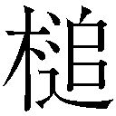

| ガガガ文庫 やはり俺の青春ラブコメはまちがっている。9（イラスト完全版） | |
| 渡航 | |
| (2014) | |
小学館ｅＢｏｏｋｓ
やはり俺の青春ラブコメはまちがっている。９
渡航
イラスト ぽんかん⑧
ことことと風が窓を叩いていた。海が近く、周りに高い建物もないせいで風はその勢いを殺されることもなく、吹きつけてくる。
思わず音につられて窓の外へと目をやった。
枝葉を落とした木々が揺れ、乾いた風が砂埃を立てている。まばらに歩く通行人たちもコートの襟元を立て、肩を竦めるようにして歩いていた。
この学校にも冬がやってきているのだ。去年も同じ季節が巡ったはずなのに、こんな冷たい風が吹くことを知らなかった。
風の音に混じり、いくつか声がする。
「でさ、超乾燥してるじゃん？ だから、優美子がちっさい加湿器持って来ててさ、なんか授業中とか超もくもくしてるの。最近のってＵＳＪ......ＵＳＡ？ からなんか電源取れるじゃん。あれあれっ！」
由比ヶ浜は身振り手振りを交えてぴょこぴょこ身体を動かしながら熱心に喋る。それを微笑み交じりに見つめると、雪ノ下はこくりと小さく相を打った。
「そう、便利ね」
雪ノ下は普段から口数が多いタイプではないから、その程度の返事でも別におかしな点はない。ただ、俺はその微笑みを直視することができなかった。
そっと床へと視線を外す。見つめた先で由比ヶ浜のつま先がくるっとこちらに向いた。
「だよね！ だから部室にもそういうの入れたいなって。ね、ヒッキー？ ......ヒッキー？」
おそらくは身体ごと俺のほうへ向いているのだろう。由比ヶ浜が俺の返事を促すようにもう一度問いかけてくる。物思いに耽っていたがために、反応がわずかに遅れてしまった。その間を埋めるために、わざわざ呆れたようなため息を一つ入れてから答える。
「......聞いてるよ。ＵＳＢな。なんでそんなアメリカンなところから電気もらわなきゃいけねぇんだよ」
「あ、それだ！」
ぽんと手を打って由比ヶ浜が答える。そして、俺と雪ノ下の反応を待つこともせず、すぐに続きをまくしたてた。
「今って携帯もそのＵＳＢのやつ繫いで充電できるし、超便利だよね～。あたしも最近、電池なくなるの早くてさー」
由比ヶ浜はそのまま会話を続け、今度は携帯電話の機種変更へと話題は移っていた。
おかげで絶え間なく会話が続いている。けれど、途切れることがないのは言葉だけで、話題も、その根底にあるべきものにも連続性はない。
それがふと、遠目から見た流氷のようだと思ったのは窓の外から覗く木々を冷え冷えとした風が揺らしたからだろうか。一歩足を踏み外してしまえば、深い奥底へとどこまでも沈んでいってしまいそうだ。
部室にはカレンダーこそないが、確認するまでもなく日付は把握できている。そうやって日付を確認する作業は、余命を一日一日と数える行為に少し似ていた。
既に十二月も半ば近い。あと二週間ちょっともすれば年の瀬。今年が終わってしまう。
すべてのことは終わっていき、日々に取り返しはつかない。
暮れていく太陽を眺め、今年も終わることを意識する。
無論、これまでも日は沈んでいたし、また同じように歳月も流れていたのだ。今日の太陽が昨日の太陽と違うものかと問われればその答えは否であり、結局同じものでしかない。ただ、それを見る者の意識が変わっているだけだ。
俺は、いや俺たちは。確実に、そこに見えている終焉の存在に気づいていて、だからこの何の変哲もない夕日にさえ、感傷を抱いている。
だが、流れていく時間の中で、この部室だけが凍てついていた。
あの生徒会選挙以来、何一つ変わることなく俺たちはこの部室で過ごしている。空虚と呼ぶほかない、違和感だけがあるやりとりを続け、薄氷を踏むような時間を過ごしている。
「寒いなーと思ってたけどあれだね、もうすぐクリスマスなんだねぇ......」
由比ヶ浜がまた別の話題を口にする。
俺も雪ノ下も、寒いだとか寒くなってきただとか明日はもっと冷えるだとか、そんななんでもない言葉を返し、それに参加していた。だが、大した広がりも見せないのを感じ取ってか、由比ヶ浜ががばっと勢いをつけて前のめりになった。
「あっ！ 平塚先生にストーブとかお願いすればつけてもらえたりしないかな!?」
「それはさすがに難しいんじゃないかしら」
由比ヶ浜の勢いにも雪ノ下は動じることなく、静かに苦笑した。
「あの人の場合、自分へのご褒美のほうが先だろ」
というよりむしろ誰かに自分をプレゼントすることが最優先な気がする。誰かもらってやれよ、マジで。
二人からテンションの低い答えが返ってくると、由比ヶ浜のテンションもちょっと下がった。
「そっかぁ......、だよねぇ」
由比ヶ浜が気持ち肩を落として、落胆して見せる。
ここまでで一連のくだりが終わった、という感じだろうか。
俺も雪ノ下ももともと多弁なほうではないし、気軽に話せるような話題を持っているわけでもない。だから、ここ最近は会話の主導権を由比ヶ浜が握ることが多かった。
大抵は何の気なしの、当たり障りのないような話題ばかり。なかなか手の込んだ暇つぶしだ。
由比ヶ浜は以前より、言葉の接ぎ穂を探すのがうまくなったように思う。
いや、それは少し違うか。
たぶん、奉仕部に入る前から由比ヶ浜はこの手の作業がうまかったのだ。空気を読んで沈黙を埋め、表面上取り繕って何事もなかったかのように過ごすその技術は彼女自身がこれまでに培ってきたものなのだろう。
こうして、俺が読んでもいない本を広げているのと似ているのかもしれない。
文字列と時間が流れていく。聞き流すようにして会話に交じり、ふと時計を見やる。
ここ数日に倣うのなら、そろそろ雪ノ下が下校を促してくる頃合いだ。
そのことを皆が悟っているのか、由比ヶ浜が窓から空を見上げた。
「暗くなってきたね」
「......そうね、今日はこの辺にしておきましょうか」
由比ヶ浜の言葉を合図に、雪ノ下は本を閉じると、 にしまう。俺たちも同じように帰り支度を済ませて立ち上がった。
にしまう。俺たちも同じように帰り支度を済ませて立ち上がった。
電気を消して、一気に暗くなった部室を出ると、その先も暗闇が続いている。森閑と冷え込んだ廊下を無言で歩き、昇降口から外に出た。
既に日は沈んでいて、校舎から漏れてくる明かりが頼りなく灯っている。残照も校舎の陰までは照らしてくれない。俺たちの立つこちら側にはもう夜の闇が広がっていた。
人工的な街灯の明かりを背にして、由比ヶ浜がさっと手を上げた。
「じゃ、あたし、バスだから！」
「ああ」
高らかに宣言するように手を挙げながら言う由比ヶ浜に応えて、俺は駐輪場へと足を向ける。そして、残された雪ノ下は俺たちを見送り、別れの挨拶を口にした。
「ええ、さようなら」
暗がりのせいで、その顔まではよく見えなかった。けれど、おそらくはあの微笑を浮かべているのだろう。雪ノ下はそっとを背負い直すと、その際に乱れたマフラーの襟元を正す。そんな物静かな所作だけが以前の雪ノ下と変わらないイメージを伝えてくる。
「じゃあな」
俺は短く挨拶を返すと、雪ノ下から目を逸らすように、駐輪場へと急いだ。
だが、どれだけ見ないようにしても脳裏によぎったあの表情は消えることがなかった。
あの日以来変わることがない微笑。
それを振り払おうと自転車を力強く漕ぎ出す。
慣れて、馴れ合った、なれの果て。
いずれはこんな状態も、日常という名前でパッケージングされ、記憶の奥底へ沈めて、思い出なんて呼んで正当化してしまうに違いない。
時間はすべての薬だという。
だがそれは違う、時間は遅行性の毒にほかならない。ゆっくりと、過去の出来事さえも浸食していき、終わらせて諦めさせるためのものだ。
街中を自転車で飛ばしていくと、家々に飾られたイルミネーションが目に留まった。由比ヶ浜が言ったようにもうすぐクリスマスがやってくる。
小さい頃は欲しいものがもらえる日だと、そういう認識しかなかった。まあ、誕生日の下位互換みたいなものだ。
けれど、今はもう違う。小さい子供ではなくなってしまったし、プレゼントが用意されていることもない。
なにより。
願うものも、欲しいものもなくなってしまった。
きっと、欲しがることさえ、許されていない。
......アホか。
始業間際の教室、自席でそんな呟きを漏らした。
の中に紛れ込んでいた一通の手紙には見慣れた字。妹の小町が俺宛に書いたものらしい。
クリスマスカラーに雪のようなキラキラのラメがあしらわれた可愛らしいレターセットの中から出てきたのは可愛くないことこの上ない希望プレゼントリスト。
まぁ、本当に伝えたいのは、帰りに洗剤買ってこいっていう最後の部分なんだろう。これはいわゆる小町ジョークだな......だよね？ じゃないとこんな換金性の高いリストにならないよね？ やだぼくの妹怖い。
とりあえずリストにある最初の三つは無視するとして、帰りがけにちゃんと洗剤は買っておくことにしよう。
しかし、無視できるのは最初の三つだけ。その後に書かれていたものは胸に引っかかった。
──俺の幸せ。
それはいったいどんなものだっただろうか。
幸せってなんだっけ......。うまい醬油のある家？ なんだ、ならもうあるじゃん！ 千葉に生まれて良かった!! 千葉の醬油は日本一ィィィィィィィ！（生産量が）
いやぁー、危ないところだった。千葉に生まれていなければ「幸せって何だろう......」と考えてドツボにはまるところだった。サンキュー、キッコーマン。それはそうとキッコーマンのキッコーって何だろうな。永遠の一七歳？ おいおい。
なんて、ちょっとお国自慢を交えて茶化しでもしなければ恥ずかしくてこの文言を直視できない。たぶんそれは小町も同じで、だからこそわざわざいらん一言の体で添えているのだろう。どうにも似た者兄妹である。
しかし、こんな手紙を渡してくるあたり、小町も何か思うところがあるらしい。
先日の生徒会選挙にまつわる一連の出来事は小町も関知している。というより、俺が小町を頼みにし協力してもらったのだ。
それがいいことであったのかどうか、俺にはまだ判断がつかない。
そんな心境を汲んでくれたのか、あの後どうなったのか、小町も細かくは聞いてこなかった。まぁ、根掘り葉掘り聞かれてもうまく説明できないし、苛立つだけだっただろう。それでまた喧嘩なんてことになったら敵わない。
それは小町も理解していることで、だからこそ、こういう遠回しな気の遣い方をしているのだと思う。やはりできた妹だ。
妹のお願いなので叶えてあげたいのはマウンテンマウンテンなのだが、あいにくと金がない。それどころか、小町の冗談交じりのお願いだって叶えてあげられる術がない。
比企谷八幡の幸福、 比企谷八幡の願望、 比企谷八幡の欲求。
これまで深く考えたことはなかった。
だから、俺の幸福がなんなのか、欲しいものはなんなのか。それもわからずにいる。
もし、小町が願ってくれたように、俺も何か願うことができるのなら。そんな願いが本当に通じるのなら。そんな願いが許されるのなら。
俺なら......。
......俺なら小町の幸せを願っちゃうね！ プリティでキュアッキュアなうちのラブリーでハニーなプリンセスのフォーチュンを願ってハピネスをチャージしちゃうよ！
しかし、可愛い妹だから今この時期は迷惑をかけないようにしなければならない。一応受験生だしな、あいつ。
大事なときにいらん心配をかけるのも、時間を奪うのも本意ではないのだ。
とりあえず俺の幸せ云々は脇に置いておき、俺は手紙を折り畳んで制服の内ポケットにしまう。そこだけがほんのりと温度があるように感じた。なにこれ俺小町のこと好きすぎじゃないですか。大丈夫、妹だからセーフ。いや逆にアウトだなこれは。
妹からもらった手紙を見て頰緩めてるとか結構やばいので俺は背筋を伸ばし、襟元を正す。あれだな、やっぱりこう俺のクールなイメージを守らないと。ちなみに、自分ではクールなつもりでも周囲からはただの根暗だと思われてる場合が多々あるから注意が必要（俺調べ）。
小町からの手紙を見て時間をつぶしていると、朝のＨＲまでもう間もなくという頃合いになった。クラスメイトたちが慌ただしく教室へと駆けこんでくる。
そのなかで、チャイムなど気にもしていないような、やけにゆっくりと気だるげな様子で歩いてくる女子の姿が目に入った。青みがかった黒髪が足取りに合わせて揺れる。
川なんとか......、いや、山なんとか？ それとも豊なんとかだっけ？ まぁ、何川豊さんでもいいや。川なんとかさんは教室の様子になどまるで無関心というふうに自分の席へと向かう。その途中、冷たく取り澄ましたような瞳が俺とぶつかった。
目が合ってしばし無言、そしてなぜかお互い固まってしまう。
知らない仲でもないし挨拶くらいはしておくか、まぁ、名前は知らないんだけど。それにこの前の生徒会選挙では世話にもなった。その礼も言っていなかったし。しかし、いざ何か言おうと思うと、どう話しかけるのが正解なのかよくわからない。
「あー、......まぁ、なんだ」
とりあえず会話のきっかけを摑もうと何の意味も持たない吐息と言葉を吐き出す。すると、向こうも何か言わなければと思ったのだろうか、ちょっと困ったように口元をもにょもにょと動かしてから小さな声を出した。
「......おはよ」
「お、おお」
顰め面のままされた挨拶に思わず生返事してしまった。
出鼻を挫かれたおかげで、ろくに言葉を発することもできずにいると、それ以上に会話が発展することもなく、向こうはすたすた窓側後ろの自分の席へと急いで行ってしまう。
まぁ、なんか間が空いて気まずい雰囲気あったからな。こういうときは逃げるに限る。俺は席に座ってしまっているし、となると行動をとるべきはあちらだ。
寝不足なのかやる気ないのか席に着くなり、がばっと机に突っ伏してしまった川なんとかさんを眺めつつ、今のやりとりを冷静に思い返してみる。
......おいおい、マジかよ川なんとかさんが挨拶してきたよ。お互い名前もろくに覚えてないっていうのに、えらい進歩じゃねぇの。
とはいえ、挨拶程度は小学生でもちゃんとするしな。むしろ不審者には積極的に挨拶していけと小学校で教えてるまである。そう考えると向こうから挨拶されたのは不審者に対する先制攻撃だった説が浮上してきちゃった！ あれだな、何見てんだよおめどこ中だよ的なことかな。
まぁ、妹からの手紙で頰緩ませるような不審者にはこれくらいのジャブ打ってくるのは当然のことだろう。だがちょっと待ってほしい、俺の記憶が確かならあいつも弟である川崎大志からのメールに微笑みを浮かべてた気がする。あ、そうだ、川崎だ。
......やだなにあの子、不審者。今度からは俺も挨拶して牽制しよう。
挨拶ってほんと大事だな。
挨拶で、しっかり築こう、監視社会（今週の標語）。
挨拶されて好意を寄せられているのかと勘違いするどころか、挨拶されることに恐怖しなければならなくなるこんな世の中じゃ。ポイズン。
川崎の様子を窺うついでに頰杖ついて教室をちらりと眺めてみた。
クラスメイトたちに目立った変化はないが、彼らのいる風景は若干様変わりしていた。
後ろのロッカーにはコートやマフラーが突っ込まれ、誰かが勝手に設置した湯沸かしポットまである。女子はブランケットを膝に掛け、脚を隠しているのが大半だ。
その中で、長い脚を惜しげもなく晒している生徒がいた。三浦優美子である。
ゆるっと巻かれた金髪をくるくると指先で弄び、短いスカートからすらりと伸びた脚をゆっくりと組み替える。すると、ひらりと裾が靡いた。
思わず、視線がぐぐっと寄ってしまいそうになるのを精神力で堪え、ぎりぎり視界に入ってくるくらいのところで我慢した。これ我慢できてねぇな、見ちゃってるし。あっ、でもちょっと待って！ 座っているという油断もあってなんだか景色が......と思ったらなんか三浦の周囲にもくもくとスモークめいたものが漂っていた。なにこれ規制？ ＢＤだとちゃんと湯気取れるの？
普段から薄目みたいな俺だがさらに目を細めれば何か（ピンク）見えてくるんじゃないかと曇りきった瞳で凝視していると、そのスモークを吐き出している小さな装置を発見した。ああ、由比ヶ浜が言ってた加湿器ってあれか。確かにもくもくしてるわ。なんか敵キャラ出るときのスモークみたいになってる。
今日も今日とて女王の如く君臨する三浦の横には、いつも通り由比ヶ浜と海老名さんが侍っていた。
「優美子、寒くないの？」
海老名さんが気遣うように言うと、三浦はくるくる金髪をさっと払い、自信に満ちた微笑みを浮かべた。
「別にー？ これくらい普通っしょ」
そう言いはしたものの、三浦はくしゅっと小さなくしゃみをする。バツが悪そうな三浦の顔を見て、隣にいた由比ヶ浜と海老名さんがほわっと温かそうな顔をした。うんうん、俺もなんだか温かい気持ちになりました。
生足魅惑の三浦と対照的に、海老名さんと由比ヶ浜はスカートの下にジャージをはいている。おい、その格好見てる側のテンション下がるからほんとやめろ。
......いや、だがちょっと待て。こういう格好は女子高生しかしないと考えると、なんだかこれはこれでいいものな気がしてきた。短いスカートにクッソダサいジャージというミスマッチな組み合わせが生み出す のアンサンブル。秘されているからこそ、その奥にある輝きに想像の翼を羽ばたかせることができるのではないだろうか。お前たちが俺の翼だっ！ あまり男子の想像力を舐めてもらっては困る！
のアンサンブル。秘されているからこそ、その奥にある輝きに想像の翼を羽ばたかせることができるのではないだろうか。お前たちが俺の翼だっ！ あまり男子の想像力を舐めてもらっては困る！
が、彼女たちの近くにいる男子どもはそんなことにさして興味がないのか、由比ヶ浜たちのジャージには目もくれない。まったく最近の若者は想像力が足りなくていかん。まぁ、別に無理して見てくれってわけでもないからいいんだけどさ。
それでも注意深く観察していると、どうやら想像力が足りないから見ていないというわけでもないらしい。
その証拠と言っていいのかわからないが、戸部が長ったらしい襟足を搔き上げたりぐいぐい引っ張ってみたりしながらそわそわと身体を揺らしていた。そのたびに視線がちらっとグループ内を行き来する。なんだか居心地が悪そうだ。
葉山を見て、三浦たちを見て、そして大岡と大和のほうへと向き直る。
「いや、でもマジ寒いべ」
「それな」
言うと、大和が頷き、大岡が大仰なため息を吐く。
「こんな日に部活とかほんとないわー」
「あー。それ、あるわー」
あるのかないのかどっちなんだ......。ないとあるが同じ意味を指していてマジ世界は円環の理に導かれていると思いました。
戸部が軽薄な笑みを浮かべて、なー？ と同意を求めるように葉山と三浦たちに顔を向ける。
すると、葉山は小さく微笑みを浮かべるほかには特にこれといって答えない。
そのやりとりが視界に入っていたであろう三浦はといえば、ちらと葉山の顔を窺うだけで何も言わなかった。
遠巻きからは、葉山たちのグループは普段とそうそう変わりがないように見えるかもしれない。実際、俺だって今の些細なやりとりを見落としていたらそう思っていたはずだ。
けれど、そこには確かな断絶があった。
彼らと彼女らは同じ場所にいながら、その実、交流は持っていない。
戸部たちは別に三浦たちをまったく気にかけていないのではなく、気にしているからこそ見ないようにしているのだとようやく思い至った。
いつもと同じように見えて、それでも確かに違っている。
おそらくは中心、マスターピースであるはずの葉山と三浦の間に妙な距離感があるからだろう。男子、女子の中心それぞれに溝があれば、お互いに距離が開くのは当然のことだ。
そのことを誰も言葉にはしない。
だが、言葉にしないという行為、それ自体が彼らの距離感を物語り、またさらに距離感を生み出していた。
彼らの間に何かあったのだろうか。戸部が嫌われてるから三浦にシカトされてるってわけじゃないよね？ やだ、なにそれ可哀想！ 俺みたい！
おそらく戸部に原因があるのではなく、三浦は先日のダブルデートを気にしているんじゃないかと思う。まぁ、普通に考えたら、相手はあの葉山なんだから他校の女子と遊ぶくらいなんでもないことのように思えるのだが、その認識は少し違うらしい。
確かに、葉山は派手に浮き名を流すようなタイプではない。むしろ、よく知らない女子とは一定の距離を保っているように見える。
だからこそ、直接その現場を見てしまった動揺が三浦の中にあるのかもしれない。
たぶん俺が見ている葉山と、三浦が見ている葉山は違うものなのだろう。三浦の知る葉山は、ああいう行動をとる人間ではないということだ。
......いやぁ、なんか申し訳ないなぁ。葉山があんなことしたのって俺のせいでもあるし、俺と関わってしまったばっかりに三浦に変な不安を抱かせてしまったわけで。でも、関わってきていらん世話を焼いたのはあっちなわけで、これ全然俺悪くないと思うんですよね。でも、三浦もなんか悪いことしたわけじゃないし......。こないだパンツ（ピンク）見ちゃったこともあって三浦に対して申し訳なさが加速してる。
やはり三浦の元気がないとグループ全体が暗い。だが、異変があるのは三浦だけではない。
由比ヶ浜もまた、普段とは少し違っていた。
戸部たちの会話に笑みを浮かべつつ黙って聞き、三浦と海老名さんの会話には上手に相を打ちながら聞き役に回っている。
部室での由比ヶ浜とは違う。
積極的に話しかけることもなく、無理に会話の接ぎ穂を探すこともない。何より、相手の反応や顔色を窺うような素振りを見せなかった。
もしかしたら今の由比ヶ浜にとっては、三浦たちといることが安らぎなのかもしれない。きっともう、あの部室は由比ヶ浜にとって安息の場ではないのだ。
そのことがどんよりと俺の胸につかえを残した。
途切れがちだった葉山たちの会話だが、沈黙を嫌うように戸部があーと声にならない息を吐く。それをそのまま言葉に繫げた。
「......っつーか？ 最近、マジ寒いべ。ガチでしばれるわー」
戸部！ 同じ！ さっきと同じ話しちゃってるよ！ いくら天気の話が困ったときの話題ナンバーワンだっていってもさすがに酷使しすぎだろ......。権藤権藤雨権藤みたいになってんじゃねぇか。
戸部の言葉に大岡と大和もさっきと似たような反応をした。
「まぁ、もう冬だしな」
「だべ？」
予定調和どころか世界がループしてるのかと思ったほどに同じような会話をする戸部たち。だが、今日の戸部はここからが違った。まぁ、普段がどうかよく知らないけど。戸部にあまり興味がなくてごめんね？
「っつーか、クリスマスとかどうするー？」
戸部が葉山に話しかけるふうに言うものの、これはなかなかどうしてお耳が海老名さんのほうへ向いてますよ？
その気配を察したのか、海老名さんが先手を打った。
「わたし、年末の準備で忙しいからなぁ」
ああ、そうだろうね。有明あたりで開かれる冬のお祭りがあるもんね。うんうんと納得していると、それまで興味なさそうだった三浦がぴくっと反応した。くるくる髪を弄っていた手も止まっている。
「クリスマスかぁ......。海老名はまぁ、アレだけど......みんなどーなん？」
言いながらもその視線はちらっと葉山に向けられ、すぐに逸らしてしまった。机の下ではスカートの裾を握ったり払ったりとせわしない。こころなしか、その頰もうっすら桃色（ピンク）づいていている。
おお、いいぞ！ 頑張れ三浦！ ......なんで俺はあーしさんを応援しちゃってるのん？ あ、戸部君のことは別に応援してないでーす。
が、俺の応援も空しく、葉山は首を小さく傾げる。
「俺もちょっと......」
「え？」
その言葉が意外だったのか、三浦は若干声を詰まらせながら問う。
「は、隼人......な、なんか予定あったりするの？」
「ん？ ......ああ、ちょっと家の用事」
そう切り替えした葉山の微笑みはさっきまでの物憂げなものではなく、いつも通りの温かみのあるものだった。
「ふ、ふーん......」
葉山から目を逸らし、あまり気のないふりをしながらも、三浦の手はまた髪の毛を弄り始める。そわそわと何か聞きたげにしながらも、決してその先を尋ねようとはしない。
二人の会話が終わればまた男女は分かたれる。自然と話題は分散し、男子たちは冬休み中の部活の話題、女子はクリスマス時期の買い物の話題に花を咲かせ始めた。
その流れが不本意だったのか、戸部はばっさばっさと髪をかき上げてから、ぴっと指を立てて、全員を眺めまわす。
「じゃ、じゃああれじゃね！ 初詣とか」
どうやら戸部は話題を引き戻そうと頑張っているらしい。いつだったか、葉山が戸部のことをムードメーカーと評していたが、本当にそうなんだな......。何も考えていなさそうなのに、案外周囲に気を使っている。あるいは本能的に、これ以上の溝が開くのはまずいと感じ取ったのかもしれない。ノリと空気だけで生きているからこそ敏感なのだろう。
「うーん、お正月は家族で過ごすと思うけど......」
戸部が頑張るが海老名さんがまたするりと躱した。かくっと戸部の肩が落ちる。
と思ったのだが、海老名さんは頰に指を当て、うーんと思案する。
「でも、当日じゃなくても......みんなで遊ぶのはいいね」
みんなで、という部分を強調して海老名さんが続けると、三浦がぱっと顔を上げる。
「あ、それよくない？」
「うん、だね」
由比ヶ浜が首肯すると大和と大岡もうんうんと頷く。すると、戸部が「だべ？ だべ？」と全員の顔を見渡す。それを見て葉山がふっと破顔した。
「......そうだな」
「だ、だべー!? じゃ、じゃじゃじゃあ、いつにする？ あ、隼人君、いつなら空いてる系？ ちな俺いつも空いてんだけど」
「部活あるだろ......」
葉山が呆れ交じりのため息を吐くと、脇で聞いていた三浦が興味なさそうに口を開いた。
「で、いつにする？ ......あーし、別にいつでもいいけど」
口ぶりこそ興味なさそうだったが電灯に爪をかざし、ネイルを見ている姿はどこか浮き足立っている。ばっちり決まっていることを確認すると、ふふっと笑みを浮かべた。
そんな三浦の様子を海老名さんが優しい眼差しで見つめている。
ようやく彼らの中にもとの血の通った会話が戻ってきた。そのことに由比ヶ浜が安心したような吐息を漏らす。
「あ、ちょっとごめん」
由比ヶ浜は三浦たちに断りを入れてその場を離れた。あら、お花を摘みに行くのかしら。しかし、この隠語、男子バージョンの場合、どういえばいいんだろうな。ちょっと鹿を撃ちに、とかいうとかっこいいかもしれん。
などと思っていたのだが、別にそういうわけではないらしい。由比ヶ浜は後ろにある自分のロッカーに向かい何かごそごそやっている。それから、三浦たちのほうへは戻らず、なぜか俺のほうへやってきた。
「ヒッキー」
声をかけられ、由比ヶ浜のほうをふり仰ぐ。すると、由比ヶ浜は少しもじっとし、居心地悪そうに身を る。それから、言いづらそうに口を開いた。
る。それから、言いづらそうに口を開いた。
「こっち見過ぎだから......」
「え、いや、別に見てたとかじゃなくてだな......」
つい答えに口ごもってしまった。確かにばっちり見ていたのだが、直接そう言われるとどうにもバツが悪い。言い訳じみた言葉が後に続きそうになったところで、由比ヶ浜はぶんぶん手を振りながら、呆れ口調で遮った。
「いやいや、超見てたから。ヒッキーのほう見たらこっちガン見してたからぶっちゃけうわって思ったもん」
なんだよ、うわって......。ひどくない？
「ていうか、お前もこっち見んなよ......」
「え!? や、それはほ、ほら！ なんか感じたの！ 圧力っていうか寒気っていうか......」
その二つはだいぶ違うんですがいいんですかね......。手をわちゃわちゃとせわしなく動かし、慌てたように言い訳じみたことを口にしつつ、由比ヶ浜は最後に付け加える。
「ていうか、ヒッキーこそなんでこっち見てたの？ なんか用とかあった？」
その問いかけはなんでもないことのように思えたのに、ふと心のどこかに引っかかった。なぜ、俺は彼らを見ていたのか。
「......いや、用はないけど。............まぁ、目立つからついな」
「ふーん......」
由比ヶ浜の返事は納得しているんだか、していないんだが微妙な感じだ。けれど、別に噓はついていない。葉山たちのグループは目立つ。目立つものは自然と視界に入ってくるものだ。だから、つい見てしまうのはそうおかしなことじゃない。
けれど、俺が見ていた理由は、きっとそれだけではないのだ。
剝がれ落ちたものをどう取り繕えばいいのか。
葉山たちなら、それを俺に教えてくれる気がしていた。
人間観察の極意とは他人を見るのではなく、他人を見ることでそこに自身を写し取り、顧みることにあるのかもしれない。
たぶん、俺が葉山たちに視線を向けていたのは、虚飾だと、欺瞞だと思っていた人間関係がそこにあることを知っていて、それを今の自分に重ねていたのだ。
戸部はグループ内の不穏な空気を感じて無自覚に行動していたのかもしれないが、海老名さんは自覚的に溝を埋めようとしていたのだろう。
些細な行き違いや小さな違和感を少しずつ擦り合わせて、三浦も葉山も戸部も海老名さんも納得できるお互いの妥協点を探って、彼らなりの在り方を調整しているように俺には思えた。
そんなやり方も、あったのだ。
彼らでさえも、本当は自分たちのコミュニケーションに疑問を抱き、悩みながら手探り状態でいる。
──なら、いったい、どちらが偽物だったのだろうか。
「ヒッキー？」
思索に囚われそうになったとき、由比ヶ浜の声に引き戻された。顔を上げれば、由比ヶ浜は少し心配そうな表情で俺を覗き込んでいる。気づかないうちに互いの顔が近づいていて、濡れた瞳や温かな息遣いがひどく生々しく感じられた。
ぱっと背もたれに倒れるようにして距離をとる。今、由比ヶ浜に不安を抱かせるような表情はするべきじゃない。彼女もまた、現在の奉仕部の状況に戸惑っているのは間違いない。その原因を作ったのは俺なわけだし、せめて振る舞いくらいはちゃんとするべきだ。
考え事はいったんやめだ。自分ひとりのときに考えるべき問題だと思う。幸い時間だけは腐るほどある。こういうときぼっちってほんと便利。
さっと話題を変えることにした。
「それよか、見られたくないならもうちょい静かに喋れよ。あれだぞ、たぶんお前らに向けられた視線の四割くらいはこいつらうっせーなーっていう非難の視線だぞ」
「うっ、そうかな......。でも、それはとべっちいるから無理だよ」
結構ひどいこと言うな、こいつ。確かにうるさくてウザいけど戸部だっていいとこあるじゃん、毛根が丈夫そうなとことか。
まぁ、しかし、うるさくなくともつい視線がいってしまうことはある。今も由比ヶ浜と会話しつつもついつい目が動いちゃってるし。
や、ほら、やっぱ視界の中でなにか動いたりすると気になっちゃうじゃん？ ましてや、それが可愛い子だったりするとなおさらのこと。
だからなのか、教室前方の扉が開くと同時に俺の視線もついっとそれを追ってしまった。
そこから入ってきたのは長袖長ズボンのジャージ姿の戸塚彩加だ。廊下は冷え込んでいたのか、教室に入ってくるとほっと息を吐く。思わず、俺もひゅうっと息を吸う。ああ、今戸塚の吐いた息が俺の中に入ってきて......。うん、これはさすがに我ながら気持ち悪いな。
戸塚が俺と由比ヶ浜の存在に気づき、てとてと歩み寄ってきた。
「おはよう」
ぱあっと花が綻ぶような笑顔とともに爽やかな朝の挨拶。やっぱ挨拶って大事だなぁ......。防犯のためとかそういう理由で挨拶するのはとても悲しいことだと俺は思うよ、うん。
「おはよう、さいちゃん」
「おう、おはよう」
俺と由比ヶ浜が挨拶を返すと戸塚がおめめをぱちぱちっとさせた。可愛いなぁ......あ、いや、そうじゃない。なんで戸塚はちょっと可愛く驚いてんだ？ むしろ、その可愛さに俺が驚くくらいなんだけど。
「戸塚、どうかしたか？」
はて、今おかしなこと言ったかしらんと問うてみると、それに気づいた戸塚が間を誤魔化すように胸の前で小さく手を振る。
「なんか、教室で二人がそうしてるのって珍しいなって思って」
「そ、そう？」
由比ヶ浜が少しぎくりとした様子で答えると、戸塚も気遣ったのかちょっと慌てて言葉をつけ足した。
「あ、なんかあんまりイメージになかったから」
言われて確かにと気づく。教室内で由比ヶ浜が俺に話しかけてくることはあまりない。
ああ、そういやこいつ、さっきロッカー寄ったわりになんも持ってきてねぇもんな。おそらくいきなり俺に話しかけに来ると何事かと思われてしまうから、それを避けるためにワンクッション置いたのだ。さすがの気遣いというかなんというか......。
しかし、そうやって配慮をしても見る者が見ればその不自然さには気づくのだ。
「......なにかあったの？」
戸塚は俺と由比ヶ浜を交互に見て心配そうに尋ねてくる。
「いや、全然っ！ ......ま、まぁ、ちょっと部活の相談、かな」
「ああ、部活かぁ」
由比ヶ浜が焦ったように言葉を濁して答えると、戸塚はぽんと手を打って納得した。うん、人を疑うことを知らないのは美徳だな。戸塚くらい純真無垢だと そうとする側が良心の呵責で死ぬ可能性がある。
そうとする側が良心の呵責で死ぬ可能性がある。
「でも、また前みたいに部活やってるなら良かったよ」
にこりと、本当に何の気なしに戸塚は言ったのだと思う。あの生徒会選挙にまつわる一連の出来事は戸塚も関わっている。今、俺と由比ヶ浜が部活のことについて会話をしている姿は傍から見れば万事うまくいった証のようにも見えるだろう。
けれど、由比ヶ浜の表情は硬かった。
「う、うん......。あ、そうだ！ さいちゃんもまたなんかあったら来てよ！」
「......そうだな」
一瞬言葉を詰まらせながらも由比ヶ浜はすぐに取り繕うように笑って、そんなことを言う。俺もそれに頷いた。
前みたいに、と言っていいのかどうかはわからない。俺たちと雪ノ下の間にはちゃんと会話もあるし、けして険悪な状態というわけではない。無視するようなこともないし、意見が衝突することもない。
何事もない。
いや、何もないのだ。ただそれだけだ。
俺たちの、妙に間が空いてしまったやりとりに戸塚は小首を傾げて、訝しげな視線を送ってくる。何かあったのかと物問いたげな瞳。だが、うまく説明できる気もしない。さっと話の方向をずらすことにした。
「いや、ほら、あれだ、むしろ何もなくても来ていいからな！ いつでもウエルカムだからな！」
「いつもよりやる気あるし!?」
由比ヶ浜の目が驚愕に開かれる。いや、俺普段そんなにやる気なさそうかしら......。
「あはは。うん、じゃあまた何かあったら」
戸塚は楽しげに微笑むと、ちらと時計に視線をやった。もうぼちぼち担任が来る頃合いだろう。
「そろそろＨＲ始まりそうだね」
「うん、だね。じゃ、そろそろ」
声をかけられ、由比ヶ浜も戸塚と一緒に俺の席から離れる。その去り際。
「......あ、そうだ、ヒッキー」
由比ヶ浜がぱっと振り返り、こそっと俺の耳元に口を寄せた。
ふわりと漂うフローラルな香り、耳にかかる柔らかな吐息。思いがけず近づいてしまった距離はあのときの、夕暮れの放課後、何かが終わってしまった寒々しい部室での温かさを思い出させる。
不意に心臓が跳ねた。由比ヶ浜は控えめな声で囁く。
「......部活、一緒に行こうね」
ひと言そう言うと、俺の返事は待たず、由比ヶ浜は自分の席へと駆けていった。それを見送りながら、我知らず胸を押さえていた。
心臓はもう跳ねてははいない。むしろ、跳ねた分だけ身の内に食い込んできて、ぎりぎりと締めつけてくるような気がした。
わざわざ由比ヶ浜があんなことを言ったのは、部室に行きづらい気持ちがあるからだろう。
俺もそれは同じだ。部室へ行くのは気が進まない。
それでも毎日欠かさず行くのは、どこか被虐的ですらあった。きっと三人とも、そこに行きたくなどないだろうに。
けれど、それでも行くのは認めたくないから。失ってしまったものの大きさを認めるわけにはいかなかったからだ。
あるいは、保全すべきだと、維持すべきだと、まるで生き物が種の保存をするように、自己保存をするように、ただただ使命感として、義務として行っているだけなのだ。
逃げ出さないようにするだけの日々。
死人を悼むような日々だ。
失ってしまったことを、言い訳にしないために。理不尽さに屈して認めないために。だから、いつもより気を張って、いつもよりいつも通りであろうと振る舞う。
それはきっと欺瞞だろう。
けれど、選択したのは俺だ。
選び直すことは許されていない。時は常に不可逆で、取り返しがつかないことも多々ある。嘆くことは過去の自分に対する裏切りだ。
後悔するのはそれだけ大きなものを自分が持っていた証拠だ。だから、嘆いたりしない。本来、持ちえなかったものを手にできていた。その事実だけで満たされるべきだ。
幸運も幸福も、慣れたらただの日常でしかない。それが途切れたときにこそ、不幸を感じるのだと思う。
ならこの先何も手にしないのが当然だと思えば、それだけで人生は潤う。
せめて過去の自分を否定しないように。
俺はこれからの日々をそうやって過ごしていくのだろう。
× × ×
相も変わらず身の入らない授業を終えての放課後、帰り支度を済ませて、真っ先に教室を出た。扉を開ける間際、ちらっと由比ヶ浜のほうを見る。由比ヶ浜はまだ三浦たちと何か話しているようだった。
まぁ、一緒に行こうと言われた手前、待つべきなんだろう。だが、それにしたってわざわざ人目につくように待つ必要もない。
廊下に出て、数歩歩いたところで壁に寄りかかる。
すると、一分とたたぬうちに、慌てた様子の由比ヶ浜が教室から飛び出してきた。きょろきょろと周囲を見渡してすぐに俺に気づいた。それからぷんすか怒りながら俺に詰め寄ってくる。
「なんで先に行っちゃうし!?」
「行ってねぇだろ。こうして待ってる」
「そうだけどっ！ ......あれ？ じゃあいいのか」
勝手に納得すると、由比ヶ浜はひと息ついてから、むんと気合いを入れるようにリュックを背負い直す。
「......行こっか」
「ああ」
廊下でお互いに視線を交わし、特別棟へ向かって歩き始める。
その目配せが、まるで共犯者のようだなと、ふと思った。
歩調は普段よりも緩やかに、を心がける。いつものペースで歩いたら、きっと由比ヶ浜を置いてけぼりにしてしまうだろう。
先ほどまでいた教室と違い、廊下は寒々としていた。
人通りもなく、俺たちの足音だけが響いている。ただ、黙々と歩く。部室では多弁な由比ヶ浜だが、今このときは静かだった。まるで反動のようだとすら思う。
だが、部室が近づくにつれ、そんな沈黙に耐え切れなくなったのか、由比ヶ浜が口を開いた。
「あのさ......」
「ん？」
問い返すと、由比ヶ浜は力なく首を振る。
「......なんでもない」
「そうか」
答えるとまた沈黙が下りる。次の角を曲がればもう部室だ。俺にとっては一日ぶりの部室だが、由比ヶ浜にとってはどうだろうか。これまでなら部室で雪ノ下と昼食をとっていたはずだ。ふと気になって聞いてみた。
「そういや、昼ってどうしてんだ？」
「え？ うーん、今までと同じ」
由比ヶ浜は少し考えてから、困ったように笑ってそう言った。
「......そうか」
聞いて充分に納得できた。話している内容はきっととりとめのないことばかりに違いない。由比ヶ浜が話しかけ、雪ノ下がそれに答え、そんなやりとりをずっとしているはずだ。
考えてみれば、形だけは今までと同じなのだろう。だから、由比ヶ浜は答えに詰まったのだ。
同じ場所で同じ時間を同じメンバーで過ごして、それなのに、どうしても同じものだと思えない。
あの日からずっと続けている間違い探し。その答えを見つけられないまま、俺は扉に手をかけた。
既に鍵は開いている。
これでもＨＲが終わってすぐに出てきたのだが、この部室の主は俺たちよりも早くここに来ているらしい。
扉を開け、一歩踏み入って眺めれば、部室はいやにがらんとしている。こんなに何もない部屋だっただろうか。机も椅子も、今は使われていないティーセットも変わらずある。
そして、雪ノ下雪乃も以前と変わらず、そこにいる。
「こんにちは」
「やっはろー！ ゆきのん！」
由比ヶ浜は元気に挨拶を返すといつもの席へと座る。俺もまた軽い会釈を返して席に着いた。動かされることのない椅子は俺たちをこの場に縫い付ける杭のようだ。
雪ノ下も椅子に腰かけ、いつもの背筋の伸びた姿勢で読書を再開する。由比ヶ浜は携帯を出し、俺もまたから文庫本を取り出す。
まるで儀式のように定型化された行動。以前と同じことをすれば、再現されるのではないかと考えているのかもしれない。だが、どれだけ発動条件を満たしても、そんなことはありえない。表面をなぞっているだけなら、いずれすべては摩耗する。
ため息は出なかった。
「そういえばね、今日、さいちゃんがさー」
不意に由比ヶ浜が口を開く。その口ぶりは一日の出来事を一生懸命母親に話す幼子のようでもあった。けれど、そうではない。由比ヶ浜は停滞している空気をどうにかしようと、とにかく言葉を矢継ぎ早に繰り出しているだけだ。
それは、空気を読んでばかりいて、言いたいことも言えずにいたあの頃の由比ヶ浜の姿にだぶって見える。
俺は、そのことに気づきながらも、由比ヶ浜の話に乗る。
延々と繰り返されるやりとり。いつまでこれが続くのだろう。いつまでこれを続けていけるのだろう。これを続けなくなったら、どうなるのだろう。
きっと今日も、昨日と同じような時間を過ごすことになる。
そして、たぶん明日も明後日も。
閉じてしまった世界にあるのは平穏ではなく、閉塞であり、停滞だ。残されている道は腐って、朽ちていくことだけ。
由比ヶ浜が用意した話題も尽きたのか、会話が止まった。水を打ったような静寂が広がっていく。
そのとき、静けさと閉塞感を破るように扉が叩かれた。
× × ×
もう一度、扉がノックされる。
久しぶりの来客に俺たちはつい顔を見合わせた。この来訪に二人がどう思ったのかはわからない。由比ヶ浜はハッとした様子で扉を見ていて、雪ノ下の表情は変わらなかった。俺はといえば、知らないうちに唇を嚙み締めていた。
「どうぞ」
雪ノ下は扉を一 し、声をかける。その声を待って、扉が開けられた。
し、声をかける。その声を待って、扉が開けられた。
「せんぱーい......」
亜麻色の髪を揺らし、カーディガンの余った袖で目元を押さえながら、一人の女子生徒が入ってきた。
この総武高校の生徒会長、一色いろはだ。一色は生徒会長になっても、相変わらず少し制服を着崩している。
一色の登場に、由比ヶ浜は驚いた顔をし、雪ノ下はそっと眉根を寄せる。俺はたぶん、呆れ顔をしていただろう。こいつ、会長就任早々何しに来たんだ......。遊びに来たってわけじゃなさそうだけど......。
一色は俺たちの逡巡を気にも留めず、可愛く縋るような、ともすれば情けないともいえるような声を出し、俺の近くまで歩いてくる。それから、ふえぇ......とわざとらしく半べそをかき始めた。
「せんぱーい、やばいですやばいです......」
相変わらずあざとい......。ちょっと庇護欲そそられちゃうからやめてくれませんかね......。力になってあげたくなっちゃうだろうが。これが一色じゃなかったらすぐさま助けてるまである。
「いろはちゃん、どうしたの？ とにかく座って」
「あ、結衣先輩ありがとうございます」
由比ヶ浜に椅子を勧められると、さっきまでの半泣きはどこへ行ったのか、一色はけろりとした表情で椅子に座る。
それを見届けてから雪ノ下が声をかけた。
「とりあえず、話を聞きましょうか」
雪ノ下の声は普段と変わらず、特に含むようなところもない。その対応に少しばかり安 した。と、同時に安した自分に違和感を覚える。
した。と、同時に安した自分に違和感を覚える。
なぜ俺は今、安したのだろうか。
その違和感の正体を見つけ出す前に、一色が口を開いた。
「それがですね......、実は先週から生徒会の初仕事が始まったわけなんですけどー」
「あ、もうやってるんだ。早いねー」
由比ヶ浜の相に一色がですよねーと相を打ち返して話を続ける。
「で、その仕事が超やばいんですよー......」
言った瞬間、一色のテンションががくっと下がった。どうやらその仕事の内容を思い出してしまったらしい。そんなにひどいのか......。俺は内心びくつきながらもその中身を聞いてみることにした。
「どうやばいんだ？」
問うと、一色がぱっと顔を上げる。
「もうすぐクリスマスじゃないですかー」
「ああ、そうだな。......え？ いや、話飛びすぎだろ」
びっくりした......。話題が急にボソンジャンプした。まぁ、確かにもうすぐクリスマスだけれども。俺が言うと、一色はぷくっとあざとく膨れて口をとがらせる。
「飛んでませんよ。話ちゃんと聞いてくださいよー」
「そうだよ、ヒッキー」
なぜか由比ヶ浜もぷくっと頰を膨らませて一色の擁護に入ってきた。ええー、俺が悪いの？ 女子の話し方独特すぎんだよ。わかるかよ。
わかったもういい話を続けろとじとっとした視線で先を促すと、一色が再び話し始める。
「で、クリスマスってことで、近くの高校と合同で地域のためのクリスマスイベントをやろうって話になってまして、なんかお年寄りとか小さい子相手のイベントっぽいんですけど......」
「へぇ、どこの学校とやるの？」
「海浜総合高校ってとこなんですけど」
はぁ、あそこの学校か......。うちの学校からも程近いそこそこの進学校だ。結構前に三つの高校が統廃合された結果、創立された比較的新しい高校である。三校分合わさっていることで規模も大きく、設備も豪華だし、校舎も綺麗だ。エレベーターとかいうオサレで便利なものがあるし、ＩＤカードなんてこじゃれたもんで出席をとっているらしい。しかもどういう仕組みかよく知らんが単位制だなんだとなんだか先進的な雰囲気もあって、結構人気の学校だったはずだ。
しかし、うちの学校とはあまり大した接点はなかった気がする。どうにもこの合同イベントは不自然に思えた。
「......その企画、誰が言い出したんだ？」
聞くと一色は何がおかしかったのか、やだなー先輩とばかりに軽く笑い、俺にだけわかるようにこそっと秘密めかして小さな声で答える。
「向こうからですよー。わたしが言うわけないじゃないですかー」
「だろうな......」
こいつ、ほんと仕事舐めくさってそう。こういうのが職場にいると迷惑だろうなー。人のふり見てわがふり直せという言葉もある。俺は人に迷惑かけないように絶対働かないべきだと思いました。
それにしてもよくそんな姿勢でこの提案受けたなこいつ......と呆れ交じりに見ていると、一色は思い出し怒りでもしていたのか、可愛いわたしアピールすることも忘れてぷんすかしながら話を続けた。
「そんなの言われたら普通断るに決まってるじゃないですかー？ わたしもクリスマスの予定ありますしー」
「断るに決まってるんだ......」
「理由が私的すぎるだろ......」
一色のあんまりな言い草に由比ヶ浜も俺も閉口してしまう。メンタルが強いというか怖いもの知らずというか......、こいつ俺の次くらいに性格腐ってるんじゃないの？ 結構親近感湧いてきちゃって下手すると好きになっちゃうからやめてほしい。
が、別に怖いもの知らずというわけでもないらしく、一色ががくっと肩を落としてぽつりとつぶやく。
「でも、平塚先生がやれって言うから......」
なんだ、やっぱりあの人一枚嚙んでんのか。ていうか、平塚先生に弱いところまで俺に近くてさらに親近感で以下略。
「それで始めてみたものの、なんていうんですかねー。うまくまとまらないっていうか......」
そういう一色は今度は結構本気でへこんでいるのか、声に冗談の色がない。格別真面目というわけでもないし、生徒会の仕事を舐めている部分もあるが、それでも一色なりに悩んではいるらしい。放り出さないで相談に来ただけ、やる気はあると褒めてやるべきなんだろうか。もともと一色の意志で始めた会長職というわけでもない。半ば俺にされたようなもんだ。そんな罪悪感もあって、俺の態度もつい甘くなってしまった。
「まぁ、別の高校と一緒ならそんなもんだろ。気にすんなよ」
「ですよねー？」
言いながら一色は「ねー？」と首を傾げながら俺を上目づかいで見る。あざとすぎて可愛くねぇなぁ......この辺が小町との違いなんだよなぁ。
とりあえず、一色のとりとめない話をまとめよう。
どうやら新生徒会の最初の仕事に選ばれたのは地域貢献を目的としたクリスマスイベントであるらしい。それも総武高校単独というわけではなく、海浜総合高校と協力してのものだ。
これは通常の生徒会運営よりもハードルが高い。他校との協調はもちろんだが、まだ生徒会内部の人間関係や立場も固まっていない状況で並行してやっていかねばならない。ルーキーたちにはちょっと荷が重いだろう。
タイミングから考えるに、これは一色が会長になるより前に、決まっていた内容なんじゃないだろうか。つまりは先代の遺産だ。
あるよなー。前担当がしれっと残していく過去案件。俺のバイト先でもあったもん。普通に仕事してたら地雷の如くいきなり現れて、わかんないのに押しつけられちゃうやつ。そのうえ、前任者に問い合わせても昔のことだから覚えてないとか言われんだぜ、あれ。どうしろっつーんだよ。おかげで俺も辞めるときそのまま手をつけずに後任に引き継いじゃったよ。こういう悲しい負の連鎖を断ち切るためにも俺は絶対に働かない。
まぁ、俺の話はいい。
問題は一色とその前任者である。
「ていうか、こっち来る前に城廻先輩に相談しろよ」
城廻先輩こと、めぐめぐめぐりん♪めぐりんぱわー☆の持ち主、城廻めぐり先輩は一色の前の生徒会長だ。ほんわかしてて可愛い。なにこの雑説明。
生徒会長職の引き継ぎもまだ続いているはずだから、本来であれば先にそちらに相談するのが筋というものである。そういえばめぐり先輩来ないのに、なんで一色が来たのん？ めぐり来ん来ん来いいろは？ 別に呼んでねぇんだけどな......。
俺に言われて、一色がこそっと視線を外した。
「ええ、そうなんですけど......でも、受験生に迷惑かけるわけにはいかないじゃないですかー」
めぐり先輩は指定校推薦が内定しているからさほど忙しくはないはずだが......。こいつ、めぐり先輩のことあんま得意じゃないのかしら。まぁ、ふわぽわ天然系キャラを作ってる一色からしたら本物のふわぽわ天然系めぐりんは眩しいのかもしれない。本物はいつだって眩しくて手が届かないからな。目を背けたくなるのはわかる。
「もう先輩たちしか頼れないんですよー」
一色がひとしきり説明し終えると、俺も由比ヶ浜も短いため息を吐く。呆れて声も出ない、というやつだろうか。
俺たちが押し黙ると静謐な時間が流れる。
しかし、その静寂の理由は俺たちだけではない。
今までなら積極的に相談者にいろいろ事情を尋ねていた雪ノ下が何も言わないからこそ、この静けさはある。
そのことに気づき雪ノ下を見る。
雪ノ下は長い睫毛をそっと伏せ、静かな湖面のような瞳で一色を、いや俺たちを見ていた。
瞬間、違和感の正体に気づいてしまった。
一色が部室に入ってきたときに感じた安、そして安したことへの違和感。それは、一色と雪ノ下が顔を合わせても何事もなかったことに対してだ。
もし、雪ノ下が生徒会長になると、あのとき、本気でそう思っていたのだとしたら。
それを阻んだのは一色であり、何より俺だ。
だとすれば、この相談は少し酷なのではないだろうか。
この相談を受ければ、実質的にほぼ生徒会の代行として働くことになるだろう。
雪ノ下の本心はいまだわからないが、生徒会が絡むことを雪ノ下の目の前に出してしまうことは、それはひどいことなのではないかと思った。望んでも手に入らないものを眼前にさらすことは、きっと何よりも残酷だ。
このまま、一色の相談を受けてしまっていいのだろうか。躊躇していると、その間を訝しんだのか、一色が視線をそわそわさせる。
「どうしたらいいですかねー？」
一色はこちらを頼る気満々のようだが、雪ノ下がなんと言うのか気にかかった。その反応を待ってみるが、雪ノ下は何も答えない。
だが、俺と由比ヶ浜の視線が向けられたのを感じたのか、すっと顎に手をやり考えるしぐさをとる。
「そうね......。だいたい状況はわかったけれど......」
たっぷりめに間を取ってから口を開いたものの、雪ノ下はすぐに結論を出さず、若干言葉を曖昧に濁した。
そして、俺と由比ヶ浜をちらと見る。
「どうかしら？」
初めて、なんじゃないだろうか。雪ノ下が依頼を受けるか否かを俺たちに問うことは。これまでなら彼女の独断で決めてきたはずだ。
その変化はいいように受け取るなら、歩み寄りだろう。けれど、そうではない気がする。
対して、問われた由比ヶ浜の答えは明確だった。
「いいじゃん、やろうよ」
雪ノ下はじっと由比ヶ浜を見つめ、視線だけでその理由を問う。
「なんか相談来るなんて久しぶりじゃん。ここ最近、こういうのなかったし。結構暇だったっていうか......」
雪ノ下の凪いだような瞳に見つめられ、由比ヶ浜の言葉はだんだんと尻すぼみになっていく。
「だから、前みたいにちょっと頑張ってもいいかなって、思う、んだけど......」
前みたいに、という言葉が引っかかった。
たぶん由比ヶ浜はこれをきっかけにしたかったのかもしれない。以前のように、誰かの相談や依頼に対応しているうちに、この雰囲気も解消されていくのではないかと。
「そう。なら、それでもいいと思うわ」
けれど、雪ノ下の透き通った声が、その可能性を否定する。
彼女の微かな微笑と俺たちへの問いかけは歩み寄りなんかではない。
これは妥協だ。諦観の上で成り立つ、誰かに判断も結論も委ねてしまうただの譲歩でしかない。
「......いや、やめといたほうがいいんじゃねぇの」
声は勝手に出ていた。
今の奉仕部の状態で何かができるとは思わない。それに、雪ノ下の目の前に生徒会長という存在を晒しておくことは忍びない。彼女の本心は知らない。けれど、おそらく俺の想像は外れていないと思う。
これ以上、この空間を劣化させてはいけないのだ。リスクをとるべきではない。
守ろうと、そう思って行動したのなら、最後までそうしなければ。いったいいつが最後でどこがゴールなのかもわからないけれど。
俺の意見に雪ノ下は何も言わずに視線だけを向け、由比ヶ浜は理由を問いかけてくる。
「え？ なんで？」
「これは生徒会の問題だ。それに、一色が最初から人を頼りにすんのはいいことじゃねぇだろ」
「うん、そうかもだけど......」
俺が口にした建前に由比ヶ浜はお団子髪をくしゃりと弄り、少し考える姿勢をとった。建前といえど、正論ではある。引き下がるには充分な理由だろう。
ただ、一名ほどご納得いただけていない方がいた。
「えー？ なんですかそれー」
一色がぶーぶー文句を言ってくる。まぁ、これは予想できたことだ。
「うちはなんでも屋じゃねーんだよ。あくまで手助けするだけだ。丸投げされたものを受けるだけの下請けじゃない。下請けとか超大変そうだし。下請法という法律を知らねぇのかよ、俺も知らねぇけど。とにかく、これは一色がやる。いいな、ほれ」
がーっと勢いよく言い返しながら一色に立ち上がるよう促し、俺も立ち上がる。そのまま部室の出入り口まで押し出す、もとい送り出す。
一色は俺のゾーンプレスにしぶしぶ従いつつも、恨み言を言うのも忘れない。
「先輩が言うから会長になったんですよー、なんとかしてほしいですー」
それを言われると弱る。
俺が一色いろはに対して責任をとるのは当然のことだ。俺の行動によって彼女は生徒会長となったのだから。であるならば、一色の他にもう一人、俺が責任を取るべき相手がいる。
だから、俺の取るべき行動は決まっていた。
一色を部室から追い出すと同時に、俺も一緒に部室を出る。
後ろ手で扉を閉めて、そこから数歩離れた。そして、不満たらたらの一色に向き直ってふっと小さく息を吐く。
「......さっきはああ言ったけどな。それ、俺が手伝うってことじゃだめか？」
「はい？」
言われたことの意味がよくわからなかったのか、一色は小首を傾げる。まぁ、さっきあんだけ勢いつけて断ったんだ。そういうリアクションを取られても無理はない。なので、ゆっくりと嚙んで含めるように説明する。
「部としてじゃなく、俺が個人的に手伝う。だから、雪ノ下と由比ヶ浜も手伝ってくれるってわけじゃない。そういうことならできなくはないと思う」
一色は俺の説明を聞きながら目を細めてふーむと何か考えていたようだが、すぐにうんと頷いてくれた。
「......まぁ、それでもいいですけど。ていうか、実際先輩一人のほうが扱いやす、......安心しやすいというか頼りになるというか」
や、もう言い直さなくてもいいけどね。
「じゃ、そういうことでいいな？」
「はいっ！」
最後にもう一度確認すると、一色は元気よく返事をしてくれた。
とりあえず俺一人でできる範囲のことはやろう。それがどの程度のことであるかは甚だ疑問ではあるが、まぁ、一色のフォローくらいならできるはずだ。
一色はぱっと見、ちょっとアホっぽく見えるが、賢くないわけではない。俺たちなんか当てにせずにちゃんとやればそれなりに会長らしくなると思うんだけどな......。
あー、そうだ。当てにするで思い出した。確か一色を会長職に据えようと説得したとき、俺はある秘策を授けていたはずだ。だが、今回はそれが発動されていない。作業に入る前に、その点を聞いておくべきだろう。
「ていうか、葉山はどうしたんだよ、葉山は。こういうときこそ頼ってうまくやるもんなんじゃねぇの？」
聞くと、一色は心なしか頰を染めて、俺から目を逸らした。
「......ガチ大変だからさすがに葉山先輩にはちょっと迷惑かけちゃうかなって」
俺なら迷惑かけていいのかよ......。まぁ、いいけどよ。
しかし、迷惑かけたくないとか殊勝なこと言っちゃうなんて、一色は一色でちゃんと恋する乙女やってんだな。感心してしまう。
が、感心したそばから一色がくくっと小悪魔めいた笑みを浮かべた。
「それに、こういうのって、簡単なことをできないのが可愛いっていうか、ミスったところが可愛いんじゃないですかー？ ガチの厄介ごととか普通に重いって思われちゃいますよー」
「ああ、そう......」
はーん、こいつほーんといい性格してますね......。返してっ！ 俺の感心返してっ！ 小悪魔っていうかもう普通に悪魔。鬼！ 悪魔！ 編集者！
その小悪魔ⅰｒｏｈａはドン引きしている俺のことなど気にも留めず、さくさくと今後のことについて話を始めた。
「じゃ、先輩、この後校門で待ち合わせしましょう。私もすぐ行くんで」
「え、今日からやんのかよ......」
言うと、一色は申し訳なさそうにしゅんとする。
「すいません、あんまり時間ないんです......」
時間もない、ということは、この企画自体はもうそれなりに進んでいて、一色も最初のほうは自分で頑張ろうとしていたのだろう。最終的にはこっちに頼る決断をしたわけだが、それでも自分の力で頑張っていた事実は確かにある。そのことを責めるわけにはいかない。
「......いや、いいよ。でも、待ち合わせ場所は変えてくれ。一緒に帰って、友達に とかされると恥ずかしいし......」
とかされると恥ずかしいし......」
「は？」
一色は真顔だった。うーん、世代が違うから通じないかぁー。先輩友達いないじゃないですかーみたいな返しもなく、マジ真顔。それから呆れたため息を吐く。
「まぁ、いいですけど......。駅のほうにコミュニティセンターあるのわかります？ そこで会合してるんです。そこ集合で」
「ああ、あそこか」
駅に向かう途中何度か傍を通ったことがある。確か近くにはデイサービスの施設や保育園なんかもあったはずだ。なるほど、地域のため、というのはそこのご老人や幼児たちに向けているという意味合いもあるのか。おそらくイベント当日の会場もそこになるのだろう。
まぁ、他の細かいことについてはおいおい確認するとして、今はとりあえず学校を出るとしよう。
「わかった。出る準備したら行く」
「はい。ではでは、よろしくです」
一色はにこっと微笑み、俺に小さく敬礼した。だからあざといっつーの。
× × ×
一色が廊下の角を折れるまで見送ってから部室に戻った。さて、待ち合わせの時間までに出る支度をしなければならない。
部室の戸を開けると、由比ヶ浜と雪ノ下がこっちを見る。
「いろはちゃん、なんだって？」
由比ヶ浜に問われ、俺は準備していた言葉を口にする。
「文句たらたらだったが、納得はしたみたいだ」
「そっか......」
しゅんとどこか落ち込んだように由比ヶ浜が肩を落とす。それから、ぽつりぽつりと、雪ノ下の様子を窺うように小さい声で続けた。
「なんかさ......、久しぶりになんかやれればいいかなって思ったんだけど......」
「まぁ、そのうちまたなんか来るだろ」
そのときが来たとき、今度はどんな答えを俺は出すのだろうか。その答えを知らないまま、口をついて出てきた適当なことを言ってしまう。
すると、雪ノ下がごくごく小さな吐息を漏らす。
「......本当は、依頼なんてないほうがいいものなのかもしれないわね。何事もなく、過ぎているほうが」
すっと、雪ノ下の視線が窓の外へと動く。その瞳はぼやけた茜色の空を映しているはずだ。
「......かもな」
雪ノ下の消え入りそうな声に、そう返すのがやっとだった。だから、それを引きずらないようにすぐに二の句を継ぐ。
「今日はもう誰も来なそうだな」
「そうね......」
答えて雪ノ下が本を閉じる。解散の合図と受け取ったらしい。それを確認して俺もを摑んだ。
「じゃ、俺、もう帰るわ」
「あ、じゃあ今日はもうおしまいにしよっか」
そんな話をしながらがさがさ帰り支度を始める由比ヶ浜たちを背に、俺はひと足先に部室を出ていく。
もうとっくの昔に気づいていたことだ。いつもいつも手を出すことが正解とは限らない。よかれと思ってしたことが最悪の結果を生むことだってある。取り返すこともやり直すこともできない場合だって往々にしてある。
なら、俺は。
俺たちは、いったい今まで何をしてきたのだろうか。
一色と待ち合わせをしたコミュニティセンターはうちの学校から程近いところにあり、自転車ならものの数分で着いてしまう。
実際、センターの中へ入ったことは一度もないが、普段の生活の中で視界に入ることは多々あったので場所については問題なくわかっている。
駅のすぐ近くで、かつ同じ通りに大型商業施設マリンピア（通称：マリピン）があることもあり、夕暮れ時は近所の奥様方の姿が多く目立った。その中に交じって学生もちらほらいる。このあたりはマリピンのおかげか高校生が学校帰りにちょっと寄って遊んでいくにはちょうどいいのだろう。かくいう俺も、ときどき書店やゲーセンやバッティングセンターに寄ったりすることがある。
コミュニティセンターに着いて駐輪場に自転車を停めた。
しばし周囲をきょろきょろ眺めてみたが、一色の姿はない。まぁ、明確に時間を指定して待ち合わせをしたわけでもない。
これなら一緒に来たほうがよかっただろうか......。
しかし、俺が一人で一色の手伝いをすることを雪ノ下たちに気取られるのを避けるには外で待ち合わせるほかない。今、雪ノ下の前で生徒会関連の依頼を受けることは酷なことだ。かといって一色の依頼をまったく受けないというのも無責任だろう。となると、雪ノ下だけを外すという選択肢もあるが、それはひどい裏切りのように思える。奉仕部の現状を考えれば、この件に関しては俺が個人的に動くというのがベストな選択のはずだ。
再度、自分の中で結論をまとめ、俺はコミュニティセンターの入り口、階段になっているところに座り込む。
そこでぼーっとしていると、向かいのコンビニから一色が出てきた。手には重そうな袋を提げている。俺に気づいた一色が小走りで駆け寄ってくる。
「すいませーん、お待たせしましたー。ちょっと買い物してまして......」
コンビニ袋が重たいのか、一色はふーっと疲れたような息を漏らす。
「......いや、別にいいけど」
答えながら一色に向かって手を伸ばした。すると、一色はなぜか俺の手をそっと避け、まじまじと見る。それから意味わからんと言うように首を傾げた。
「は？」
「なんだよ、その腹立つ顔。荷物、重いから持ってくれアピールじゃなかったのか今の」
そう聞くと一色は自分の髪を撫でながら、俺からそっと視線を外した。驚いているのか戸惑っているのか、ほんのり顔が赤い。
「はぁ......。あー、いえ今のは素だったんですけど......」
あ、そうなのね。こいつの場合、そのへんの男子のことをただの労働力としか見ていなさそうだから、今のもそういうアピールなのかと深読みしちゃったよ。ほら、戸部とかナチュラルにパシられてたし。
一色はしばし固まっていたが、なんか思いついたのか、ぱっと身構えると、俺から一歩距離をとった。
「はっ！ もしかして、今の行動って口説こうとしてましたかごめんなさいちょっと一瞬ときめきかけましたが冷静になるとやっぱり無理です」
「ああ、そう......」
俺は何度こいつに振られればいいんだろうか......。もう否定するのも面倒だなぁ......。
しかし、この程度のことでときめいてたらおちおち旅行もできないから気をつけたほうがいいな、こいつは。飛行機でフライトアテンダントのお姉さんが荷物持ち上げるたびにときめくかよ。ときめかねーだろ？ ......いや、それはときめいちゃうな（フライトアテンダント補正）。いや待て。ＦＡじゃなくてもガテン系のお姉さんでもきゅんとしちゃうな......。やっぱり手に職を持ってる女性って素敵っ！（専業主夫志望補正）
「まぁ、なんでもいい」
一色の言動はまるっと無視して、ひょいっと一色の手から袋を奪う。
「あっ......。ありがとうございます......」
一色はカーディガンの袖をきゅっと握り込むと、勢いよく頭を下げる。おかげで表情までは窺い知れないが、思いのほか、素直なお礼に面映ゆくなってしまう。
「......別に。仕事の範疇だよ」
こんなことでいちいちお礼言わなきゃならんのなら、小町の口癖がありがとう愛してるよお兄ちゃんになっちゃうっつーの。気にするようなことじゃないと遠回しに言ったつもりだったが、次の瞬間にはそのことを後悔してしまった。
「わぁー！ 頼れるぅー、そういうことなら次もお願いしますね♪」
胸の前できゅっと手を組み、ぱあっと輝くような笑顔。
ああ、なんか急に荷物が重くなってきた......。しかし、これ何が入ってんだ？
予想よりもずっしりとした重みについ中を覗き見ると、どうやらお菓子やジュースの類いらしい。まぁ、こういう会議にはありがちなお茶請けというかケータリングというやつだな。
会話に詰まったときはとりあえずこのお菓子食べたりお茶を飲んだりして間を埋めるのだ。会話していて「ははっ」とか乾いた笑い声をあげたあとに急にフリスク食べるのに似てる。あれをされると、「ああ、この人、俺との会話に困ってるんだろうな......」と察してしまう。
ちなみに、会話もしてないのに向こうが「フリスク食べる？」と聞いてきたら遠回しな「お前口臭い」という合図だ！ 気をつけろ！ 内臓疾患の可能性があるぞ！ 気をつけるとこそこかよ。
まぁ、しかしこのお菓子というのもそれなりにチョイスが難しいものではある。あんまり音がするものや香りが強いものはかえって妨げになったりする。さて、一色はどんなものを買ったやらとちょっと袋を覗いてみた。
ふむ。軽い口当たりのチョコレート菓子に、フルーツ系のどあめ、それからソフトせんべいと......。うん、悪くないチョイスだ。いずれも個包装であるという点がポイント高い。これなら皿やらなんやらを用意する必要もないし、手も汚れない。さらに持ち帰る手間もかからない。
「ほーん、案外気ぃ使ってんだな、お前」
ちょっと感心して言うと、一色はさも心外というようにぷくっと膨れっ面をつくる。
「なんですか、案外って......。わたしは結構気配り屋さんですよ。まぁ、あっちも用意してくれるんですけどねー」
「なんだ。じゃあ、いらねぇんじゃねぇの、これ。どうせ向こうの経費なんだろ。じゃんじゃん食べればいいのに」
「そうもいかないですよ......」
答える一色の表情は硬い。
なるほど、確かにいろいろ気を使っているらしい。先方が用意しているのにこっちは毎回手ぶらというわけにもいかんと、そういうことなわけだ。
こちらがもてなされる側であったり完全なゲストであったりすればそういう気遣いはむしろ余計なものになるが、今回のイベントについては合同での主催、同格の存在である以上、たかだかお菓子程度の問題でも対等な関係を維持するべきだろう。
他校とのお付き合いというのもなかなか厄介なものである。それが実際の作業に入ったとき、どう影響してくるのか、そのことを考えると、手に持った袋はまた一段と重みを増したような気がした。
× × ×
一色に誘われて、コミュニティセンターの中を進んでいく。
それにしても、コミュニティセンターってあんま来たことないけど、なにするところなんだろうな。テンテンテロリン♪ってＢＧＭでコミュニティを回復してくれるのかしら。それ何モンセンターだよ。
実際に入ってみると、内部はどこかお役所然としていて、冷たい静謐な空気が流れている。大きな声を出すのも憚られるような雰囲気だ。その理由は一階に図書館があるからなのかもしれない。
一色に続いて二階に上がると、またちょっと様子が変わる。ざわざわとした人の話し声、そして音楽が漏れ聞こえてくる。
さらに上にも階段は続いていた。音楽はその三階から聞こえてきている。
何かやってんのかしら、と階段を見上げると、一色も同じように見上げた。
「三階には大きいホールがあるんです。クリスマスイベントもそこでやるみたいですよ」
「ほー......」
どうやら今はダンスか何かのサークルが活動をしているらしく、微かに振動も伝わってくる。
ふむ......、要するに公民館の類いと同じもんか。地域の人たちがいろんな活動や催しをするための集会施設ってことだな。で、公民館とどう違うの？ 規模感？
あまりこうした施設に馴染みがないのできょろきょろ見渡していると、先を進んでいた一色がとある部屋の前でぴたと止まった。
扉の上には講習室と書いてある。どうやらこの部屋を借りて会合を行っているらしい。
一色がドアをノックする。
「はーい、どうぞー」
中から声がかかると、一色は小さく深呼吸をしてから扉に手をかけた。
開け放たれたドアからはざわざわとした声の波があふれ出てくる。机や椅子もあって学校の教室のような雰囲気だ。
「おつかれさまでーす」
きゃるるんとした感じで挨拶をしながら一色が先に入る。続いて俺が入っても、特にざわめきが収まる気配はない。どころか、俺へ視線が向かってくることもなかった。どうやらみんな自分たちのお喋りに夢中で俺に興味が向かないらしい。
が、一色はきちんと認識されているらしく、集団の中から声がかかる。見れば海浜総合高校の制服を着た男子が手を上げていた。
「いろはちゃん、こっちこっち」
「あー、こんにちはー」
手を振りながら、その集団のほうへと向かっていく一色。自然、俺もそれについていくことになる。すると、さすがに至近距離なら俺のことを認識できるのか、呼びかけたその男子生徒が怪訝そうに俺を見た。そして、こそっと一色に耳打ちするように問う。
「誰？」
「ああ、うちのヘルプ要員ですー」
にっこり笑ってるわりに雑な説明だなー、一色。だが、そんな紹介でも向こうは納得したのか、へーと感心したように言って俺に向き直る。
「僕は玉縄。海浜総合の生徒会長なんだ。よろしく！」
「......ああ、どーも」
やたらにはきはきとした自己紹介にあてられ、俺も名乗るべきかどうか躊躇していると、そんなことはお構いなしに玉縄は話しかけてくる。
「よかったよー。総武高校と一緒に企画できて。お互いにリスペクトできるパートナーシップを築いてシナジー効果を生んでいけないかなと思っててさー」
......のっけからいいパンチ打ってくんなー、こいつ。半分くらい何言ってるかわからなかったが、どうやらこの合同クリスマスイベントを企画したのは玉縄らしい。それが言葉の端々から読み取れる。
玉縄は海浜総合高校の生徒会長だけあって、ちょっと話をしているだけで、近くにいた人間がわらわらとやってくる。そのたびに自己紹介してくれるのだが正直覚えきれない。まぁ、このイベントが終わったら二度と会わないだろうし、覚えなくてもいいだろう。
多くの人と顔を合わせただけで疲れてしまった。思わずふーっとため息が出てくる。その場を一色に任せ、俺は少し離れたところにある椅子に腰かけ、一色たちを見ていた。
すると、その有象無象の中で一人、意外そうにきょとんとしている奴と目が合った。俺を見て驚いているのかぱちぱち目を瞬かせている。そして、立ち上がりこっちに向かってきた。
「って比企谷？」
「......おお」
意外な人間に名前を呼ばれ、こっちも驚きで反応が遅れる。知らず、じとっと汗が滲んだ。
その女子は海浜総合高校の制服をちょっと着崩し、パーマでくしゅくしゅっとした黒髪を手 で梳いていた。
で梳いていた。
折本かおり。
俺の中学の同級生で、そして、俺が昔告白した女の子だ。つい最近、思わぬところで再会し、そして思わぬ事態に巻き込んでしまった。昔のことと最近のこと、そのどちらもあまりいい記憶ではない。
そういえば、折本は海浜総合高校だったな。ここにいるってことは生徒会なんてやってたのか、こいつ......。
そんな俺の疑問は向こうも同様に抱いたらしい。へーと意外そうな声を出す。
「比企谷って生徒会なの？」
「いや......」
答えると、折本は納得したように頷いた。
「あー、そーなんだ。じゃ、あたしとおんなじだ。あたしも友達から誘われて来てるんだけどさー」
言いながら折本は俺の後ろを覗き込んでみたり、周囲をきょろきょろしたりする。何か捜しているんだろうか。
「比企谷ひとり？」
「ああ、だいたいいつもな」
答えると、折本がぷっと吹き出し、お腹を抱えて笑い出す。
「なにそれマジウケる」
「いや、ウケねーから......」
どこにもウケる要素なかっただろ......。それに受けじゃないです！ かといって攻めというわけでもないです！
しかし、折本のおかげでこの集団のことが少しわかった。総武高校と海浜総合高校、その二校の生徒会の合同イベントではあるが、有志でのお手伝いも参加しているようだ。
「なんかそっち数少なくない？ うちが多いだけ？」
「さぁ......？」
実際、今日来たばかりの俺では内部のことはよくわからない。だが、室内を見てみると、海浜総合高校のほうはざっと十人ちょっとはいる。対して、総武高校側はといえば......。
ってあら？ うちの生徒会は......あー、いたいた。隅っこのほうに固まってんな。俺と一色以外でうちの制服着てる奴はひのふの......四人か。しかも、海浜総合高校の連中と比べてどこか委縮しているようにも見える。なんだか肩身が狭そうだ。
「確かに少ねぇな......」
「いや見るからに少ないっしょ......まぁ、どうでもいいんだけどさ」
言うと、折本はそれきり興味を失ったらしく、するっと俺の傍を離れてもといた自分の場所へと戻っていく。それと入れ替わるようにして、一色が戻ってきた。折本をしげしげと見て、ぽつりと漏らす。
「先輩、お知り合いいたんですか？」
その言い方だとまるで「知り合いなんて存在したんですか？」に聞こえるからやめようね、いろはす。それに君、この人一回見てるからね？ まぁ、遠かったからよく覚えてないんだろうけど。おかげで、どう説明するか少し困ったが、結局はいつも通りの説明をすることにした。
「ああ。まぁ、中学の同級生だ」
「へぇ......」
一色も聞いてはみたものの、さして興味はないようで、そう言ったきり手近な椅子に腰かけて持ってきたお菓子やらを広げ始める。その様子を見た海浜総合高校の人たちも同じように飲み物やお菓子の準備を始めた。
どうやらぼちぼち会議とやらが始まるらしい。
海浜総合高校側も総武高校側もそれぞれ所定の席へと向かう。コの字形に並べられた机と椅子に皆が座っていく。さて、俺はどこの端っこに座ろうかしら......。四隅のうちどこかを守ってるとか俺マジ四聖獣の一人、と思っていると、くいくいっと袖を引かれた。
「先輩、こちらへどうぞ～」
「え、いや俺は端がいいんだけど......」
そう言っても一色が俺の袖を離すことはない。ぐいぐいと引っ張り返してその手から逃れようと試みたが、一色は相変わらず俺の袖を摘んだままだ。なにこの力、握り方可愛いのに全然振りほどけないんですけど......。
「ほらほら、始まっちゃいますよ～」
そしてさらにくいっと引かれる。
「わかったから、伸びちゃうから」
まぁ、どこに座っても結局会議で発言なんかしないんだから同じだ。なら、目の前にお菓子が置いてある席のほうがよかろう。しぶしぶながら折れて、一色の隣に座る。
コの字とはいっても、真ん中のいわゆるお誕生日席的スポットに座っているのは海浜総合高校の生徒会長、玉縄だ。俺たちはその右側の角っこの部分にいる。
こうして改めて見ると、先ほど折本が言ったように、向こうのほうが数が多い。人数的には倍近い差があるのだが、実質的な人数よりもその差は大きく感じられた。その最たる理由は騒がしさにあるだろう。海浜総合のほうは男女入り乱れなんとも賑やかだが、総武高校のほうはどうにも静かである。
まぁ、向こうが言い出しっぺだから気合いの入れ方が違うのは仕方あるまい。主催と協賛のようなもんか。それは席次にも表れているように感じる。
状況から察するにパワーバランスとしては海浜総合高校のほうがメインでいろいろやり、うちの高校の立ち位置はどちらかといえばサポートに徹するほうが多そうだ。
皆が席に着いたことを確認すると、向こうの会長、玉縄がぱんぱんと手を打った。
「えー、じゃあ会議始めまーす、よろしくおねがいしまーす」
手慣れた感じで言うと、皆も軽く頭を下げる。
ついに会議が始まった。
玉縄は仲間の一人に声をかけ、ホワイトボードの前へと行かせる。キュキュッとペンが走る音が響き、それを横目で見ながら玉縄が口を開いた。
「前回と同じく、ブレインストーミングからやってこうか」
え、なにそのかっこいいやつ。俺そんな技撃てないんだけど。
と一瞬思いかけたが、なんのことはない、ただのブレストだ。細かい定義はいろいろあるが、要は集団で自由にアイデア出しをしていくということである。
「議題は前回に引き続いて、イベントのコンセプトと内容面でのアイデア出しを......」
玉縄が議事を進行していくと、海浜総合高校側はぽつぽつと手が挙がり、それぞれが考えたであろう意見が披露され始めた。
その様子をしばし静観する。ほら、あれだから。状況がよくわかっていないのに発言しちゃうとかえって迷惑かけちゃうから。手抜きやサボりではなく、俺の気遣いだよ！
向こうの誰かが言った。
「俺たち高校生への需要を考えると、やっぱり若いマインド的な部分でのイノベーションを起こしていかないと......」
ふむ、なるほど。一理ある。
またしても向こうの誰かが言った。
「そうなると、当然、俺たちとコミュニティ側とのWIN‐WINの関係を築くことを前提条件として考えなきゃいけないよね」
う、うん。まぁ、わかる。
さらに向こうの誰かが言った。
「そうなると戦略的思考でコストパフォーマンスを考える必要があるんじゃないかな。それでコンセンサスをとって......」
お、おう......、そうだな。
そこまで黙って会議を聞きながら、ふと思う。
......なんだこの会議。
何やってるか全然わからんうえに、連中が何について話しているのかもよくわからん。これはあれか、俺がアホだからなのかしらん？
不安に思って、隣の一色を見ると、一色は頷いたり、ほーと感心したような声を出している。知っているのか、雷電。
手伝いに来てるのに、あんまり置いてけぼりだとまずいので、こそっと一色に確認する。
「一色、今これ何やってんの？」
小声で話しかけると、一色も少しだけ首をこちらに向ける。その首がくりっと可愛らしく傾けられた。
「え？ ......さぁ？」
さぁってお前......。卓球の愛ちゃんかよ......。
この子、わかってないのにあんなリアクションとっちゃってたの？ 呆れ顔で一色を見るが、一色は気にもしていないご様子。心配ないですよーとばかりに軽く微笑む。
「まぁ、向こうがいろいろ提案してくれるんですよ」
「ほーん......」
向こうが考えてくれるっていうのなら、こっちは実作業だけやればいいのかな......。それならまぁ、俺一人でも充分まかなえそうだ。
単純労働は嫌いではない。同じことを延々やっているだけの機械的作業は精神こそ摩耗するが、俺の精神はもうとっくにすり減ってるどころかすれっからしまである。気を使ったり頭使ったりしなくていいなら、それはそれで楽だ。
そんじゃまぁ、何やるかだけちゃんと聞いておくかね。とはいってもあんまり中身のある話し合いはしていないようだが......。
その点については議事進行を務める玉縄も感じたようだ。
「みんな、もっと大事なことがあるんじゃないかな......」
玉縄が重々しい口調で言うと、座に緊張が走った。さすがに生徒会長というだけあって、その威厳もなかなかのものらしい。次に彼が何を言うのか、注目が集まる。
そして、玉縄は講習室全体を見渡してから、まるでろくろでも回すかのようなややオーバーな手振りを交えて話し出した。
「ロジカルシンキングで論理的に考えるべきだよ」
それ同じこと言ってんじゃねぇのか。何回考えちゃうんだよ。
「お客様目線でカスタマーサイドに立つっていうかさ」
だから、それ同じこと言ってんじゃねぇのか。何回客になってんだよ。
俺は若干ひきつった笑みを浮かべていたと思う。だが、みんななるほどーみたいな表情で、きらきらした眼差しを玉縄に向けている。
......だめだ、この会長さんも他の連中と同じパターンの人間っぽい。
というよりは、おそらく似たような人間が集まったか、あるいは意図して集めたかなのだろう。その後の会議も流れが変わることなく続けられていく。
「ならアウトソーシングも視野に入れて」
「でも今のメソッドだとスキーム的に厳しいよね」
「なるほど。じゃあ、いったんリスケする可能性もあるね」
リスケってなんだよ、牛タンの美味しい店？ なんでこいつらさっきからカタカナばっか使ってんの？ ルー何柴？
革新的なイノベーション！ 対話と交渉ネゴシエーション！ 解決策はソリューション！ みたいなやりとりが続く。新手のＨＩＰ‐ＨＯＰどころか、彼らの意識がＨＯＰ‐ＵＰしてるんじゃないかと思った。
ふえぇ......、意識高いよぉ......。ぼくの意識もどこか高いところへ行ってしまいそうです......。
× × ×
我々はどこから来てどこへ行くのか。
そんなことをふと思ってしまうような会議だった。いったい、会議はどこから来てどこへ向かったのだろうか。
結論らしい結論も見えないまま、会議はいつの間にやら終わっていた。
とはいえ、ブレインストーミングというのはえてしてそういうものだ。とにかく多種多様なアイデアを出すことを求められるのがブレストである。ひたすらアイデアを発展させていくことを目的に行われるのだ。したがって、この会議もまるっきりの無駄、というわけではないのかもしれない。
ただ少し気がかりだったのが、意見のほぼすべてが海浜総合高校側からなされたものだった点だ。総武高校側はといえば、会議には出席しているものの、発言はほぼない。まぁ、さっきみたいに「意識高い発言」が連発されれば気後れしてしまうのも無理はなかろう。会長の一色からしてもう何か言えるような雰囲気ではなかった。
その一色はといえば、海浜総合の生徒会と何やらお喋りに花を咲かせている。
現状では特にやることもないので、少し離れたところにいる一色の姿をぼーっと見ていた。すると、それに気づいた一色がお喋りを適当なところで切り上げて、こっちにやってきた。
「先輩、だいたいどんな感じかわかりましたか？」
「いや......、なんもわかんなかった」
たぶん一色はこの会議の趣旨を理解したかどうかを問うているのだろう。さすがにそれはわかるのだが、いかんせん飛び交う言葉が言葉だけに、素直にそれを理解したと言っていいのかは微妙だ。
そんな俺の気分を表情から察したのか、一色もふっと短いため息を吐く。
「あー、なんか難しいこと言ってますもんね」
まぁ、難解な言葉というよりは曖昧なせいでわかりづらいというのが実際のところだろう。だが、その違いは一色にとっては些細なことなのか、きゃるんとした可愛らしい笑顔になる。
「けど、すごーいとかわたしも頑張らなきゃーって言うと、超受けいいですよ。あとはたまにくるメールの相手だけしとけばオッケーみたいな感じです」
「お前いつか刺されるぞ......」
今はよくても、いつか手痛いしっぺ返しを食うんじゃないかと心配になる。ほんと、モテない男子って簡単に引っかかるからいろんな悲劇が生まれちゃうよ......。モテない男子って妙に純情で一本気、かつ一途でひたむきなところがあるため勘違いしやすいのだ。なにそれよく考えたらモテない男子、超いい奴じゃん！ なんでモテないの？ ふしぎ！
俺が考えていると一色もうーんと何事か考えていた。
「......でも、先輩もときどきああいう感じですよ？ 頭良さげな風っていうか、意識高い系っていうか」
ちょっと半笑いで言われた。意識高いの後に、（笑）がついている......。
「一緒にするな。俺は意識高い系じゃない。自意識高い系だ」
意識高い系（笑）というのは、まぁ、要するに成長志向強いアピールをしたがってしまう連中のことである。もっともらしいビジネス用語や経営学の用語をふりかざし、他とは違うできる自分を演出したがるちょっと痛い子たちだ。中二病と大差ない。
一方の自意識高い系は普通にちょっと痛い子たちだ。高二病と大差ない。
「はぁ、よくわからないです」
呆れたように一色が言う。まぁ、俺もよくわからん。ただどっちにしろ、他人様から見れば痛々しいという点は変わらないだろう。
「とりあえず、やることは詰めてきたので取りかかっちゃいましょう」
一色がぴらりと紙束を出した。
なるほど、さっきのお喋りは単なる談笑というだけでなく、会議では話題に上らなかった俺たち総武高校側がやる仕事の具体的な内容を話してもいたのか。
往々にして会議なんて無駄な場合のほうが多い。大事なことは会議では決まらず、えらい人同士の密談で決まることのほうが多かろう。
そのあたりはなかなか如才ない奴だ。一年生の可愛い女子、という点もあってか、先方からの扱いもいいらしい。
「それなりに仲良くはやってんだな」
「んー。まぁ、そうですね」
一色は顎に人差し指を当ててうーんと首を捻る。それからあはっと笑った。
「......って、先輩が教えてくれたんじゃないですかー。教わろうとしてくる年下女子は可愛いって」
「そんなことは教えてねぇよ......」
確かに、その立場をうまく利用するメリットは提示したがそこまで具体的に言った覚えはない。いや、それを一色流に解釈するとこうなるのだろう。......いかん、俺は知らないうちに怪物を育ててしまっていたのか。こういうのがサークルクラッシュすんだろうな......。
「けどまぁ、これなら向こうに任せてればいいんじゃねぇの。俺いらないでしょ」
「あー、えっと、ですね......」
聞くと、一色は答えづらそうに下を向く。なんか心配事があるのだろうかと、言葉の続きを待つ。だが、それを聞くことは叶わなかった。
俺たちの机をとんとんと叩く奴がいたからだ。
「ねぇ、いろはちゃん。これもお願いしていいかな。大きい部分はこっちでやっておいたから」
現れたのは海浜総合高校の生徒会長、玉縄だ。先ほど一色と話していた内容に追加があったらしい。さらに数枚のプリントを一色に手渡す。
「あ、はーい！」
一色はそれを調子よく受け取る。そこにさっきの沈んだ表情は見受けられない。
「よろしくね。わかんないとこあったらなんでも言って。ちゃんと教えるから」
玉縄は爽やかに笑ってから手を振り、その場を去る。一色も手を振り返してそれを見送った。
「じゃ、じゃあやりましょうか」
俺に向き直ると、一色は追加で渡されたプリント類をまとめて、そばにいた他の生徒会役員たちにも配り始める。
「っていうことなんで、うちの仕事はこの議事録をまとめることになりそうです。じゃあ、よろしくお願いします」
それぞれに仕事を割り振ってそう声をかけたものの、どうにも反応が鈍い。和気藹々としている向こうの生徒会とはモチベーションの部分で結構な差がある。
まぁ、仕事に対してやる気充分というほうがおかしいな。いや、その理屈はおかしい。
だが、先方から出されたものをこなすだけの仕事というものに、うちの生徒会が乗り気になれないのはわかる。本来、彼らが目指していたであろう生徒会の姿とはおそらく違うのだろう。
俺も一色から議事録のプリントを受け取る。他にも今後の計画表や課題のチェックリストなんかもある。これをブラッシュアップするのがとりあえずは俺たちの仕事のようだ。
それらの仕事を黙々とこなしていた。
すると、うちの生徒会の一人がすっと立ち上がり、一色にプリントを渡した。
「会長、これでいいかな」
「あ、確認しておきますね」
受け取る一色はどこか硬い表情だ。対する男子も何か言いたげに口を開く。
「あー、これなんだけどさ......」
「はい......」
「いや、やっぱりいいや......」
役員らしい男子は言葉の続きを飲み込んで視線を外す。それから、よろしくと小さな声で付け足すと、また自分の席へと戻っていく。
なんかあいつ見たことあんなーと視線で追っていると、それに気づいた一色が声を潜めて教えてくれた。
「副会長です」
言われてはたと気づく。ああ、二年の誰だか......いや、名前は知らないんだけど、なんか同じ階で見たことあるな。彼がうちの副会長だったのか。まぁ、会長の名前くらいは知っていても、それ以外の人の知名度はさしたるものではない。
しかし、俺と同学年か。どうりで一色が敬語なわけだ。
ふむ。なかなか複雑だな。部下が年上というのもやりづらいが、上司が年下というのもちょっとすっきりしない部分がある。コンビニのバイトでも、年上の新人の人とかすげぇやりづらかったもんなぁ......。仕事教えようにもなんだか気を使うし、向こうもなんか気にしてる感があったりして。
そういう苦労は年上に可愛がられる一色でも変わらないらしい。
「なかなか大変そうだな」
「あー......、あんまり好かれてはいなそうですね。けど、最初はそんなもんですよ。そのうち慣れてくるんじゃないですか」
一色は一瞬だけ顔を曇らせる。だが、すぐにいつものどこか挑発的な笑みを浮かべてそう言った。
まぁ、確かに最初からいきなり順風満帆仲良しこよしなんていうのは難しい。多少のいさかいすれ違い行き違いはあるものだ。
けれど、そこには発展性がある。始めたばかりなら、いかようにも変わっていける。少なくともどこかの閉じてしまった部屋とは違うのだ。
「先輩？」
声をかけられて、ぱっと顔を上げる。すると、怪訝そうに俺を見る一色の顔がある。どうやら作業の手が止まっていたらしい。生まれてしまった奇妙な間を誤魔化すように、俺は書き物仕事をしながら口を開いた。
「それにしても、これいつまでやればいいんだろうな」
「そうですね......。もうすぐ終わりの時間なんですけどー」
一色につられ、俺も入り口の近くにかけられた時計を見る。もうだいぶいい時間だ。だいたいどこの部活ももう帰っている頃合いだろう。
すると、時計の下の扉が開いた。
「お、やってるな」
言いながら現れたのはスーツ姿に白衣の女性、平塚先生だ。長い黒髪を靡かせ、ハイヒールをかつかつと鳴らしながら俺たちのほうへやってくる。
「先生」
なんでこの人がここに......と不思議に思っていると、平塚先生が不満そうに息を吐く。
「一応、これも私の仕事にされているらしくてな......、まったく。若い下っ端は仕事ばかり増えて困る」
そうですね、先生若手ですもんね......。思わず優しい目で見てしまった。すると、平塚先生も俺の目を見る。どこか、優しい眼差しで。
「......比企谷ひとりか？ 雪ノ下と由比ヶ浜はどうした？」
その口ぶりは俺がいるのは当然で、奉仕部の他の二人もいるものと踏んでいたようだ。ああ、そういえば一色にこの合同イベントをやれっていったの、平塚先生だって言ってたな......。
つまりは、この一色の依頼を奉仕部として受けさせるよう差し向けたのだろう。確かに、昔のような状況であれば、この依頼は奉仕部として受けたかもしれない。
けれど、今はもう違う。
「ああ、いや、これは俺が個人的に手伝ってるだけなんで」
そっと手元のプリントに視線を移した。
「ふむ......」
平塚先生は俺が仕事をしている様をじっと見て、しばらく何も言わなかった。俺もそれ以上説明することなく、ひたすら手を動かす。ただ機械的に大した意味もない文章や文字を引き写すだけだ。
「......まぁ、いい」
ふっと短いため息を吐いてから、平塚先生は俺と一色を交互に見る。
「しかし、比企谷と一色か......。面白い取り合わせだな」
「なんですかそれ......」
一緒にされるこちらはあまり面白くはない。が、それは一色も同様なのか、いたく不満そうにうえーという顔をしていた。ちょっとひどくないですかね、いろはす......。
平塚先生は俺たちの顔を見て楽しげに笑う。
「いや、ちょっとな。......それより、もう時間だ。続きはまたにしてそろそろ帰りなさい。向こうもそのつもりのようだし」
言われて見れば、海浜総合高校の連中もぼちぼち帰り支度を始めている。
「そうですね、じゃあわたしたちも帰りますかー」
一色が他の役員たちに言うと、皆もめいめいに片づけを始めている。すると、一色が平塚先生に聞こえないように配慮したのか。声を潜めて俺に耳打ちした。
「わたし、あっちの生徒会の人たちとご飯食べて帰るんで、先輩、先帰っていいですよー」
そこに俺を誘うという選択肢はないんだな......。ありがたい、こいつわかってんなー。
「じゃ、俺は帰るな」
「はい。では、先輩、明日からもよろしくです」
一色がふざけて敬礼してきたのに軽く手を上げて答えると、俺は扉に向かう。と、一つ、聞き忘れていた。
「あー、そうだ。明日もこれくらいの時間から始まると思ってていいのか？」
「ですね、基本はそうです」
「そうか、わかった」
たぶん海浜総合高校がここまで移動してくるのに多少の時間がかかることを見越して、開始時間が設定されているのだろう。ということは、俺たちにとっては、会合の開始までしばし時間があることになる。
その微妙な時間をどう過ごすべきか、それを考えながら、俺はコミュニティセンターを後にした。
× × ×
幸せとは何ぞや。
それは炬燵である。
「あ、お兄ちゃん。おかえりー」
長い一日を終え、家に帰ると、リビングに小町がいた。小町はとろんとした目をしている。どうやらだいぶおねむらしい。
おねむの原因は、いつの間にやらリビングに出されている、この炬燵だろう。
ついに、復活してしまったのか......。この悪魔の機械が。炬燵はダメ人間製造機である。なんなら冬場、敵国に炬燵をたくさん送り込めば簡単に侵略できると思う。
「小町、炬燵で勉強するな。眠くなるし、炬燵で寝ると風邪ひくぞ。炬燵は人をダメにする」
俺がお小言を言うと、小町はしらーっとした目つきで俺を見る。あらやだ、この子ったら反抗期かしら......。
「いや、そんなもぞもぞ炬燵に入りながら言われても......」
ははは、小町ちゃんは何を言ってるのかな？ 俺が炬燵に入ったりなんか......おおっ！ 気づいたらいつの間にか炬燵に入ってるだとっ!?
なーんて、くっそどうでもいい小芝居をしながら俺も炬燵に入っていた。
............ぬくぬくだにゃー。
長い一日を終え、寒い夜道を帰ってきた身体に遠赤外線が心地いい。だるーんと足を伸ばすと、何か柔らかいものにぶつかった。
すると、その柔らかな何かはくてりと俺の脚に絡んでくる。意志を持った柔らかな何か......。さては小町の脚か？ と小町のほうを見ると、俺と目が合った小町がにこっと笑う。
こんな炬燵の中で脚を絡めていちゃこらするだなんて......。最近、妹の様子がちょっとおかしいんだが。ていうか、やだなにこれすごく恥ずかしい！ ......この甘えん坊さんめ。
やめろとばかりにぐいと脚を押し出す。すると、柔らかい感触が離れた。
そして、炬燵からぬっと い出てくるものがいる。うちの猫、カマクラちゃんだ。どうやら俺の脚に絡みついていたのは小町ではなく、こいつだったらしい。なんで猫ってすぐに人の脚を枕にするのん？
い出てくるものがいる。うちの猫、カマクラちゃんだ。どうやら俺の脚に絡みついていたのは小町ではなく、こいつだったらしい。なんで猫ってすぐに人の脚を枕にするのん？
カマクラは炬燵から出ると、のびーっと伸びをし、ふへーっと息を吐いた。あれか、サウナから出てきたおっさんか、こいつは。
俺の顔を見て、カマクラがへっと鼻を鳴らす。足で押し出されたのがご不満らしい。それとも俺の足が臭いんだろうか......。不安になるからそういうリアクションやめようよ......。
「お兄ちゃん、そんなにカー君睨んでどしたの」
「なんでもねぇよ......」
炬燵から出はしたものの、やはりちょっと寒かったのか、カマクラは座っている小町の脚に飛び乗り、今度は香箱組んで寝始める。昼間もめいっぱい寝てただろうに、まだ寝るのか。いいなぁ、猫。俺もそんな生活をしたい。
自分の脚に乗るカマクラを小町が撫で始める。あー、それやるといつまでたってもどかなくなっちゃうよ......。
と、そうだ。小町を見ていて思い出した。
「ねぇ、小町ちゃん。これなぁに？」
制服の胸ポケットに入ったままだった手紙を取り出した。小町はカマクラを起こさないように、ちょっと身体を伸ばしてそれを覗き込んできた。そして、平然と言う。
「え？ 見ての通りだよ」
「ほう......」
こいつ、本気で白物家電が欲しいのか......。我が妹ながらなんだこいつ......。
小町はそれ以上説明する気はないのか、鼻歌交じりにカマクラを撫でている。
......まぁ、あんまり追及して、あのメッセージのことに触れてしまうのも気恥ずかしい。あのリストは参考程度に捉えて、小町へのプレゼントは別にちゃんと考えておこう。
お互い特に話すこともなく、ぼーっとしているだけの静かな時間が過ぎていく。
不意に、ぴくっとカマクラが立ち上がった。後ろ脚で耳元を搔くと、きりっとした表情でリビングから出ていく。そのまま玄関へ向かったようだ。
どうやら母親が帰ってくるらしい。母や小町を出迎えるのがこいつのすごいところだ。ちなみに俺と親父のときはまったく出迎えがない。
しばらくすると、がちゃと玄関が開く音がする。トットッと階段を上る足音が響き、リビングに母親が現れた。後ろにはカマクラがついてきている。
「ただいまー。あー、疲れた」
母親はバッグをその辺にばさーと置くと、帰りに買ってきたのであろう、どこぞのカフェのコーヒーをぐいと る。お疲れのご様子に俺と小町がねぎらいの言葉をかけた。
る。お疲れのご様子に俺と小町がねぎらいの言葉をかけた。
「お母さん、おかえりー」
「あー、お疲れー。親父は？」
親父が帰ってきてるなら、小町へのプレゼント代をせびろうと思って聞いたのだが、母親はきょとんとした表情で首を捻る。
「さー？」
「さーって」
ヘイヘイ、マイマザー？ ユーはマイファーザーのワイフなわけでしょう？ サーとかそんな尊称つけなくてもいいと思わない？ それとも、単純にハズバンドに興味がないの？
「今の時期、予定カツカツだからそうそう帰ってこれないんじゃない？ 私も仕事持って帰ってきてるし」
母は特に取り繕うでもなく、ごく自然にそう言う。興味がないというよりも、当たり前のことすぎて気にもかけていないようだ。ほーん、業種にもよるのだろうが、この時期の会社員って忙しいのね。クリスマス近くでも働かなきゃいけないとかやってらんねぇな、おい。クリスマスシーズンはちゃんと家族と過ごす、そんな大人に俺はなりたい。絶対に働かない。不働の意志を固くしていると、母が何か思いついたように口を開いた。
「そーだ、八幡。あんた暇でしょ？ パーティバーレルの予約しといて。あと、ケーキ」
「あん？」
なんで俺が、ていうかそもそも暇決定ってわけじゃないんですけど？ 略して「あん？」と返事する。どこにも「あ」がねぇな。
「今まで小町にお願いしてたんだけど、今年はちょっとね......」
「あー、いいよ。金くれ」
そういう理由なら俺がやるのもやぶさかではない。今まで特に意識したこともないが、俺が受験生だったときも小町はいろいろとやってくれていたのだろう。というか、普段から家事の多くを小町がやってるしな。こういうときくらいは俺がやるべきだろう。
答えると、聞いていた小町が割って入ってきた。
「それくらい小町やるよ？」
が、母はなぜか半笑いでひらひらと手を振る。
「いいのいいの、ただでさえ私たちの仕事のせいで小町に負担かけてるんだし。たまにはお兄ちゃんにやらせればいいの」
いや、違う。それは違う。俺も家事をやる気はある。だが、「家事をやる」と心の中で思ったならッ！ そのときスデに行動は終わっているんだッ！（小町の手によって）
できる妹持つと助かるけど大変なんすよ、と俺は言い訳しようとしたが、母親は俺の反応などまるで気にしていないようでから財布を取り出している。
「あ、お金下ろしてくるの忘れてた。今度でいい？」
「あー」
短い返事をすると母はよろしくと欠伸交じりに言い、肩を鳴らしてリビングを出ていく。
その疲れた背中を見送りながら小町がぽつりと漏らす。
「小町のことなら気にしなくていいのに」
「ま、親心ってやつだろ。気にせんとお前は勉強頑張れ」
俺が言うと小町は一瞬眉根を寄せる。だが、それを誤魔化すように苦笑いした。
「うーん、そう言われるのもちょっとね......」
「あ、いや悪い。他に言い方思いつかなくてな」
つい、反射的に頑張れだなんて言ってしまったが、受験生からしたらそんなの言われすぎてうんざりだろう。それに、小町が、こんなにアホな妹が頑張ってないわけがない。
頑張ってる人に向かって、頑張れなんて言うべきじゃないんだろうな。だいたい、頑張ってない奴に言われてもムカつくだけだったりするし。
じゃあ、どう応援すればいいだろうか。むむむっと唸っていると、小町が微笑む。
「お兄ちゃん、そういうときは『愛してる』でいいんだよ」
「そうか。愛してるぞ小町」
「小町はそうでもないけどありがとう、お兄ちゃん！」
「ひどい......」
ぶわっと涙があふれてきた。お兄ちゃん、今、結構心を込めて言ったのに。なんならブレーキランプ五回点滅させてたのに。
ひとしきり楽しそうに笑ってから小町がすっくと立ち上がる。おそらく部屋に戻って勉強するのだろう。
「よしっ、いい気分転換になった」
「そいつはよかった......」
「お兄ちゃんも気分転換大事だよ？ なーんかさ、追い詰められてるときって別のことしたほうが気が紛れるじゃん？」
「それは......まぁ、そう、そうだな」
それは逃げるための言い訳なんじゃないのか。そう言おうとした。
けれど、どこぞの誰かもそんなふうに目を逸らしていることを思い出してしまい、小町に強く言えなくなってしまった。
放課後の教室で大きなため息を吐いた。
今日もこの後、一色の手伝いのためにコミュニティセンターでの会合に出なければならない。
そのこと自体は別に構わないのだ。
あの会合、参加するのはだるいとはいえ、現状、海浜総合高校が取り仕切っている。おかげで、こちらは言われたことをただやるだけ、という状態だ。ブレストによって、活発な議論がやりとりされていて、モチベーションも高い。ついでに意識はもっと高い。
ただ気になるのは、総武高校生徒会についてだ。昨日の様子から察するに、総武高校生徒会はうまく機能しているとは言いづらい。
その大きな要因は一色と他の役員との距離感なのだろう。
一年生会長という存在は案外厄介なものらしい。たった一学年の差でしかないが、俺たち高校生にとって一年という差は結構大きい。お互い遠慮があるのだろうが、その遠慮や気遣いがやりとりを阻害してしまっているように思える。
なんとかできればいいが、それは一色たちの問題だ。俺がどうこうできるような話でもあるまい。あんな三人きりの部活でさえ、どうにもできてはいないのに。
それに、現状で大きな問題があるわけでもない。クリスマスまでやり過ごせればいい。
まだ始動したばかりの生徒会だ。そのうち諦めがつく、もとい、慣れていくだろう。
そこまで考えてからもう一つ、ため息を吐いた。
会合が始まるまでまだいくばくかの時間があった。それまでは部室にいることになる。
一色の手伝い自体、雪ノ下と由比ヶ浜には黙ってやっていることなので、一応部室のほうにも顔を出しておかないといけない。急に休んで変に勘ぐられるのもよろしくなかろう。
何もない部室だ。これ以上、何かを持ち込まないほうがきっといいはずだ。
しかし、部室に顔を出してからの作業へ向かうのか......。部室のほうでは何かやることがあるわけじゃないが、待機しているのも仕事の範疇ではある。案外大変かもしれない。
いつの間にか習得していた俺の固有結界『無限の兼業―アンリミテッドダブルワークス―』が発動している......。なんか妙な二重生活が始まろうとしてるなぁ......。
俺はふっと短い息を吐くと、勢いつけて椅子から立ち上がる。
既に教室に由比ヶ浜の姿はない。そう毎度毎度一緒に部室に行くわけではないのだ。おそらくはお互い必ずそこへ行くことを確信している。これまではそうだったし、これからもそうだ。
教室を出て、特別棟へと向かう廊下を歩いた。
日に日に寒さが増していっているのは間違いがないことだが、どうも一日二日ではその絶対的な差というのは感じづらい。
今、俺が歩いている冷え込んだ廊下も、昨日とさして変わるわけでもない。
あの肌寒かった晩秋がどのタイミングで冬に変わったのか、普通に生活しているだけでは知覚できないものだ。
だから、廊下を進んだ先にあるこの部室も、本当は昨日よりももっと冷たくなっているのだろう。ただ気づいていないだけで。
部室の扉に手をかけ、中に入る。
「あ、ヒッキー」
「おう」
由比ヶ浜と雪ノ下に軽い挨拶をしながら、俺は椅子に腰かけた。
ふと部室の中を見渡してみる。
雪ノ下は文庫本へと視線を戻し、由比ヶ浜は携帯電話とにらめっこしている。やはり昨日と大きく変わることはない。
窓側の椅子。そこからつかず離れずの戸惑うような距離にある椅子。そして、窓辺の椅子から対角線上にあるそっぽを向いた椅子。
他の椅子は使わない机と一緒に積み上げられている。
その机にうっすらと被った埃と読み終えた本の小山がわずかばかりの時間の経過を教えてくれていた。
由比ヶ浜が雪ノ下に話しかけ、またいつものやりとりがなされる。なんてことない会話に耳を傾けながら、俺も文庫本を手に取った。
ここ数日ずっと繰り返している日常の風景。
違和感は見当たらなかった。変化と言えるようなものはない。
これまでと違うのは俺が時計を確認する回数くらいだ。
上半身も、肩も、首も動かさず、ただ視線だけを上に上げる。時間を気にしている素振りを見せないように、そっと盗み見る。
そんなことを何度繰り返しただろうか。思うように進んでくれない長針がようやく望みの位置に来た。
二人は先ほどとは違う話題でお喋りに興じていた。元気に話しかける声と、穏やかな微笑。それを確認して、ゆっくりと息を吐く。
「あー、そうだ。......今日、先帰っていいか」
言いながら、文庫本をそっと閉じる。すると、雪ノ下も由比ヶ浜も会話を打ち切り、俺へ視線を向けた。
「へ？」
由比ヶ浜が時刻を確認するように窓の外に目をやった。夕暮れ時には少し早い。いつもならまだ部室に残っている頃合いだ。
そのことに違和感を覚えたのか、由比ヶ浜が不思議そうな表情で問いかけてくる。
「なんか今日帰るの早いねー。なんかあるの？」
「......あー。パーティバーレルの予約、頼まれてんだよ」
思い当たる理由がすぐに出てきてくれた。実際、頼まれていることだし、帰りがけにでもケンタに寄っていくことにしよう。
俺が答えると、由比ヶ浜は納得したように頷く。
「はー、予約ね」
「ああ。うちのクリスマス用のやつ。あれ、結構人気あるから早めにしといたほうがいいらしくてな。去年は小町がやってたらしいんだが」
「そう。小町さん、受験生だものね」
雪ノ下も了承するようにそう言った。
「そういうこと。じゃあな」
「うん、じゃあまた明日」
立ち上がる俺に、由比ヶ浜が声をかけてきた。雪ノ下も「小町さんによろしく」と言い添える。それに軽く手を振って応え、俺は部室を後にする。後ろでは、由比ヶ浜が今度は小町の受験についてあれやこれや話し始めていた。
音のない廊下では、扉一枚隔てても二人の話す声がうっすらと聞こえてくる。それに後ろ髪を引かれる思いで俺はその場を立ち去った。
× × ×
校舎を出ると、すぐにコミュニティセンターへと向かう。
駐輪場に自転車を停め、数歩歩いてから別に重くもないを背負い直した。
入り口まで歩いていくと、後ろから駆けてくる足音がする。
「せーんぱいっ」
声とともに、背中にはとーんと軽い衝撃。だが、振り返るまでもなくそれが誰かわかった。俺を先輩と呼ぶのは一人しかいないし、こんなことしてくるのも妹の小町の他には、一色いろはしかいない。
「ああ」
答えながら振り返ると、やはり声の主は一色いろはだった。一色は不満げにむーっと頰を膨らませて俺を軽く睨む。
「リアクション薄すぎませんかね......」
「だって、お前のそれ、あざといんだもん......」
それにこういうの、小町で慣れてるし......。
「やだなー、素に決まってるじゃないですかー」
一色は片手で頰を押さえ、はにかむ。いや、わざわざあざとくやらんでも......。と、一色の手元を見ると、今日も一色はお菓子やペットボトルが入った袋を持っている。
それをこっちに寄越せと無言で手を伸ばした。
一色は差し出された手にちょっと驚いた顔をしたが、くすりと笑うと荷物を渡してくる。そして、からかうように言った。
「ていうか、先輩のそれも結構あざといと思うんですけどねー......」
「やだなー、素に決まってるじゃないかー」
悲しいかな俺のお兄ちゃんスキルはオートで発動してしまうのである。こんなこと意識してやってたら恥ずかしくて手汗かいちゃう。あ、意識したから急に手がぬめってきた。
そんな話をしながら俺たちが昨日と同じ講習室に入ると、既に海浜総合高校と総武高校の面々は集まっていた。
「あ、いろはちゃん」
「おつかれさまですー」
向こうの生徒会長、玉縄が手を上げ、一色を呼び込む。一色もそれに応えながら、昨日と同じ席についた。俺もそれに続く。
どうやら俺たちが最後だったらしい。皆がぞくぞくと席に座り、視線が玉縄に集まる。
「じゃあ、始めようか。よろしくお願いします」
号令をかけると、会議が始まる。
まず、玉縄は昨日俺たちが作っていた議事録の確認をする。マックブックエアをカチャカチャカチャッターンと弄り、疲れ目なのだろうか、眉間をきゅっと摘んでから口を開いた。
「うーん、まだちょっと固まりきってないから昨日のブレストの続きからやっていこう」
いや、ちょっとどころの騒ぎではない。昨日の会議なんて何話してるか全然わからなかった。おかげで、議事録もめちゃくちゃ抽象的である。
今日はちゃんとした議事録書けるといいなーと思いつつ、会議の内容に耳を傾けた。
口火を切ったのは海浜総合高校の側である。
「せっかくだし、もっと派手なことしたいよね」
「それっ！ あるある。やっぱり大きいことっていうか」
聞き覚えのある声に目を向けると、折本が俄然前のめりで賛同していた。すると、玉縄が難しそうな顔でマックブックエアを睨む。
「......確かに、小さくまとまりすぎてたかもしれないな」
え？ そう？ まとまってた？ 議事録を見てみるが、そこにはコンセプトを戦略的思考でロジカルシンキング云々みたいなことしか書かれてないんだけど。
もしかして、俺の知らないところで何か決まっていたのだろうか。ちょっと不安になって横にいる一色に話しかけた。
「なぁ......。俺、どんなことやるか知らないんだが......」
「......まぁ、具体的にはまだ何も決まってないですからね」
一色はやや呆れ気味に小声でそう返してくる。
現状で決まっていることといえば、日程と場所、目的くらいのものだ。
日程はクリスマスイブ。そして、場所はこのコミュニティセンターの大ホール。目的は地域交流、地域貢献を主眼としたボランティア活動であり、すぐ近くにある保育園の園児とデイサービスへ通うお年寄りを対象としたクリスマスイベントだ。
だが、肝心の中身が決まっていない。
今話し合っているのは、その中身のコンセプトと方向性なはずだ。まぁ、それを話している感じは全然しないんだが。
玉縄は自分たちの意見を粗方まとめて、一色に問いかける。
「というわけで、ちょっと規模感を上げようと思うんだけど、どうかな？」
「んー。そうですねー」
意見を問われた一色がにこぱーっと微笑みながら曖昧に言葉を濁す。玉縄はそれを同意と取ったのか、笑顔を返してきた。
すると、近くからため息が漏れ聞こえてくる。横目で見れば、それはうちの副会長のものだっだ。
同感だ。
いくらしがないお手伝いとはいえ、むやみやたらに仕事を増やされても困る。ここはちゃんと反論しておくべきだろう。
「一色、規模を大きくするには時間と人手が足らないぞ」
たかだか一労働力に過ぎない俺が発言しても仕方がないので、こちら側の代表である一色に言ってもらおうと、耳打ちするくらいのつもりで伝えた。
が、玉縄にも聞こえていたらしい。
「ノーノー。そうじゃない」
玉縄はやけに大きな身振り手振りを交え、俺だけでなく、全体に言い聞かせるような口調で話し始めた。
「ブレインストーミングはね、相手の意見を否定しないんだ。時間的問題と人員的問題で大きくできない、それじゃあどう対応していくか。そうやって議論を発展させていくんだよ。すぐに結論を出しちゃいけないんだ。だから君の意見はだめだよ」
お、おう......。そのわりに今俺の意見、即否定されたんだけど......。
玉縄はナイスガイな爽やかな微笑みを俺に向けてくる。
「どう可能にするかを話し合おう！」
規模を大きくすることは決定なのか......。
玉縄の提案にはどこからも否やの声は上がらない。というより、先の玉縄の演説のおかげで否定的意見を出すこと自体が許されていない。
その後の会議はいかにして規模感を上げ、それを実現させるかに主眼を置いた意見が多く出されるようになった。
「地域コミュニティを巻き込むっていうかさ」
「それなら世代間ギャップを埋める方向で」
一応、議事録をとってはいるものの、メモするかどうか悩むような提案が続く。
「近くの高校をさらに入れるっていうのは？」
海浜総合高校からまた新たな意見が出された。おいおい、なんで意識高い系（笑）ってこうも人と一緒にやるのが好きなの？ 意識が高すぎて高次元にアセンションされた結果、情報統合思念体の一つになることでも夢見てんのかしらね。
しかし、これ以上高校が増えてもメリットがない。現状でさえ、俺たちを持て余しているし、何よりこれ以上他者の意見が入ったらまとめきれない。さらに仕事が増えていくのは間違いない。それだけは避けねば......。
だが、単純な否定はまた潰されてしまう。潰されないためにはどうしたらいい？
......仕方がない。否定的意見を出すときは婉曲的に、彼らのルールに則った言い回しで言うしかない。そうなると、長くなるからさすがに一色に代弁してもらうのは難しかろう。
「これはフラッシュアイデアなんだが、さっきの提案へのカウンターとして、二校のより密接な関係を築いて連携をとることで、最大限のシナジー効果を期待するほうがいいと思うんだが、どうだろう？」
これならどうだとばかりにカタカナ語を織り交ぜる。予想外の人間が急に発言したことに、ざわっとどよめきが起こった。はす向かいに座っていた折本なんてきょとんとした目で俺を見ている。
だが、今の俺の相手はただ一人。
案の定、カタカナ語大好き玉縄が食いついた。
「......なるほど。じゃあ、高校じゃないほうがいいね。大学生とか」
駄目かー。くそ、このままだと余計にコントロールしづらくなる。ここは追撃するべきだ。
「いや、待て。それだとイニシアティブをとれない。ステークホルダーとコンセンサスを得るにしても、ブレないマニフェストをはっきりサジェスチョンすることができるパートナーシップをだな......」
「先輩、何言ってるんですか......」
一色がドン引きしている。いや、俺も自分で言っていてよくわからん。マニフェストとか絶対関係ないし。だが、今はこう言うしかない。
苦し紛れではあったものの、さっきよりカタカナ含有率を高めたおかげか、玉縄もうんうん頷いていた。
「確かに。それじゃあ......」
よしよし、今度こそ玉縄は納得してくれたようだ。なんだよ、こいつ話せばわかるじゃん。結構いい奴じゃん。また論破してしまったか。敗北を知りたい。
と思ったのも束の間、玉縄はぴんと人差し指を立てる。
「すぐ近くにある小学校はどう？ 僕たち高校生だけじゃなく、違う方向性も取り入れられるかもしれない」
「......は？」
こいつ何言いだしちゃってんの......。急になされた提案に俺が対応できずにいると、玉縄はさらにご高説をたれる。どうやら自分の発案がいたく気に入ったらしい。
「うーん、ゲーミエデュケーションっていうのかな？ ああいうふうに楽しみながら作業するようにできれば地域の小学生の力を借りれるんじゃないかな」
「ウィンウィンだね」
その意見に海浜総合の誰かが同意した。すると、折本がパンと手を叩き、そいつを指差す。
「ウィンウィン！ それあるっ！」
どれがあるの......。
折本だけでなく、他の連中も大方賛同らしい。玉縄は満足げに頷くと、決定事項としたのか、今後の指示に入る。
「小学校へのアポイントとネゴシエーションはこっちがやるよ。その後の対応を総武高校さんにお願いできると嬉しいんだけど」
にっこり笑顔で一色に言った。
だが、一色はそうですねーとイエスともノーともとれない曖昧な態度をとっている。もともとやる気があるほうではない一色のことだ。仕事が増えることに対してネガティブな印象はあるだろう。それが躊躇に繫がっているのだ。
「どうかな？」
が、そこで玉縄が念押ししてくる。
「......はい、わかりましたー」
ぱぁっと華やぐような微笑みで一色が答える。
まぁ、仕方ない。一色からすれば年上の男子、他校の生徒会長相手だ。そう簡単に断れるようなものでもない。おそらく、これまでもこういう形で向こうの意見に押されてきたのだろう。
これで俺たちの仕事が増えることは確定だ。
また副会長のほうからため息が聞こえてくる。俺もため息が出そうだ。ため息ばっかり！
だが、ただ単に仕事を増やされるのも癪だ。
悪あがきの一つや二つして、少しでも仕事が減る可能性にかけるべきだろう。働かないためならどんな労力をかけることも厭わないぞ、俺は......。
「なぁ、これって俺たちが勝手に決めていいのか？」
「むしろ僕たちがイニシアティブを発揮することに意義があるんじゃないかな」
俺の問いかけに玉縄は前髪をひらりと払いながら答えた。こいつと会話してると頭痛してくるな......。俺は額を押さえつつ話す。
「そうじゃなくてだな......。小学生に手伝ってもらうにしても、その子たちが当日参加しないってわけにはいかないだろ。そうなると会場のキャパの問題もある」
このコミュニティセンターが会場になることは初期段階から決定していることだ。さすがにそれは覆るまい。となれば、イベントに参加できる人数には上限がある。誰でも彼でもほいほい追加していくことはできないのだ。
説明すると、一色もうんうんと頷く。
「あー、そうですね。保育園やデイサービスの人たちもどれくらい来るかわかりませんし......」
そこ確認してないのか......。規模を広げる前にやることはいくらでもあるように思うが、それでも玉縄は曲げようとはしない。こちらの意見を入れたうえで、持論も通してくる。
「うーん、じゃあ確認だね。ついでに他の連絡事項も打ち合わせられるとよりいい。そのあと、小学生の参加人数も決めて連絡してみよう」
とりあえずの行動指針は決まった。
総武高校は保育園に、海浜総合高校はデイサービスにそれぞれ確認をし、そのうえで、小学校への打診と相成った。
まぁ、仕方ないな......。参加人数に制限をかけることには成功した。際限のない大多数を相手にしなくて済んだと思うべきだろう。
そうよ、はちまんっ！ どんなときでもよかったを探さなきゃ！
会議、もといブレストをいったん切り上げ、それぞれの仕事に早速取りかかることにした。
「えっと、どうしましょうか」
一色が総武高校生徒会と俺を集めてそう切り出した。
「他の仕事もありますし、保育園に行く人と議事録をまとめる人を決めたいなー、とか思ってるんですけど......」
ふむ。まぁ、ただの確認事項にわざわざ全員でぞろぞろ行く必要もない。保育園へ行く人数は最少でいいだろう。問題は誰が行くかだが......。これについては正直わざわざ話し合うまでもないことだ。
それについて俺が何か言う前に、副会長が言いづらそうに口を開いた。
「交渉事は会長がやったほうがいいんじゃないかな......」
「あ、あー。はい、なるほどー。ですね......」
言われて、一色が肩を落とす。まぁ、こういうのは代表者が行くのが妥当だろう。今、一色がすべきことは誰が行くかを決めることではなく、残る他の役員に仕事の指示を出すことだ。
それは副会長も思うところなのか、遠慮気味に言い添えた。
「うん......。いや、これに限らず、他にもいろいろ、だと思うけど」
「はぁ、......ですよねー」
そんな一色の態度に副会長がひっそりとしたため息を吐く。
──ああ、会議のときのため息はそういうことか。
副会長は俺と違い、仕事が増えることが不満なわけではない。
不満の原因は一色にあるのだ。
なるほど......、まさしく悪い意味での下請け感覚だな。
副会長をはじめとする総武高校生徒会役員は一色いろはという人間に生徒会長としての振る舞いを求めている。
だが、当の一色は終始向こうの生徒会長に気を使い、意見も押し付けられがちだ。さらに、一年生であるという点から総武高校側にも遠慮をしている。
うちの役員たちからしたら、そんなことは気にせず、がしがし仕事してもらいたいといったところだろうか。
まぁ、気にするなと言ったところで気にしてしまうのが人のＳａｇａ。しばらくはこの微妙な距離感のままやっていくしかない。
だが、一色を会長にしたのが俺である以上、その責任の一端は俺にもある。このイベントの間は、ちゃんとサポートするべきだ。
「一色、保育園のほうは俺も行く。その間の仕事は他の役員に任そう」
それでいいよな、と副会長に視線を向けると、副会長も頷く。俺たちのやりとりを見ていた一色はそれで少し安心したのか、先ほどよりは柔らかい表情になっている。
「はい。では、そんな感じで。じゃあ、ちょっと電話しちゃいますね」
そう言うと一色は携帯を弄り、電話をかける。確認と簡単な打ち合わせといえど、いきなり押しかけるわけにもいかない。事前にアポイントをとるのは必要なことだ。
その電話が終わるのを待っている間、暇だなーとぼけーっとしていると、視界の端から見知った顔がやってきた。
折本はよっと軽く手を上げ、話しかけてくる。
「比企谷って中学のとき、生徒会とかやってたっけ？」
「いや、やってない」
同じ中学だったのに、そんなことも知らんのか。と思ったものの、よく考えたら俺だって当時の生徒会の連中を誰も覚えていない。覚えていないということは逆に生徒会の人たちは俺にトラウマを刻み込まなかったということであり、たぶんいい人たちな気がしてきた。いい人なのに忘れてしまって申し訳ない気分。
折本は折本で過去の記憶を探っていたらしい。ふんふんと頷いている。
「だよねー。でも、なんか慣れてない？」
「そうでもねぇよ」
言ったものの、この一年弱で文化祭だの体育祭だのに関わってしまったおかげで、一応経験値は貯まっているらしい。以前に比べればこの手の仕事に対する耐性はできてきている。
「ていうかさ、そういや、なんで手伝ってんの？」
「まぁ、頼まれたからな」
「ふーん......」
俺の説明に折本は少しばかり間を取った。じっと見つめられていると、ちょっと居心地が悪い。その視線から逃れようと身をったとき、とんでもないことを聞かれた。
「彼女と別れたの？」
「はぁ？」
何言ってんだこいつ......。質問の意図がよくわからずに聞き返すと、折本は少し離れたところで電話をしている一色をちらっと見る。
「いや、だから一色ちゃんのこと狙ってんのかと思って」
いや、だから何言ってんだこいつ......。一色は顔こそ可愛いが、俺がどうこうできるような相手ではないし、そもそもどうにかしようと思うような奴でもない。
「ないから......。それに別れるも何も、彼女がいたことがない」
なぜ俺は昔告白した子にこんなことを言わねばならないのだろうか。あれかな、時を超えた新手のいじめかな......。それでも正直に答えちゃうこんな自分が大好きです。日本昔話なら勝ち組だったな。あ、だめだ、俺犬飼ってねぇや。こぶもねぇし。こぶは違う話だっけ？
折本が目をぱちぱちさせている。
「そーなんだ......。あの子たちのどっちかと付き合ってるんだと思ってた」
どの子たちだよ......と視線だけで問うと、それを察した折本が立てた人差し指をくるくる回しながら言い添える。
「ほら、遊び行ったときのアレ」
俺と折本が遊びに行ったのは一度きり。といっても、二人だけで行ったわけではない。葉山と折本の友達も一緒だった。より正確に言うのならば、俺が人数合わせのおまけだったのだが。
そのとき、葉山の画策によって、二人の女の子に遭遇している。それが、雪ノ下と由比ヶ浜だ。
折本が言っているのはその二人に違いない。
「あれは......同じ部活ってだけだよ」
あの関係性を正しく示す言葉がなかなか出てこなかった。端的な真実を言ったつもりだが、それが正しいのかはわからない。同じ部活という言葉の持つ意味を俺はどこまで理解しているのか。そう考えそうになったとき、それを打ち切るように折本がへーと間の抜けた声を出す。
「部活やってたんだ。何部？」
「......奉仕部」
なんと説明していいかわからんが、変に噓をついて話を広げられても困る。ありのまま言うと、折本がぷっと吹き出す。
「なにそれ、意味わかんない！ ウケるんだけど」
「いや、ウケねーから......」
折本は腹を抱えて爆笑している。まぁ、確かに意味わかんない部活だよな。けど、別にウケはしない。
ほんと、笑えない。
× × ×
電話を終えた一色に連れられ、保育園へと向かった。これはコミュニティセンターとほぼ隣接しているので、打ち合わせするには楽だ。加えて、市立の保育所なだけに、学校側を通じての話も通しやすい。
事前にアポイントを取っているので、訪ねるとすぐに中へと通される。
遥か大昔に目にしたであろう保育園の景色と、漂う粉ミルクのような甘い香りがどこか懐かしい気持ちにさせる。
教室、と呼んでいいのかわからないが、ガラス窓から覗いた部屋は何もかもが小さい。中では園児たちが積み木だのブロックだので遊んだり、走り回ったりしている。
壁にはのったくったような字に、何を描いてるかさっぱりわからんクレヨンの絵が貼られ、それを彩るように色紙で作られたチューリップや流れ星が飾りつけられていた。
俺も保育園出身者ではあるが、そのときの記憶は相当に薄らいでいる。たぶんその頃に、ザクシャインラブとか言われたり、鍵だか錠だかをもらったりしてる可能性もあるが、あいにくまったく覚えていない。
物珍しさもあって、へーと感心しながらきょろきょろしていたら、部屋の中にいた保育士さんとガラス越しに目が合った。
その保育士さんは隣にいる別の保育士さんと何事かひそひそと言い交わす。その視線が明らかに俺を警戒している。うーん、奥様方、ここの保育所、危機管理ばっちりでおすすめですことよ！
とりあえず、その場からさっさか離れ、先を歩く一色に声をかけた。
「なんか俺、あんまり歓迎されてないっぽいんだけど」
「ですね......。先輩、やばい目してますしね......」
ちらっと俺の目を見て一色がそんなことを言う。ひどい！ 擁護してくれると思ったのに！
しかし、連絡してあるとはいえ、制服姿の高校生男子が現れれば多少の警戒はあるだろう。俺がこのままついていって園児や保育士さんたちを怖がらせてもいけない。
「......やっぱ俺その辺で待ってるわ」
園児たちの視界に入らない、廊下の壁際を指さして言うと、一色は腰に手をやり、大きなため息を吐いた。
「しょうがないですね。先輩、ここはわたしがいろいろやりますんで」
「頼んだ」
言って、一色を送り出す。一色はこの先にある職員室で話をするようだ。そのまままっすぐ進んでいく。
それにしてもわざわざついてきたのに、ここで待ってるだけとか役立たずここに極まれり、である。
さて、一色の話が終わるまでどう時間をつぶしていようかと周囲を確認する。この廊下で座り込んでてもいいんだけど、それだとさらに不審者度が上がってしまう。園児と保育士さんたちに警戒心を与えないために一人残っているのにそれでは本末転倒だ。
しょうがない、立ちっぱなしでぼーっとしてるか......。
その昔、マンションのモデルルーム展示の日雇いバイトをしていたとき、炎天下で何時間も看板持ってひたすら立ち続けるという仕事をしたこともある俺にとって、これくらいは余裕だ。およそ八時間、ひたすらぼーっとして時間をつぶした。あれは結構つらいバイトだったが派遣だ保険だといろいろ差っ引かれ「......うわっ、私の時給、低すぎ......？」って涙目になったりもした。
それに比べれば、今回は屋根と壁があるし、時間も短い。それだけで良環境に思える。......うわっ、俺の社畜適性、高すぎ......？
そんな感じでぼーっとし、ただただどうでもいい思考を繰り返していたときだ。近くにあった教室の扉がそろりそろりと開けられる。
なんだぁ？ と思って見ていると、ひとりの幼女が抜き足差し足で出てきた。そのこそこそとした足取りのまま、幼女は出入り口のほうへと向かい、周囲をきょろきょろし始める。
背伸びしたりジャンプしたりとぴょこぴょこ可愛い仕草で、外を見ようと頑張っていたが、何も見えないことを確かめると、とぼとぼと戻ってきた。
その幼女の青みがかった黒髪は二つに分けられ、シュシュでまとめられている。あどけないが整った顔立ちも相まって非常に可愛らしい。
幼女は俺に気づくと「あ」と小さく声をあげ、近寄ってきた。
そして、くいっと俺のブレザーの裾を引っ張り、ぽけーっと口を開けて見上げてくる。まずい、これはあれか、通報されたり声かけ事案になっちゃいますか。でも、保育園の中だし、他に誰もいないし大丈夫だよね......。
「......なに、どした」
さすがにこの状況で無視もできないので、努めてゆっくり落ち着いた声音で語りかける。すると、幼女はさらにくいくい俺の裾を引くので、ゆっくり屈む。目線の高さが同じくらいになると幼女が困ったような声で話す。
「あのねぇ、さーちゃんがまだなの」
「おお、そうか」
さーちゃんってなんだろ......。かーちゃんのことかしら......。小さい子って結構舌ったらずで喋ったりするものだ。小町も小さい頃、お兄ちゃんじゃなくておいちゃんって言ってたし。てっきり寅さんなのかと思ったぜ。
しかし、小町がいるおかげで年下耐性があるとはいえ、これくらい小さい頃の対応はさすがに覚えていない。俺も小さかったしな。さて、どう対応したものかしら......。とりあえずこの子一人だけ外に出てるのもまずかろう。教室まで連れていくか。
「さーちゃんはもうちょっとすれば来るだろ。それまであっちで遊ぼう」
小さい肩を優しく押して、教室の前まで連れていく。幼女も案外素直に言うことに従い、俺に連れられるまま教室までやってきた。ガラスの引き戸に手をかけようとしたとき、幼女がまた俺の裾を引っ張った。
「あ！ あれねぇ、さーちゃんだよ」
そう言って、教室の壁に貼られたクレヨン画を指さす。どの絵を指しているのかまるでわからん......。たぶん母親の絵を描いたりしたんだろうか。しかし、絵はいくつもあるのでどれがそうなのかわからん。
「どれがさーちゃんだって？」
「あれっ！」
漠然と壁を指さす幼女。が、壁には結構な枚数の絵が貼りだされているので、やはりわからん。うーん......、どれかしら......。
俺は再び屈んで幼女と視線を合わせた。
「......よし、わかった。こっちが右。んで、こっちが左だ」
右手、左手を順に上げて見せると、幼女はこくっと頷き、同じように手を上げて復唱する。
「みぎ、ひだり」
「そうそう。はい、右上げて」
言うと、幼女はぴっと元気よく右手を上げる。
「左上げて」
今度は左手をびしっと勢いよく跳ねさせる。ふむ、右左はちゃんとわかるようだな。ならば、と俺はさっきの壁に貼り出された絵を指さす。
「では、なぞなぞです。右から何個目がさーちゃんでしょうか」
新たなゲームに幼女は「おおっ！」と目を輝かせる。それから指を折りながら数え始めた。
「えっとねー、............よんこめ！」
「正解。よくできましたー」
言いながら軽く頭を撫でてみる。そうか、あれがさーちゃんか。......やっぱりわからん。結局どの絵かは判明しなかった。だが、しばし相手もしたし、これでちょっとは気が紛れてくれただろう。
教室の中へ入るよう促そうとしたとき、後ろから優しげな声をかけられた。
「けーちゃん」
振り返ると、えらく見覚えのある奴がいる。俺のクラスメイト、川崎沙希だ。
けーちゃんと呼ばれた幼女はぱあっと顔を輝かせて駆け寄っていく。
「さーちゃん！」
飛びつかれると、川崎は愛しげにけーちゃんの髪を撫でる。それから俺に胡乱げな視線を向けてきた。
「......なんであんたがここにいんの？」
「いや、まぁ仕事......」
むしろ、なぜ川崎がここにいるのかと逆に聞こうとしたのだが、それより先に川崎が口を開いた。そっと俺の後ろへ探るような視線を向ける。
「ふーん。......雪ノ下たちは？」
聞かれるとは思っていた。俺が言う仕事といえばそれはすなわち奉仕部での活動を指す。以前に何度かそれに関わっている川崎からすれば疑問に思うのも自然なことだろう。けれど、わざわざ事情を話す必要もない。そこまで聞かれていないし、内々のことを聞かされても川崎だって困るだろう。だから答える内容はシンプルだ。
「......別件でな。俺ひとりだよ」
「......そ」
川崎はじっと俺を見ていたが、短くそう言うと興味なさそうに視線を外した。
「お前は？」
今度は逆に俺が問うと、川崎はけーちゃんと呼んでいた子の肩を撫でるようにして摑む。それからちょっと照れたように口ごもる。
「あたしは......妹迎えに」
「ほう」
ああ、けーちゃんってこいつの妹か。よかった......。娘かなーとか一瞬思っちゃった......。
しかし、言われてみればなるほど、確かに面差しに似たところがある。これはなかなか将来有望そうですね。ただ願わくば、素直でお淑やかな子に育ってほしい。お姉ちゃんは怖いから。
そんな祈りを込めながら川崎姉妹を交互に見ていると、視線の意図をどうとったのかちょっと慌てたように口を開く。
「あ、えっと、妹の京華。......ほら、けーちゃん、お名前」
「かわさきけーかっ！」
促されると、京華ははいっと元気よく手を上げた。
「俺は八幡だ」
京華の元気のよさを微笑ましく思いながら、俺も名乗り返す。すると、京華は大きな瞳をぱちぱちと瞬かせる。
「......はち、まん？ ......変な名前っ！」
「こ、こら！ けーちゃんっ！」
慌てて川崎が京華に注意する。それでも優しげな声音は変わらない。普段の川崎とは違い、柔らかな印象を受ける。案外ちゃんとお姉さんやってんだなぁ、ブラコンのときともまた違う感じだ。
「いや、俺も変な名前だなーって思ってるからいい。それより、妹の送り迎えか。大変だな」
言うと、川崎はそっけない。
「別に......。普段は親がやってるから。予備校ない日はあたしが来てるだけ」
「でも、お前んち結構遠くなかったっけ」
川崎の家は中学の学区こそ違えど、俺の家とさほど離れていないところにあったはずだ。そこからここまで、だいたい電車で一駅か二駅ぶんといったところか。子供を預けるのに適切な距離なのかどうかはちょっとわからないが、けしてご近所さんにあるというわけではない。そういう点でも大変そうだ。しかし、川崎は自分の長い髪を撫でながら小声で話す。
「そうだけど送りのときは車だし......。今、保育園って結構空き少ないし、ここ市立で安いらしいから」
「はー、なるほど」
なんか所帯じみてるな、こいつ。ちょっと感心しながら見ていると、手に持った買い物袋が目に入る。夕飯の買い物でもしてから来たんだろうか、袋からはみ出したネギがなおさら所帯じみていた。
「前はずっとバイトしてたから、来れなかったんだけど......」
「ああ、そういやそうだったな」
「うん......」
そう答える川崎の声は温かく、眼差しは京華に注がれている。不意に、その視線が俺に向けられた。
遠慮がちにちらちらと俺を見る川崎は何か言いづらそうに口元をもにゅもにゅさせる。待っていても何か言われるわけじゃなさそうだが、そうもじっとされるとこっちも何かあるのかと思ってもじもじしてしまう。なんか照れるからやめてほしい......。
「......なんだよ」
「な、なんでもない」
問うと、川崎はぶるぶる頭を振る。そのたびにポニーテールがせわしなく揺れ、京華が猫のようにその行く先を目で追っていた。
俺もつられて見ていると、廊下の先に一色の姿を見つけた。
「あ、いたいた。せんぱーいっ」
職員室での話を終えたのだろう。一色が戻ってきた。確認と打ち合わせが済んだなら、これで俺たちの仕事は終わりだ。俺、なんもしてないけど。
「......え、えっと、戻って大丈夫ですかね」
一色は川崎の存在に気づいて、ちょっと気にしつつ、俺に問う。すると、川崎が一色をちらっと見返した。それに、一色がびくっと怯えたように身体を硬くする。ああ、川崎さんはそれが普通だから怖がらなくても大丈夫だよー。ヤンキーがメンチ切ってるように見えるかもしれないけど、怖いだけで普通にいい子だから。
しかし、そんな説明をするとまた川崎が怒るだろう。なんて言おうかなーと思っていると、川崎がふいっと髪を払い、背を向ける。ガラスの引き戸に手をかけた。保育士さんに挨拶して、そろそろ帰るつもりらしい。
「......じゃあ」
半身で振り返ってそう言うと、川崎は京華の手を引く。京華も川崎の手を握り返すと、空いている手を上げ、大きく振ってきた。
「ばいばい、はーちゃん！」
「おー、じゃあな」
軽く手を上げ、それに振り返した。しかし、なんだよはーちゃんって。俺の名前覚えてないのかな。人の名前はちゃんと覚えようね。まちがっても八なんとかさんとか適当な覚え方しちゃだめだよ。
二人を見送っていると、横にいた一色が遠ざかる川崎から俺に視線を移す。そして、ちょっと戸惑った様子でおずおずと口を開いた。
「せ、先輩のお知り合いってなんか独特ですよね......」
否定はしないが、お前も変な知り合いの一人なんだけどな......。
× × ×
保育園へ行った翌日のことだ。帰りのＨＲを終え、軽く伸びをした。
昨日の疲れがじんわりと残っている。
別に体力的にはまったく大したことをしてないのだが、あまり意味のない時間というのは精神を んでくる。
んでくる。
結局、昨日の仕事の成果といえば、保育園側の参加人数見込みが出たことと先方の控えめな要望をヒアリングできたことくらいだ。議事録の更新も一応の成果だが、そもそも大した会議をしていない。
今日もあんな時間を過ごすのだろうかと思うと、やけに大きな欠伸が出てしまう。憂鬱な気分を押し出すようにふあと息を吐く。
じんわりと滲んだ涙を拭っていると、ちょうど引き戸に手をかけていた戸塚と目が合った。どうやら欠伸を見られていたらしい。
戸塚は俺の席まで引き返してくると、緩く握りこんだ片手で口元を隠して、おかしそうに笑う。そんなふうに微笑まれたら俺のほうがおかしくなっちゃうよぉ......。
「なんかお疲れだね」
さっきの大欠伸のせいか、そんなことを言われた。
確かに多少疲れてはいるが、まさか戸塚に対して疲れた自慢なんてできるはずがない。「疲れたアピール」は「飲み過ぎたアピール」並みに鬱陶しい。なんであれがモテると思っちゃうんだろうね。逆に格好悪いと思うんだが。むしろ、これからは逆に「お酒飲めないアピール」のほうがモテると思う。
以上のことから、ここは疲れてないアピールをしたほうが戸塚に対して有効だと思います！
「いつもこんなもんだろ」
「言われてみればそうかも」
おどけてみせると戸塚も笑って返す。あれほど出ていたため息が全然出てこない。代わりに桃色吐息が出ちゃいそうです。戸塚の笑い声って１／ｆ揺らぎ的な効果があるんじゃないの？ ちなみにｆはフェアリーのｆかな......。
戸塚の微笑みによって発生したマイナスイオンが俺にプラシーボ効果的な作用をもたらしている中、戸塚がテニスバッグを背負い直した。
「これから部活か？」
「うん！ 八幡もだよね？」
「......そうだな」
「......？」
妙に空いてしまった間のせいで、戸塚がわずかに首を傾げる。それを誤魔化すために努めて明るい声で言葉を継いだ。
「まぁ、部活、頑張れよ」
「八幡も。頑張ってね」
「ああ」
戸塚が胸の前で小さく手を振り、教室を後にする。俺はそれを微笑み交じりで見送った。しかし、戸塚の姿が廊下へ消えても、俺はまだ立ち上がる気がしなかった。
背もたれに身体を預け、天井を仰ぐ。
と、視界に由比ヶ浜の姿を見つけた。
遠間でもじもじとこっちの様子を窺っている。どうやら俺が話し終えるタイミングを待っていたらしい。
身体を起こして、こっちに来ても大丈夫だと暗に示す。すると、ちょっとぎこちない足取りで由比ヶ浜が近寄ってきた。
俺の向かいに立つと、不安そうに俺の顔を覗き込む。
「......今日、部活行く？」
そう問われて、言葉に詰まってしまう。
昨日早く帰ったことで由比ヶ浜に心配させてしまっただろうか。由比ヶ浜の顔を見ていると、行かないなんて答えは出てこない。そんな子犬みたいな目で見るなよ......。わかってるよ、行くよ。
「ああ。じゃあ、そろそろ行くか......」
「わかったっ！ とってくる」
言うと、由比ヶ浜は自分の席へと引き返す。俺は先に教室を出て、特別棟へと向かう廊下で由比ヶ浜を待つことにした。
その間、人気のない廊下で、この後の部活、そしてイベント作業のことを考える。
今はまだ大した仕事量もない。
だが、先々の予定を考えれば時間が足りなくなることは自明の理だ。作業時間を確保するためには今後、時間を前倒す必要性も出てくるかもしれない。
となると、どこかのタイミングで部活を休むよう言わなければならなくなるだろう。
しかし、できれば休みたくはなかった。たぶん、部活がない、という状況にはしないほうがいい。なら、結局はこれまで通り、時短勤務の早上がりみたいな形をとるほかないのだろう。
考えていると、腰にぼすっと柔らかい衝撃を受けた。いってぇな、なんだよ......と振り向くと、不機嫌そうな顔の由比ヶ浜が立っている。どうやら手に持っているそのバッグを軽くあててきたらしい。
「なんで先に行くし」
「だから、ちゃんと待ってるだろ......」
部室へと続く廊下を歩きながら、ついこないだもやったようなやりとりを繰り返す。いつもの焼き直し、予定調和だ。またあの時間が始まるのだから、当たり前のことのように思えた。
ほんのわずか、違いがあるとすれば、それは一色の依頼の以前以後に分けられる点だろうか。由比ヶ浜には今日も早く帰ると先に伝えておこう。
「......あー、今日な、早めに帰るかもしれない。というか、これからしばらく、そんな感じっていうかなんつーか」
言うと、由比ヶ浜はうんと一つ頷いてから口を開いた。
「いろはちゃんの手伝い？」
言われた言葉にぎょっとしてしまう。
「......知ってたのか」
「様子見てればさすがにわかるよー」
由比ヶ浜はあははと誤魔化すように笑った。
まぁ、ひとりだけ部活から早く帰ったり、教室で疲れた顔をしてれば何かあることくらいは察しもするか。自分の浅はかさにほとほと嫌気がさす。由比ヶ浜にわかるとなれば、もうひとりだって気づいていておかしくない。
「雪ノ下もか？」
そう問うと、由比ヶ浜は視線をそっと窓の外にやった。
「うーん......どうだろ。ヒッキーの話、しないから」
由比ヶ浜の表情は窺い知れない。けれど、物静かな声はそれ以上の追及を許していないように思えた。曖昧なままに止められた答えは俺たちの状況そのものだ。常に決定的なひと言を避けようとそればかりを考えている気がする。
俺たちはそれきり無言のまま、他に誰もいない廊下を歩く。
ただ足音だけが響いていた。
由比ヶ浜は相変わらず、外を見ている。
俺もそれにつられて、逆側の窓に目をやった。
冬至が近づく今の時期は、こんな時間でもだいぶ日が傾いていて、陽光が入りづらい特別棟は以前よりも暗く感じる。
日の当たらない陰へと入ると、由比ヶ浜がぽつりと漏らす。
「......また、一人でやるの？」
薄暗がりの中だというのに、彼女の顔ははっきりと見えた。悲しげに伏せられた瞳と力なく嚙み締めた唇。そんな顔をさせないためにと、そう思っていたはずだったのに。
胸が締めつけられるような感覚を振り払おうと、急いで足を送り出す。
「俺はやんなきゃいけないことがあるからやるだけなんだよ。お前は気にしなくていい」
「気にするよ......」
困ったように笑って、由比ヶ浜はそう言った。
その笑顔を見ていると、あのときの問いが鎌首をもたげてきた。
──俺はまちがえはしなかっただろうか。
あれからずっと問い続けたその答えはもうとっくに出ている。
きっとまちがえたのだと思う。
生徒会選挙からの日々がそれを如実に語っている。由比ヶ浜のこの悲しげな微笑みが示している。雪ノ下のあの諦観に満ちた眼差しが突きつけてくる。
だから、その責任をとらなければ。自身の行動に責任をとるのは当たり前のことだ。
自分のまちがいを正すのに、他人を当てにしてはいけない。さらに人に迷惑をかけてどうする。安易に人を頼って、またまちがえて、その人に徒労を強いることは信頼に対する何よりの裏切りだと思えた。
これ以上の失敗をしないために、原理原則に正しく基づいた己の為すべき行動を考える。
さしあたっては、由比ヶ浜には余計な心配をかけないようにしなければ。
「俺のことより、他に気にすることあるだろ」
一つ小さな息を吐いてから、俺は口元を緩めて微笑みを作る。卑怯だと知りつつ、話題をすり替えた。
「うん......」
由比ヶ浜は微かな声で返事をして、目を伏せた。
特別棟の廊下を歩く俺たちの足はコールタールの海にでも踏み込んだみたいにだんだんと重くなっていく。
いつもよりずっと遅い足取りで歩いていると、ようやく部室の扉が見えてきた。
あの部屋の鍵は既に開いているのだろうか。その鍵を持っているのは彼女だけで、俺たちはそれに触れたことがない。
不意に由比ヶ浜が足を止めた。俺もそれに合わせて立ち止まる。由比ヶ浜の視線は部室へと向けられていた。
「ゆきのん、生徒会長やりたかったのかな......」
「......わからん」
今となっては確認する術もない。雪ノ下の性格を考えれば、本人に聞いても正直に答えてくれはしないだろう。あのとき言わなかったことを、今言うとは思えなかった。聞いても答えないだろうことを聞く気もしない。
いや、たぶん答えてほしくなどないのだ、俺は。
少なくとも表向きは、もう手に入らない過去のことを嘆くような真似を、俺も彼女もけしてしないだろうと思う。いっそ、恨み言を言ってくれるならどれだけ楽なことか。
ただ、俺たちが言わないであろう昔のことを、由比ヶ浜だけは口にした。さっきまでの弱々しい声ではなく、確かな意志と力を込めた声で。
「......あの依頼さ、やっぱり部活として受ければよかったと思う」
一色が相談に来たあのとき、由比ヶ浜は確かに受けるように言った。そのときは理由を求めたりはしなかったが、再び言ったからには何かしっかりとした考えがあったのだろう。目を見ると、由比ヶ浜はそれをはっきりと言葉にした。
「前のゆきのんなら、やっぱりあの依頼受けたと思うし」
「......なんで、そう思うんだ？」
「だって、そういうの乗り越えようとするのがゆきのんだと思うから。なんか......なんだろ、なれなかったからこそ、もっと大きいものにぶつかっていくっていうか......」
由比ヶ浜は切々とした声で、たどたどしく一語一語考えるように、確かめるように言う。
だからだろうか。俺は思わず、じっと由比ヶ浜を見つめてしまった。拙い、けれども温かな言葉は本当に由比ヶ浜らしい。
俺と正面から顔を向き合わせているせいなのか、由比ヶ浜は言葉に詰まる。それから自信なさげに続けた。
「だから、いいきっかけかもって、思ったんだけど......」
「そうか......」
失ったものは戻らない。
購うのなら、それ以上のものをもってしなければ。
失ったものそのものと、失ってしまったことで発生する損害。そのどちらも購わなければならない。償いとはそういうものだ。
俺が知ったつもりでいた雪ノ下ならきっと自らの行いに対して、自ら購うはずだ。だから、由比ヶ浜のその考えは間違いではないのかもしれない。
由比ヶ浜はそこまで考えていた。雪ノ下にとって、生徒会がらみの依頼が辛いものかもしれないことを承知で、それでももしかしたらと。
俺はどうだっただろうか。
ただあの空間をこれ以上劣化させないこと、これ以上空虚なものにしないためにこの選択をしたのではないだろうか。そんな自己保身や自己満足を突きつけられているような気がして、つい由比ヶ浜から視線を逸らしてしまう。
「......まぁ、前ならそうかもな。......今は、どうだろうな」
「うん......」
由比ヶ浜の答える声もどこか沈んでいた。たぶん、その可能性がけして高いものではないということは彼女も気づいているのだ。
一色が部室に来たときの雪ノ下の態度は、昔とは違う。
彼女は依頼や相談というものに対して、執着を失っているように思えた。
たぶん、今もこの扉の先で同じように、何かを諦めてしまったように、忘れてしまったように、静かに座っているのだろう。
いつもよりもずっと長い時間をかけてたどり着いた部室の引き戸にようやく手をかける。
扉を開け、俺が先に入り、それに由比ヶ浜が続く。
「やっはろー！」
由比ヶ浜がことさらに明るく言うと、窓辺に座っていた雪ノ下がこちらに視線を向ける。
「こんにちは」
「......うす」
挨拶を返すと、もう動かされることのない椅子に腰かけた。
雪ノ下の様子を窺うが、昨日と変わった点はない。違うところといえば、彼女が読み終えた本がまた一つ、積まれていることくらいだ。それがまるで賽の河原のようだった。
由比ヶ浜は携帯のメールでも確認しているのか、親指を小刻みに動かしている。俺もいつも通り、から文庫本を取り出そうとし、そこでふと思いとどまり、その手を止めた。
凝固した時間を過ごす前に、雪ノ下に言っておくべきことがある。既に由比ヶ浜には伝えてあるが、これからしばらくは早めに部活を切り上げることを言っておかなくては。
「なぁ、ちょっといいか」
声をかけると、雪ノ下の肩がぴくと跳ねた。さして大きな声を出したつもりもないが、静かな部室では思いのほか響いてしまったようだ。由比ヶ浜も居住まいを正し、俺に視線を向ける。
雪ノ下は俺を見ると、しばしそのまま止まっていた。それから、はっと思い直したように本を閉じると口を開く。
「............なにかしら」
取り澄ましたような声と理知的な眼差しが俺に向けられる。俺もきっと今似たような顔をしているのだろう。
「しばらく早く帰っていいか」
俺が言うと、雪ノ下は二、三度瞬きをする。そして、顎に手をやり、考えるような仕草をした。
「そうね、特に忙しいというわけでもないけれど......」
その後に続く言葉を待ったが、なかなか出てこない。
「まぁ、その、なんだ......。いろいろあるんだわ。......小町も受験だしな」
言い添えた理由はまったくでまかせというわけでもない。ただ、それでも本当の理由は言い出せなかった。言わずに済むこと、知らずに済むこともあっていいはずだ。
「......そう」
雪ノ下は手にしていた文庫本のカバーをそっと撫でる。まだ何か考えているようだ。それを待っていても明確な結論が返ってくるにはいくらか時間がかかりそうだ。すると、事の成り行きを見守っていた由比ヶ浜が会話の続きを引き取る。
「......でも、そのほうがいいかもね、あたしたちが小町ちゃんにしてあげられることってあんまないしさ。その分、ヒッキーに頑張ってもらおうよ！ ね、ゆきのん？」
由比ヶ浜が机に身体を預け、雪ノ下に顔を向けると雪ノ下は薄い微笑みを返す。
「......ええ、そうね」
「......悪いな」
我知らず頭をがしがし搔きながら言うと、雪ノ下は気にするなと言うように小さく首を振った。そして、部室はまた水を打ったような静けさを取り戻す。
その沈黙を埋めるように、由比ヶ浜が声をあげた。
「あ、そだ。小町ちゃんにメールしとこっ」
由比ヶ浜は言うや、その思いつきを早速実行しているのか、ぽちぽちメールを打ち始める。
改めて実感した。ずっと由比ヶ浜がこの空間を支えてくれているのだ。ともすれば、すぐにでも瓦解してしまう関係を、たったひとりで繫いでいる。
何事もない、何の変哲もない、やりとり。それは見ようによってはれっきとした優しい時間だと思う。
協議と管理によって、結論が導かれる世界。ちゃんと言葉を交わし、互いの承認を得て、皆が納得できる答えを提示し、総意として成立させる。
これは正しいのか。そんな疑問を飲み込んでしまった。
代わりに吐き出した息はいやに熱くて、ひどく喉が渇く。知らず、今は使われなくなったティーセットを見つめていた。
部室での時間をやり過ごした後、向かったコミュニティセンターで、仕事モードに気分を切り替える。
しばらく入り口で一色が来るのを待っていたが、いつもの時間になっても一色が現れない。
もしかしたら、先に行ったのかもしれない。一色を待つのを諦め、講習室へと向かうことにした。
コミュニティセンターの中は、いつもより静かに感じる。今日はいつものダンスだかなんだかのサークル活動がやっていないようだ。
ただ、俺たちが使っている講習室からは人の話し声が漏れてきている。
からりと引き戸を引いて中に入ると、その話し声の大半は海浜総合高校のものだ。対する総武高校側はといえば、さしたる会話もない。
「うす」
声をかけ、を置いてからふと気づく。先に来ていると思っていた一色の姿が見えない。
「一色は？」
尋ねると、近くに座っていた副会長が意外そうな顔で口を開く。
「まだ来てないけど......。一緒じゃなかったのか？」
それに俺が首を振ると副会長が他の役員に問いかける。
「誰か何か聞いてる？」
「一応メールはしたんですけど......」
副会長への言葉遣いから察するに、この子は一年生だろうか。たぶん書記とか会計とかその辺の役職だろう。眼鏡に三つ編み、かっちりと校則通りに制服を着た、おとなしそうなタイプでどこかおどおどしている。
この子も一色と同じ一年生だが、親しいのかといえばそういうわけでもないらしい。特に話している姿は見たことがないし、今も連絡をメールで済ませている。メールするか電話するかで、どこかに境界線があるんだろうなぁ。複雑だなぁ......。
その子がちらちらと俺と副会長を遠慮がちに見ながらぽつりと言った。
「まだ部活かもしれないです」
言われてその可能性に思い至る。一色は生徒会長になる前からサッカー部のマネージャーをやっている。それは今も同様のはずだ。
一色も俺のように部活に顔を出しているのだとしたら、携帯を確認できていないかもしれない。だったら、直接呼びに行ったほうが早そうだ。
「ちょっと呼んでくる」
「あ、ああ。よろしく」
副会長に見送られ、講習室を出た。
そして、今来たばかりの道を引き返していく。
自転車なら学校まで数分の距離だ。大した手間でもない。ついーっと自転車を走らせて、うちの学校の校庭へと急いだ。
さして広くもない校庭は、いつものごとく、野球部にサッカー部、ラグビー部と陸上部が入り乱れて練習に精を出している。
日は傾いてきてはいるものの、人の見分けはつく程度の明るさだ。校庭のそばに自転車を停めると、サッカー部の連中がうろちょろしているほうへと向かっていく。
遠目から眺めると、サッカー部は何やら二つのチームに分かれてミニゲームらしきことをしていた。
そこには一色ではない、他の女子マネージャー（可愛い）がいて、手にはストップウオッチとホイッスルを手にしていた。そのホイッスルがピッと鳴らされた。
すると、部員たちは力を抜いてゆったりと校舎側へと歩いてくる。どうやら休憩時間に入ったらしく、ここに置いてあるボトルで水分補給でもするようだ。
その一団の中に戸部を見つけた。向こうも俺に気づき、軽く手を上げてこっちに寄ってきた。なんだよ、そういうことされると友達なのかと思っちゃうだろ、やめろ。
「あんれー？ ヒキタニくんじゃん。どしたん？」
戸部は超気さくな感じで話しかけてきた。アホなのかなんなのか知らんが、なんでこいつこんなに馴れ馴れしいんだろ......。悪い奴ではないと思うから別にいいんだけどさ。
まぁ、ちょうどいい。戸部に聞くか。
「一色いるか？」
「いろはす？ いろはすなら......あれ？ いねーなー。隼人くーん、いろはす、知らね？」
戸部はきょきょろと一色の姿をしていたが、いないことに気づくと、離れたところにいた葉山に大声で呼びかける。
葉山はマネージャー（可愛い）からタオルを受け取り、それで汗を拭いながら俺と戸部のほうへと歩いてきた。すげー、女子マネってマジでタオル渡してくれるんだ。そんなんされたら緊張して余計に汗かいちゃうぜ。
「いろはなら用があるからってさっき抜けたよ」
葉山が戸部に答えると、戸部が俺に視線を向けた。
「だってよ、ヒキタニくん」
「そうか。悪い、助かった。じゃあな」
どうやらどこかですれ違ったらしい。とんだ無駄足踏んじまった。さっさと戻ろうかと自転車のハンドルを握って、二人に礼を言った。
「あー、全然いいっていいって」
戸部が軽く手を振りながら明るい笑顔で言う。だが、その傍らにいた葉山は冷めた表情のままだった。
「戸部、次のミニゲームのチーム分け、しといてくれ」
「え？ あー、かしこまりー」
突然指示を出された戸部が、小走りでグラウンドへと向かう。それがどこか追い払われているように見えた。
俺もあんまり長居するのもなんだ。コミュニティセンターへ早く戻ろうと自転車を押す。すると、背中越しに声をかけられた。
「......ちょっといいか」
振り向けば奴がいる。
葉山は首にかけたタオルをするっと外し、軽く折り畳みながら口を開いた。
「なかなか大変そうだな」
なんのことを指しているのか、よくわからない。首を傾げて、その意味を問う。俺の表情から察したのか、葉山が微笑を浮かべた。
「生徒会に頼まれていろいろやっているんだろ？ いろはのことよろしく頼む」
「なんだ、知ってんのか」
てっきり一色は今回の件について葉山に何も言っていないのだと思っていた。
葉山が苦笑する。
「ああ。何をやっているかは言わないけど、忙しいっていうのは匂わせてくるから」
なるほどな。迷惑はかけたくないけど自分のやっていることは知っておいてほしい複雑な乙女回路ですね。わかります、いやわからん。
わからないのは葉山の態度もだ。
「っつーか、わかってんならお前が助けてやれよ」
そもそも一色との関係性は俺よりも葉山のほうが深い。一色は葉山に頼らない理由を言ってはいたが、俺のイメージする葉山なら忙しそうだと察したとき、手伝おうかのひと言くらいは言いそうなものだ。
だが、葉山は目を細めて薄い微笑を湛えると意外なことを言った。
「別に頼まれたわけじゃない。頼られたのは君だろう」
「うまく使われてるだけだろ」
「頼られたら断らないからな、君は」
まるで感心でもしたような声音は優しく響く。だが、耳に心地いい分だけ、それが俺には皮肉に聞こえてしまう。おかげで俺も険のある言い方になってしまった。
「そういう部活だからな。断る理由も特にねぇよ。お前と違って暇だし」
「それだけか？」
「......何が言いたい」
試すような聞き方が癇に障る。
俺が問い返しても葉山は答えず、その微笑も崩さない。静かな分だけ他の部活動の声が大きく聞こえてきたような気がした。だというのに、その喧騒は俺と葉山のいる場所からはひどく遠い場所にあるように感じる。
静けさが耳に痛くて、間を埋めるように口を開いた。
「......だいたい、お前だって断らないだろ、別に部活じゃないのに」
「どうかな......」
葉山は俺から顔を逸らすと、そのまま西の空に目をやった。
たなびく雲が赤く染まり始めている。
何かを考えるように口を引き結んでいた葉山が俺に視線を戻す。その顔は暮れ始めた夕日に照らされているのに、不思議と温かみは感じなかった。
「......俺は君が思っているほど、いい奴じゃない」
そして、忌々しげにそう言った。底冷えのするような瞳は、静かに俺を睨み据えている。
声が出なかった。
静かなのに苛烈さを秘めた声音。それはいつだかの夏休みにも聞いたような気がする。あの夜の暗闇の中で、こいつはこんな表情をしていたのだろうか。
俺が答えることはなく、また葉山もそれ以上何も言いはしない。
ただ視線だけが交錯し、おそらくそれ以外のものは何一つ交わってはいない。そのまま時が止まっていたようだった。ただ部活動をしている連中の掛け声が絶え間なく続いていて、それだけが時間の経過を示していた。
その声のうちの一つがひときわ大きく聞こえてくる。
「はやとくーん、続きー」
「今行く」
戸部の大声ではっと我に返った葉山は、コートの奥にいる戸部に返事をした。それから俺に軽く手を上げると歩き出した。
「じゃあ......」
「......ああ、邪魔して悪かったな」
遠ざかる葉山を見送ることなく、俺も自転車にまたがった。知らず知らずのうちに、蹴り出す足には力がこもってしまっている。
真意を質そうとするような態度への嫌悪感、そして何かを見落としてしまったような違和感。そのどちらもが腹の底に蟠っていて気分が悪い。
葉山の態度に釈然としないものを感じる。
俺の葉山隼人への認識は何かが違うのだろうか。
いい奴なのだと思う。一方でただ者でないことも理解している。皆が仲良くあれるよう、その目的のためにときに非情な表情をして見せる。それが葉山隼人なのだと思っていた。
けれど、あの笑顔は少し違った。柔和で優しげな微笑は一見、完璧に見える。だが、隙がなく完璧だからこそ、底が知れなくてうすら寒い。
あれによく似たものを俺はどこかで見ているはずだ。
その答えを探しながら自転車を漕いでいるうちに、コミュニティセンターに着いてしまった。自転車を停め、中へ入ろうとすると、ちょうど向かいのコンビニから一色が出てくるところだった。俯きがちに歩くその足取りはやけにゆっくりとしている。
「一色」
声をかけると、一色が顔を上げた。俺に気づくと、がさっとコンビニ袋を両手で抱え、小さく息をつく。それからにこりと笑って見せた。
「あ、すいません。ちょっとお待たせしちゃいましたか？」
「待つどころか普通に捜しに行ったぞ」
「そこは、全然待ってないよ今来たとこ、って言うところじゃないですかねー......」
むーっと不満げに言う一色に無言で手を差し出した。一色はそれを見て、ふっと微笑む。その笑い方は小さくため息を吐いたように見えた。
「......今日は別に重くないんでいいですよ」
「そうか？」
「はい」
一色はそう短く答える。確かに袋の中身はさして量もなさそうだ。だが、それを持つ手はむしろいつもより重そうに見える。
「遅れちゃいましたし、急ぎましょう」
言って一色はコミュニティセンターの中へと入る。俺もそれを追った。
後ろから見る一色の肩は普段に比べてやや落ちていて、心なしか背中も丸まっている。
ああ、こりゃ本人のやる気が下がってるんだな......。図太いようで案外打たれ弱い。
無理もない。イベントそのものも生徒会内部もしっくりきていないから嫌気がさしてるんだろう。高校一年生の女の子にはちょっとヘビーな状況だ。
だが、その環境においやった原因の一つは俺の行動にある。俺がしてやれることはさして多くはないが、それでもできる限りのサポートはしていこう。
さしあたっては、そのコンビニ袋を持つことくらいしかできないが。
× × ×
時間をかければかけるほど、その分いいものが生まれるのだろうか。
その問いは実のところ、物を作る人間にとって永遠の命題なのではないかと思う。
まだある、まだ大丈夫、もう少しいけるかな......そう思っているうちにいつの間にか破綻しているなんてことはよくあることだ。時間があればあるだけ、怠ける、手を抜く、甘く見る。人間そういうものである。余裕？ なんのことかな？ これは油断というもんだっ！
今も「まだ助かる、まだ助かる、マダガスカルっ！」とか言っているうちに相当やばい状況になっていた。
先日なされた海浜総合高校の提案により、今日から近くの学校の小学生たちが合流することになっている。具体的なことが何ひとつ決まっていない中、規模だけが膨れていた。
「これから一緒に決めていこう！ 積極的にいろいろ言ってほしい！」
ノリだけはやたら爽やかな玉縄が小学生たちにそう挨拶をする。
すると、小学生たちもよろしくお願いしますとやたらめったら声の調子を合わせて答えた。
さすがに、小学校の生徒まるまる参加というわけにはいかず、児童会とでもいうのだろうか、小学校側で選抜された子供たちが来ているようだった。
その数、ざっと一〇人。
そして、その一団の中に、見覚えのある少女の姿を見つけてしまった。
周りの子たちよりもいくらか大人びて見えるおかげで、一目でわかった。長く艶やかな黒髪に、どこか冷めた雰囲気を放っている。
鶴見留美は、夏休みのあのときと変わらず、一人でいた。
じっと見ていると、向こうも俺に気づいたのか、目を丸くしていた。だが、その視線をそっと外し、床を見つめる。
その仕草が他の小学生たちのはしゃいでいる様子とは落差があって、俺が彼女にしたことを思い出させた。
夏休みの千葉村。彼女たちの林間学校で、俺は鶴見留美を取り巻く人間関係を破壊した。それも、葉山たちに悪役を押しつけて。
その結果が今、目の前にある。
あれが正しかったか否かはわからない。結果として、彼女の救いになっているのかは、彼女にしか判断できない。
「先輩、どうかしました？」
声に振り向くと、一色が不思議そうな顔をしている。
「......なんでもねぇよ」
短く答えて、再び留美たちを見る。
どうやら林間学校のときに見かけたあのグループの子は他にいないらしい。ということは、現在の留美の人間関係がどうなっているかはわからないわけだ。これ以上はどう考えたって憶測の域を出ない。なら、考えるのはやめておこう。
今は他に考えるべきことがある。さしあたってはこの小学生たちの対応だ。
小学生たちが合流したとはいえ、特に何か役割が与えられているわけではない。
引率なのか、一応、向こうにも教師がついてきてはいるが、方針などは俺たち高校生側に任せるつもりでいるらしい。最初に玉縄たちと二言三言挨拶を交わすとそうそうに引っ込んでしまった。
その玉縄はといえば、挨拶を終えると俺たちのほうへやってきて爽やかな笑顔を浮かべる。
「じゃあ、対応お願いしていいかな」
呼んどいて放置か......。まだ何も決まってないから対応と言われても、世間話くらいしかすることがない。加えて、小学生はあまり遅い時間まで拘束するわけにもいかず、稼働時間が限られている。ぶっちゃけ、いてもらっても......みたいな状況である。
「......んー」
玉縄のお願いに、さすがの一色も難しい顔をする。
しかし、お声がけしてしまった以上、いまさら「やっぱいらん」とは言えない。交渉の際に玉縄がなんと言ったのかは知らないが、それを任せてしまったこちら側の負い目もある。ブレストのときに向こうの意見を潰せなかったのも痛いポイントだ。
ここで揉めれば俺たち二校と小学校側、さらにはこの企画に賛同している関係各所への印象も悪くなってしまう。ただでさえ、暗礁に乗り上げてるのに、今揉めるとさらに暗礁にノリノリでアゲアゲである。
あっちを立てればこっちが立たず......。にっちもさっちもいかないどころか、どっちもこっちもウィッチウィッチ！
俺たちがどうしたものやらと思っているなら、小学生たちはなおさらのことだ。連れてこられはしたものの、何をしていいかわからない様子で、一塊になっている。
ただその塊の中でも、ぴょこりと飛び出ている存在がいた。
確認するまでもなく、留美だ。
他の子たちがあれこれ内緒話していても、その輪の中には入らないでいる。
小学生たちは俺たちにちらっと視線を向けてはひそひそ声で耳打ちし始めた。
「何やればいいか聞いてくる？」
「誰が？」
「じゃんけん？」
「いいけど......。何回勝負にする？」
「待って。最初はグー？」
話しているうちに内緒話だというのは忘れてしまったのか、小学生たちの声はだんだんと大きくなっていき、俺たちにも聞こえてきた。
あるよなー、何でもじゃんけんで決めようとする文化。何でもデュエルで白黒つけるデュエル脳みたいなもんだ。で、ぼっちが一人だけ勝っちゃったりすると「じゃあ、勝った奴がやること～！」とか言い出すんだよな。だったら最初から多数決にしろっつーの。そっちのほうがまだ諦めつくから。小学生のときの俺、超可哀想。
まぁ、俺の話はいい。今時の小学生はどうなのかしらと見ていると、意外な結果になった。
「......わたし、行くよ」
傍でそのやり取りを聞いていたのだろう。留美はちらと一するとそう言った。特に気負った様子もなく、平然とした態度は他の子たちには威圧的に映ったのかもしれない。気圧されたように自信なさげな声で留美を見送る。
「あ、うん......」
「ありがと......」
か細い声に留美はさして反応を返さず、俺たちの前まで歩み出てくる。さすがに俺に聞くのは憚られたのか、近くにいた副会長に声をかける。
「何やったらいいですか」
留美の態度は年のわりにずいぶんと落ち着いたもので、逆に話しかけられた副会長のほうがあたふたしていた。
「う、うーん......」
副会長はなんと答えていいやら悩み、俺に視線を向けてくる。
「どうしようか」
「俺に聞くなよ......」
「ああ、ごめん」
言われて副会長が一色に視線をやる。そう、指示系統的に考えれば、まずは一色に確認をするべきだ。
「一色」
玉縄の近くにいた一色に声をかけて呼び寄せる。一色は玉縄に軽く断りを入れると、ててっと小走りで戻ってきた。
「小学生への指示出し、どうする？」
問うと、一色は軽く腕を組んで首を捻る。
「えーっと......。でも、何も決まってないんですよね......。あっちに確認してきたほうがいいですかねー？」
「いや......」
玉縄たちのあの様子じゃ、今聞いたところでって感じだろう。対応をこっちに任されてしまった以上、俺たちが考えるしかない。
「とりあえず、邪魔にならない、けど必要になるものだな。飾りつけとかツリー作ったりとか、そういうのならできるだろ。材料買い出しに行って作業、かな......」
「......そうですね。じゃあ、そうします」
一色はこくこく頷き、そう言った。留美を含めた小学生たちに説明に向かう。
さしあたっての作業はこれでいい。だが、この先のことについても考えなければならない。自分たちだって何やったらいいのかわからん状況なのに、さらに考えることが増えてしまった。イベントの骨子を早急に固めないと、烏合の衆がだらだらしているだけの時間になってしまう。
小学生の相手を一色たちに任せ、俺は玉縄のほうへと歩み寄った。これは本来、一色がやるべきことだが、人には相性というものがある。年下という気兼ねもあるためか、一色では玉縄に強く出られないのだろう。なら、そういう点は俺がフォローしていくべきだ。
仲間内で談笑している玉縄の近くまで行き、軽く咳払いをする。と、俺の存在に気づいた玉縄が振り返った。
「なに？」
爽やかな微笑で問いかけてくる玉縄。こういうぱっと見いい人オーラを出してくる奴はあんまり得意ではない。どうにも見知った男の顔がちらつく。苦手意識が先行してしまい、俺の話し方もなんだかぎこちなかった。
「あの、さすがに中身決めないと人手があってもどうしようもないんだけど......」
「じゃあ、みんなで一緒に考えよう」
ほぼノータイムで返ってくる答えにさすがに絶句してしまった。
「みんなでって......。漠然と話し合ってたら一生決まらないだろ。とりあえず、こっちでやることを絞って、それを検討する形のほうが」
「でも、それって視野を狭めることになるんじゃないかな。みんなで解決する方法を模索するべきだと思うんだよ」
俺の言葉を最後まで待たずに、玉縄が遮ってくる。しかし、ここで引いてしまえばまた同じことの繰り返しになってしまう。俺は再度別の方向から反論を試みた。
「いや、でも、時間がな......」
「そうだね、それもどうするかみんなで考えないとね」
それは残業をなくす会議をするために残業するみたいな話になってんじゃねぇか。どう言えば正しく伝わるのかがしがし頭を搔いて考えていると、それを焦燥と取ったのか、玉縄はことさら優しげな微笑みを浮かべた。
「焦るのはわかるけど、頑張ってみんなでカバーしていこうよ」
玉縄がややオーバーな仕草で俺を励ますように肩を叩いてくる。それは別に大した力も入っていなかったが、かくりと俺の肩は落ちてしまった。
これはどう言っても無駄らしい。
繰り返し言うが、人には相性というものがある。それでいうと、俺と玉縄の相性は最悪と言っていい気がする。おそらく、玉縄が一方的に悪いというわけではない。
確かに、多くの人の意見や視点を取り入れた集合知によって作られたものが優れていることも多々ある。ただ、俺のやり方とは違うというだけのことなのかもしれない。
人と協力すること、誰かを頼ること、それはえてして時間をかけてやらなければならないことなのだろう。俺はそういう経験があまりないから、玉縄のやり方をよく理解できていないのだと思う。
さんざん間違えてきた俺だ。今度も間違えているのは俺のほうかもしれない。
「......わかった。けど、その会議はもうやったほうがいい」
そう言って、自分の疑問は無理くり飲み込んだ。
「じゃあ、さっそく会議に入ろうか」
玉縄は俺との会話を打ち切り、海浜総合高校の連中に声をかけ、会議をスタートした。
× × ×
今日の会議はより具体的なイベントの中身について話し合われている。
「これまでのブレストでグランドデザインはみんなと共有できたと思うんだけど、今日はもっとクリエイティビティな部分について、ディスカッションしていこう」
議長席のようなポストについている玉縄が長ったらしい口上を述べた。
それに、海浜総合高校の面々も頷きを返す。
飾りつけの制作をしてもらっている小学生の監督に一人残し、俺たち総武高校側も会議に参加している。
具体的な中身の話に入ったことで、会議自体はようやく一歩前進しただろうか。
先の提案に特に否やの声は上がらないことを確認して、玉縄が落ち着いたトーンで皆に語りかける。
「これについてはゼロベースから始めることだから、みんな自由にどんどん発言してね」
すると、海浜総合側からはぽつぽつと意見が挙がっていく。
「やっぱクリスマスっぽいことがいいよねー」
「トラディショナルな部分は外せない要素かな」
「でも、うちらへの需要って、高校生らしいことなんじゃない？」
話はまただんだんと抽象的な概念論へと向かっていっている。まずい、この流れはこないだまでのブレストと変わってない。
それはさすがに玉縄も理解しているようでうんと一つ頷いて皆に語りかける。
「クリスマスらしく、かつ僕たちらしいことだね。例えばどんなのがあるかな？」
そこからはまるで連想ゲームのようにぽんぽんと意見が出てくる。
「クラシックなクリスマスコンサートなんかは地域のイベントのスタンダードって感じがするよね」
「でも、若いマインドも加味したほうがいいんじゃないかな。バンドとか」
「ジャズのほうがクリスマスらしいんじゃない？」
「それならいっそ聖歌隊とか。パイプオルガンとか借りて」
海浜総合高校のメンバーはやる気は十分にあるのか、積極的に発言していく。誰かが意見を出せば、さらにその可能性を広げようとまた新たな意見が提言される。
オーケストラ、バンド、ジャズコンサート、聖歌隊、ダンス、演劇、ゴスペル、ミュージカル、朗読劇などなど......。
議事録をとる仕事もあるので、挙がってきた意見をかりかりとメモしていく。
悪くない傾向だ。これまでの会議の停滞ぶりが噓のように感じる。
気づけば、うちの生徒会からも手が上がり、いくつか意見が出てきていた。前回までの会議は言い出しづらい雰囲気もあったせいでなかなか積極的には言えなかったようだ。
メモを取り続けることしばし。
あらかた意見も出つくしただろうか。列挙したものを見直していると、ほんのわずかだが希望が見えてきた気がする。この調子なら今日中には内容を決め込めるかもしれない。
そう思った矢先、玉縄が恐ろしいことを言い出した。
「よし。じゃあ、一度全部検討してみよう」
なんの冗談だろう、チバリアンジョークかな、と玉縄の顔を見るが、いたって大マジらしく、むしろ、この流れを楽しんでいるかのような爽やかな笑顔をしていらっしゃった。
......全部って今まで挙がった意見のすべてをか？ ひとつひとつその実現の可否を検討しろと？
さすがにそれだけの時間的猶予は残されていない気がする。クリスマスイベントまであと一週間ちょっとだ。どれをやるにしても、仕込みや練習、関係先との調整などの手間を考えれば今すぐにでも準備に入らないとまずい。
「今、この中から選んだほうが早いんじゃねぇの」
たまりかねて言うと、玉縄は目を閉じてゆっくりと首を振る。
「すぐに意見を否定するより、みんなの案を取り入れて全員が納得できるものを作るべきだよ」
「いや、でもだな......」
「系統的に近いものもあるし、一緒にできる余地はあると思うんだ」
俺が反論しようとしても、玉縄はそう言って譲らない。
確かに玉縄の言うように折衷案を模索することも一つの作り方ではある。
けれど、それでいいのだろうか。
胃の内側をこそげ落とすような嫌な違和感に襲われた。
だが、玉縄へのさらなる反論を思いつかぬうちに、会議は先に進められている。
そこからの会議は先ほどまでとまた様相を変えた。
「音楽系にまとめて、いろんなジャンルのクリスマスコンサートはどうかな？」
「まとめるっていう観点で考えれば、音楽とミュージカルは親和性高いよね」
「いっそ全部やって映画にするってのは？」
海浜総合高校は玉縄の言うように折衷案を考えていく方針らしい。議論の大半はどうやってすべてのアイデアを実現させていくかという方向にシフトしていた。
アイデアが出ること自体はいい。会議が活性化することは歓迎すべきことだ。
より多くのアイデアを出すために、ブレスト形式をチョイスしているのも別に構わない。
だが、今俺たちがやっているブレストや会議は、相手の意見を否定しないが故に、結論が見えてこない。
まとまりかけたと思った会議の雲行きが怪しくなっていく。
気づけば、議事録をとる手を止めてしまっていた。机の下にだらーんと手を伸ばし、ただただ会議を静観している。
活発に議論をしている彼らは俺とまったく違う表情をしていた。
生き生きとした明るい笑顔を浮かべている。
それで気づいてしまった。
彼らはこの瞬間を楽しんでいるのだ。もっと言えば、このやりとりを楽しんでいる。
彼らが求めているのは別にボランティア活動そのものではなく、そういう活動をしている自分たちに対する自己承認欲求にほかならない。
彼らは仕事がしたいのではない。仕事をしている気分に浸りたいだけなのだ。やっている気になっているだけなのだ。
そして、最後はできているつもりになって結局全部台無しにする。
──ああ、それはまるでどこかの誰かみたいで、過去の失敗を見せつけられているようで本当にイライラする。
できているつもりで、その実本当は何もできていないのに。
何も見えてはいないのに。
× × ×
結局、時間ぎりぎりになっても会議は終わらず、結論は持ち越しとなった。
ひとまず、各自で意見の実現性を検討し、それをもって再度話し合いという結論に至り、今日のところは解散である。
小学生たちはずいぶんと前に帰してある。残った俺たちも帰り支度を整えると順次帰宅の運びとなった。
一色たち生徒会の連中と別れて、コミュニティセンターから自転車を漕ぎだしてふと気づく。
腹減ったな......。ぼーっとしていたせいで、会議中にお菓子を食べることすら忘れていた。
家に帰れば夕飯はあるのだろうが、空腹を意識するとどうにもたまりかねる。軽く食べるくらいならいいか......。いったん自転車を止め、小町に「今日飯いらん」と電報みたいな簡潔なメールを送った。
それから現在地と自分の腹具合を計算し、ベストな食事を考える。空腹は最高のスパイスと言うがそれは間違いだ。俺は人の奢りこそは最高のスパイスだと思っている。が、まぁ、一人なので誰が奢ってくれるわけでもなし。自分の懐事情も考慮に入れなければならない。
となると、......ラーメン、だな。
決めてしまうと、行動は早い。
ランラン♪ランララランラーメン♪とナウシカばりに鼻歌を鼻ずさみながらうきうきで一路自転車を走らせる。
陸橋を越え、稲毛駅前までやってきた。駅前のロータリーを過ぎれば、様々な飲食店やゲームセンター、ボウリング場にカラオケが軒を連ねる繁華街へと出てくる。この先の交差点を左折してしばらくいけば目的地だ。
その交差点で信号が赤から青に変わるのを待つ。
と、そこで思わぬ人物を発見した。
総武高校のジャージの上からウインドブレーカーを羽織り、首元にはもこもこしたマフラーをしている。戸塚だ。
戸塚も俺に気づいたのか、背中のテニスバッグをやや重そうに背負い直しながら、俺に手を振ってきた。
信号が変わると、右見て左見てから駆け寄ってくる。
「八幡っ！」
俺の名前を呼ぶ声と一緒に、戸塚の白い吐息が漏れる。
こんな街中で出くわした偶然に驚きつつ、軽く手を上げて応えた。
「よっ」
「うん。よっ」
戸塚ははすっぱな挨拶に照れているのか、はにかむような笑顔でちょこっとだけ手を上げ返してくる。ああ、癒やされるなぁ......。
学校以外で戸塚に会う機会なんてそうそうない。というか、俺があまり外出しないからなんだが、こういうことがあると、奇跡も魔法もあるのかなとか思っちゃうよね。
まぁ、しかし奇跡も魔法もないのが、この世界である。なぜ、戸塚がここにいるのだろうか。
「こんなとこでどうしたんだ」
聞くと、戸塚は自分のテニスバッグをぐいと持ち上げて見せる。
「スクールの帰りなんだ」
そういえば、戸塚はテニス部の他にテニススクールに通っているのだった。そして、そのスクールはこの近く、なんだったっけか。......よし、今度からこの時間帯は無意味にこの辺にいることにしよう。いや、でもあんまり出会う回数が多いと気持ち悪がられちゃうから週に一回くらいにしておかないと。
俺が今後のウィークリーの予定を立てていると、戸塚は自転車にまたがっている俺の姿を不思議そうに見ていた。
「八幡こそ、どうしたの？ 家、こっちじゃないよね？」
「ああ、ちょっと飯でも食おうと思ってな」
「そうなんだ」
答えると、戸塚はふむふむと納得し、それから少し考えるような間を取る。そして、少し首を傾け、俺に遠慮がちな上目遣いの視線を送ってきた。
「......ぼくも、一緒に行っていいかな？」
「へ」
予想外の言葉に思わず身体が固まる。ひどく間の抜けた声を出してしまった。
その間、戸塚はマフラーの襟元をきゅっと押さえ、不安げに身をって俺の返事を待っていた。
「あ、ああ。もちろん」
言うと、戸塚はふうっと安にも似たため息を吐く。そして、ほにゃっとした柔らかな笑みを浮かべた。
「よかった。じゃあ、何食べよっか」
「何でもいいぞ」
言ってからこれはまずい対応だったのではと気づく。女子相手に何でもいいはダメなんだよね。ちなみに男子側が「ラーメン」とか「うどん」とか具体的に答えても嫌な顔をされると聞きました。つまり、女子が「何食べる？」って聞いてきたら、向こうの食べたそうなものを答えないといけないのだ。なんなんだよ、その無理ゲー。女子ってエスパー養成機関なの？
が、戸塚は男子だから大丈夫。
ぱちぱちと瞬きをして、俺に問いかけてくる。
「八幡、何食べるか決めてたんじゃないの？」
それはね......お前だよっ！ と赤ずきんちゃんのオオカミさんみたいなセリフを言いそうになってしまったが、そんなこと言うはずがない。だって、オラは人間だから......。
「いや、なんとなくこっち来ただけだよ。だから、なんでもいい」
ことさら紳士的な声でそう言った。
ラーメンを食べる気ではいたが、それも消去法的な理由からだ。一人で食事をすることが多いとついついカウンター席のある場所を選んでしまいがちになる。混んでいなければ気にすることもないのだが、一人なのにテーブル席を使っていると申し訳なくなってしまう。
それに、ラーメンにこだわらずとも戸塚とご飯食べられるならなんだってうまいし。さっき、人の奢りは最高のスパイスと言ったが、あれは撤回する。最高のスパイスは戸塚だな。桃屋あたりが「戸塚ですよ」とか売り出したらやばい。買い占めるどころか企業買収まである。
何を食べるか話していると、戸塚がぽんっと手を打った。
「あ。じゃあ、焼肉とか？」
おいおい、焼肉を一緒に食べる男女はアレだって言うけど、焼肉を一緒に食べる男子同士はどうなんでしょうね......。
俺が考えていると、戸塚もちょっと思うところがあったのか、うーんと首を捻った。
「でも、焼肉はちょっと高いかな」
「そうだな、あれは人の金で食うもんだ」
「八幡ってやっぱりさすがだよね......」
あははと困ったように笑う。
しかし、焼肉か......。
肉が食いたいなら他にも何かありそうだが......と探していると、一軒のファーストフード店、ファッキンが目に入る。駅からすぐの好立地のため、ここらへんの学生はわりとよく利用している店だ。店外に出された垂れ幕には「焼肉カルビラップ」の文字が躍っている。
「あれにするか」
指さすと、戸塚もおおっと目を輝かせた。
「うん、いいかも！」
戸塚の賛同を得て、駅前のファッキンに入った。しかし、ファッキンって略称はどうなんだろうな。なんか悔しそうな感じする。
寒風吹きつける外とは打って変わって暖かな店内は込み合っている。ちょうど予備校帰りや仕事帰りの人たちが寄っていくのかもしれない。
レジ前に並んでいると、戸塚がほっと小さく息を吐く。その頰がちょっと赤い。
「中、結構暖房きついね」
言いながら戸塚がマフラーに手をかけた。しゅるしゅると衣擦れの音を立て、細い指先でマフラーをとると、首筋が妙になまめかしい。それを見ていた俺まで顔が赤くなってくる。
おかしい、おかしいぞ。戸塚は男子。今顔が赤くなっているのも暖房のせい、あるいは風邪かなんかの可能性が高い。落ち着け。落ち着いて一句詠むんだ！
病気かな？ 病気じゃないよ！ 病気だよ（病気）。
......これは病気ですね。まず一句詠んでる時点でもう病気。
どぎまぎしながら列に並んでいると、ようやく俺たちの番が来た。この混み具合からすると、一人一人注文するよりも二人まとめてしまったほうがよさそうだ。
戸塚の横に並び、二人でメニューをざっと見る。
すると、戸塚がそのうちの一つ焼肉カルビラップを指さした。
「あ、八幡。これにしようよ」
「ああ。じゃあ、それで」
会計を済まし、焼肉カルビラップセットを受け取ると、二階へと上がる。
折よくテーブル席が空いていた。そこへどっこいしょっと腰かけ、早速いただくことにする。まずはメインともいえる、焼肉カルビラップをむぐむぐと食べる。
思わず、うーまーいーぞー！ と叫びながら目と口から光を放って宇宙空間を遊泳しそうになるかといえば、さすがにそこまでではないが、戸塚がお勧めしてくれた補正も手伝い、まぁ、普通にうまい。
普通にうまいからいいのだが、これを戸塚が勧めてきた理由がちょっとわからなかった。
「......しかし、なぜ焼肉なんだ」
戸塚とは何度か一緒にご飯を食べる機会があったが、小食だった覚えがある。それにどちらかといえば肉より野菜のほうを好んでいたような気がしたが......。
聞くと、戸塚は少し恥ずかしそうに口を開く。
「疲れてるときはそういうのがいいかなって思って......」
ははぁん、なるほど。ちょうど運動した後だし、お腹が減っているのかもしれない。あれだな、トレーニング後はタンパク質を摂取したほうがいいとかなんかそんな感じだな、たぶん。
と勝手に解釈していたのだが、戸塚は小さい声で言い添える。
「最近の八幡、そんな感じだから......」
「そうか？」
自身の疲労は自覚している。けれど、それは気疲れとかそういった精神的なものだ。だから、何でもないような顔をしてそう言ったのだが、戸塚はぶんぶんと頭を振った。
食事をする手も止めて、おずおずと俺の顔を見上げてくる。
「なにか、あった？」
戸塚の瞳も声も、優しいものだった。ただ、普段の戸塚よりもっとずっと一生懸命な眼差しで、だからその真剣さに気圧されてしまう。
答える前に、ウーロン茶に口をつける。そうしないと、乾いた声が出てしまいそうだった。
「......別に。なーんもねぇよ」
いろんなものを飲み込んだおかげで、思ったよりもスムーズにその答えは出てきてくれた。声音はいつもより明るく、戸塚に余計な心配をかけまいとおそらく微笑み交じりだったろう。
けれど、その微笑みに応える戸塚の表情は少し寂しそうに見えた。
「......そっか、八幡はそういうこと言わないもんね」
肩を落とし、俯いた顔はどんな表情をしているのかわからない。ただ言葉を継いだ声は沈んで聞こえた。
「材木座君なら知ってるのかな......」
「いや、あいつは関係ねぇだろ」
急に脈絡のない名前が出てきて少し驚く。だが、戸塚の中では流れは繫がっているらしく、ふるふると首を振ると、顔を上げた。
「でも、前は材木座君には話してた」
前、と言われて、ようやくなんの話をしているのか理解した。
あの生徒会選挙のとき、家族である小町以外で唯一、俺から相談したのが材木座だ。その後、小町の計らいによって協力してくれる人間が増えたものの、俺が個人的に話したのは材木座一人である。ただ、俺はそこに何か特別な意味を持たせたつもりはない。単純に、最初に会って、そして話しやすくて、気兼ねなく協力を得られるのが材木座だったというだけのことだ。
それが戸塚には違うように見えたらしい。
「いいなって思ったんだ。そういうの話せるのって、すごく羨ましいっていうかさ......」
戸塚はたどたどしく一語一語ゆっくりと言葉を紡ぐ。そういう言われ方をしてしまうと、あの行為が称賛されるべきもののように聞こえてしまう。
だが、それは違う。あれはきっと、戸塚の言うような美しいものではない。もっと独善的で、利己的で、人の優しさに縋った打算に満ちた行為だったと思う。
そのことを戸塚は知らないのだ。
だから、今も温かい言葉をかけてくれている。
「ぼくじゃ、役に立たないと思うけど......」
戸塚が机の下でジャージを握り込んでいるのが見えた。細い肩は戦慄くように震えている。これ以上余計な心配をかけたくはない。
俺はどう言い繕えばいいのか、少し悩み、頭をがしがし搔きながらつっかえつっかえ言葉にした。
「そういうことじゃねぇよ。ほんとに、たいしたことじゃないんだ。ちょっと一色に頼まれごとしてて、それが忙しいってだけで......一応、あいつを会長に推したの俺だし、まぁ、そういう部分もあってな。そんだけ」
端的な事実だけを搔い摘んで口にし、それ以外の真実は口にしない。おかげで多少言い澱んでしまった。
ただ、そんな言葉でも言わないよりはマシらしく、戸塚は顔を上げてくれる。そして、真偽を正すようなまっすぐな瞳を向けてきた。
「本当に？」
「ああ。だから心配いらない」
少しでも考える時間があると、違うことを言ってしまいそうだった。だから、即答する。
「そっか」
ほっと小さなため息をついて、戸塚はコーヒーに手を伸ばした。一口飲んでも、まだ手は離さない。手のひらを温めるようにカップを握ったまま、ぼそりと言った。
「八幡ってやっぱりかっこいいね」
「は？」
驚きが思いっきり顔に出てしまったのだろう。俺の顔を見た戸塚もはっとする。
「へ、変な意味じゃなくてだよ！」
戸塚は慌てて両手を振り、否定する。顔を真っ赤にして、髪の毛を弄りながら、えっとと前置きして言い足した。
「その、なんて言えばいいのか難しいんだけど......。辛くても大変でも、泣き言いわないで一人で頑張ってる。そういうの、かっこいいって、思う......」
説明されると余計に面映ゆい。頰杖をつくふりをして目を逸らした。つい言葉遣いもぶっきらぼうになってしまう。
「......んなこたねぇよ。泣き言も言うし、恨み言も超言ってる」
「あはは、確かにそうかも」
戸塚はふっと吹き出すように微笑む。そして、その優しい微笑みのまま、遠慮がちな小さい声で言った。
「......でも、困ったら言ってね？」
最後に念押しするような問いかけに、俺は無言で頷いた。真剣な問いかけだからこそ、安易に言葉にしてはいけないと思う。戸塚が信頼や協力を美しいものだと思っているならなおさらのこと。
首肯すると戸塚も頷きを返す。
すると、妙な沈黙が生まれてしまった。戸塚はどこか照れているように下を向いてしまう。
先ほどより空気が弛緩したことを肌で感じ、俺はなにげなく口を開く。
「なんか甘いもの食うか」
「あ、いいね。デザート」
ぱっと顔を上げて、戸塚が賛成する。
「じゃ、適当になんか買ってくる。待っててくれ」
言うやいなや、戸塚の返事は待たずに立ち上がった。
下に降りると、相変わらずレジは混んでいる。俺の番が来るまでまだしばらくかかりそうだ。
人が頻繁に出入りするせいか、レジ近くは暖房がややきつい。なんだか頭がぼーっとしそうだったので、少し外に出ることにした。
十二月の夜は寒いくらいだが、火照った顔に冷たい外気が心地いい。コートもマフラーも羽織らずに出てきてしまったので、乾いた風が首筋へと忍び込んできた。思わず身を竦ませる。
一人、夜の街角で身震いすると、通行人の一人が奇異な視線で俺を見た。他の多くの人は俺を気に留めない。
ふと、さっきの戸塚の言葉がよぎった。
かっこいい、か......。
そんなもんじゃない。たぶん、ただ意地になっているだけなのだ。単純に、かっこつけているだけなのだと思う。
己の中に定めた、自身のあるべき姿を裏切るまいと、そうやって依怙地になっているにすぎない。
今もまだ、おぞましい理性の化け物が、忌々しい自意識の化け物がこの身に巣食っている。
その存在を自覚するまでなら、戸塚の言葉も肯定的に受け取れたかもしれない。
だが、由比ヶ浜の無理して笑った顔や、一色がときおり見せる沈んだ表情、鶴見留美が一人でいるたたずまいが、何より、雪ノ下の諦めてしまったような静かな微笑が、再三問うのだ。
それは本当に正しいのかと。
ひとつため息を吐いて見上げた夜空には星がない。街の明かりに照らされて見える空には雲がかかっていた。
放課後、部室から出て、特別棟の廊下から外を見る。
ガラスについた雨滴がつっと流れた。朝から続いていた雨は今もまだしとしとと寒々しく降っている。
先日、小町の受験を引き合いに出して、早く帰ることになると告げたおかげか、雪ノ下からも特に訝しがられることもなく、部室を後にすることができた。
どこかの窓が開いていたのだろうか。床には水気があり、誰もいない廊下は歩くたびに上履きの音がきゅっきゅと響く。
クリスマスまであと一週間。
十二月の千葉はめったに雪が降らない。ホワイトクリスマスの心配はしなくてもいい。心配すべきは、これから行くブラックな職場のほうである。
校舎を出ると、まっすぐコミュニティセンターへと向かった。
出がけに雨が降っていたせいで今日は電車とバスを乗り継いで登校してきている。これが暖かい季節であれば多少濡れようが自転車で来るのだが、さすがに冬場に濡れるのは嫌だった。
公園のそばを通る道は葉を落とした木々のおかげで一層寒々しい。
普段ならまだ日が傾くにはいくらか時間があるのだが、今日の空模様のおかげであたりは既に薄暗い。
どんよりとした視界の中で、俺の前を歩く傘は華やかだった。ビニール傘に、可愛らしい花柄のプリントがワンポイントであしらわれている。
傘の持ち主は退屈しのぎなのか、傘をくるりくるりと回しながら歩く。ときおり、ちらと亜麻色の髪が覗いた。
髪型と背格好を見るに、前にいるのは一色らしい。
一色の歩調は緩やかなので、すぐに追いついてしまった。隣に並ぶと、向こうも俺に気づいて、傘を傾け俺の顔を確認する。
「あ、先輩」
「おお」
俺も傘を軽く上げて応えた。
「今日もお菓子買ってくのか？」
「いえ、今日は会議なさそうですから」
「ああ、そうだったな」
一色が言うように、今日の会議は行われない。昨日上がった意見を精査し、実現の可否や折衷案を考えるための時間に充てられる。ということは、今日はケータリングの買い出しもなし。必然的に俺がお菓子の袋を持つこともなさそうだ。
そんなことを思っていると、一色は俺の傘の内側を覗き込むようにして、邪悪に笑う。
「......ふふふ、残念ですね。わたしのポイントが稼げなくて」
「あの程度で稼げるポイントなんかいるか」
そんな頭の悪い会話をしながら歩いていると、前から飾り気のない、ともすれば無骨にも見える大きめのビニール傘がぱたぱたと慌ただしくやってきた。傘の下では海浜総合高校のスカートが裾をひらりひらりと忙しなく翻している。
「あれー？ 一色ちゃんと比企谷じゃん」
傘を大きく上げて、俺たちに声をかけてきたのは折本だった。
「こんにちはー」
「おいーっす。いやー、ちょっと友達と話してたら遅れちゃってさ」
折本は相変わらず、人との距離の取り方が近い。そのまますぐに一色の横に並ぶと、仲良さげに話し始める。無論、そういう態度を取られても一色は嫌な顔一つしない。にこぱーっと人懐っこい笑顔を浮かべて、お喋りに付き合っている。
傍で聞きながら雨の中を歩く。
二人の会話が途切れそうになったとき、一色があっと何か思い出したように言った。
「そういえば、先輩とお知り合いなんでしたっけ」
「そうそう、おな中でさー」
折本が答えると、一色が俺をちらりと見た。
「先輩にも仲良い人、いたんですね」
そんなリアクションされてもちょっと困る。が、それは折本も同じだったようで、少し返す言葉に困っているようだ。
「仲良いっていうか、うーん......。まぁ、ちょっとねー」
濁された言葉に違和感を持ったのか、一色が目を輝かせて食いついてきた。
「なんですかなんですかその意味深な言い方」
折本はあちゃーという顔をして俺に視線を送ってくる。
が、しかし仕方ないといえば仕方ない。別に俺と折本は仲が良かったわけではないから、そういう曖昧な言い方になるのは道理だ。
だが、その隙を一色は見逃さない。にやっと笑うと、俺の袖をくいくいと引く。
「せんぱーい、なんなんですかー」
やめろ、引っ張るな、ちょっと手と手が当たってなんかほら、柔らかいし変に意識しちゃうからやめてっ！
俺の動揺を狙う作戦だったのだろうか、一色の執拗なおねだり攻撃に弱った俺は一色の手を避けながらつい口を滑らせてしまった。
「まぁ、昔いろいろあったんだよ......」
「いろいろ......」
俺の言ったことを復唱していた一色が、今度は折本に視線を向ける。答えに窮した折本はうっと言葉に詰まっていたが、あははと誤魔化すように笑った。
「ま、昔の話だからさ」
その答えが少し意外だった。てっきり折本は、俺の告白話を笑えるネタとして楽しげに話すものだとばかり思っていたのだが、彼女は一色から顔を逸らして言葉を濁すだけだった。
過去のことを話されても構わないとまでは言わないが、仕方ないと思ってはいただけに、折本のその変化は少し気にかかる。
まだ一色は何か聞きたそうだったが、それを察した折本がくるっと俺に顔を向けて急に話を変えた。
「それよりさー、葉山くん、こういうの出ないんだねー」
葉山という単語に一色がぴくっと反応する。今まではニヤリと楽しげだった笑顔がこわばったものになった。
「......葉山先輩ともお知り合いなんですかー？」
一色の声がちょっと低い。怖い。目を細めてうふふと笑ってはいるが、逆にこれはアレだな、目がマジすぎるから見せないように目を細めてるんだろうな......。
「前にちょっと遊んでねー」
「ほう、遊びに......」
言葉尻を捉えて、一色がじとっとした視線を折本に向ける。いかん、面倒なことになる。
「部活で忙しいだろうから無理なんじゃねぇの」
俺が二人の会話に割って入ると、折本は傘を傾け、こちらを窺う。
「比企谷、仲良さそうだから途中から来るのかなーとか思ってたんだけど」
「別に仲良くはねぇし、こんなタイミングで呼ばれても困るだろ」
「そう？ なんかやばげじゃん？ うちの生徒会も秋とかから始まったばっかりで慣れてないし。だから助っ人っていうかそんな感じで呼ぶのかなーって思ってたんだけど」
なるほど、海浜総合高校側、少なくとも折本にはやばいという認識はあるのか。無条件に賛同しているように見えて、その実内心で思うところはあったらしい。
「確かにやばいはやばいが、葉山は呼ばんなぁ」
「ふーん......。まぁ、会っちゃったらそれはそれで気まずいんだけどね」
ぽしょりと小声で言い足された言葉には実感がこもっている。確かに、葉山たちと千葉に遊びに行ったあの別れ際の一幕を考えれば顔は合わせづらいだろう。俺だってあまり積極的に葉山と顔を合わせたいわけではない。
折本が葉山のことを口にしたのは、会いづらいが故の牽制、あるいは確認の意図があるのだろう。それは理解できる。
ただ一色はなんのことやらと考え考えしながら俺と折本の顔をちらちらと見ている。まぁ、こいつが折本のこと覚えてないなら教えなくてもいいだろう。こいつたぶん他の女子に興味ないんだろうな......。
俺たち三人に共通の話題である葉山のことを口にしなくなると、しばらく無言で歩く時間が続く。
もうすぐコミュニティセンターの入り口というところで、折本は「あー」ともの言いたげな声を出した。なんだろうかとちらと目をやると、折本は俺の顔をじっと見ている。
「......あと、比企谷が仲良いって子たちも、来るかもーって思ってたんだけど」
「いや、......来ないだろ」
呼ぶはずがない。呼べるはずがない。
「ふーん......」
興味なさそうに言うと、折本はばしゃりと水たまりを蹴立てた。そして、傘を傾け空を仰ぐ。つられて俺も同じように空を見た。西のほうではわずかに夕焼けが染み出ている。この分ならじきに雨はやむかもしれない。
それでも、空は今なお暗いままだった。
× × ×
コミュニティセンターに入ってしばし。ふと時計を見上げた。
今日も時間だけが過ぎていく。
俺は借り受けていたパソコンをぱたんと閉じると、指で目元をきゅっと押さえる。
昨日の会議で挙がってきた意見を精査する作業は思っていたより大変だった。
時間がたてばできることも少なくなってくる。
時間がない、人手がない、予算がない。言い訳も三つえば立派な理由だ。これを理由にしてしまえば、どんなものでも諦め、妥協することができる。
無論、予定を後ろ倒しにしたり、プロジェクトを凍結できるならその限りではないが、既に引くに引けない。
関係者ばかりが増え、肝心要の部分が決まっていない。アニメでいえば、製作委員会だけが決まっていて、肝心のアニメができていないようなもんだ。そんなアニメ、うまくいくわけないんだよなぁ......。
それにこうしている間にも、時計は進むしカレンダーはめくられる。手間暇をかけていると言えば聞こえはいいが、実際は作業時間の圧殺に外ならない。アニメでいえば企画会議にばっかり時間をかけて、大事な諸々はボロボロ......みたいなもんだ。
大事なのはバランスと決断なのだろう。現状ではそのどちらも欠いている。
ひと息入れて、再度パソコンと向き合った。
予算を算出し、スケジュールを確認し、企画の現実味とかかる経費のコストパフォーマンスを考える。念のため、教会やらジャズバンドやらの連絡先も調べる。
しかし、そういう仕事をやればやるほど、このイベントが実現不可能なんじゃないかという思いに駆られてしまう。もー、なにこれー、バカじゃないのー？ できるわけないじゃんよーとぶつくさ小声で呟いていると、それは総武高校の皆も同じ気持ちなのか、副会長がふーっとため息を吐いた。
それから俺に書類を見せてくる。
「これ、どう計算しても予算が足りないんだけど、どうしようか」
「やる内容を削るか、カンパかだな。次の会議で決をとるしかないんじゃねぇの」
正直、そんな時間も惜しいくらいだ。だが、向こうに諦めさせるにはちゃんとした論拠なり資料がないとどうにもなるまい。論拠や資料があっても押し切られてしまうかもしれない。
がりがり頭を搔いてコーヒーに手を伸ばす。紙コップに入ったブラックコーヒーはえぐみと苦味ばかりが表に出ていて、美味いとは思えなかった。
なんか甘いものないのかな......とそこいらの机の上を見やる。と、その視線の先にいた一色が、とてとてこちらに歩み寄ってきた。
「先輩。飾り、もうすぐ作り終えちゃいそうなんですけど。次何やったらいいですかー？」
ああ、そういえば小学生への対応もこっちの役割だったな......。手元の仕事はいったん止め、腕を組んでしばし考える。
先々の展開にかかわらず必要になって、かつ小学生でもできる内容か。会場の装飾はほぼ作り終えている。となれば、他にできることは......。
そこまで考えてからはたと思いつく。
「ツリーの組み立ては？」
言うと、一色は少し微妙な顔をした。
「ツリー自体はもう届いてはいますけど......。今、組み立てちゃうと邪魔じゃないですかねー」
まぁ、その返答は予想済みだ。確かに今ここにででーんと置かれてても鬱陶しくてしょうがない。特に今回用意したクリスマスツリーは結構大きくて、異様に存在感があるのだ。なら、その存在感を逆手に取るほかない。
「センターと交渉して、エントランスに置かせてもらおう。一週間前だし、ちょうどいいだろ。会場には当日、また運び込めばいい」
「なるほど......。わかりましたー」
ふんふんと頷いてから、一色はてててっと小学生たちのもとへと向かっていく。それを見送って俺はまたパソコンに目をやった。結局お菓子は見つからなかったが、今の一色とのやりとりが息抜きにはなった。しかし、仕事の気分転換に仕事するとかこれもう末期症状じゃねぇの。社畜の安寧、虚偽を反映、死せる過労の前に自由を......。
しかし、そう冗談も言っていられない。一色を会長にしてしまった責任を果たすために手伝っているとはいえ、気づけば、俺が仕事の指示を出してしまっている。
これはサポートやフォローとは明らかに別種のものだ。そして、そのことに対して誰も疑問を抱いていない。ごく自然に俺に確認を取り始めている。
このやり方はひどくまずい。どこかで見たことのある駄目さだった。
状況を変えなければ、いずれ破綻する。俺はそのことを身をもって知っているのだ。何より、これは生徒会長一色いろはの今後を思えば決して好ましい状態ではない。
早々に状況を変え、後を一色に任せるべく、話をつけてしまおう。
手元でまとめた資料を持って、玉縄のもとへと行く。いつもの会議のスタイルではだめだ。代表同士が、トップ会談で決めないとぬるぬると躱されてしまう。
「なぁ、ちょっといいか」
「なに？」
玉縄は玉縄でなにか作業をしていたようだ。マックブックエアのディスプレイには企画概要の文字が躍っている。ちらっと覗くと、多くの意見をどう統合し、シナジー効果を生んでいくか、みたいなことが書いてあった。
あくまで、みんなの意見を実現させようというつもりらしい。
そんな企画書草案を見てしまった後では少し言いづらいのだが、それでも俺は手元の資料をぽんっと差し出した。
「たくさんあったアイデア、こっちで精査した。できそうなやつとできなさそうなやつ......まぁ、大半はできそうにないんだが......」
「おお！ ありがとう！」
玉縄は資料を受け取るとペラペラ見ていく。
「これで問題点ははっきりしたね」
「ああ」
言うまでもなく、時間と金が足りない。
「じゃあ、どう解決するかみんなで考えよう」
「いや、ちょっと待ってくれ。さすがにそれは無理だ。一週間しかない」
「うん、だからバンドとかは外部に発注すればいいんじゃないかな。ほら、ちょっと調べたんだけど、プライベートライブの派遣サービスとか結構あるんだよ。そういうのを組み合わせて僕らなりのイベントをできればいいと思うんだ」
その予算はどこから出てくるんだ......と喉元まで出かかっていたが、自身の中で考えが凝り固まっている人間には通じないだろう。
玉縄は人の話を聞かないのではない、話は聞くのだ。それもすべて。
だからこそ、ありとあらゆる意見に配慮した結論を導き出そうとしてしまう。
「まず、みんなで検討して次の会議で決めよう」
玉縄の意志は固そうだ。それはどこか意地になっているようにも見える。幾度となく、玉縄と話してなお、そのスタンスを崩さない。意地というより、執念、否、妄執と呼ぶべきだろうか。なぜそこまでして、すべての意見を生かそうとするのか、不可解だ。
だが、そこで思い至る。
玉縄もまた生徒会長になってからさして間がないはずなのだ。押し出しが強いから勘違いしていたが、彼もまた一色と同じく生徒会長になったのは最近なはずだ。
だから、人の意見を求める、それを聞く。承諾を得てから、行動に移す。問題が起きないように、後で揉めないように調整をしている。
それは俺に指示を仰ぐ一色に近い心理だろう。わりとよく知っている一色ですらろくにサポートできていないのに、会って間もない玉縄のサポートなんてできるはずがない。ましてや、翻意させるなんてもっと無理だ。
もう多くは望むまい。次こそ決める、その一点だけを念押ししておくことにした。
「......次の会議で確実に決めないと作業的には間に合わない。その点は頼む」
「もちろん」
そう答える玉縄の顔はやはり爽やかだ。だが、今はそれもどこか胡散臭いものに見える。
俺は玉縄の説得を諦め、自分のもといた場所へと戻ることにした。
まずいな......。打つ手がなくなった。
最終的に何をやるかは次の会議で最終決定されるのだろうが、果たしてそこでも決まるかどうか。今までの会議の進捗を見るに確実とはいえない。
いずれにせよ、この段階で俺にできることはもうなくなってしまった。後はこのイベントが瓦解していくのを指を咥えて見ていることくらいしかない。
考えながら席に向かっていると、その途中、一人ぽつんと作業している留美を見つけた。
周囲を見ても他の小学生たちはいない。確かツリーの組み立てとその飾りつけをしているはずだ。一人で何をやっているのか気になって近づいてみる。
「......飾り、作ってんのか」
留美は折った紙にハサミを入れ、書き込まれた線に沿って切っていく。どうやら雪の結晶のような飾りを作っているようだ。
状況から察するに、装飾物の制作作業はすべてが終わっていたわけではなく、残されていた部分を留美がやっているらしい。まぁ、子供たちからすれば、ずっと同じようなものを作り続けるより、ツリーの組み立てみたいな目新しいもののほうがやりたいわな。
しかし、誰も監督していない状況で小学生に刃物を使わせるのもなんだ。ちょっと声だけかけておくか。それに、誰も見ていない状況なら俺が話しかけても留美が奇異な目で見られることもあるまい。
「一人でやってんのか」
やや腰を落とし、話しかけたつもりでそう言ったのだが、留美は答えない。ただ黙々と折り紙にハサミを入れている。
......まぁ、無視されてもしょうがないか。
諦めて立ち去ろうと腰を上げると、留美はちらと俺を見た。そして、紙をもう一枚取ると、俺から顔を背ける。
「......見ればわかるでしょ」
こっちを小馬鹿にしたような小生意気な口調で、返事が返ってきた。どんだけ時差あんだよ。最近衛星放送でももうちょっと早いぞ。
可愛くねーガキだなーと思いながらも、そうやって一人でも仕事をしている姿には好感が持てる。と、同時にそういう状況を作り出してしまった原因に思い至る。
鶴見留美の現況もまた、俺の行動の一つの結果だ。なら、そこにも俺の取るべき責任は発生しているはずだ。
俺は留美の横にどかっと座ると、折り紙の束から一枚を手に取った。ハサミはその辺に転がっているやつを失敬する。
えーっと......。はー、折り紙に結晶の図面が書いてあって、線に沿って切る......いや、違うな。折って、切り絵みたいにして作ってんのか......。案外、高度なことやってんなーと思いつつ、俺も見よう見まねで紙を折って、ハサミを入れていく。
すると、横で聞こえていたハサミの音が止まった。見れば、留美は作業の手を止め、驚いたように俺を見ている。
「......なにしてんの」
「見りゃわかんだろ」
先ほど言われたことをそのまま返してやる。留美もそれは理解したのか、むすっとした表情で俺を軽く睨んできた。
「......他にやることないわけ？」
「ないんだなぁ、それが」
本当ならやるべきことはいくらでもあるんだろうが、いかんせんできることがもうない。あとは実際に会議をしてみないことにはどうにもならん。
言うと、留美はしらっとした目で俺を見る。
「......暇人」
「ほっとけ」
それから二人して、残っていた装飾物を黙々と作っていく。
誰が発案したのかは知らないが、折り紙で作られるオーナメントは想像していたよりもずっと精緻で、ちまちまハサミで切っていく作業は案外集中力を必要とする。
すっかり熱中してしまい、講習室の喧騒はどこかへ行ってしまったかのようだった。
だが、そこへぱたぱたと騒がしい足音が近づいてくる。
ふと見れば、一色が小走りでやってきていた。
「あ、カッター借りていきますねー」
軽い断りを入れると、机の上にあったカッターを数本手に取った。どうやらツリーの飾りつけのために道具が必要だったらしい。
と、一色が留美の存在に気づく。留美は作業に集中しているのか、一色のことなど気にも留めていないようだ。だが、一色は何か気になったらしい。
一色がちょいちょいと手招きしてくる。なんだよ......と身体を傾けると、一色は俺にこそっと耳打ちしてきた。
「......先輩ってもしかして年下好きですか？」
「別に苦手じゃねぇな」
妹がいるせいか、それくらいの年齢の子であればさして苦手意識もない。むしろ、同い年のほうがよほど緊張する。とはいえ、さすがに川崎の妹くらい年が下だと、どう対応するのが正しいのかわからなくて戸惑うが、それくらいだろうか。あ、年下の男子は普通に苦手です。奴ら、アニマルすぎて言葉が通じないからな......。
答えたものの、一色の返事がない。ただのしかばねなのかしら......と見やると、一色は戸惑ったような顔をしていた。
「......もしかして今、わたしのこと口説いてますかごめんなさい年上結構好きですけど無理です」
「いや、どう考えても違うでしょう？」
もうほんと、こいつの質問に真面目に答えるのバカみたいだなぁ......。
もう、邪魔邪魔と手で追い払う仕草をすると、一色は「なんですかその扱い......」とか文句を言いながら講習室を出ていく。
一色がいなくなると、また静かな時間が流れた。
紙が擦れる音と、ハサミの音。どちらかが口を開くこともなく、ただただ折り紙でできた雪の結晶が降り積もっていく。
やがて、最後の一つを作り終えて、俺と留美は互いに顔を見合わせる。
「これで終わりか......」
「......うん」
答えて、留美が満足げな吐息とともに小さな笑顔を見せた。が、それが恥ずかしかったのか、俺と目が合うとぱっとすぐに顔を逸らしてしまう。
俺は短いため息を一つ吐いて、立ち上がった。
「......さて、じゃ戻るか」
「あ、あの......」
座ったままの留美が何か言いたげに俺を見てくる。けれど、それを待たずに俺は言葉を返す。
「ツリー、まだやってるだろうし、行ってみたらどうだ？」
「......あ、うん」
答えると、留美も立ち、講習室の外へと向かっていく。俺は俺で、自分がもといた席へと戻る。
留美が何を言いかけたのか、聞けなかった。あの笑顔が胸に痛かったから。
あれを見ると、こんな些細なことを免罪符にしようとしてしまいそうな自分に気づかされてしまう。鶴見留美の微笑みは俺の行動を肯定するものではないのに。
昔のやり方でも、救えたものは確かにある。
ただ、それだけではきっと足りないのだ。
俺の責任。その答えを俺はまだ知らずにいる。
× × ×
小学生たちを帰して、しばしの作業ののち、残っていた資料の整理を済ませると、他にやることがなくなってしまった。
総武高校の生徒会役員たちも手持無沙汰な様子で、確認作業や予算の再計算など暇つぶしめいた仕事をしている。海浜総合高校のほうはといえば、何か盛んにディスカッションをしているようだった。
俺の仕事としては今日のところはこんなもんか。
「一色、他にやることなさそうだし、もう帰っていいか」
傍らで紙束をぺらぺらやっていた一色に聞くと、一色も時計を見上げて、んーと考えてから口を開く。
「ですね......。今日はもう終わりにしましょうか」
「ああ。じゃあ、お先」
お疲れ様でーすという一色の声を背中に受けながら、俺は講習室を後にする。
コミュニティセンターの外へ出ると、既に雨は上がっていた。水たまりには街明かりが反射し、軒下の水滴は光を吸収している。しかし、綺麗な分だけ、この光景はどこか寒々しい。
コートの襟をかき合わせるようにして、駐輪場へと足を向けかけてから、今日は自転車に乗ってきていないことに気づく。朝から雨だったせいで、今日は電車とバスを乗り継いできているのだ。
駅に向かって歩いている途中、マリピンが目に入る。看板は煌々とライトアップされ、自動ドアが開くと店内の暖かい空気が流れ出てきた。
そういや、マリピンにもケンタ入ってたな......。予約をすっかり忘れていた。
いつもより時間が早いし、母親に頼まれていたパーティーバーレルの予約しとくか。家からは少し離れているが、どうせオーブントースターで温め直すし、取りに来るの俺だし、別にここでもいいだろう。それにしても、鶏肉を取りに来るとかチキンなぼくにぴったりの役割ですね！
マリンピア内に入ると、クリスマスセールをやっているせいなのか、大きめの荷物を持った人たちが目立つ。内部をそれとなく見渡して、ケンタの位置を確認し、そちらへ向かった。
クリスマスまであと一週間と迫った今の時期はケンタにとって書き入れ時であるようで、パーティーバーレルの予約と思しき人たちが数人並んでいる。まぁ、会社帰りとかに寄るにはちょうどいいよな、ここ。駅から近いし。俺もその列に並び、恙なく予約を終える。
やることは済ませた。あとは帰るだけだ。
ケンタから一番近いところにある出口へと歩き出した。間断なく人の出入りがあるせいで、自動ドアは開きっぱなしだった。一階にいる客のみならず、付近のエスカレーターへ向かう人、またそのエスカレーターから降りてくる人とが入り交じることで、多少の混雑を見せている。
さすがはクリスマス、年の瀬だ。慌ただしい雰囲気だな......。と、エスカレーターを見やる。
すると、そのエスカレーターから降りてくる人の流れの中に、雪ノ下雪乃を見つけた。さっさと出てしまえばよかったのに、驚いて俺の足は止まってしまう。
雪ノ下は雑踏の中でもよく目立つ。捜していたわけでもないのに、彼女の姿はすぐに目に入ってきてしまった。
雪ノ下は書店で買い物でもしたのか、書店の手提げ袋を手にしていた。
彼女の進行方向に俺がいる。無論、向こうも俺に気づいて、はっと驚いたような表情を見せた。目が合って、お互いの存在を認識してしまった。ここで見なかったことにするのは難しい。
頭だけを動かす軽い会釈をすると、ちょうどエスカレーターから降りて出口へ向かう雪ノ下も、頷きを返してくる。
「よお」
「......こんばんは」
さっきまで立ち止まっていた俺とエスカレーターから降りてきびきび歩く雪ノ下の歩調が重なり、ほとんど同じタイミングで外へ出た。
表通りは帰宅する人や買い物客の往来でにぎわっている。
ケンタ側の出口を出たすぐ目の前には、小さな広場が設けられている。休日の昼間や暖かい時期ならいざ知らず、雨上がりの寒い夜、人がそこに留まることはない。
だが、俺たちはそこでなんとなく立ち止まってしまった。
雪ノ下はコートを羽織り直し、マフラーの具合を確かめるように襟元を正す。俺も間を持たせるようにマフラーを巻き直した。
ここ最近の部室での癖なのだろうか。よせばいいのに、俺はつい言葉を探しながら口を開いてしまう。
「あー、買い物、か？」
「ええ。......そういうあなたこそ、こんな時間にどうしたの？」
問うと雪ノ下は普段と同じように、表情一つ変えることなく、冷めた声音で言った。
俺は今日も部活を早く抜けてきている。故にこの時間帯にこの場所にいるのは不自然なことだ。聞かれて当たり前だろう。ここでの遭遇は避けなければならないことだった。しかし、出会ってしまったものは仕方がない。
俺は頰を搔きながら雪ノ下から視線を逸らす。
「......俺もまぁ、いろいろな」
本当のことは言えない。だから、なんの意味も持たない曖昧模糊とした、けれど噓ともいえない、無味乾燥な言葉を口にする。
雪ノ下はそっと目を伏せると静かな声で頷く。
「そう......」
そして、顔を上げた。言うか言わずか悩むように嚙み締められた唇はわずかに震え、俺へと向けられている瞳はかすかに揺れている。
「......一色さんの件、手伝っているのね」
静かで覇気のない、ひっそりとした声。触れれば崩れてしまいそうな言葉は夜に降りる霜のようだ。だから、ひどく冷たく感じる。
おそらく由比ヶ浜が言ったわけではないだろう。雪ノ下が自分で察したのだと思う。今までそれを黙認してきて、ただ実際に俺の怪しい挙動を目にした以上、聞かずにはいられなかったのだ。
「あー、まぁ、行きがかり上な......」
どれだけ言葉を濁しても事実は変わらないが、それでも他に言い方がなかった。いまさら否定したところで意味なんてない。
「わざわざあんな噓までつかなくても、よかったのに」
雪ノ下の視線は、ただ木枯らしが吹き抜けていくだけの何もない地面に向けられていた。たぶん小町のこととか、そのあたりの俺が付け足した言い訳のことを噓と呼んでいるのだろう。
「別に噓はついてねぇよ。それも理由の一つだ」
「......そうね、確かに噓ではないわね」
自 するように言うと、雪ノ下は冷えた風で乱れた髪を手で梳く。
するように言うと、雪ノ下は冷えた風で乱れた髪を手で梳く。
その仕草を見て、いつだかもそんなやりとりをしたことを思い出した。
雪ノ下雪乃は噓をつかない。俺はそのことを頑なに信じていて、だからこそ、雪ノ下が真実を言わなかったことで幻滅した。
雪ノ下に対してではない。そんな理想を押し付けていた自分自身に、昔の俺は幻滅したのだ。
引き換え、今の俺はどうだろう。あのときよりもなおひどい。真実を言わないことは噓ではないと、そんな欺瞞を飲み込んで、あまつさえそれを利用している。
あんなにも拒んでいたはずの虚偽を平気で使い分けている自分が醜悪なものに思えた。だから、口にする言葉も懺悔じみている。
「......勝手にやって悪かったな」
雪ノ下は瞑目すると静かに首を振る。
「別に構わないわ。あなたの個人的な行動まで私がどうこうできるわけではないし、そんな資格もないもの。それとも......」
そこで雪ノ下は言葉を切った。肩にかけたを摑む手がきゅっと強く握られる。
「私の許可が必要？」
雪ノ下は少しだけ首を傾げ、澄んだ瞳で俺に問いかける。柔らかな声は俺を責めているわけではない。だから、余計に苦しく感じた。真綿で首を絞められるような圧迫感が胸にくる。
「......いいや、ただの確認だ」
吐き出すようにそう言った。どんな答えが正解だったのかは知らない。そもそも、正解は用意されていなかったのかもしれない。
目だけを動かして、雪ノ下を見る。彼女は部室にいるときと同じ、遠く過ぎ去った日々を懐かしむような、あの微笑を湛えている。
「......そう。なら、謝る必要なんてないじゃない。それに、一色さんもあなたとやり取りするほうが気兼ねしなくて済むでしょう」
ゆっくりと、けして急ぐことなく雪ノ下は滔々と言った。俺はそれを黙って聞いている。謝ることも許されないなら、他に何が言えるだろう。
雪ノ下はなおも続けた。俺を見ず、星のない曇天の空、ただ遠く湾岸の工業地帯の明かりでオレンジに濁った霧のような雲を見つめて。
「あなたなら、一人でも解決できると思うわ。これまでもそうだったのだし」
それは違うと思った。これまでも俺は解決などしてきていない。一色にしても留美にしても、結局有耶無耶にして台無しにしてきただけだった。彼女たちが救われているかといえば、決してそんなことはない。
「別に解決なんかしてねぇよ。......それに、ひとりだからひとりでやってるだけだ」
自分のことは自分でやる。ごく当たり前のことでしかない。それが巻き込まれたにせよ、降りかかってきたにせよ、関わってしまえば結局は自分の問題に行きついてしまう。だから、自分でやっているだけなのだ。
それが染みついて、他のやり方なんてよく知りもしないくせに、安易に人に頼るから、ろくでもないことになる。そもそも間違えている人間がまっとうな手段を取ったって、正しい結果なんて出ないに決まっているのに。
だから自分でやる。それだけのこと。
それは半年以上、部活動を共にしてきた雪ノ下だって同じはずだ。
「お前だってそうだろ」
確信を、いや期待を込めて俺はそう言った。しかし、雪ノ下は言葉を詰まらせる。
「私は、......違うわ」
俯いて、口を引き結び、コートの袖を握りしめる。緩んだマフラーから覗く白い喉がこくりと動いた。風の中で苦しげに喘いでいるように見える。そんな雪ノ下の姿は初めて見たかもしれない。
雪ノ下は下を向いたまま、絞り出すように言葉を紡ぐ。
「いつも、できているつもりで......、わかっているつもりでいただけだもの」
それは誰のことなのだろう。彼女のことか、それとも、俺のことだろうか。ただ、きっと同じだと思った。わかるものだとばかり、そう思っていたのは果たして誰だったのか。
だから、何か言わなければと、考えもまとまっていないくせに口を開く。
「あのな、雪ノ下......」
言いかけたが、言葉を続けることはできなかった。雪ノ下がぱっと顔を上げ、いつもの落ち着いた声で遮ったからだ。
「部活、しばらく休んだら？ 私たちに気を使っているなら、それは不要な気遣いよ」
矢継ぎ早にまくしたてる表情は、また透明な微笑。ガラスケースに収められた精巧なビスクドールのように穏やかだった。
「別に気を使ってるとかじゃねぇよ」
言うべき言葉がこれじゃないのは知っている。それでも、ここで黙ってしまえば、あの虚ろな部屋すらなくすことは理解できた。
けれど、間違いは間違いのまま、どんなに言い繕ったとしても、正されはしない。
雪ノ下は静かに首を振る。肩に掛けていたは力なく下ろされた。
「ずっと気を使っているわ......。あのときからずっと......。だから......」
消え入りそうな声を聞き漏らさないようにしながら、後に続く言葉を待つ。しかし、その続きはついぞ出てこず、雪ノ下は別のことを言った。
「けど、別にもう無理する必要なんてないじゃない。それで壊れてしまうのなら、それまでのものでしかない......。違う？」
その問いかけに俺は今度こそ黙ってしまった。
それは、俺が信じていて、信じきれなかったものだ。
けれど、雪ノ下は信じていた。あの修学旅行のとき、俺が信じきれなかったものを。
あのとき、俺は一つの噓をついた。変えたくない、変わりたくないというその願いを、噓で歪めた。
海老名さんと三浦、そして葉山。
彼女たちは変化のない幸福な日常を求めた。だから、少しずつ噓をつき、して、そうまでして守りたい関係なのだろう。それを理解してしまった以上、簡単に否定することはできなかった。
彼らの出した結論、守ろうとするがための選択をまちがっているとは思えない。
俺は彼らを自分と重ね、その在りようを容認してしまった。俺は俺であの日々をそれなりに気に入っていたし、失くすのは惜しいと感じ始めていた。
いつか必ず失うことを理解していたのに。
だから、信条を歪めて自分に噓をついた。大事なものは替えが利かない。かけがえのないものは失ったら二度と手に入らない。故に守らなければならないと、そう偽って。
俺は守ったのではなく、守った気になって、縋っていたのだ。
今、雪ノ下から突きつけられた問いは、きっと最後通牒だ。
うわべだけのものに意味を見出ださない。それは俺と彼女が共有していたであろう一つの信念。
──その信念を今も持っているか。
答えられない。今の俺はうわべを取り繕うことがまったくの無駄ではないことをもう知ってしまっている。やり方の一つとして、存在することを理解している。だから、否定できない。
何も言えずにいる俺を雪ノ下の寂しげな瞳が見つめる。雪ノ下は黙って、俺の答えを待っていてくれたようだった。しかし、声のない答えであることを理解すると、小さな吐息を漏らして儚げに微笑んだ。
「もう、無理して来なくてもいいわ......」
告げる声は、酷く優しい。
ローファーがレンガでできた階段をかつっと鳴らした。雑踏の中なのに、遠ざかっていく足音はいつまでも聞こえている気がする。
駅の人混みへと雪ノ下が消えた。大した距離もないのに、途方もなく遠く感じる。
声もかけられずに見送って、俺はそのまま広場の階段に座り込んだ。
気づけば、近くの店からはクリスマスソングが流れてきている。広場のクリスマスツリーにはイルミネーションが燈っていて、プレゼントをモチーフにしたオーナメントが飾られていた。
あの箱の中身は空っぽなのだろう。
まるであの部室のようだ。なのに、あんな虚ろな箱を手に入れようとしていた。
そんなものを願ったはずではないのに。
× × ×
ぼーっとしていた。特に何も考えてはいなかった。
しばらく広場の階段に座って、チカチカと点滅を繰り返すツリーのイルミネーションを見ていた。
そうして寒さに身を浸していると、ようやく踏ん切りがついた。真っ白い息を吐き出して、立ち上がる。
時計を確認してみると、雪ノ下が去ってから、まださほどの時間はたっていなかった。
駅前は帰宅する人や買い物客、部活帰りの学生などが多くいて、騒がしい。
なのに、不思議と静かに感じた。
広場から出て、雑踏へと踏み出しても、周囲の声もクリスマスキャロルも耳に入ってこない。ただ、自分が吐き出したため息の音がやけに大きく聞こえた。
歩道をゆっくりと歩く。駅から出てくる人たちの流れにぶつかってしまうせいなのか、思うように足は進まない。
人だけでなく、脇の車道を走る車も止まりがちだ。駅まで誰かを迎えにきていたり、近くの駐車場を出入りする車があるためだろう。
そのうちの一台がクラクションを鳴らした。こんな街中で鳴らすなよ......と、つい迷惑がる視線を向けてしまう。俺の他にも数人、そちらを見たようだった。
すると、俺のその視線の先にあったのは、ここいらではあまり見かけないフロントが面長な印象を受ける黒いスポーツタイプの車だ。その車はゆっくりと俺の横につけ、左側の窓を開ける。
「比企谷、こんなところでどうした？」
その窓から顔を出したのは平塚先生だった。
「はぁ、いや帰るところなんですけど......。先生こそ、どうしたんですか」
意外なところで意外な人に会ってしまった。聞くと、平塚先生はふっと微笑みを漏らした。
「なに、イベントまであと一週間だろう？ 様子を見に行ったら今日はもう終わってたんでな。私も帰ろうかと思っていたところで君を見つけたんだ」
「目、いいっすね」
「生徒指導なんてやらされてると、街中で制服姿が目に留まってしまうんだよ」
平塚先生はどこか自するように笑うと、ちょいちょいと助手席を指さした。
「ちょうどいい、送ってやろう」
「いや、いいですよ」
「いいから。乗りたまえ。後ろから車が来ている」
平塚先生に急かされる。見れば後方から一台やってきていた。そう言われてしまうとここで乗らないわけにはいかない。
しぶしぶ乗ろうとしたのだが、左側にはドアが一つしかない。２シーターというやつだな。仕方なく、右側に回る。ていうか、そういやこれ左ハンドルなんだな......。
乗り込んで、シートに座る。シートベルトをしつつ、中を見ると、シートやダッシュボードは上質そうなレザー、メーターや操作まわりはアルミ仕上げでメタリックに輝いている。なんだこれ、かっけぇ。
「先生、こんな車でしたっけ。夏休みのときと違うような......」
確か千葉村へ連れて行ってもらったときは、よくあるワンボックスだった気がするが......。
「ああ、あれはレンタカーだよ。私の愛車はこいつだ」
言いながら、平塚先生は嬉しそうにハンドルを拳でぽんと叩く。その誇らしげな様が男前すぎた。しかし、独身女性が高そうな２シーターのスポーツカーか......。なんというか、こういう趣味に走っちゃってる感が結婚できない要因の一つなんだろうな......。
その平塚先生の愛車が低い駆動音を立てて走り出す。
俺の家のざっとした位置を言うと、平塚先生はうんと頷き、ハンドルを切った。ここからなら、国道沿いを行くのが一番早いはずだ。
だが、ライトの照らす先を見ると、国道へは向かっていない。
不思議に思って運転席のほうへ視線をやると、平塚先生は咥え煙草をふかして、前を見ながら言った。
「少し寄り道していいか」
「はぁ」
送ってもらう身で文句などあろうはずもない。どこに寄るのかはわからないが、最終的に俺の家に行ってくれるならそれで構わなかった。
俺はシートにもたれかかると、窓枠に頰杖をつく。少し霧がかかっているのか、車から見る街灯はオレンジ色に滲んでは流れていった。
足元では温かな風がゆっくりと吐き出されている。それが冷え切っていた身体に心地よく、何度か欠伸が出た。
隣でハンドルを握る平塚先生は何も言わず、代わりに小さな声でハミングでもするように鼻歌を口ずさんでいた。微かな吐息とゆっくりとしたメロディはどこか子守唄じみていて、自然と瞼を閉じてしまう。車種のわりに丁寧な運転のおかげで、駆動する振動はゆりかごみたいだ。
行先を知らない夜のドライブ。
うとうとしかけていると、やがて車はゆっくりと止まった。
ふと見れば、等間隔に並ぶ街灯の他は対向車線を走る車のライトばかりが目立つ、なんてことのない夜の道路だ。
「着いたぞ」
平塚先生はそう言って、車を降りる。着いたって、どこに......。思いながら、俺も車を降りる。
ふと潮の香りが鼻をついた。そして、前にある新都心の明かりを見て場所を察する。すぐそこは東京湾で、今俺たちは東京湾河口にある橋の上にいるのだ。俺たち総武高校生にとっては二月にあるマラソン大会でのちょうど折り返し地点にあたる地点だ。橋の欄干はカップルたちの落書きだらけで、けっと思ったのをよく覚えている。
歩道側に出ると、平塚先生が缶コーヒーを放ってきた。暗いせいで危うく取り落としかけたが、なんとか受け取る。握った缶にはまだ温もりがあった。
平塚先生は車に寄りかかると、煙草をふかしながら片手で缶コーヒーを開けた。その仕草が妙にはまっている。
「なんか、かっこいいっすね」
「かっこつけてるからな」
茶化したつもりで言ったのに、平塚先生はニヒルな笑みで答えてくる。やだなぁ、そんな顔されると本当にかっこいいと思っちゃうじゃねぇか。
そのまま平塚先生を見ているのが気恥ずかしくなって、海を見た。
夜の海は黒々としている。わずかに照らされているおかげで、水面が揺れているのが見えた。それがやけに柔らかそうで、沈めば二度と浮かんではこないのだろう、そんなことを思わせる。
じっと海面を見つめていると、平塚先生が声をかけてくる。
「どうかね、調子は」
それは何に対する問いだろうか。前後の文脈がないので、何とも言えないが、時期的なことを考えればクリスマスイベントのことだと思った。
「結構やばそうです」
「......ふむ」
平塚先生はそっぽを向いて、ふっと煙を吐く。そして、俺へと顔を向けた。
「何がやばい？」
「何がって言われても一概には......」
「まぁ、話してみたまえ」
「はあ、じゃあ......」
何から話したもんかと思いながら、俺は口を開く。
まず、語るべき最大の問題点は時間だろう。あと一週間でこの現状を覆せる気がしない。
そして、次に問題になるのが、そもそも時間を失ってしまった要因だ。これは俺たちの進め方に問題がある。人の意見を聞くことを絶対とする玉縄、人に意見を求め続ける一色。この二人が中心であるから、時間がかかってしまう。
それを改善するためには他の誰かが大鉈を振るってしまうか、あるいは二人の意識改革がなされるかだが、そのどちらも可能性は低い。
前者はそもそもその立場になれる人間がいない。手伝いでしかない人間は、生徒会をさしおいて前に出てはいけないのではという遠慮があるし、当の役員たちだって会長の下にいるべきと考えているだろう。
あとは一色と玉縄、この二人が考え方を変えるかどうかについてだが、これも難しい。
二人とも生徒会長になって日が浅い。だから経験が不足しているのは仕方がない。問題なのは、彼らにリーダーとしてのビジョンがないことだ。成功するためのビジョンは見えない。だが、代わりに失敗する姿はありありと見える。会長になって最初の仕事、それも他校や地域を巻き込んでの大きな仕事が、失敗に終わる。そのことに対する恐れはあるだろう。
最初の大舞台で躓いてしまうなんてことはよくあることだ。失敗も経験のうちだのと言っているのは外野だけで、本人からしたら本当に嫌な出来事でしかない。
安全圏からものを言っている連中は「次頑張ればいい」「誰にでも失敗はある」。そんなことを言う。だが、次がないことだってあるし、たった一度の失敗が尾を引いて、次の機会に失敗してしまうこともある。失敗してもいいだなんて、本当に無責任な言葉だ。失敗の責任は常に、失敗した本人しかとりえない。
多少想像力のある人間であれば、失敗はしてはいけないものだと簡単にわかる。おそらく、玉縄も一色もその想像ができる人間のはずだ。
だから、彼らは人の意見を求め、それを取り入れる。失敗したときの責任を分散させるために。
きっと誰かに「お前の意見のせいだ」と正面切って言ったりはしない。ただ、己の心の内でひそかな慰めとするのだ。
報告も連絡も相談も協議も確認もすべては関係者を増やし、自身の責任を分散させる行為だ。全体の失敗、全体の責任という形にすることができれば、一人一人の心の負担は減っていく。
彼らは自分自身でその責任を担保できないが故に、人の意見を得ようとしている。
それが今、このイベントが停滞している理由だ。誰が一番上で、誰が一番責任を負うのか、それを決めなかったことがそもそものまちがい。
「まぁ、そんな感じですかね......」
うまく言葉にできたかは自信がない。だが、考えたことを長々と話していた。
平塚先生は、終始黙って聞いていてくれたが、俺が話し終えると、ふむと難しそうな表情で頷いた。
「......よく見ている。君は人の心理を読み取ることには長けているな」
そんなことはない。俺が同じ立場だったらそう考えるだろうという勝手な想像でしかない。そう言い返そうとすると、平塚先生はすっと人差し指を立てて、それを制す。そして、俺の目を見つめ、ゆっくりと言葉を継ぐ。
「けれど、感情は理解していない」
息が詰まった。声も、言葉も、ため息だって出てこない。核心を突かれたと感じる。俺が、比企谷八幡がわかろうとしなかったものの正体に気づいてしまう。
ずっと前に言われたはずなのに。人の気持ちをもっと考えろと、他のことがわかるのにどうしてそれがわからないのかと、そう言われたはずだった。
俺が何も言えずにいると、平塚先生は灰皿で煙草を揉み消しながら話す。
「心理と感情は常にイコールなわけじゃない。ときにまったく不合理に見える結論を出してしまうのはそのせいだ。......だから、雪ノ下も由比ヶ浜も、君も、まちがえた答えを出す」
「......いや、あいつらのことは今関係なくないですか」
出し抜けに挙げられた名前に面食らった。今はあまり話したいことでも考えたいことでもない。言うと、平塚先生はじろっと俺を睨んでくる。
「私は最初から彼女たちとのことを聞いたつもりだ」
不機嫌そうに言って、平塚先生はもう一本、煙草に火をつける。確かになんの調子のことかは言わなかった。俺が勝手にクリスマスイベントのことだと解釈したにすぎない。
「だがまぁ、本質はどちらも同じだ。問題の根っこは一つなんだよ。......心だ」
平塚先生はふーっと煙を吐いた。その煙はもやもやと形を変えて、すぐに搔き消えてしまう。
心。感情。想い。
空気に溶けた煙の行方を目で追っていた。まだ何か見えるんじゃないか、そんな気がして。
しかし、それは思い上がりだ。俺は結局何も見ていない。人の気持ちを考えたつもりで、俺は表層的なところしか見えていない。推測でしかないものを真実だと仮定して、行動している。それは自己満足と何が違うのだろうか。
なら、俺にはたぶんずっとわからない。
「けど、......それって考えてわかるもんじゃないじゃないですか」
メリット・デメリット、リスク・リターンで考えるものならわかる。それは理解できる。
欲望や保身、嫉妬に憎悪。そんなありふれた醜い感情に基づいた行動心理なら類推できるのだ。醜悪な感情のサンプルなど自分の中にいくらでもあるから。だから、想像することは容易い。それに近しい類いのものであればまだ理解の余地はある。理論をもって説明ができる。
けれど、そうでないものは難しい。
損得勘定を抜きにして、論理も理論も飛び越えた人の想いは想像しづらい。手がかりが少なすぎるし、何より、今までまちがえすぎた。
好意とか友情とかあるいは愛情だとか、そうしたものはいつも勘違いしか生んでこなかった。きっとこれがそうだと思うたびに、またまちがえる。
メールが届いたり、ふとしたときに身体に触れられたり、授業中に目が合って微笑まれたり、誰かが俺を好きだなんてが流れてきたり、たまたま席が隣でよく話したり、いつも帰る時間が同じだったり、そのたびにまちがえてきた。
もし......。もし、仮にそれが正しかったとしても。
俺はそれを信じきれる自信がない。他のすべての良い判断要素を排して、ありとあらゆる障害を設定して、それでもその想いが本物だと言える気がしない。
移り変わり続けるものなら、そこには正解が存在しない。きっと答えは出せないのだと思う。
平塚先生は俺の言葉を聞いてわずかに微笑み、それから厳しい目つきで俺を見据える。
「わからないか。ならもっと考えろ。計算しかできないなら計算しつくせ。全部の答えを出して消去法で一つずつ潰せ。残ったものが君の答えだ」
熱い眼差しが注がれる。だが、言っていることは暴論だ。いや、論ですらない。
理屈や計算でしか人を推し量れないならすべて見透かして計算しつくせばいい。思いつくすべての可能性を消去法で潰して排除しろと、この人はそう言うのだ。
なんて非効率で無駄な工程だろうか。その上、それをやっても、答えが出る確証なんてないのに。呆れと驚きでなかなかうまく言葉が出てこなかった。
「......それでもわかるもんじゃないんじゃないですかね」
「なら、計算が間違っているか、見落としがあるんだろう。また計算のやり直しだな」
平塚先生はおどけて見せ、しれっと言った。あんまりにも当たり前に言うもんだから、つい乾いた笑いが漏れてしまう。
「あんた無茶苦茶だ......」
「バカ者。感情が計算できるならとっくに電脳化されている。......計算できずに残った答え、それが人の気持ちというものだよ」
語る語調こそ荒かったが、声は優しかった。
平塚先生が言うように、計算ができないことはあるのだと思う。計算したところで、円周率や、あるいは無限循環小数のように割り切れることなんてないんだろう。
けれど、それは思考を放棄することではない。答えがないからこそ考え続けるのだ。それは安息には程遠い、拷問のようなものだ。
そんなこと想像するだけで背筋が寒くなる。知らず、コートの襟元をかき合わせていた。すると、俺の様子を見た平塚先生がくすりと笑う。
「まぁ、そういう私も計算間違いばかりしているから、結婚できないんだろうけどなぁ......。この前も友達の結婚式があってな......」
言いながら平塚先生はハッとどこか自虐的な微笑みを浮かべる。いつもなら俺も茶化して適当なことを言うところだ。
けど、今日はそんな気分じゃない。
「いや、そりゃ相手に見る目がないんですよ」
「へ？ ......な、なんだ、急に」
平塚先生は驚いて、気恥ずかしそうにもごもご何か言いながらそっぽを向く。
けど、別にお世辞じゃない。俺があと一〇年早く生まれていて、あと一〇年早く出会っていたら、たぶん心底惚れてたんじゃないかと思う。そんな仮定に意味はないけれど。
自分のした想像がおかしくて、つい笑ってしまう。つられて平塚先生も楽しげに笑った。ひとしきり笑うと、平塚先生が咳払いをする。
「ま、まぁ、いい。礼と言うのもなんだが、......特別にヒントをあげよう」
そう言って俺に向き直った表情はさっきのような笑顔ではなく、表情には真摯さがある。諭すような声音に俺も背筋を伸ばして、平塚先生の顔を見る。聞く準備ができたことを視線で伝えると、平塚先生はゆっくり口を開いた。
「考えるときは、考えるべきポイントを間違えないことだ」
「はぁ......」
言われたものの、ちょっと要領を得ない。抽象的すぎてこれだと実質ノーヒントだ。俺がわかっていないのを顔から察したのか、先生はうーんと首を捻る。
「そうだな......。例えば、君が奉仕部としてではなく、単独で一色を手伝っている理由、これについて考えてみよう。これは奉仕部のため、あるいは雪ノ下のためだ」
唐突な例え話と、不意に挙げられた名前にぎょっとする。思わず、平塚先生のほうを向くと、平塚先生は苦笑いしていた。
「見ていればわかるよ。一色の一件の後、雪ノ下が報告に来た。......あの子は自分のことを話してはくれないが、あの様子を見て、もしかしたらと思った。それは君も同じか？」
「あー、や、どうですかね......」
適当に言葉を濁しながら言うべき答えを探したが、平塚先生は返事を待たずに、言葉を継ぐ。
「もし君が同じ考えを抱いたとすれば、彼女たちを傷つけないために遠ざけるという答えに行きつく、......かもしれないな。例えばの話だが」
「......まぁ、そうですね、例えばの話ですけど」
あくまで例え話、そう言い聞かせて答える。ただのケーススタディであって、平塚先生が言ったことが、まま俺にとっての真実というわけではない。
平塚先生は俺に確認するように頷きを返してくる。
「だが、考えるべきはそこじゃない。この場合、なぜ傷つけたくないかこそを考えるべきなんだ。そして、その答えはすぐに出る。──大切なものだから、傷つけたくない」
俺の目を見ながら、平塚先生は最後の言葉を言い添える。それはまるで、俺に反論を許すまいと、目を逸らすことを許すまいとするようだった。
オレンジの街灯と走り去る車のライトに照らされた平塚先生の顔は、どこか寂しげに見えた。そして、柔らかな、温かな声でそっと囁く。
「でもね、比企谷。傷つけないなんてことはできないんだ。人間、存在するだけで無自覚に誰かを傷つけるものさ。生きていても、死んでいても、ずっと傷つける。関われば傷つけるし、関わらないようにしてもそのことが傷つけるかもしれない......」
そこまで言ってから平塚先生は煙草を一本取り出した。その煙草をじっと見つめながら、なおも言葉を続ける。
「けれど、どうでもいい相手なら傷つけたことにすら気づかない。必要なのは自覚だ。大切に思うからこそ、傷つけてしまったと感じるんだ」
言い終えて、ようやく煙草を咥える。しゅっとライターが石を擦る音がして、平塚先生の顔がほのかに照らされた。その表情は眠るように目を閉じていて、穏やかなものだった。そして、ふーっと大きく息と煙を吐いてから、ぽつりと言った。
「誰かを大切に思うということは、その人を傷つける覚悟をすることだよ」
見上げた先は空。
今、この人は何を見ているのだろうと、俺も同じ方向を見る。そこにはいつの間にか、雲に切れ間ができていて、わずかに月明かりが漏れ出ている。
「ヒントはここまで」
そう言って、平塚先生は寄りかかっていた車から離れると、俺ににっと笑顔を見せる。それから、んーっと伸びをした。
「お互いがお互いのことを想えばこそ、手に入らないものもある。けれど、それは悲しむべきことじゃない。たぶん誇るべきことなんだろうな」
それはとても美しい。けれど、美しいだけだ。想っているのに手に入らないのは、目の前に見えているのに手が届かないのは、きっと辛い。なら、いっそ想わなければ見えなければ、諦めもつくだろうに。
そう思うと、つい聞いてしまう。
「......それってきつくないですか」
「うん。きついな」
言うと、平塚先生は俺にもう一歩だけ距離を詰めて、また車に寄りかかった。
「......でも、できる。私がそうだったからな」
そういう平塚先生はにっとどこか勝ち気な笑みを浮かべていた。多くを語ってくれるわけではないが、きっと昔はいろいろあったのだろう。何があったかを聞いていいのかはわからない。いつか、俺がもう少し大人になったら語ってくれるのだろうか。そのことを少し楽しみにしている自分に気づいて、つい顔を逸らして、ついでに憎まれ口が出てきてしまう。
「自分ができたからって他の奴にもできるはずだっつーのはちょっと傲慢ですよ」
「......可愛くない奴め」
忌々しげに言うと、ガシガシとアイアンアンクロー気味に俺の頭を撫でてくる。頭蓋にぎりぎりとした痛みを感じ、俺が喘いでいると、その力がふっと抜けた。けれど、まだその手は俺の頭から離れない。
「......そうだな、正直に言おう」
語りかけてくる声はさっきよりずっとトーンが低い。頭は押さえ込まれてしまっているので、目だけを動かして平塚先生を見ると、先生は少し悲しそうな笑顔をしていた。
「たぶん、君でなくても本当はいいんだ。この先いつか、雪ノ下自身が変わるかもしれない。いつか彼女のことを理解できる人が現れるかもしれない。彼女のもとへ踏み込んでいく人がいるかもしれない。それは、由比ヶ浜にも言えることだ」
「いつか、ですか」
それはいったいいつなのだろう。遥か遠い未来のことのようでリアリティがなく、同時に、どうしようもないぐらい直近のことのように思えて、やけに現実味があった。
「君たちにとっては、今この時間がすべてのように感じるだろう。だが、けしてそんなことはない。どこかで帳尻は合わせられる。世界はそういうふうに出来ている」
その言葉は正しいのだろう。いつかどこかの誰かが、きっと踏み込む。その揺るぎようのない事実を思うと、身の内に微かな疼痛を覚え、それを誤魔化すように身をる。
いつの間にか、頭に置かれていた手は離れ、俺の肩に置かれていた。平塚先生の声もさっきより近く感じる。
「......ただ、私はそれが君だったらいいと思う。君と由比ヶ浜が雪ノ下に踏み込んでくれることを願っている」
「......いやそう言われてもちょっと」
言いかけた瞬間、平塚先生がそっと俺の肩を抱いた。距離の近さとほのかな温かさで俺の言葉は搔き消えてしまった。唐突なことに固まっていると、平塚先生は俺の顔を覗き込むようにして語りかける。
「この時間がすべてじゃない。......でも、今しかできないこと、ここにしかないものもある。今だよ、比企谷。......今なんだ」
濡れた瞳から、目が離せない。その真剣な眼差しに応えられるだけのものを今はまだ持っていない。だから、何も言えずにいた。
平塚先生は俺の肩を摑む手にぐっと力を込める。
「考えてもがき苦しみ、あがいて悩め。──そうでなくては、本物じゃない」
言うと、平塚先生は俺からぱっと離れた。そして、お説教はこれでおしまいとばかりに、いつものサバサバとしたかっこいい笑顔を浮かべる。それでようやく、俺の身体の硬直も解けてきた。
言葉の雨を叩きつけられて、胸の内にはいくつもいくつも声が溜まっている。けれど、それを吐き出すことはしない。これはきっと、俺が自分で考えて、醸造して、飲み下すべきものだ。
だから今は別のことを言おう、礼代わりの憎まれ口を。
「......けど、苦しんだから本物ってわけでもないでしょ」
「本当に可愛くないな、君は」
平塚先生はははっと楽しげに笑うと、後ろから俺の頭をどつく。
「......さて、帰るか。乗りたまえ」
そう言うと、平塚先生は運転席に乗り込んだ。俺も「うす」と返事をして、助手席へと回ろうとする。
その間際、ふと空を見上げた。
雲の切れ間から出ていたはずの月は、既に隠れてしまっている。夜の海を照らすものはなく、冷えた風は頰を刺すように冷たい。
それでも、不思議と寒くはなく、身体にはまだ温もりが残っていた。
リビングのソファに沈み込んでいると、壁に掛けてあった時計の長針がかちりと音を刻むのが聞こえた。
ふと見やれば、短針はてっぺんを回っている。
平塚先生に送ってもらってから、もうだいぶ時間がたっていた。
小町も両親も既に夕食を済ませていて、それぞれの部屋へ引っ込んでいる。カマクラも今は小町の部屋で寝ているだろう。
型が古いせいか、ときおり炬燵がジーッと低い音を立てていた。誰も入っていないのに、つけっぱなしでいたらしい。立ち上がって電源を切り、またソファに戻る。
今はこの部屋の冷たさがかえって助かる。眠気も襲ってこないし、何より、頭の中まで寒空みたいにすっきりしてくる。
平塚先生は確かにヒントをくれた。たぶん今日に限らず、これまでもずっと教え続けてくれていたのだ。俺はそれを見落とし、あるいは取り違え、もしくは掛け違えてきてしまったけれど。だからもう一度、最初から考え直すべきだ。
問題の再設定と再検討をしなければならない。
直近での大きな障害となっているのは、無論クリスマス合同イベントだ。手伝いを引き受けはしたものの、今にも瓦解しそうな状況になっている。
それに付随して、一色いろはの問題が出てくる。彼女を生徒会長に推したのは俺だが、その一色はうまく生徒会運営ができていない。
また、ここに鶴見留美の現状も絡んでくる。夏休みの千葉村で俺が彼女にした行為の影響がどう出ているのかはわからない。だが、今現在、好ましい状況にあるとは思えなかった。
そして、......そして、奉仕部の問題。
ただ、最後の問題についてだけは考えても胸がもやもやするだけで、解決策らしいものは出てこない。とっかかりを得ようにも、諦めてしまった表情や、無理して明るく振る舞う笑顔、最後に言われた言葉ばかりがぐるぐると空転するだけだった。
そこにばかり引っかかって、さっきから時間を浪費してしまっている。この問題は後回しにするべきだろう。
そうなると、他の三つの問題についてだが、これはゴールが明確に設定されているからわかりやすい。
一つはこのイベントを通じて、一色が生徒会長としてやっていけるようにすること。そして、留美がひとりでいても、誰かといてもあの笑顔を見せられるようにすること。さらに玉縄をはじめとする海浜総合高校との協力態勢を整え、実現可能範囲でイベントを遂行すること。
これを達成できればとりあえずの解決は見えるはずだ。
その最適解がどこにあるのか、まるでデフラグでもするみたいに頭から問題を再配置していく。いずれも関連してくるのはクリスマス合同イベントだ。三つの問題はここに集約される。
これを理想的な形で成功させるための手段を考えればいい。
だが、この一週間仕事をしてきて、それが容易でないことはわかっている。俺一人であの状況をひっくり返すことができるとは思えない。これまでもなんとか改善できないかと玉縄に話をしてきた。
どうすればいい。誰かに助けを求めるか？
そうなると、俺が頼ってもいい相手は小町くらいのものだ。
だが、小町は受験生で邪魔をしていい状態じゃない。さすがに受験まで二か月切ってる妹にまた手助けしてもらうなんてわけにはいかない。妹の人生のターニングポイントを邪魔していいはずがない。
となると、誰だ。材木座か？ 材木座なら迷惑をかけてもあまり心が痛まない。それにあいつならたぶん暇だろう。しかし、こういう対集団において材木座がうまく機能する気はまったくしなかった。ただでさえ、人とコミュニケートするのが不得手なのに、他校相手ならなおさらだ。
......いや、材木座のせいじゃないのはわかっている。
責任も原因も俺にある。
なんて弱々しいんだろうか。
なぜすぐ人に頼ろうとしているんだ、俺は。一度、手を借りて、だからそれが許されているのだと勘違いしてまたすぐ人に頼ろうとしている。
俺はいつの間にこんなに弱くなったのだろうか。
人と人とのつながりはきっと麻薬だ。知らず知らずに依存して、そのたびにじんわりと心をむ。そのうち他の人に頼らなくては何もできなくなってしまう。
なら、俺はもしかしたら、人を手助けしたつもりで、その人を苦しめていたのではないだろうか。誰かの助けなしでは立ち上がれない人を生んでしまったのではないだろうか。
魚を与えるのではなく、魚の獲り方を教えるはずだったのに。
容易く誰かに与えられるようなものはきっと偽物だ。誰かに簡単に与えられるものは、きっと誰かに簡単に奪われてしまう。
あの生徒会選挙のときの俺は、小町に理由を与えてもらっていた。小町のために、奉仕部を存続させるのだと、そう建前をつけて動き出した。
だから、あの時に俺はたぶんまちがえたのだ。
俺が見つけ出した、俺の答え、俺の理由で動かなければならなかったのに。
今も俺は自分が動き出す理由を誰かに求めようとしている。一色のため、留美のため、イベントのため。
それらは本当に、俺が動く理由なのだろうか。前提条件がまちがっている気がする。考えるべきポイントをはき違えている。
理非を正すのであれば、そもそもの発端から正さなければならない。
今まで俺はなんのために、行動してきた。その理由はなんだ。さっきまで考えていた事象をひっくり返し、時系列を遡って考える。
クリスマスイベントを成功させなければならない理由は一色いろはと鶴見留美のためだ。そして、このイベントを俺が手伝っている直接的な理由は生徒会長選挙のときに俺が一色を会長に推したからだ。その選挙のとき、俺が一色を推した理由は雪ノ下と由比ヶ浜を会長にさせないためだ。二人を会長にさせたくなかったのは、なぜだ。小町から動く理由を、建前をもらってまで俺が動いた本当の理由......。
欲しいものがあったから。
たぶん、昔からそれだけが欲しくてそれ以外はいらなくて、それ以外のものを憎んですらいた。だけど一向に手に入らないから、そんなものは存在しないとそう思っていた。
なのに、見えた気がしてしまったから。触れた気がしてしまったから。
だから、俺はまちがえた。
問いはできた。なら、考えよう。俺の答えを。
どれだけの時間そうしていたのかわからない。ただ青い夜はもう溶け出していて、うっすらと空が白み始めていた。
ずっと考えて、なのに手段も戦略も策謀も何も思いつかない。どんな論理も理論も理屈も屁理屈も考えつきやしない。
──だから、たぶん。これが俺の答えなんだろう。
× × ×
放課後の教室。自分の机でぐーっと伸びをした。身体を軽く動かすと、首と腰がこきこきと音を立てる。
昨夜は結局、ほとんど寝ることもなく、学校へと向かった。おかげで教室に着くなり、机に突っ伏していて、授業のほとんどを聞き流していた。
けれど、今は意識がやけにはっきりとしている。
一晩費やして考えた答えは、まだ半信半疑だ。本当にそれが正しいかどうかはわからない。
けれど、これ以上は考えつかなかった。
最後に、ひとつ大きなため息を吐いて立ち上がる。
行く先は一か所だ。
教室を出て、廊下を歩く。
今は人気のない廊下の寒々しさも気にならない。さっきから血流がいやに早くて、体温は無駄に高い。窓を打つ風の音も遠くで聞こえる運動部の声も届かない。胸の内では何度も何度も言うべき言葉を繰り返して他のものは聞こえない。
進んだ先に、あの扉が見えた。ひっそりと静まり返って重く閉ざされている。
扉の前に立って、わずかに深呼吸。そして、扉を二、三度叩いた。これまでこの部屋に入るのに、ノックなんてしたことがない。けれど、今日の目的に則るのであれば、こうしたほうが作法に適っている。
しばらく待ってみても、中からの応答はない。
もう一度、ノックした。
「どうぞ......」
扉越しにかすかな声が聞こえてくる。そうか、今まで気にしたことがなかったが、扉一枚隔てるとこう聞こえるのか。了承を得て、引き手に手をかけた。
がたりと引っかかる音がする。扉が重い。こんなにも重い扉だっただろうか。ぐっと力を込めて無理矢理開け放つ。
中に入ると、ひどく驚いた様子の顔がいつもの場所に並んでいる。
「ヒッキー。どうしたの、ノックなんかして」
由比ヶ浜結衣は普段と同じように携帯を握りしめたまま、きょとんとしていた。
雪ノ下雪乃は読み止しの本に栞を挟むと、そっと机の上に置いた。目を伏せ、視線は机へと注がれている。
雪ノ下は誰に向けるでもない、独り言みたいに小さな声で呟いた。
「......無理して来なくてもいいと言ったじゃない」
俺はその言葉が終わるまで黙っていた、その声を聞き逃さないようにするために。
「......ちょっと、用があってな」
短く答えると、雪ノ下はそれ以上何も言わず、俺もただ立ち尽くしていた。そうしていると、天使が通ったような沈黙が下りた。
「す、座ったら？」
俺と雪ノ下へ交互に視線を向けていた由比ヶ浜が意を決したように言う。それに頷きを返して、手近な椅子を引いた。そこへ座ると、正面には雪ノ下と由比ヶ浜がいる。ああ、依頼や相談をしに来る奴らはいつもこんな光景を見ていたんだなと初めて気づかされた。今まで俺が座っていた椅子は、雪ノ下の対角線上に置かれたまま、座る人は誰もいない。
「どうかしたの？ ......なんかいつもと違くない？」
由比ヶ浜が不安げに問うてくる。
いつもと違うのは当然だろう。今日は部員としてここに来たわけではないからだ。
俺が考えて考えて、ずっと考えて出した答えは一つだけだ。
間違えてしまった以上、そこで答えは出てしまっていて、同じ問題を解き直すことはできない。
それでも、きっと問い直すことはできるはずなのだ。だから、今度こそ正しい方法で、正しい手順で、一つ一つ正解を積み上げ直す。それ以外の手段は考えつかなかった。
大きく息を吐き出し、雪ノ下と由比ヶ浜を見据える。
「一つ、依頼がしたい」
繰り返し繰り返し心の中で言い続けた言葉は、想像していたよりもするりと出てきてくれた。
だからだろうか、由比ヶ浜はそれを聞いて、ほっと安心したような顔をする。
「ヒッキー、ちゃんと話してくれるんだ......」
由比ヶ浜は温かな笑顔を見せてくれる。だが、雪ノ下はまったく違う表情をしていた。視線だけはこちらに向いているが、俺のことは見ていないようだった。その冷たい視線を身に受けていると、俺の声は少しずつ弱くなっていってしまう。
「一色の言ってたクリスマスイベントなんだが、あれが想像以上にやばくて、手伝ってもらいたいんだが......」
どうにか言い終えると、雪ノ下は視線を落として言い澱む。
「けれど......」
「いや、言いたいことはわかる」
雪ノ下が逆接の言葉から否定に入る前に、それを遮って矢継ぎ早に話す。
「俺が勝手にやったことだし、それに一色のためにならないとも言った。ただ、一色を会長に推したのは俺だ。元凶といえば俺が元凶なのはわかってる」
ここで断られてしまうのはまずい。雪ノ下を説得できるだけのものを俺は何も持ち合わせていないが、それでも今断られるわけにはいかない。思いつく理由をとにかく並べ立てる。
「千葉村の小学生覚えてるか。あの子も相変わらずでな......」
「ああ......、留美ちゃん、だっけ」
由比ヶ浜が難しそうな顔をする。あの一件は誰にとってもいい思い出ではないのだろう。誰一人として救われていない、全員に最低の結果を押し付けたものだ。
それが今までの俺のやり方だった。ただ、それではまた間違える。だから、今度は間違えないようにするために、俺は必死で言葉を継いだ。
「だから、なんとかしたい。俺が今までやってきたことが遠因になってるし、虫のいい話してんのはわかってる。それでも、頼みたい」
言い終えて、雪ノ下を見ると、雪ノ下は机の上に置いていた拳をきゅっと握りしめる。
「あなたのせい、と、そう言うわけね」
「......まぁ、否定はできない」
直接的であれ間接的であれ、元凶の遠因には俺の行動がある。それはれっきとした事実だ。答えると、雪ノ下はそっと目を伏せ、唇を嚙む。
「そう......」
吐息にも似た声で言って、雪ノ下が顔を上げた。わずかに濡れた瞳は一瞬俺を捉えるが、またすぐに逸らされた。言葉を探すような間が空いて、雪ノ下が冷たい声音で言葉を紡ぐ。
「......あなた一人の責任でそうなっているなら、あなた一人で解決するべき問題でしょう」
その言葉に一瞬息が詰まった。それでも黙ってはいけないと、何とかかすれ声を絞り出す。
「......だな。悪い、忘れてくれ」
これでもう打つ手はない。俺が考えついたことは他に一つもない。それに、何より、原理原則に基づけば雪ノ下の言っていることのほうが正しい。
だから、充分に納得できる、理屈としては。
俺は部室を出ようと立ち上がりかける。だが、そのとき、切々とした声がかけられた。
「待って」
静かで冷たい部屋に、その声が響いた。
由比ヶ浜は潤んだ瞳で俺と雪ノ下を見る。
「そうじゃないよ。なんで、なんでそういうことになるの？ おかしいよ」
震える声で由比ヶ浜は言う。理屈で納得していた俺たちに、彼女はなんの理屈も持たずに、ただ間違っていると断ずる。
そんな姿が由比ヶ浜らしくて、俺の頰がわずかに緩んだ。そんな力のない微笑のまま、ゆっくり、誰に言い聞かせてるつもりなんだか、小さい子に説明するみたいにして口を開く。
「いや、おかしくはねぇよ。......自分のことは自分で。当たり前のことなんだ」
「......そうね」
いくらか間をあけて、雪ノ下が首肯する。俺と雪ノ下が言うと、由比ヶ浜はすぐにぶんぶんと首を振って言い返した。
「違うよ、二人が言ってること全然違うもん」
由比ヶ浜の今にも泣きだしそうな顔を見てしまうと、きりきりと胸が締めつけられて、つい目を逸らしたくなる。けれど、由比ヶ浜の優しい声がそうさせてくれない。
「あのね、ヒッキー一人の責任じゃないんだよ、考えたのはヒッキーだし、やったのもヒッキーかもしんない。でも、あたしたちもそうだよ。全部、押し付けちゃったの......」
「......いや、それは違うだろ」
深く項垂れる由比ヶ浜に、かけるべき言葉を探した。別に押し付けられたわけじゃない。むしろ、ずいぶんと助けられてきた。
けれど、顔を上げて俺を見据えた由比ヶ浜の表情は泣きそうなままだ。
「違わない。こうなってるのってヒッキーだけが悪いんじゃなくて、あたしも、そうだし......」
由比ヶ浜は雪ノ下の顔を見る。その視線が言外にもう一人の責任を追及していた。
雪ノ下は由比ヶ浜の眼差しを真っ向から受け止め、けれど、何も言いはしなかった。その責めを甘んじて受けるように、固く口を引き結んでいる。
由比ヶ浜はその視線に気圧されたのか、口ごもりながら少し声を落として言う。
「......ゆきのんの言ってること、ちょっとずるいと思う」
声こそおとなしかったが、由比ヶ浜の眼差しはしっかり雪ノ下に向けられていた。真剣さを増した瞳は、攻撃的ですらあった。
その視線に、雪ノ下は目を逸らさない。言うか言うまいか少し悩むように間を取ってのち、小さな、けれど鋭く冷たい声音で告げた。
「......今、それを言うのね。......あなたも、卑怯だわ」
雪ノ下が言うと、由比ヶ浜が浅く唇を嚙む。まるで睨みあうように、二人の視線が交錯していた。
「待て、そういう話がしたかったんじゃねぇんだよ」
誰が悪いとかそんな犯人捜しはどうでもいい。みんなが悪いんだなんておためごかしの結論も欲しくない。俺はもっと違うことを話しに来たはずなのだ。
雪ノ下と由比ヶ浜がこんな表情で言い争う姿が見たかったんじゃない。
なのに、二人の耳に静止の声は届かなかった。お互い、遠慮がちに視線を合わせながら、それでも口をついて出てくる言葉が止まることはない。
由比ヶ浜が白い喉を震わせて息を飲み込む。潤んだ瞳を雪ノ下に向けて、ぽつりぽつりと言葉を紡ぐ。
「ゆきのん、言わなかったじゃん......。言ってくれなきゃわかんないことだって、あるよ」
「......あなただって言わなかった。ずっと取り繕った会話ばかりしていた」
雪ノ下の声には温度がない。その表情は凍てついた彫像のようで、ただ、淡々と事実だけを告げていた。俺たちが過ごしていたここ最近の日々のことを言っているのだろう。
「だから、あなたが、あなたたちが望んでいるならって、そう......」
消え入りそうなほどに小さい声で言い添えられた雪ノ下の呟きが由比ヶ浜の声を詰まらせる。
冷たくて虚ろで、ただじっと終わりの時間が来るのを待っているだけの部屋。それを雪ノ下自身も感じていたのだ。
そんな仮初めのでたらめを俺も由比ヶ浜も飲み込んでしまっていた。それは雪ノ下にもそうあるように強要してしまったのかもしれない。
本当のことを言わなかったのはみんな同じだ。欲しいものを一つとて言えずにいた。
俺も彼女も、甘えていたのだ。互いに。互いのあり方に。
理想と理解はまるで別のものなのに。
「......言わないとわからない、か」
さっき由比ヶ浜が言った言葉が、胸に引っかかっていた。言わなければわからないことはある。それは間違いない。けれど、言えばわかるのだろうか。
つい漏れ出た呟きに、由比ヶ浜が顔を向けてくる。雪ノ下はじっと目を伏せたままだ。由比ヶ浜の眼差しに促されるように、俺は口を開く。
「でも、言われてもわかんねぇことだってあるだろ」
「そんなこと......」
由比ヶ浜が悲しげに口元を歪める。目じりにじわっと浮いた雫が零れ落ちそうだ。だから、できるだけ優しい声で話そうと思った。
「......言われても、たぶん俺はそれに納得できないと思う。なんか裏があるんじゃないかって、事情があってそう言ってるんじゃないかって勝手に考えるかもしれない」
雪ノ下は言葉足らずなところがあるし、由比ヶ浜だって誤魔化して言葉を濁すことがある。
そのうえ俺は他人の言葉の裏を読む癖がついている。
だから、雪ノ下が立候補すると言ったとき、彼女がもっと直截に言ったとしても、言葉の意味をそのまま受け取ろうとはしなかっただろう。他の要素と絡めて考え、真意を探ろうとして、そして結局は間違えていたのだと思う。
人は見たいものしか見ないし、聞きたいものしか聞かない。それは俺も例外じゃない。
由比ヶ浜はごしごし目元をこすると、勢いよく顔を上げた。
「でも、そのぶんちゃんと話せば、ヒッキーともっと話せば、あたしは......」
「そうじゃないんだ」
由比ヶ浜の言葉にゆっくりと首を振った。
誰もが『言わなきゃわからない』と口にするのだ。言うことや伝えることの辛さも知らずに、どこからか借りてきた他人の言葉を鵜呑みにして。
言っても伝わらないことはままあるし、言えば壊れてしまうものだってあるのに。
「言ったからわかるっていうのは傲慢なんだよ。言った本人の自己満足、言われた奴の思い上がり......、いろいろあって、話せば必ず理解し合えるってわけじゃない。だから、言葉が欲しいんじゃないんだ」
言いながら、自分の身体が少し震えたのを感じる。ふと視線を窓の外にやると、だんだんと夕暮れが迫ってきていた。そのせいで、部屋の中も冷えてきているらしい。
雪ノ下もずっと黙って聞いていたが、身体を温めるように自分の肩をそっと抱く。
由比ヶ浜がすんと鼻を鳴らして、ぐいっと目元を拭う。そして、涙声で言った。
「だけど、言わなかったらずっとわかんないままだよ......」
「そうだな......。言わなくてもわかるっていうのは、幻想だ。でも......。でも、俺は......」
言いかけた言葉の先を探して、視線をさまよわせる。
けれど、視界の中に言葉なんてどこにもなくて、目に映るのは、慌ててこすったせいで赤くなった目元とか、長い睫毛を伏せて俯いている横顔とか、そんなものばかりだ。
不意に、その光景がじわりとぼやけた。
「俺は......」
言い直しても、先の言葉は見つからない。
俺は、何を言うべきなのだろうか。既に言いたいと、そう思って考えてきたことは言い終えてしまった。問い直して、一から積み上げる。そのための言葉を考えてきたはずなのだ。本当に何も残ってない。万策尽きた。
──ああ、そうか。結局俺が言おうとしていることなんて、どこまでいっても、どんなに考えても、思考や論理でしかなくて、計算であって手段であって、策謀でしかない。
なのに、考えても全然理解なんかできないのに、それでもまだ何か言うべきことを、言いたいことを探している。言ったって、わかったりしないのに。言うだけ無駄なのに。
俺は言葉が欲しいんじゃない。俺が欲しかったものは、確かにあった。
それはきっと、分かり合いたいとか、仲良くしたいとか、話したいとか、一緒にいたいとかそういうことじゃない。俺はわかってもらいたいんじゃない。自分が理解されないことは知っているし、理解してほしいとも思わない。俺が求めているのはもっと過酷で残酷なものだ。俺はわかりたいのだ。わかりたい。知っていたい。知って安心したい。安らぎを得ていたい。わからないことはひどく怖いことだから。完全に理解したいだなんて、ひどく独善的で、独裁的で、傲慢な願いだ。本当に浅ましくておぞましい。そんな願望を抱いている自分が気持ち悪くて仕方がない。
けれど、もしも、もしもお互いがそう思えるのなら。
その醜い自己満足を押しつけ合うことができて、その傲慢さを許容できる関係性が存在するのなら。
そんなこと絶対にできないのは知っている。そんなものに手が届かないのもわかっている。
手が届かない葡萄はきっと酸っぱいに違いない。
でも、噓みたいに甘い果実なんかいらない。偽物の理解や欺瞞のある関係ならそんなものはいらない。
俺が欲しいのはその酸っぱい葡萄だ。
酸っぱくても、苦くても、不味くても、毒でしかなくても、そんなものは存在しなくても、手にすることができなくても、望むことすら許されなくても。
「それでも......」
いつの間にか出ていた声は、自分でも震えているのがわかった。
「それでも、俺は......」
嗚咽が漏れそうになるのを必死で飲み込む。声も言葉も一緒に飲み込んでしまいたかったのに、声も言葉も切れ切れに出て行ってしまう。歯の根がカチカチ鳴って、勝手に絞り出されていく。
「俺は、本物が欲しい」
目頭が熱い、視界が霞んで見える。自分が吐く息の音しか聞こえない。
そんな俺の顔を雪ノ下と由比ヶ浜が少し驚いたような顔で見ていた。
なんて無様なんだ。こんな涙声でかすれた情けない声で、他人にものをねだるなんて。こんな自分、認めたくなかった。見せたくなかった。見られたくなかった。言ってることだって支離滅裂だ。論理も因果もどこにもない。こんなの、ただの戯言でしかない。
熱くて湿った息が喉元を震わせる。そのたびに、声が漏れそうになり、それを嚙み殺す。
「ヒッキー......」
由比ヶ浜が俺を呼んで、そっと手を伸ばす。けれど、俺たちの距離は触れられるほどに近くない。伸ばされた手は届かなくて、力なく下ろされた。
手だけじゃない。言葉だって届いたかはわからない。
こんな言葉で何がわかるのだろう。言ってもきっとわからない。なのに、言ってしまったのはそれこそ自己満足だ。あるいは、これこそ俺たちが忌み嫌った欺瞞なのかもしれない。どうしようもない贋作なのかもしれない。
けれど、どれだけ考えつくしても、答えなんて出なかった。どうすればいいかなんてわかりもしない。だから、本当に最後に残ったのはこんなどうしようもない願望だけだ。
「私には、......わからないわ」
雪ノ下が静かな声でそう言った。自分の肩を抱くその手を一層強く握りしめ、辛そうに表情を歪める。
ごめんなさい、と早口に小さな声で言って、雪ノ下が席を立った。そのまま、俺たちを見ることもなく、雪ノ下は扉へと足早に向かう。
「ゆきのん！」
由比ヶ浜がそれを追おうと、立ち上がった。だが、俺のほうを気にして振り返る。
俺は、ただ見ているだけだった。
霞んだ視野の中、部室を出て行く雪ノ下をぼうっと見送って、胸に溜まっていた熱い息を吐き出す。
ようやく終わったのだと、どこか安心していたのかもしれない。
「ヒッキー」
呆けている俺の腕を由比ヶ浜が摑んだ。そしてぐいと引っ張り、無理矢理俺を立ち上がらせる。俺と由比ヶ浜の顔が近づく。由比ヶ浜は潤んで涙が滲んだ瞳で俺の目を覗き込むようにまっすぐ見つめてくる。
「......行かなきゃ」
「いや、でもな......」
もう結論は出ている。これ以上、言うべき言葉も伝えるべき思いもなかった。自気味な乾いた笑いが漏れてきて、由比ヶ浜から顔を逸らす。
けれど、由比ヶ浜は引き下がらなかった。
「一緒に行くの！ ......ゆきのんわかんないって言ってた。どうしていいかもわかんないんだと思う。......あたしだって、全然わかんない。でも！ でも、わかんないで終わらせたらダメなんだよ！ 今しかない、あんなゆきのん、初めて見たから！ だから、今行かなきゃ......」
そう言うと、俺の腕から手を離し、今度は俺の手を握る。ぎゅっと強く握りしめてくるその手は熱いくらいだった。
もう一度、由比ヶ浜が俺の手を引く。さっきのような強い調子ではない。確認するような試すような弱々しさがある。由比ヶ浜自身も本当はどうしていいかわかっていないのだと思う。手を握ったまま、不安げに俺の顔を見上げる。
だから、その手を優しく払った。
途端に、由比ヶ浜の手は力なく落ちて、泣きそうな顔になる。
けど、そうじゃない。不安だから手を取るわけじゃない。一人で歩けないから誰かに支えてもらいたいわけじゃない。手をつなぐのはもっと別の時だ。
今は自分の脚でちゃんと歩く。
「......一人で歩けるからいい。行くぞ」
言って、先に扉に向かった。
「う、うん！」
後から追いかけてくる声と足音。それを確認して、扉を開け廊下に出る。
すると、出たすぐのところで固まっている人影があった。一色いろはだ。
「あ、先輩......あー、あの声かけようと思ったんですけど......」
一色は慌てた様子でいろいろと言い繕っているが、今は一色に構っている場合じゃない。
「いろはちゃん？ ごめん、また後でね」
由比ヶ浜は断りを入れ、すぐに駆け出した。俺もそれに続こうとすると、一色が呼び止めてくる。
「せ、先輩、今日会合休みですから！ それを言いに......。あ、あと、」
「ああ、わかった」
一色の言葉を最後まで聞かず、適当に答える。少し先で待っている由比ヶ浜のほうへ駆け出そうとした。が、くいっとブレザーの裾を引っ張られる。
何事かと見れば、一色が呆れた顔でため息を吐いていた。そして、くいっと上を指さす。
「話、最後まで聞いてくださいよ......。雪ノ下先輩なら上です！ 上！」
「悪い。助かる」
一色に礼を言ってすぐさま由比ヶ浜に声をかけた。
「由比ヶ浜、上だ」
すぐに駆け戻ってきた由比ヶ浜とともに、特別棟の階段を上がっていく。
上、ということはおそらく、空中廊下だろう。
校舎と特別棟をつなぐ廊下の四階部分には屋根がなく、屋上のようになっている。冬場に入ると吹きっ晒しの風のせいで、特に冷えるこの時間帯に使う人間はほとんどいない。
階段を駆け上ると、空中廊下へと出る踊り場に達した。
硝子戸を開けて、空中廊下に踏み出す。
西の残照は特別棟に遮られ、夕日は廊下のガラス越しに降り注いでいる。東の空は暗くなり始めていた。
空中廊下は夕暮れのはざまにあって、そこに雪ノ下の姿を見つけた。
雪ノ下は手すりに寄りかかり、ぼーっとしているようだった。冷たい風が彼女の髪をなびかせる。夕明かりが艶やかな黒髪と白磁の肌を照らす。愁いのある瞳は、遠く、夜の輝きを見せ始めたビル群へと向けられている。
「ゆきのん！」
由比ヶ浜が雪ノ下に駆け寄る。俺もそれに続いて、ゆっくりと歩く。階段を一気に駆け上がったせいでまだ息が上がっている。
「雪ノ下......」
切れ切れの声で呼んだが、雪ノ下は振り向かない。
それでも声はちゃんと届いているようで、ただぽつりと、揺れるような小さな声がする。
「......私には、わからない」
またその言葉を口にした。
言われて、俺の足は止まってしまう。
此方と彼方を分かつように、冷えた風が吹き抜ける。その風にられるように、雪ノ下がゆらりと振り返った。濡れた瞳には力がなく、ただ胸元を押さえるように摑んだ手は強く握られていた。
風で乱れた髪を直そうともせずに、雪ノ下は俺にかすれ気味の声で尋ねる。
「あなたの言う本物っていったい何？」
「それは......」
俺にもよくわかってはいない。そんなもの、今まで見たことがないし、手にしたことがない。だから、これがそうだと言えるものを俺は未だに知らないでいる。当然、他の人間がわかろうはずもない。なのに、そんなものを願っているのだ。
俺が答えられずにいると、それを補うかのように由比ヶ浜が一歩踏み出し、雪ノ下の肩にそっと手を乗せた。
「ゆきのん、大丈夫だよ」
「......何が大丈夫なの？」
雪ノ下が聞くと、由比ヶ浜は困ったように照れ笑いする。
「あたしも実はよくわかんなかったから......」
誤魔化すようにお団子髪を撫でてから、由比ヶ浜はその笑いをひっこめる。そして、さらにもう一歩雪ノ下のほうへ踏み出し、もう片方の手も雪ノ下の肩に置いた。そうして、由比ヶ浜は真正面から雪ノ下を見つめる。
「だから、話せばもっとわかるんだって思う。でも、たぶんそれでもわかんないんだよね。それで、たぶんずっとわかんないままで、だけど、なんかそういうのがわかるっていうか......。やっぱりよくわかんないや......。でも、でもね......、あたしさ......」
由比ヶ浜の頰を、つっと一筋の涙が伝った。
「あたし、今のままじゃやだよ......」
そう言って、由比ヶ浜は雪ノ下の肩を引き寄せて抱くと、緊張の糸が切れたように泣きじゃくる。雪ノ下はそれを抱き留めることもできずに、吐息を漏らして唇を戦慄かせた。
俺はそんな二人から少しだけ、視線を外す。
どれだけ考えても、あんな答えしか、あんな言葉しか出てこなかった。それを、どうしてこいつは、由比ヶ浜はこんなふうに言えるんだろう。
誰かは遠回りで捻くれた虚実混ざった理論しか振りかざせなくて。
誰かは抱いた想いをうまく言葉にすることができずに黙り込んで。
言葉なしには伝えられず、言葉があるから間違えて、だったら俺たちはいったい何がわかるんだろうか。
雪ノ下雪乃が持っていた信念。由比ヶ浜結衣が求めた関係。比企谷八幡が欲した本物。
そこにどれほどの違いがあるのか、俺にはまだわからないでいる。
けれど、素直な涙だけが伝えてくれるのだ。ただ、今この時は間違えてなんかいないと。
雪ノ下は自分の肩に押し付けられた由比ヶ浜の髪をそっと撫でる。
「なぜあなたが泣くの......。やっぱりあなたって、......卑怯だわ」
言うと、雪ノ下はぐっと縋りつくように由比ヶ浜の肩に顔を押しつけた。静かな嗚咽が漏れ聞こえてくる。
雪ノ下も由比ヶ浜も、お互いを支えにするように佇んでいた。やがて、雪ノ下は大きく息を吐くと、顔を上げる。
「......比企谷くん」
「ああ」
返事をして、言葉の続きを待つ。雪ノ下は俺のほうを見てはいない。それでも決然とした強い意志のある声がちゃんと届いてくる。
「あなたの依頼、受けるわ」
「......すまん」
わずかに頭を下げる。こんな短い言葉なのに声が震えてしまいそうだ。俺が顔を上げると、由比ヶ浜も雪ノ下の肩から頭を上げた。
「あたしも、手伝う......」
由比ヶ浜は俺に顔を向けて、震える声音でそう言った。俺と目が合うと、潤んだ瞳で笑顔を見せる。
「......助かる」
言って、俺は意味もなく、つい空を見上げてしまった。
オレンジの空は滲んで見えた。
家に帰ってから、ソファに倒れ込んだ。
あれから、俺たちは無言で部室へ戻り、何とも言えない気まずさと面映ゆさを抱えたまま、別れの挨拶をして帰った。
雪ノ下は鍵を返してくると言って真っ先に別れ、俺も逃げるように駐輪場へ向かい、由比ヶ浜はバス停へと駆け足で向かった。三人とも、一言二言の会話しかしていなかった気がする。
ソファに沈み込んでいると、今日のことが思い返される。
なぜ俺はあんな恥ずかしいことを言ってしまったんだ......。
うああああ！ 死にたい！ 死にたいよおおおお！ 明日学校行きたくないよおおおお！ 馬鹿じゃねーの！ 馬鹿じゃねーの！ バーカ！ バーカ！ うおおおおおおおん！
心中で叫び、低いうなり声を上げながらソファでごろごろしてしまう。無論、そう大きいソファでもないので三回転半ぐらいしたところでごとりと床に落ちてしまった。
すると、その音に驚いたのか近くにある炬燵から、愛猫のカマクラが飛び出して部屋中をズダダダダーッと走り周り、ズヴィズダーっとリビングから逃げて行ってしまった。
床で見る猫の走る様は思った以上にダイナミックで、そらチーターはネコ化だし、ピーターは池畑慎之介だわな、とか超どうでもいいことを考えてしまう。
そのまま絨毯の上でうつ伏せになっていた。
「......死にたい」
小さな声で呟いた。
トラウマのフラッシュバックは二段階ある。まずハイテンションに破壊的衝動が訪れ、その後、ローテンションな憂鬱が襲ってくるのだ。
激しく動き回って悶えたり、かくりと糸の切れた人形のように止まったりを繰り返す。死んでいると思って近づいたら、実はまだ生きてて超暴れるセミみたいだ。虫けらだ、俺は。
ひとしきり自分と向き合って苦しむと、少しだけ諦めがついた。ふーっと大きく息を吐いてからごろんと寝返りを打つと、ちょうどリビングに入ってくるところだったのだろう、ドアの前でドン引きのご様子でいらっしゃる小町と目が合った。
「......どしたの、お兄ちゃん」
小町は呆れ半分、恐れ半分で問うてくる。だが、今の俺はいかに可愛い妹でも相手をする気になれなかった。ぷいっと顔を背ける。
「放っておいてくれ。お兄ちゃん、今ちょっとアイデンティティクライシスだから」
だらだらじめじめした声で言うと、小町が大仰なため息を吐いた。
「あのね、お兄ちゃん」
改まった様子で呼ばれたので、首だけぐるりと動かして小町を見る。すると、小町は目を半開きにし口をへの字に曲げる。そして、そのおかしな表情のまま、なんか言い出した。
「アイデンティティ？ はぁー？ 往々にして個性個性言ってる奴に限って個性がねぇんだ。だいたいちょっとやそっとで変わるものが個性なわけあるかよ」
顔は変だが、言ってることは妙に筋が通っている。おい、マジかよ。確かに言うとおりだ。思わず納得しちまったぜ。ただ、その顔と言い方は少しムカつく。
「小町ちゃん、なにその言葉遣い。乱暴よ？ あと、顔が変だわ」
妹が急に乱暴な言葉遣いになったので、それを諫める意味も込めて、俺は丁寧な言葉遣いで聞いた。すると、小町は変と言われたのがカチンと来たのか、こめかみをひくっと動かし、大層お怒りの様子で口を開く。
「......お兄ちゃんの真似だよ」
「似てねぇ......」
言いはしたものの、さすがに自分の特徴なんて気にしたことはない。え、俺ってそんなムカつく感じなの？ 客観視して初めて知る衝撃の真実。もっとこう、知的でクールでニヒルな感じじゃない？ 違う？
あっれー、おかしいなぁ......マジでー？ と軽くショックを受けてうーんと唸っていると、小町は俺のそばまでやってきて、ソファに腰かける。
「なにがあったかしんないけどさ、今更その捻くれた性格が直るわけないじゃん。ごみいちゃんだよ、ごみいちゃん」
言いながら、小町の脚元に寝転がったままの俺を足でうりうりしてきた。さながら本当にゴミ扱いである。だが、その足がぴたりと止まる。小町は自分の膝に頰杖をつくと、くすりと微笑みながら俺を見下ろしてきた。
「でも、小町はそういうお兄ちゃん、結構好きだよ。あ、今の小町的に超ポイント高い！」
そう言って、最後に極上の小町スマイルを見せる。ああ、こういういらん一言言って照れ隠しするのは誰かさんにちょっと似てるかもな。
「......そいつはありがとよ。俺も結構好きだ、こういう俺。今の八幡的に超ポイント高い」
「なにそれ......」
呆れる小町をよそに、俺はすっくと立ち上がる。
ようやく踏ん切りがついた。また明日の夜には今日のことを思い出して恥ずかしさに悶え苦しむだろうし、これから先もフラッシュバックしてごろごろ転げまわるだろう。
けど、これでいい。そういう過去が今の俺を、小町が結構好きだと言ってくれる俺を形作っている。人の思い出、勝手に傷だなんて呼ぶなよ。こいつは俺のチャームポイントだ。
チャームポイントだらけのチャーミングな俺を、俺はきっと好きになれると思う。
× × ×
家でごろごろして、自分なりに納得した翌日のことだ。
俺は普段と同じ時間に起きて、朝食をとり、自転車に乗って登校した。
はずなのだが、学校が近づくにつれ、ペダルを漕ぐ足は鈍りまくり、結局遅刻ぎりぎりで教室に滑り込むはめになった。
......いや、やっぱ無理だって。一日やそこらで払拭できたらそもそもこんな性格になってないって。
誰に言い訳するでもなく、心中でぶつくさ言いながら、机に突っ伏し続ける。とにかく、恥ずかしすぎて由比ヶ浜に近づかないように超気をつけていた。
それでも由比ヶ浜も多少はこっちを気にしているのか、朝のＨＲ前も授業中もふとした時に目が合ってしまう。
そのたびにさっと視線を外して、居眠りをする体勢に入った。
なんだこれ、なんだこれ......。
広げたノートに頭を引っつけ、金縛りにあったときに念仏唱えるレベルで、言い続ける。休み時間はトイレや自販機までぷらりと出かけ、昼休みはいつもの場所で寒い寒いと呟きながら飯を食う。
しかし、あれほど進むのが遅いと思っていた時計なのに、今日は驚くくらいに速い。
気づけば、放課後だ。
ついに、この時間がやってきてしまった。
だが、ここでうだうだしていると、今、三浦たちとお喋りしている由比ヶ浜が一緒に行こうと誘いに来てしまうかもしれない。それは、ちょっと、困る、なんか恥ずかしいし。
俺の態度から何か察したか、それとも由比ヶ浜も思うところがあるのか、日中はこちらへ近づいてくることはなかった。だが、放課後になればまた話は別だ。
そうなる前に教室を出てしまおう。
校舎から特別棟へと続く廊下をだらだらと歩く。
正直、中学の時に告白して振られた翌日よりもよっぽど足が重い。思えば、あの時はどんな反応をされるか予想がついていたから多少余裕があったのだろう。いろんな人間に盛大に笑われネタにされる、あるいは明るく普段通りに振る舞われ気にしてないアピールをしてくるけど超苦笑いで全然アピールできていないかのどちらか。まったくの無視というのは少なかった気がする。
そんな予定調和じみた対応であればむしろ気は楽だ。
だが、あの二人がどういう反応をするのかは予測がつかなかった。
考えながら歩いていると、部室の前まで来てしまう。結構ゆっくり歩いたつもりだったが、こんなに近い場所にあっただろうか。普段なら窓の外に視線の一つもくれてやるのだが、今日はそちらに気が回っていない。
部室の前に立ち、ため息を吐く。......帰りたい。そんな考えが頭をよぎる。だが、手伝ってくれと依頼したのは俺である。ここで引き返すというのは選択肢として存在しない。
覚悟を決めて部室の戸を引いた。
鍵はかかっておらず、まだ日も高いおかげで部室には光が入ってきている。カーテンは開けたままだ。使っていない机と椅子が積まれているが、それでも三つの椅子と一つの机はそこに変わらずある。そのうちの一つに雪ノ下は座っていた。
雪ノ下が読んでいた本から顔を上げる。平素と変わらない取り澄ました表情で口を開く。
「こんにちは」
「あ、ああ」
思っていたより雪ノ下の反応は普通で、ちょっと拍子抜けしてしまう。まぁ、本人だけが気にしすぎていて、周りは何とも思ってない、というのもあるんだろう。自意識過剰の典型だ。
少し安心して俺は雪ノ下の対角線上にある椅子に腰かけ、から文庫本を取り出した。栞を挟み込んだページを開くが、内容をまるで覚えていない。ページを遡ると、ようやく見覚えのある文章が出てきた。
久しぶりに実のある読書になりそうだ。
俺も雪ノ下も何も喋らない静かな時間が流れる。ときおり、ページを繰る音と咳払いの声が聞こえる。だが、咳払いも何度か続くとさすがに気になる。ふと目をやると、雪ノ下がもう一度咳払いをしてから口を開いた。
「その、」
少し裏返った声を誤魔化そうとしたのか、雪ノ下がまた咳払いをする。そして、ちらっと俺を窺うように見るが、目が合うとふいっと逸らされた。
「......その、今日のことだけれど、場所と時間を教えておいてもらえるかしら」
そうだった。部室に入ってからというもの、話すタイミングを逸していたが俺は今、奉仕部にクリスマスイベントの手伝いを依頼しているのだ。それについて説明しておかなければならない。だが、まだ一人足りていない。彼女を待つべきだろう。
「ああ、だな。......それ、由比ヶ浜が来てからでもいいか」
「......そうね。二度手間よね」
雪ノ下は視線を本に落とすと、小さな声でそう言った。それきり雪ノ下は黙ってしまい、俺も特に話すことがない。またしばらく無言の時間が続くのかと思われた。
が、それもすぱーんと勢いよく開けられた戸の音で瓦解する。
「やっはろー！」
ことさら元気よくそう言って入ってきたのは由比ヶ浜だ。
「......おお」
「こんにちは」
それぞれが挨拶を返すと、由比ヶ浜は満足げに微笑み、いつも自分が座っている椅子へと向かう。そしてそこまで行くと、少し考えてから雪ノ下のほうへ、ずずっと椅子を動かした。あの椅子は俺が思っていたよりも本当はずっと軽いものらしい。
由比ヶ浜は椅子の位置を調整すると、えへへーと笑いながら座った。
「......近い」
困ったように小さな声で呟きを漏らすと、雪ノ下がちょっと椅子を離した。すると、それを追うようにずらされたぶんだけ、由比ヶ浜がまた椅子を寄せる。
「......あの、由比ヶ浜さん。......ちょっと、離れてもらえるかしら」
雪ノ下が遠慮がちに言うと、由比ヶ浜は表情を曇らせる。またちょっと椅子を離してから、手を膝の上に置いて俯いた。
「あ......。うん、そだよね......」
「その、そういうわけでも......」
そんな由比ヶ浜の仕草を見て雪ノ下も何か言いかけたものの、黙ってしまう。
どうにも違和感が残るやりとりだった。見ているこっちが気疲れしてくる。
まぁ、上っ面のやりとりをしばらくやってたし、昨日言い争ったりもした。すぐに前のように仲良くやるというのは難しいのかもしれない。他人事のように言っているが、俺だって、どう応対するのが正しいのか、わかっていない。
今は何が正解か知らないが、それでもあの冷たい時間よりはいくらか血が通っていると信じたい。とりあえず、俺は俺のやるべきことをやらなければ。
俺は二人に話しかけるタイミングを図ろうと、やはり何度かの咳払いをした。
× × ×
クリスマス合同イベントの概要と現在置かれている状況をざっと説明した後、俺たちは定刻通りにコミュニティセンターへと向かった。
部室の中でも向かう道中でも、業務連絡のような会話しかしていない。会話のワード数だけで言えば、あの上っ面の会話をしていた時のほうがよほど多い気がする......。
俺は自転車を押しながら、後に続く二人は普通に歩いてついてくる。しばらく行くと、コミュニティセンターの入り口に一色がいるのが見えた。今日はちゃんと俺を待っているらしい。
駐輪場に自転車を停め、一色のもとへ行くと向こうも俺たちに気づいた。一色が驚いたような顔をする。その視線が俺たち三人の間を行ったり来たりしていた。
「結衣先輩と、雪ノ下先輩......？ ど、どうしたんですか？」
「ああ。手伝い、頼んだんだ」
至極簡潔に言って、コミュニティセンターの中へと入った。一色も頷きながら俺に続いて中へと入る。後ろから雪ノ下も由比ヶ浜もついてきていた。
「はぁ、そうですか......。あ、いえ、すごく助かりますー」
にこぱーっと由比ヶ浜と雪ノ下に笑顔を見せる一色。それに由比ヶ浜も「やっはろー」と笑顔で返した。
「いろはちゃん、よろしくねー！」
由比ヶ浜が言うと、その横にいた雪ノ下も追従するように頷く。
「状況はあまりよくなさそうね」
「そうなんですよー」
言いながら、一色が俺にコンビニ袋を手渡してくる。こいつ、慣れるの早いなーと思いつつも、俺も素直に受け取ってしまった。
すると、由比ヶ浜と雪ノ下の足がぴたと止まる。
「............」
「............」
足音が途絶えたので振り返ると、二人ともそのコンビニ袋を凝視していた。由比ヶ浜は呆気にとられたように見つめ、雪ノ下は冷え冷えとした視線で見ている。
「なんだよ......」
「いえ、別に」
「あ、うん。そうそう、別に」
問うと、雪ノ下はふいっと視線を外し、由比ヶ浜はあははーと笑いながら胸の前で小さく手を振る。
居心地の悪い視線を感じながら、階段を上った。由比ヶ浜はへーと物珍しそうにきょろきょろし、雪ノ下は興味がないように淡々と歩く。
そして、会合が行われている講習室についた。
「おつかれさまでーす」
一色が軽い調子で言いながら中へ入り、俺たちもそれに続いた。すると、雪ノ下と由比ヶ浜に注目が集まる。
一色がすすっと玉縄のほうへ行くと、何事か話していた。たぶん、お手伝いしてくれる人が増えましたーとかそんな感じのことを伝えているのだろう。それに玉縄が鷹揚に頷いている。
その間、俺は空いている席にどさりとコンビニ袋を置き、ちゃっちゃか広げていた。それを見た雪ノ下と由比ヶ浜、そして生徒会の役員たちも手伝ってくれる。
すると、飲み物を注いでいた由比ヶ浜が「あ」と小さい声をあげた。その視線の先を追ってみると、そこにいるのは折本だ。折本も俺たち三人を見て、目を丸くしていた。
そういや、折本がいることすっかり忘れてたな......。改めて顔を合わせることに折本はどんな反応をするのだろうかと、ちょっと心配してしまう。
だが、折本はこちらに寄ってくることはなく、ただ軽い会釈をしてくるだけだ。すると、由比ヶ浜も慌ててぴょこっと頭を下げる。雪ノ下はじっと視線を向けるだけだった。
まぁ、お互いいい印象は持ってないよな......。自分たちの適切な距離感もわかっていないのに、折本とのことまで考えるのは無理だ。はっきり言ってもういっぱいいっぱいである。
「とりあえず、座るか......」
そう由比ヶ浜たちに声をかける。
「あ、うん」
「そうね」
二人とも頷き、俺がいつものところに座ると、その横に由比ヶ浜が座り、雪ノ下はいつも一色が座っている場所に座る。自然と上座をとるあたり、さすが雪ノ下さん。
が、戻ってきた一色が困惑していた。
「あ、あれー。わたしの席ー......」
小声で言いながら雪ノ下の周りをうろうろする一色。それに気づいて雪ノ下が立ち上がりかける。
「あ、ごめんなさい。席が決まっていたのね」
「あ、いえいえ、いいですいいです。わたし、あっちのほうが落ち着くので」
言って、一色は雪ノ下を押しとどめると、空いていた副会長の隣に座った。
全員が着座したとみると、玉縄がいつもの議長席的ポストにやってくる。そして、マックブックエアを開くと、一座を見渡した。
「みんなったかな？ じゃあ、始めようか」
玉縄が皆に号令をかけた。「よろしくお願いします」と一礼して、会議が始まる。
今日こそ、このクリスマスイベントでやることが決まる、......はずだ。玉縄には事前に念押しして、なおかつ一日休みを挟んでいる。これで決めないと本当にまずい。
会議の口火を切るのはもちろん議長的ポストにいる玉縄だ。玉縄は海浜総合の生徒会に声をかけると、プリントを配り始めた。
「こないだのブレインストーミングを受けて、ちょっと僕のほうで考えてみたんだ。レジュメを作ったから読んでみて」
どうやら昨日、会合を休みにしたのは、これを作るためだったらしい。
そのレジュメの表題には「クリスマスコンサートイベント」の文字が躍っている。その下には、企画の内容が書き込まれていた。これはレジュメというより、企画書だと思うが、その辺のことは気にせず読み進めて行く。
『今、つながる音楽』をコンセプトに、多岐にわたるジャンルの音楽を網羅したコンサートイベントを開催。クラシック、ロックバンド、ジャズ、讃美歌、ゴスペルの五部構成からなり、コンサートの合間にはクリスマスサウンドを主題とした劇、ミュージカルを配置。音楽と演劇のシナジーを最大限に発揮するオールジャンルなクリスマスイベント。
......ざっと流し読みしてから、さらにもう一度、今度はゆっくり時間をかけてちゃんと読む。だが、書いてある内容は変わらなかった。
おいおい、折衷案どころか、これじゃただのキメラだ。確かに、挙がっていた意見をすべて取り入れてはいる。
議事録にオーケストラとあったのがクラシックと書かれているのは規模感の問題か。それと、讃美歌とゴスペルの違いが俺にはよくわからなかったが、わざわざ分けて書いてあるし、違うんだろうな......。その他はほぼそのままの形で入っていて、ぱっと見、企画書の体になっている。
だが、意見のすべてが盛り込まれた結果、とんでもないボリュームになっていて、とてもじゃないが、実現できそうにない。
「どうかな？」
玉縄が誰ともなしに聞くと、皆一様に、「うーん、いいかもねー」とか「楽しそうだよねー」とか「盛り上がりそー」とかそんな反応ばかりだ。言葉の上ではポジティブだが、決して全面的に賛成をしているわけではない。
そうした曖昧さのある消極的な肯定しかなされないのは、これまでのブレインストーミングで意見を否定することを禁じられてきたからだろうか。あるいは誰も真剣に考えていないのか。
しかし、このままでは永久に決まらない。ここは現実的に実現不可能な要素を指摘しながら、内容をこそげ落とすように誘導するべきだろう。
「これ、ちょっと規模が大きすぎるな。それと、音楽できる奴いるのか？」
「うん、だから、アウトソーシングしていくことも検討に入れよう」
玉縄もその質問は予想していたらしく、澱みなく答える。
「クラシックとジャズはプライベートコンサートの派遣サービスがあるし、バンドについてはうちの高校にできる人がいる。劇やミュージカルも演劇部に協力をお願いすればどうにかなるんじゃないかな。あとは、ゴスペルとかだけど、......これは教会かな？」
返ってきた答えはザ・人任せ。それは俺たちのイベントと言っていいんだろうか......。
別に外注するのが悪いわけではない。できない部分や専門的なことに関しては下手に手を出すより、素直にその筋の人にお願いしてしまったほうがいいことも多々ある。よそに任せることを良しとできるなら別に構わない。
あとは、その計画にどれだけの現実味があるかだ。俺はカレンダーの日付と曜日を思い出しながら、口を開く。
「で、その派遣サービスのスケジュールは取れてるのか？」
前日に行ってほいほい来てくれるとは思わない。だいたいその手の仕事はクリスマス時期は忙しいものじゃないだろうか。
「それはこれから確認するよ」
いや、先に確認とっとかないと......。どう考えても絵に描いた どころか、を擬人化した萌えキャラ「もちみちゃん（巨乳）」のイラストくらいの画ぶりじゃねぇか。
どころか、を擬人化した萌えキャラ「もちみちゃん（巨乳）」のイラストくらいの画ぶりじゃねぇか。
表情から察したのだろうか、玉縄が補足するように言葉を続ける。
「まずは、みんなのコンセンサスを得ようと思ってね。グランドデザインを共有して、そうして初めてどこをオミットするかっていう話になると思うんだ」
「こん......、おみ？」
由比ヶ浜が首を捻っていた。まぁ、その辺の言葉の意味は後で教えるとして、まずは会議をどうにかするほうが重要だ。
今度は別の方向から攻めてみる。
「つーかさー、これ、高校生らしいか？ 最初の企画意図から外れてる気がするんだが」
「だから、『今』なんだよ。インプリンティングされたステレオタイプな高校生のイメージを覆して、今の高校生像を見せられればいいんじゃないかな」
「プリン、ステレオ......イメージ？」
またしても由比ヶ浜が首を捻っていた。まぁ、その辺の言葉の意味は後で教えるとして......、いや、イメージはわかるだろ。
とにかく、由比ヶ浜への説明は後にするとして、問題は玉縄だ。正直なところ、玉縄への反論は「現実見ろよ」の一言で済みそうなのだが、現実を見ようとしない人間にそんなことを言ってもまるっきり無駄だ。
できることと言えば、いかんともしがたい現実的な壁やハードルを提示することで緩やかに諦めさせていくことくらい。
そのためのカードは用意してある。
俺は、先日作成し、玉縄にも渡していた試算表を取り出した。そこには出張コンサートの諸経費をまとめたものがある。それらの数字をつぶさに確認しながら、玉縄に問う。
「外部に発注するにしてもその予算はどうする？」
こないだ出した試算では演奏者一人で一時間三万円から四万円前後くらいが相場だった記憶がある。それがクラシックとジャズとそれぞれ必要となれば倍額。さらに演奏者の数を増やすのであれば、それに応じて費用はかかってくる。さらにゴスペルは別料金でそちらも結構なお値段がする。企画書にあるものを全部やるとすると、当然現在の予算では足りない。
だが、玉縄の答えは以前と変わらなかった。
「それを実現させる方法を考えるための会議なんだよ」
そう言われてしまうと、もうこれ以上、俺が言えることは何もない。
玉縄の出している企画、それ自体がダメなわけではない。充分な時間と人手、それから予算があればこれでもいい。おそらく実現自体はできる。
だが、現状ではその三要素すべてが足りていない。
俺が黙ると他に反論する人間もおらず、会議はどう実現させるか、いかに予算を調達するかの話し合いに移行する。
予算まわりを固めてから、やる内容を削り落とす形で落ち着くのだろう。たぶん、落ち着くころには時間が足りなくなっていて、さらに内容を減らすことになると思うが。
そんな未来図が簡単に想像できて、俺は小さなため息を吐いた。
× × ×
会議を終えて後、俺はぐったりしていた。
結局、今日の会議でもやる内容は決定せず、継続審議と相成った。クリスマスまで一週間を切っているうえに明日は土曜日。ここへきての休日はかなり痛い時間のロスだ。
俺の横で雪ノ下もげっそりしていた。頭痛を抑えるようにそっとこめかみに手をやり、ため息を吐く。
「予想以上ね......。ずっとああいうやりとりをしていたの？」
「......ああ」
答えたものの、実際のところ、もうちょっとひどかった。今は具体的な名詞が出てくるようになったんだから、大した進歩だ。思い返すと、へっと嫌な笑いがこぼれてしまう。
「話がまったくかみ合っていないから、見ているだけでも苛立つわ......」
「だね......、全然話聞いてくれない感じ」
雪ノ下が忌々しげに言うと、由比ヶ浜も疲れたように頷く。が、玉縄はそういう奴じゃない。ここ最近、彼を見てきた俺にはそれがよくわかる。
「人の話聞かないだけならまだマシなんだけどな......。話を半端に聞いて、その要素を無理に付け足そうとするから、さらに迷走していくんだ」
「あー、はい。ですね......」
一色がため息交じりに同意した。
重い空気の中、それを変えようとしたのか、由比ヶ浜がむんっと気合いを入れ直して、俺に向き直る。
「それで、どうしよっか？」
「......わからん」
正直に答えた。ぶっちゃけ、あわよくば今日の会議で全部決まって後はえいやーっと作業に入ってしまえば、なんとかなるんじゃないかと思っていた部分もある。完全に決定できないにしろ多少の前進はあるだろうと期待していた。が、いざ蓋を開ければこれである。
どうしたもんかと考え込んでいると、雪ノ下が俺をしげしげと眺めて、ぽつりと漏らす。
「......あなたにも、わからないことはあるのね」
「なにそれ皮肉？ 超あるに決まってんだろ」
以前のように反射的に言い返すと、雪ノ下がぐっと言葉を詰まらせる。
「そういうつもりではなくて、その......」
雪ノ下はそう言いながら俺から顔を背け、浅く唇を嚙む。そして視線を落とした。
昔であれば、なんてことなかったやりとりのはずなのに、今はぎくしゃくしている。どうにもうまく距離が摑めない。
俺はその空気に耐えきれず、がりがりと頭を搔く。
「......いや、悪い。なんとかしたいんだが、ほんとにわかんなくてな」
「......責めているわけではないわ」
答える雪ノ下の声は小さく、顔は俯いたままだ。
そんな俺たちの様子を見ていた由比ヶ浜が恐る恐ると言った感じで間に割って入ってくる。
「ま、まぁ、とりあえずできることからなんか考えようよ。ね？」
「そうね」
由比ヶ浜に言われ、雪ノ下が顔を上げた。そして、軽く腕を組み、顎にそっと手を当てる。そのままの姿勢で考えをまとめていたのか、確認するようにゆっくりと話し始める。
「まず、考えるべきはイベントを実現可能な規模に落とし込むことだと思うけれど......」
「んー。っていっても、あれですからねー......」
一色がさっきの会議を振り返ってそう言った。現状、規模を縮小するという選択肢が取られる流れにはなっていない。それは雪ノ下自身も見ていて思ったことなのだろう。一色に頷きを返す。
「では、予算の追加を考えなければならないわね。出張コンサートを発注するならその費用、学生のバンドをやるにしてもその練習時間と練習場所の確保が急務よ。場所については音楽室が使えればいいけれど、難しいならスタジオを借りるなりしないといけないから、その場合にも費用は発生するわ」
言われて気づく。ああ、当日の費用だけじゃなく、初期コストも計算に入れないといけないのか......。
「そうなるとさらに予算がかさむな......」
しかも、内容が確定していないから今は算出もできない。八方塞がりだ。
俺が考えている間に、雪ノ下もまた自分の思考を進めている。
「あとは費用の確保方法の協議かしら。学校から出してもらうか、頭割りして供出するか、あとはどこか他のスポンサーを探すというのも手だけれど、時間的に難しいでしょうね」
「ああ、あと一週間切ってるからな」
この時間の制約が思った以上に厳しい。やる内容が決まっていたって、できそうにもないスケジュールだ。
結局はこの会議をどうにかしなければ前に進めない。
「現実的なところで生徒会の予算からとるべきなんでしょうけれど、この企画書と計画で予算がおりるとは思えないわね......」
雪ノ下は先ほど配られた玉縄の作ったレジュメを見て、そこに赤ペンでなにかぐりぐり書き込んだり、線を引いたりしている。添削やメモ書きでレジュメは見る間に真っ赤に染まった。
そんな雪ノ下の姿を由比ヶ浜はほわぁっとした尊敬の眼差しで見ていて、一色はドン引きと恐怖が混じった畏怖の目で見ていた。
まぁ、わかる。この短時間での問題点の整理と、具体策の提案。さすがだ。おそらく、実務関連において雪ノ下を凌ぐ人材はこの学校に存在しない。
しかし、その雪ノ下をもってしても、容易く解決策が出るものではないらしく、自分の書いたメモ書きに大きなばってんをつけると、浅いため息を吐いた。
「けれど、そういうことではないと思う。もっと根本的な何かが......」
本人は納得がいっていないようだが、こっちからすれば充分な進歩だ。少なくとも今やれることができた。
「とりあえず出してもらったものをあたってみるか。さしあたっては学校に金の相談だな。追加で出してもらえるのか確認だ」
言って立ち上がると、雪ノ下が少し不安げな表情で俺を見上げてきた。自信がなさそうな雪ノ下と言うのが珍しくて、ちょっと戸惑ってしまう。
「......ど、どうした？」
尋ねると雪ノ下はふいっとそっぽを向く。
「いえ......。これくらいのことはあなたも考えていると思っていたから」
「いや、具体案までは詰めてない」
「そう......。なら、いいけれど」
言って、雪ノ下も立ち上がる。
ともあれ、まずはお金の無心だ。......クリスマスイベントなのに、真っ先にお金の話から決めなきゃいけないとか、夢がないなぁ。
× × ×
小学生の監督と議事録更新を他の役員に任せ、奉仕部三人と一色を加えた四人で学校まで戻る。この合同イベントの監督を任されている平塚先生に諸々相談する必要があった。
職員室に入って、平塚先生のところまで行く。すると、平塚先生はデスクでなにか書き物仕事をしていた。......珍しい。この人、俺が行くと飯食ってたり、アニメ観てたりするからなー。
「先生」
声をかけると、平塚先生が顔を上げる。そして、俺と、俺の後ろにいる雪ノ下と由比ヶ浜を見てにっこり微笑んだ。
「比企谷。課題はちゃんとできたようだな」
その言葉に由比ヶ浜がきょとんとして、目をぱちぱちさせる。
「課題？」
「現国に課題なんて出てませんよ」
誤解を招く表現はやめていただきたい。言うと、由比ヶ浜がほっと胸を撫で下ろした。
「だよね、よかった。超びっくりしたー」
平塚先生は楽しげに笑うと、椅子をくるりと回して俺たちに身体を向けた。
「それより、......何か用かね？」
「はい。......一色さん、説明を」
「え!? わたしですか!?」
雪ノ下に言われるまで完全に油断していた一色が大仰に驚く。
「あなたが責任者でしょう」
ちろっとやや鋭い視線を向けられ、一色がううっと唸る。だ、大丈夫かな......。今更ながらにこの二人の関係性についてちょっと心配をしてしまう。俺がフォローに入ろうかなーと思っていると、一色が一歩前に出た。
「あのー。先生、ちょっとご相談が......」
「ふむ、聞こう」
それから一色がこれまでのことのあらまし、そして今出ている企画案、懸案事項となっているお金の問題について話す。そのたびに抜け落ちた情報や曖昧な部分を俺と雪ノ下がフォローしていく。
だいたいのところを話し終えると、平塚先生は椅子の背もたれに寄りかかって脚を組む。
「で、まずは予算と言うわけか......」
「はい」
俺が返事をすると、平塚先生はふむと頷いてから口を開く。
「君たちはクリスマスの何たるかをわかっていないようだな」
「はい？」
なんのこっちゃと首を捻ると、平塚先生が何か思いついたようにぽんと手を打った。
「どういうものか見せてやろう」
そう言って、平塚先生はデスクの脇に置いてあったをひっつかむと中をごそごそと探る。そして、なにかを引っ張り出した。
「これだ！」
じゃじゃーん！ と自分で言いながら、平塚先生が変な紙をぴらぴらさせる。角が折れてたり、拠れてたりするが、よく見てみると、どうやら何かのチケットらしい。
「ディスティニィーランドのチケットですね......」
一見して雪ノ下がその正体を当てる。言われて、よくよく見てみれば、パンさんのイラストが小さくあしらわれている。
はーん、そういやこんな感じだったか。ちなみに入場の際に使うチケットについては、チケットとは呼ばない。ディスティニィーランドは『夢の国』を謳っているので、入るのに必要なチケットはパスポートと呼ばれる。なかなか芸が細かい。
高々と掲げられたチケットを見て、由比ヶ浜がほえーっと声を漏らす。
「どうしたんですか、これ。四枚も......」
由比ヶ浜に尋ねられると、平塚先生はばさっとチケットを下ろし、へっと嫌な感じの笑顔を浮かべた。
「ああ、なんか結婚式の二次会で当ててな......。それも二回......。『一人で二回行けるね！』 って二回も言われた......」
聞いてぶわっと涙がこぼれそうになった。
ちょっと！ なんてこと言うんですか！ 平塚先生なら一人で四回行った後、案外楽しくなってきちゃって自分のお金で五回目も一人で行くに決まってるだろ！ 下手すると、六回目の時に俺が一緒に行っちゃうまである。ほんとに早く誰か貰ってあげないといろいろまずい。
俺が潤んだ瞳で平塚先生を見ていると、平塚先生はいつの間にやら煙草を咥えていてフィルターをがじがじ嚙んでいる。
「これをやるから少し勉強してきたまえ。あそこのクリスマスはすごいからな、参考になるだろう。それに......、息抜きにもなる」
ふっと俺たちに微笑みかけてくる。
まぁ、確かに今はできることもない。取材と息抜きを兼ねて、ということであればまったくの無駄ということにもなるまい。
しかし、もっと有効に利用するのであれば、このチケットを換金したほうがいいんじゃ......、と思ったが、横で一色と由比ヶ浜がおおーっとどよめいていたので、言い出せなかった。
「いいんですかー？ ありがとうございますー」
一色ははしゃいでいるが、俺はさほど嬉しくない。その理由が口をついて出てしまった。
「なんでこんなクソ混んでるときに......」
「そうね、私もあまり......」
雪ノ下がこくりと頷いて賛同する。まぁ、こいつは騒がしいところや人混みが好きそうじゃないもんな。
しかし、そういうお祭りめいた環境が好きな奴もいるのだ。由比ヶ浜は俺たちの言葉にえーっと不満顔だった。
「えー？ いいじゃん、行こうよー」
「お前、冬場のディスティニィー舐めてるだろ、めっちゃ寒風吹きすさぶぞ、臨海部だぞ」
「ついでに言うと混雑と長蛇の列よ」
俺と雪ノ下がそう言っても、由比ヶ浜は引き下がらない。
「えー......。あっ！ でもでもパンさん！ 『パンさんのバンブーファイト』あるよ！ ほら、前ＤＶＤ見たとき、行ってもいいって言ってたじゃん！」
雪ノ下がパンさんというワードにぴくりと反応した。ぎぎぎっと関節が びついているみたいに不自然な首の動きで顔を逸らした。
びついているみたいに不自然な首の動きで顔を逸らした。
「......いつでも行けるのにわざわざ混んでいる時を狙う必要は」
そのぎこちない様子を見て好機ととったか、由比ヶ浜がさらにたたみかける。
「ほらほらっ！ クリスマスだとクリスマス仕様になってるんじゃない？ 『ホーンテッド！ キャンパス』とかそうじゃん」
「いいえ、今年のバンブーファイトは通常仕様よ。もっともこれまでもクリスマス仕様にはなっていないけれど。そもそも世界観のほうが重要視されているアトラクションだもの」
由比ヶ浜の攻勢に、雪ノ下がきらりと瞳を光らせ、ぴしゃりと言い返した。雪ノ下はいつもよりちょっと語調が厳しい。なんかあれかな、にわかパンさん知識は許せないとかそういうことなのかな......。
その雪ノ下の勢いに由比ヶ浜はうっと言葉を詰まらせ、一色は傍らでドン引きし、平塚先生は興味深そうに見ている。俺も雪ノ下のパンさん好きは知っていることとはいえ、ちょっと引き気味である。思わず、声が漏れた。
「詳しいな......」
「これくらい一般常識の範疇よ」
言いながら雪ノ下がぷいっと顔を背ける。熱弁してしまったのが恥ずかしかったのか、頰は赤くなっている。ていうか、それどこの国の常識なんだよ。夢の国の？
雪ノ下に完全論破された由比ヶ浜だが、まだ諦めずに雪ノ下の袖をくいくい引く。
「行こうよー」
「絶対に嫌」
だが、パンさんの一件が逆効果だったのか、雪ノ下は頑なだ。しだいに、由比ヶ浜の声も弱くなっていく。その代わり、袖を摑んでいた手はきゅっと強く握られる。
「......あたし、ゆきのんと一緒に行きたいな。だってさ、最近ずっとアレだったし、せっかくだし......」
そう言われると、雪ノ下はさっと顔を下に向けた。
これまでなら、由比ヶ浜のこういうお願いには即陥落していたはずの雪ノ下だが、今はおろおろするだけだ。どう対応していいのかわからないらしい。
......やはりそう簡単にはいかないか。
失ったものは戻らない。それを痛感する。
雪ノ下も由比ヶ浜も、そして俺も、距離感を測りかねているのだ。
うはー、こいつらめんどくせー。まぁ、一番面倒くさいのは俺なんですけどね！ だが、まぁ、そもそもこの事態を招いたのは俺だ。なら、そのぶんの責任くらいは果たそう。
俺はがしがし頭を搔くと、ディスティニィー知識を総動員させる。
俺の千葉知識を舐めてもらっては困る。千葉に関することならやけに頭が回るのが俺という男だ。それは東京ディスティニィーランドについても同じこと。俺クラスの千葉人ともなると、『ディスティニィーランドは東京？ 千葉？』と聞かれたら『夢の国さ。ハハッ♪』と裏声で答えるまである。ちなみにそのクイズ、正解は千葉だ。
千葉とディスティニィーの知識を引っ張り出して考えていると、ぴんと閃いた。
「グッズ」
「え？」
俺の言葉に雪ノ下が小首を傾げる。
「グッズならパンさんのクリスマスバージョンが出てるんじゃねえの。そういう感じので、小町のクリスマスプレゼント、選びたいんだが......」
ただのグッズというだけでは、雪ノ下は普通にコンプリートしている可能性がある。季節限定かつプレゼント選びという名目があれば多少は違うだろう。
俺の意図をちゃんと読み取ったのか、由比ヶ浜が顔を輝かせる。
「あ、いいじゃんそれ！ みんなで選ぼうよ！」
由比ヶ浜が両手で雪ノ下の手を握る。すると、雪ノ下も抵抗するのを諦め、ふっと肩の力を抜く。
「......そういうことなら、まぁ、仕方ないわね」
「うんっ！」
無邪気に喜ぶ由比ヶ浜の姿を微笑み交じりに見ていた雪ノ下だが、不意に俺のほうへ顔を向けた。そして、ちょっと真剣な表情で聞いてくる。
「小町さん、パンさん好きなの？」
「え？ ......あー、まぁな」
「そう。知らなかったわ。となると、選ぶのが少し難しいわね......」
言いながらも雪ノ下の顔はどことなく嬉しそうだ。パンさん仲間ができたと思っているのかもしれない。
......やっべー。つい適当な理由でっちあげちゃったけど、小町にパンさんのこと勉強しておくように言っておいたほうがいいかしら......。ま、まぁ、小町なら適当に話合わせられるだろ！ 信じてるよ！ たぶんパンさんクイズで間違えると超怒られると思うけど、小町なら大丈夫！ お兄ちゃん信じてる！
俺が心中で小町に謝っていると、むーっと低い唸り声が聞こえてきた。見れば、一色が口をアヒル口にして、俺たちを半眼で見ている。
「どうしたんだお前」
「いいえー。なーんかなーと思って」
聞いても、一色はつまらなそうにふいっとそっぽを向いてしまう。それから、あ、と何か思いついたようで俺たちに向き直る。
「ていうかー、この四人で行くんですかー？」
言われてみれば確かにそうだ。チケットは四枚だし、そうなるのが自然だが、よくよく考えれば男子、俺一人ってかなりきついな......。やっぱり回避できないかしら、と平塚先生に目をやると、平塚先生がにやっと笑う。
「まぁ、君たちの取材も兼ねているから妥当だろう」
「いや、でもですね......」
反論しようとすると、雪ノ下が腕を組み、首を傾げた。
「私は年間パスポートがあるから一枚不要になるわね」
年パスってお前マジかよ、どんだけガチ勢なんだよ......。年パス使ってゆきのんびよりしてるのん？ ねんぱすー。
雪ノ下の年パス情報を聞くと、一色が俄然元気になる。
「あ。じゃあ、もう一人呼んだほうがいいですねー。バランスもありますしー」
にっこりと一色は笑う。その笑顔を見て嫌な予感がした。
「誰呼ぶ気だ......？」
「ヒ・ミ・ツです」
人差し指を立て、ぱちっとウインクをしてくる一色。その鬱陶しさで、一色が質問に答える気がないことも、誰を呼ぶ気でいるかもわかってしまった。
× × ×
翌日の土曜日、俺は朝から出かけていた。
件のディスティニィーランドの取材のためである。集合場所である舞浜駅までは電車で二〇分ほどだ。こういう時だけは千葉人は羨ましがられる。あとよく、千葉県民はみんな成人式をディスティニィーランドでやるんでしょとか言って羨ましがってくるが、それは浦安市民だけだ。大半の千葉県民にとっては関係がない。
そんなことを考えながら電車に揺られていると、窓の外にディスティニィーリゾートの景色が飛び込んでくる。
思わず「......おー」と小さい独り言を呟いてしまった。さしたる興味がなくとも、やはり白亜の城だったり、煙を上げる活火山のアトラクションが目に入ると、昂ぶるものがある。
目的地である舞浜駅に着くとうきうきしながら電車を降りる。発車のベルがディスティニィー関係の曲だったり、時計の形が独特だったりと、駅からしてもうわくわくさせるものがある。こうも見せつけられると、無理矢理にでも今からディスティニィーで遊ぶのだという意識にさせられてしまう。
高揚した気分で改札を出ると、すぐ目の前が集合場所だ。他の連中はまだかなーときょろきょろしていると声をかけられた。
「ヒッキー、やっはろー！」
よそでその挨拶すんのやめろ......。誰か確認するまでもなくわかってしまう。そちらを見ればぽんぽんのついたニット帽を被った由比ヶ浜が大きく手を振っている。
テンションが上がっているせいか、ベージュのコートは着ずに手に抱え、丈の長いニットのセーター、首元には長めのマフラー、手にはミトンがはまっている。防寒対策はちゃんとしてきているらしい。ただレギンスを履いてるとはいえ、ミニ丈のスカートはちょっと寒そうだ。そのぶん、足元はなんだかもこもこしたショートブーツなので、釣り合いは取れているのかもしれない。
かたや、隣に立つ雪ノ下は白いコートの襟を立ててしっかりと羽織っている。黒い手袋はファーがついていて、タータンチェックのマフラーも暖かそうだ。雪ノ下もやや丈の短いプリーツスカートだが、黒タイツと丈の長いブーツを履いているので寒そうな印象は受けない。
「おお、早いな」
二人の立つ案内板の前まで行くとそう声をかける。
「五分前集合は社会行動の基本よ」
雪ノ下がこともなげに言う。すると、由比ヶ浜がうんうん頷く。
「そうそう、ゆきのん早かったよね。あたしも結構早く来たつもりだったんだけど、ゆきのん一番最初だったよ」
「......電車が混むのが嫌だったのよ」
言いながら雪ノ下はぷいっと顔を背けてしまう。すると、白いコートによく映える黒髪がふわっと揺れた。
雪ノ下、ディスティニィー超楽しみにしてたんだろうなぁ。しみじみ......。
まぁ、ともかくこれで三人はった。
「あとは一色か」
「あ、いろはちゃんならそっち」
由比ヶ浜が指差すほうを見れば、一色がちょうど駅のコンビニから出てきたところだった。さらに、その後に続いて出てくる奴がいる。葉山隼人だ。
......まぁ、予想通りだな。一色のことだ。泣きついたり、追いすがったり、あの手この手を使って頑張って誘ったんだろう。
たぶん今日はこの五人で回ることになるんだろう。
と、思っていたら、葉山の後ろから、三浦が出てきた。さらに、三浦の後ろには戸部と海老名さんまでいる。
俺は目元をきゅっと押さえてから再度その光景を確認する。
由比ヶ浜と雪ノ下 ← わかる。
一色と葉山 ← まぁ、わかる。
三浦、戸部、海老名さん ← わからん。
どういうことなの......。
「おい、なんであいつらもいるんだ......」
予想外の光景に説明を求めて二人を見る。すると、雪ノ下は視線をついっと由比ヶ浜に動かし、由比ヶ浜はぎくりと肩を揺らした。
「え、えーっと......」
視線を逸らしながら由比ヶ浜がニット帽のぽんぽんをわしわし触った。いつものお団子髪の代わりらしい。
「だ、だってもともと遊ぶ予定だったし......。そ、それに、いろはちゃんの味方だけするってわけに行かないじゃん！ あたしも板挟みで大変なんだよー！」
由比ヶ浜が頭を抱える。すると、雪ノ下がふっと短いため息を吐く。
俺もため息を吐きたいところだったが、その前に言うべきことがある。頭を抱えてうーっと唸る由比ヶ浜にじろっと目を向ける。
「勝手に連れてくるんじゃありません。ちゃんと面倒見れんのか？」
「ちゃ、ちゃんと見れるし！」
がばっと顔を上げて由比ヶ浜が言う。すると、それを見ていた雪ノ下が口を開いた。
「なら、いいんじゃないかしら。私たちはあまり関わることもないでしょうし」
「ゆきのん......」
由比ヶ浜はなんだか感動しているふうに雪ノ下を見ているが、お前、あれだぞ、今のはただの私には関係ないから宣言だぞ......。
「そうかもしれんけどな......」
言いながら、俺は少し別のことが引っかかっていた。一応、これについても言っておくべきなんだろうな。
「由比ヶ浜、......応援とかあんま余計なこと背負い込むなよ」
「あ、うん......。そう、なんだけどさ」
言うと、由比ヶ浜は表情を曇らせ、俯いた。
今の俺たちはまだ他人様のそういう事情に首を突っ込めるほど、成熟していない。だから、きっといろんなことをまちがえてしまう。これだけはきちんと言っておくべきだと思った。
由比ヶ浜は何か考えるようにニット帽をくしくしと弄っている。視線は落とされたままだったが、その姿を見ていれば由比ヶ浜もそれを理解していることはわかる。
「......まぁ、呼んじゃったもんはしょうがねぇな。取材とか撮影とか手伝ってもらうにはちょうどいい」
実際、たいして当てにはしていないがそう言った。すると、由比ヶ浜もようやく顔を上げる。
「うん、だね......」
由比ヶ浜はちょっと無理したように笑う。それを見た雪ノ下が髪を手で梳きながら由比ヶ浜にかすかな微笑みを向けた。
「取材をするなら、ある程度コースを決めておいたほうがいいわね」
由比ヶ浜がぱっと顔を輝かせる。
「あ、だよね！ まず何から乗る？」
「まぁ、あれかな......」
京葉線のホームに止まっている電車へ目を向けた。
「電車っ!? 帰る気まんまんだっ!?」
そんな話をしていると、一色たちもこっちに合流してくる。
「先輩、おはようございますー」
「ああ」
一色に軽く挨拶を返す。すると、続いて横にいた葉山も柔和な微笑みで俺に声をかけてくる。
「......やぁ」
「おう......」
交わす言葉は短い。ただ、それを補うのに充分なほどには視線が交錯していた。俺は葉山のその笑顔の裏に潜むものがいったい何なのかを見定めようとし、葉山は葉山で俺の中の何かを見ようとしている気がした。
そんなことを思っていると、急に背筋がぞくっとする。
はっ！ 殺気！ いや、腐気っ!? 怪しい気配を感じてぱっと振り向くと、海老名さんが腐ひっと笑っていた。だが、俺と目が合うと、腐気を消して朗らかに手を振ってくる。
「はろはろー」
「あれー？ ヒキオいんのー？」
海老名さんの後ろからこっちを覗き込むように三浦が顔を出した。すると、隣にいた戸部がぶはっと吹き出して爆笑した。
「いやいや、優美子、ヒキオとか超ウケるわー。ヒキタニくんだし」
どっちも違うんですけどね......。
「じゃあ、みんなったみたいですし、行きましょうか」
一色がくるりと見回して言うと、皆歩きだした。
入場待ちの列に並んで、チケットをパスに引き換えエントランスゲートから中に入る。
広場のようなところに出ると、思わず声が漏れてしまった。
門から覗く正面には巨大なクリスマスツリーにイルミネーション、西洋風の建物が並ぶメインストリート、その背景にあるのは白亜の城。
まるで映画の中のようだ。クリスマスをモチーフにした映画で見かけるような光景がそこにある。ふと、いくつもの映画が思い浮かぶ。が、なぜか真っ先に『ホームアローン２』が浮かんできてしまった。おかしいな、他にもいろいろ観てるはずなんだけど......。
一応、取材という側面もあるので、俺はブルゾンからデジカメを取り出してパシャパシャとシャッターを切った。
一方その頃、女性陣はキャーキャー言いながらクリスマスツリー前での撮影待機列に並び始める。雪ノ下も由比ヶ浜の隣でちょっと困惑気味にその輪の中にいる。ああいう雰囲気には慣れてなさそうだ。無論、男性陣も葉山がいるおかげで、その列に加わらざるを得ない。
そして、騒がしい女子たちよりもうるさいのは戸部だった。女子たちの後ろに並び、ツリーを見て叫ぶ。
「うおー！ ツリーすっげー！ 俄然あがるわー！」
そんな戸部を葉山は苦笑いで見ている。
しばらく待つと、ようやく俺たちが撮影できる順番が来た。写真はパークのスタッフの人が撮ってくれているので、俺が撮らなくても大丈夫そうだ。
全員で一枚撮った後、女子だけとか、葉山と三浦と一色の三人だけとか、雪ノ下と由比ヶ浜二人だけとかいろいろなパターンで写真を撮る。それを見ていると数学の組み合わせや数列を思い出してしまった。
ようやく撮影が終わって移動できるかと歩き出すと、由比ヶ浜が携帯片手に寄ってきた。
「ヒッキー、お待たせ」
傍らの雪ノ下は写真撮影だけでも疲れているのか、ふーっとため息を吐いている。あれか、魂吸われてんのか、こいつは。
と、その雪ノ下の手を由比ヶ浜がぐいっと摑む。さらに、俺のマフラーをきゅっと引っ張った。不意打ちの行動に俺がたたらを踏む。由比ヶ浜の顔が近い。そして、向かい合うように、雪ノ下の驚いた顔がある。
そして、シャッター音が連続した。ひとつは由比ヶ浜の携帯から、そしてもう一つはちょっと離れたところに立つ海老名さんからだ。
「ゆいー、撮れたよー」
「あ、ありがとー」
海老名さんからデジカメを受け取ると、由比ヶ浜はぽちぽちボタンを押して画像を確認する。
「......由比ヶ浜さん」
「勝手に撮るなよ......」
俺と雪ノ下の声が重なる。雪ノ下はぴくっと眉根を吊り上げ、ちょっと怒っているようだ。だが、由比ヶ浜はそれをものともせずけろりとした表情で言ってのける。
「だって、言ったら二人とも撮らせてくんないじゃん」
「いや、俺は別に」
むしろ、言ってもらったほうが良かったくらいだ。心の準備ができたぶんだけ、もうちょっとマシに写っただろう。さっきの写真は顔が赤くなっていそうでどうにも困る。
「......だからと言って勝手に撮っていい理由にはならないでしょう」
雪ノ下がため息を吐く。すると、由比ヶ浜もさすがに悪いと思ったのか、しゅんとした。
「ご、ごめんね。次はちゃんと言うから」
「......次はないわ」
表情はにこっと微笑みを浮かべているのに、声はやたらに冷たい。言うと、雪ノ下はつかつかと足早に先へ行ってしまう。
「ご、ごめんってば！ ゆきのん、待ってよー！」
由比ヶ浜が慌てて、雪ノ下を追いかける。雪ノ下の歩調は徐々にゆっくりになっていき、しだいに二人は並んで歩き始めた。
俺はそれを二歩ほど後ろで見ている。
ずっと測りかねていた彼女たちの距離感は、たぶんこれでいつも通りだ。
× × ×
スペースユニバースマウンテン、それは宇宙のマウンテンである。
俺たちは三大コースター系アトラクションの一つ、その宇宙のマウンテンの列に並ぼうとしていた。
そのスペマン（スペースユニバースマウンテンの略）のドームの前まで来たとき、雪ノ下が腕組みをし、小首を傾げる。
「ここはクリスマス色があまりないから参考にならないんじゃないかしら......」
生真面目な雪ノ下らしく、今日ここへ来た理由である、イベントの参考にするための取材という意図をちゃんと覚えているらしい。
だが、隣にいる由比ヶ浜はさほど深く考えていないようで、ドーム脇を指差す。
「あ、でも、ほら、あの辺にリースとか飾ってあるよ。......だから、並ぼう！」
「それはどこでも見られるものじゃない......」
確かに由比ヶ浜が指差しているのはディスティニィーランドに共通したクリスマスリースのようで、結構ちらほら見かけるものだ。もう完全にスペマンに並ぶ前提でこじつけてる状態だ。
いや、まぁ、平塚先生も息抜きって言ってたし、それが悪いわけじゃないんだけどね......。
由比ヶ浜が子犬チックな瞳を雪ノ下に向けると、やがて諦めたのか、雪ノ下がため息を吐く。
「......はぁ、一回だけ付き合うわ」
すると、前に並んでいた一色が振り返る。
「まぁ、どっちにしろ各アトラクション、一回しか乗れないと思いますし、いいんじゃないですかねー」
「そうなのか？」
「はい、一応幅広く見れたほうがいいと思ったので」
ああ、そういう意図なのか。言われて納得した。
今日のコースは一色が考えたものだ。
写真を撮った後は、カリブ海の海賊王に乗り、その足で流れに乗って、ブラックサンダーマウンテンのファストパスを取り、ぐるっと回ってトゥモローネバーゾーンへと来ている。おそらくこの後はまた違うゾーンへ行くことになるのだろう。
えてして、多くの千葉の人間はディスティニィーランドのアトラクションの回り方には無駄にこだわりがあり、目的に合わせて自分なりにもっとも効率のいい回り方を考案するのだ。これは経験がものをいう部分であり、地理的に有利な千葉人独特の思考かもしれない。
雪ノ下も折れてくれたので、俺たちはスペマンの列にだらーっと並び始めた。
待機列の前のほうは葉山たち、一番後ろは雪ノ下、由比ヶ浜の二人だ。このスペマンはコースターの座席が二列なため、待機列も自然と二列になる。
「ゆきのん、一緒に乗ろうね」
「え、ええ。......これって役に立つのかしら」
雪ノ下と由比ヶ浜はもう二人で乗る気でいるらしい。
うむ、以前とまったく同じかどうかはわからないが、二人の関係は穏やかなものに思える。
一方その頃、前のほうは地獄絵図みたいになっていた。
二列で並んでいるはずなのに、明らかに三列になっている場所がひとつある。
葉山と、その両脇にいる三浦と一色だ。三浦も一色もさかんに葉山に話しかけ、そのたびにちらと一瞬、お互いをけん制している。
俺は後ろにいるので葉山の表情は見えないが、なんとなく、困ったように微笑んでいるのだと思った。
三浦と葉山の関係はディスティニィー効果なのか、気まずさはなさそうだ。
そして、その後ろで唸っている男がいる。
「どうする、どうするよ俺!?」
戸部がぶつぶつと自分に何か言い聞かせていた。が、そのうち腹も決まったらしく、くわっと顔を上げると、葉山のほうへ突っ込んでいった。
「はーやーとくんっ、いっしょに乗るべ！」
勢いつけて三人の間に割って入ると、三浦と一色が戸部に鋭い視線を向けた。
「戸部ぇ、あんたさぁ......」
「戸部先輩、邪魔ですよ♪」
三浦は眉根を寄せて思いっきりメンチを切り、一色はにっこり笑ってひどいことを言う。
うわぁ、あの辺、すっごく温度低いなぁ......。見てるこっちが寒気してきちゃうよ......。
しかし、今日の戸部は怯まない。パシッと手を合わせると二人を拝む。
「え、いやー、ほら俺もちょっとあれじゃん？ マジ、スペマンとかほんとこえぇから。ちょ、マジ、ここほんと頼むって！」
「「は？」」
思わず、ナイスカップリングと言いたくなるぐらい、素敵なユニゾン。これにはさすがに戸部もひっと悲鳴を上げた。そこへ救いの手が差し伸べられる。
「いいよ、戸部。一緒に乗ろう」
「はやとくーん......」
なんだか、おー、心の友よーみたいなセリフが聞こえてきそうな感じで、戸部が葉山に縋りつく。それを三浦が「隼人、優しい......」みたいな目で見ている。
ここだけ見ると確かに葉山がいい奴に見えるが、流れ全体を俯瞰していると、実際のところはそうではない。助けられたのは葉山であり、そして、三浦も一色もある意味助けられている。
戸部、いい奴......。たぶん劇場版だともっといい奴。
感心して見ていると、戸部が前に入った影響で、海老名さんが後ろにずれてきた。そして、ふっと微笑みを漏らす。
「とべっち、大変そうだねぇ」
それは他人事とまではいわないものの、明らかに一歩引いた場所からの言葉だった。海老名さんは今もまだ、あの修学旅行のときと変わらずにいるのだろうか。あの一瞬、確かに共有した思いを変わらずに抱いているのだろうか。
それを確かめたくなって、つい、聞いてしまった。
「そうだな。......助けてやったら？」
海老名さんはちょっと悩んで、足元に視線を落とす。
「うーん......」
だが、それもわずかな時間でがばっと顔を上げると、眼鏡をきらりと輝かせる。
「腐腐腐、ここはむしろヒキタニくんが助けてあげて、とべはちってどう？ ああ、今から冬コミ、ペーパーなら間に合うかもっ！」
「やめてくれ......」
「ヒキタニくんが変なこと言うからだよ」
返ってきた声は冷たい。海老名さんの顔を見ても、レンズの奥の瞳は光の加減でよく見えなかった。
「ヒキタニくんはさ、私たちのことより、気にすることあるでしょ」
「............」
それが何を指しているかなんて、確認するまでもないことだ。だから、何も答えずにいた。すると、海老名さんがわかっているのに、おどけて見せる。
「例えば隼人くんのこととかっ！」
「ねぇよ、ねぇ」
即座に否定すると、海老名さんはさも愉快気に笑った。そして、笑顔をひっこめるとそっと声を潜める。
「......あの時さ、ごめん」
「は？」
急に何を言い出したのかと思って、問い返すと海老名さんは後ろに聞こえないように、ごくごく小さな声で囁く。
「ぎくしゃくしてたの、そのせいだったりするのかな？」
「......関係ねぇよ」
あの修学旅行の一件は一つのきっかけでしかなくて、こういう事態はいずれ訪れていたんだと思う。あれは海老名さんの責任ではなく、結局は俺の選択だったのだ。
「なら、いいけど」
「そっちはぎくしゃくしてねぇのか」
「......うん、おかげさまで」
海老名さんは眼鏡の位置をすっと指で直した。ずれていたようには見えなかったが、それでも彼女は何かを調整したのだろう。
それきり、俺と海老名さんは特に会話をすることもなく、静かに列に並んでいた。
言った言葉が本当のことだなんて限らない。
それは俺が彼女の依頼を通して、知ったことだ。
そして、知ったつもりでいても、見落としてしまうことがあるというのを今は知っている。
きっと、海老名姫菜はまた一つ、小さな噓を吐いたのだろう。
× × ×
スペマンから降りると、足元がふらふらした。高速でぐるぐるぶん回されている間は感じなかったが、一気に重力が戻ってきたような感覚に襲われる。これが、Ｇのレコンキスタ......。
無論、その感覚は俺だけでなく、程度の差こそあれ、他の連中も同様だ。中でも一色は「ふえぇ......」と情けない声をあげながらふらふら歩いている。
その一色の手を誰かががしっと摑んだ。
「あ、ありがとうございます......」
一色がほわぁと笑顔を浮かべて礼を言うと、その相手は面倒くさそうにため息を吐いた。
「っつーかさ、あんただいじょぶ？」
「あ、三浦先輩でしたか......」
ふっと一色の微笑みが消える。すると、三浦は慌てた様子でペットボトルを差し出した。
「え、マジ顔色悪くない？ 水、いる？」
「大丈夫、です、けど......。ありがとうございます......」
一色は面食らったように切れ切れに礼を言うと、ペットボトルを受け取った。
......三浦いい人だなー。
たぶん一色は葉山に介抱されるの狙ってたんだろうけど。三浦のおかん体質の前だと、それが効かないんだろうな......。
ふらつく一色を三浦が面倒見ながら俺たちは移動を開始する。
スペマン周辺は人気アトラクションが多いためか、混雑ぶりもすごい。その中をもう一人ふらふらっと歩いている奴がいる。見かねた由比ヶ浜が声をかけた。
「ゆきのん、大丈夫？」
「大丈夫よ......。人混みにあてられているだけだから......」
それは大丈夫と言うのだろうか......。まぁ、気持ちはわかる。俺もこの人混みには結構うんざりしている。
こんな状態でこの先大丈夫かしら......と心配していたのだが、雪ノ下は次の目的地に着くころには完全回復していた。
そう、もうわかったね！ 次なるアトラクションは『パンさんのバンブーファイト』でーす！
このバンブーファイト、雪ノ下の事前情報にもあったように、クリスマスムード真っ盛りなディスティニィーの中でそんなの知るかこっちは旧正月のほうが大事なんだよ！ と言わんばかりにクリスマスらしさがない。なので、イベントの参考にはまるでなりそうにないのだが、雪ノ下は今度は文句ひとつ言わず並んでいる。いえ、いいんですけどね......。
長蛇の列ではあったが、俺の特技であるひたすらぼーっとする術を使っていると、待ち時間もさして気にならなかった。
やがて、建物の中へ入るとその暖かさにほっと息が漏れる。
「じゃあ、乗る順番どうしよっか」
由比ヶ浜が言うと、一色と三浦が臨戦態勢に入った。先ほどの介護の恩はあれど、一色に譲る気はないらしい。またしても戸部がはっと身構える。
だが、戸部の心配は杞憂だ。
前方で動いているひょうたん型のライドを見るに、これは三人か四人は乗れるらしい。
よって、葉山たち三人は決まり。残る組み合わせがどうなるのかなーと考えていると、もうすぐ俺たちの順番だ。
雪ノ下が由比ヶ浜に声をかける。
「行きましょうか」
「うん」
答えて、由比ヶ浜も雪ノ下の横に並ぶ。
まぁ、そうだな。今日の雪ノ下はずっと由比ヶ浜の隣を離れないように行動している。したがって、このバンブーハントでもこの二人が乗るのは自然だ。
となると、俺は海老名さんと戸部と一緒に乗るのか......。やだなにそれ超気まずい。噓とはいえ仮にも告白した相手とその恋敵である。これって一人で乗っても大丈夫なもんなのかなー教えてユキペディアさん、と思っていると雪ノ下が颯爽とライドに乗り込むところだった。
続いて、由比ヶ浜が乗ろうとする。が、ぱっとこっちを振り向くと、ぱたぱた寄ってきて俺の袖を摑んだ。そして、顔を俯かせたまま、袖を引いてライドに引っ張り込む。
「ヒ、ヒッキー、早く」
「え、ちょ、俺は戸部と......」
戸部と乗る気はさらさらなかったが、ついそんなことを口走ってしまう。
「いいから。後ろ待ってるし」
そう言われるとおとなしく乗るほかない。そして、ライドの扉が閉められると、係のお姉さんに手を振られ、「バンブーファイトの世界へ行ってらっしゃーい」と見送られた。
ライドは暗闇の中へと移動していき、進んだところで、急に赤やオレンジの光が弾ける。その光源のせいなのか、俯いている由比ヶ浜の横顔が朱に染まっていた。ちらと上目づかいで俺を見てくる。おかげで少し気恥ずかしい。
雪ノ下、由比ヶ浜、そして俺の順で座っているが、俺はなるべく端により、由比ヶ浜も俺からちょっと距離を開けていた。そのせいで雪ノ下のスペースが圧迫されている。
「......狭い」
雪ノ下がぽつりと独り言を言った。
「あ、ごめん」
由比ヶ浜がじりっとこちら側による。そのぶん、俺は頑張って外側へ身体を寄せる。だから、俺たちの距離はあまり変わってはいない。
ライドはなおも進み、大きなスクリーンの前へ出た。
スクリーンの中のパンさんは縦横無尽に駆け回り、そして、ぬいぐるみのパンさんがアトラクション内を所狭しと跳ねまわる。
俺たちの乗るライドもそのパンさんの動きに応じるように、アトラクション内を動き回る。
「おー、これすげぇな......」
「静かに」
俺が素直な感想を漏らすと、雪ノ下の声が飛んできた。
まさかの私語厳禁......。どんだけ集中してんだよ、お前......。
しかし、話さないでいると、ライドが激しく動くせいでときおり、肘と肘が当たったりして、腕と腕が触れたりするのがひどく気になる。本当に心臓に悪い。
途中からアトラクションの内容は入ってこず、ただ無心でいようと心がけていた。
× × ×
『パンさんのバンブーファイト』を出たすぐのところに、パンさんショップがあった。
先に出ていた葉山たちはその入り口で待っていて、俺たちのすぐ後には海老名さんと戸部もやってくる。
「いやー、やっぱパンさん最高だわー」
戸部は海老名さんと二人で乗れたおかげで楽しめたのか、至福の笑顔である。そして、もう一人、つやつやした顔の奴がいる。
雪ノ下だ。
満足げにむふーっと深い息を吐く。堪能してらっしゃいましたもんね......。
「ねえ、ヒッキー。そこ、パンさんショップだけど、どうする？」
俺の半歩後ろにいる由比ヶ浜がちょいちょいと俺の背中をつついて聞いてくる。俺は後ろは振り向かず、そのままパンさんショップへと視線をやる。
「そうだな......」
まぁ、雪ノ下にああ言った手前、ここで小町のプレゼントを探すべきだろう。
「悪い、ちょっとここで買い物してくわ」
葉山たちにそう言うと、一色がぷっくすくすと笑った。
「え、先輩、ここで何か買うんですか」
「......妹のプレゼントをな」
なんでそんな楽しそうな顔してるの、いろはす......。わざわざ指摘されんでも俺にパンさんグッズが似合わないのは知ってるっつーの。
「そうか。じゃあ、俺たちはどうしようか」
葉山が他の連中に問う。すると、三浦がパンさんショップからふいっと目を逸らし、出口のほうを見る。
「あーし、パス」
それを海老名さんがおよっという感じで見咎めた。
「優美子、いいの？」
「だって、パンさんって目かわいくなくない？ それより、あーし、おしゃまキャットメリーちゃんとか見たい」
おしゃまキャットのメリーちゃんとは女子に人気の高いディスティニィーキャラクターのひとつで、なんかピンクの猫だ。
パンさんに興味ない代わりに、もっと女の子らしいキャラをチョイスするあーしさん、逆にあざとい！ やっぱりピンク好きなんですねー。ぼくもけっこうぴんくすきです。
感心している傍で、すっげー冷気放ってる奴がいた。言うまでもなく雪ノ下である。凍てついた瞳で三浦をじっと見ている。いかん、雪ノ下が超怒ってる。このままだと三〇分かけて完全論破であーしさん号泣の流れしか見えない。
このままじゃまずい......と思っていると、一色がパンさんショップに一歩入って、手近なぬいぐるみを手にした。
「そーですかー？ これとか超かわいいですよ。ね、葉山先輩？」
一色は葉山に聞いたのだが、なぜか雪ノ下が目をつぶってこくこくと頷いている。まぁ、一色のはパンさん可愛いアピールじゃなくて、そう言ってるワタシ可愛いアピールなんだけどな。
だが、一色のおかげで雪ノ下も溜飲を下げたらしい。冷気がすーっと引いていく。
「とりまアレだべ、俺ら買わないんだったら、昼飯並んできちゃうべ。超混んでそうだったし」
戸部がぱちっと指を鳴らして言った。その仕草は鬱陶しいが、言っていることは素晴らしい提案だ。いい奴だな。鬱陶しいけど。
しかし、こっちが買い物している間に、並んでもらっているというのは少し気が引けた。なので、ついつい確認をしてしまう。
「......いいのか？」
「あー、いいってー。ヒキタニくん、あれっしょ？ 妹ちゃんのプレゼント選ぶんだべ？ ゆっくり探してていいから」
「悪いな」
軽く頭を下げると、戸部は気にするなとばかりにぶんぶん手を振る。
「いいからいいから。はやとくーん、いこーぜー！」
「ああ」
葉山が答えると、戸部は葉山と連れ立って外へ出た。葉山が行くのであれば、三浦も一色もそれに続く。そして、海老名さんも特にパンさんに興味があるわけではないようで、「じゃ、お先」と言い残して、葉山たちについて行った。
パンさんショップに残っているのは俺と雪ノ下と由比ヶ浜の三人だ。
雪ノ下はマフラーを外すとそれを丁寧に畳みながら、俺と由比ヶ浜に視線を向ける。
「では、小町さんのプレゼントを選びましょうか」
「ああ、助かる。なんかおすすめあったら教えてくれ」
「ええ。ちょっと見繕ってみるわ」
言うと、雪ノ下は慣れた様子でパンさんショップの中を物色し始める。頼もしいことこの上ないが、ちょっと気合い入りすぎな気もするな......。まぁ、頼んでいる身だし、文句なんて一つもないけど。
だが、雪ノ下一人に任せきりというのも据わりが悪い。俺もなんか探してみるか......。まずは手近な棚に手を伸ばしてみる。サンタ服を着たパンさんのぬいぐるみとにらめっこしていると、隣に由比ヶ浜が並ぶ。
「あたしも選ぶの手伝うよ」
「悪いな。正直、俺の趣味だけで選ぶのもちょっとあれだから」
「小町ちゃんなら、それでも喜ぶと思うけど」
「いや、あれで結構身内には好き嫌いはっきり言う奴なんだよ」
「そっか。じゃあ、頑張って選ばないとね」
そして、由比ヶ浜もぬいぐるみやブランケット、さらにパペットにキーホルダーといろいろ見比べる。ていうか、パンさんグッズ出すぎじゃねぇの、これ......。ぬいぐるみだけでも結構な数の種類がある。
「小町ちゃんのプレゼントかー。何がいいとか聞いてないの？」
由比ヶ浜がパンさんのパペットを珍しそうに眺めながら聞いてきた。
「一応聞いてるが、図書券とかギフトカードとかそんなんでな......」
「あ、あー......。あはは......」
由比ヶ浜が困ったような呆れたような笑顔を浮かべる。金券の類いでこの反応だ。第三希望が白物家電だったとはさすがに言えないな......。
由比ヶ浜は手に持っていたパペットが気に入ったのか、手にはめてわしわし動かしていた。そのパペットでえいっと言いながらこっちの手を摑んで邪魔をしてくる。ええい、鬱陶しい可愛い邪魔くさい恥ずかしい。本当に恥ずかしいからやめてほしい。
そのパペットをぺしっと払いのけると、今度はパペットを俺の顔の前に突き出し、ちょこまか動かした。
俺とパンさんパペットの目がばっちり合うと、由比ヶ浜が作った変な声で話し始める。
「......ヒッキーくんがクリスマスに欲しいものは何かな？」
パンさんの真似のつもりなんだろうか。似てねぇな、マジで。だいたいヒッキーくんってなんだよ。おかしくなってしまい、半笑いで俺も答えようとする。
「いや、俺は」
だが、言いかけたときに、ふと先日のことを思い出してしまう。そのせいで言葉に詰まった。
生まれてしまった妙な沈黙を不思議に思ったのか、由比ヶ浜が小首を傾げて、俺を見上げる。目が合うと、何かに気づいて小さな声をあげた。
「......あ」
そして、見る間に由比ヶ浜の顔が赤くなる。
たぶん同じことを思い出しているのだろう。俺があの時口にした言葉。
あまりの恥ずかしさに頰と口元を右手で押さえ、顔を逸らしてしまった。
「俺は別に......」
「そ、そっか......」
由比ヶ浜も慌ててパペットを外すといそいそと元の位置に戻す。
お互い、しばし無言で商品を眺める。そうしていると、パンさんショップに人がわらわら集まってきた。団体客が入ってきたようだ。その様子を見て、由比ヶ浜が口を開く。
「ほんとに混んでるね」
「まぁ、時期が時期だからな。よくこんな時期に来る気になるよな。できることならもう来たくねえなぁ......」
混雑し始めた店内を見回すと、思わずため息がこぼれる。やはりクリスマスシーズンのせいか、パーク内は軒並みどこも混んでいて、行く先行く先、人だらけで歩くだけでも疲れてくる。
「でも、あたしは、また......来たいな」
途切れがちな声に顔を向けると、由比ヶ浜はでっかいぬいぐるみを撫でていた。
「いつでも来られるだろ、近いんだし」
「そういうことじゃ、ないんだけど......」
言いながら、由比ヶ浜は俺を探るようにちらっと視線を送ってくる。それがちくりと胸に刺さって、文化祭の時にした無責任な約束を思い出した。体育祭や修学旅行、生徒会選挙と慌ただしい日々が続いていて、ずっとそのまま留め置いたままだった。
一歩踏み込んだつもりでいた距離感はどれくらい変わってしまったのだろうか。
俺はさっきまで由比ヶ浜が撫でていたでかいパンさんのぬいぐるみに手を伸ばし、そいつの顔を見ながら、口を開いた。
「......まぁ、この時期のランドはあれだが、隣りのわりかし新しいほうはどうなんだろうな」
「え？」
由比ヶ浜が顔を上げて俺を見る。
「ランドでも混んでなきゃ別にいいんだけど」
もっとうまい言い方があるだろうにと自分で思いながらも、いい言葉が見つからない。
それでも、由比ヶ浜は小さな声で答えを返してくれる。
「......あっちは、結構、静か、かも」
「......そうか」
「うん......」
由比ヶ浜は下を向いてこくっと頷いた。
俺はそれを横目で見て、ぬいぐるみの頭をぽんと叩いて、違う棚へと足を向けた。
「......まぁ、そのうちな」
「うん、そのうちね」
明るい調子に戻った声が後ろについてくる。
「さて、選ぶかー」
やる気のない声でそう言った。これでこの話はひとまずおしまい。続きは約束を叶えるときにしよう。すると、由比ヶ浜もそれに応えるように、元気な声で俺を呼ぶ。
「あ、ヒッキーこれ、どうどう？」
振り向くと、由比ヶ浜は犬耳のカチューシャをしていた。どうやらパンさんに出てくる犬のキャラのグッズらしく、片方の耳が垂れている。
聞いてきたわりに俺の意見はどうでもいいらしく、自分で鏡を見て「わー」とか騒いでいる。
「あ、こっちゆきのんに似合いそう。ゆきのーん」
由比ヶ浜が呼ぶと、雪ノ下が両手いっぱいにパンさんグッズを抱えてやってきた。
「小町さん、どれが気に入りそうかしら」
雪ノ下は悩ましげに腕の中のパンさんグッズを見る。あ、あの、......そんなに本気出さなくても大丈夫だからね？
由比ヶ浜がカチューシャを持った両手を後ろに隠したまま、悩んでいる雪ノ下の前に立つ。
「ね、ゆきのん」
「何？」
首を傾げた隙に、由比ヶ浜がえいっと雪ノ下の頭にカチューシャをつける。これまたパンさんに出てくるキャラなのだろうか、猫耳のカチューシャをつけられた雪ノ下はきょとんとしている。
そして、由比ヶ浜がすかさず、雪ノ下の横に並んだ。
「ヒッキー、写真撮って写真！」
「え、ああ」
これって買わなくてもいいのかな......、まぁ、試着みたいなもんか。と思いつつ、カメラを構え、シャッターを切った。
夜になると、臨海部に位置するディスティニィーランドに冷たい風が吹き始める。
あまり風が強いと、パレード後の花火も中止になってしまうのだが、まだ何もアナウンスされていないところをみると、予定通り花火はあがるのだろう。
パンさんショップで買い物した後、いくつかアトラクションを回り、参考用の写真を撮った。この写真がどれくらい役に立つのかは甚だ疑問だが、まぁ、この二日間の休日は結局何もできないのだ。それを考えれば、参考程度の写真とはいえ、まったくの無駄ということはあるまい。
歩きっぱなし、立ちっぱなしの状態が続くと、疲れがたまってくる。途中、何度か休憩をはさみはしたものの、混雑しているパーク内ではなかなかゆっくりもできず、みんなそれぞれに疲れはあった。
今も、パレードが始まる前に、最後にもうひとつ何かアトラクションに乗ろうと移動をしていたが、皆昼間よりも歩くスピードは落ちている。
いつもの癖なのか、集団で行動したり移動したりすると、自然と集団の斜め後方に位置してしまう。おかげで、疲れて口数の減ったみんなの表情がそれとなく窺えた。
特に俺の斜め前を歩いていた一色がわざわざ戸部に話しかけに行く姿は印象に残った。
「......戸部先輩、ちょっといいですか」
「おー、どした、いろはす」
一色はあまり目立たないように気をつけて小声で話しかけたようだが、それに応える戸部の声が大きい。それを咎めるように、一色がぐいと戸部の袖を引き、何事か耳打ちする。
「......え、マジ？」
驚いた、というより少し嫌そうな表情で戸部が言う。戸部は難しい顔をしていたが、ちらと周囲を気にして声を潜めて一色に何か言ったようだ。しかし、普段うるさい戸部が内緒めかして話す様は妙に不自然だった。
その二言三言で会話は終わったのか、一色は戸部に軽く頭を下げると、葉山と三浦のいる先頭のほうへ足早に向かう。戸部になにかお願い事をしたらしい。戸部は困っているのか、しきりに襟足を引っ張っていた。
先頭へ向かった一色は葉山の横に並び、その葉山のさらに横には三浦がいる。このまま進んで広場を抜けて行くつもりらしい。
話しかけてきた一色と鷹揚に話す素振りを見せる葉山はさほどに疲労の色は見えないが、かったるそうに歩く三浦はちょっとお疲れのご様子だ。
そして、その後に続く、由比ヶ浜と海老名さんはふたりでわいきゃい言っていて、こちらはまだまだ元気そう。
そして、後ろを歩く俺は少々お疲れモードである。
似たような位置にいる雪ノ下の歩みも少し遅い。もともと体力に自信のない雪ノ下だが、そこへきてこの混雑ぶり。疲労の度合いは一番強そうだった。
今も、その細い脚を重そうに動かしている。不意に、深いため息を吐いた。
「大丈夫か？」
「ええ」
声をかけてはみたものの、雪ノ下の答えはそっけない。こちらを見もしないのは疲れているからなのか、それともまだぎくしゃくしたままの距離感が続いているのか、ちょっと判断がつかなかった。
「あ、やばっ」
前を歩く由比ヶ浜の声が聞こえ、そちらに目をやる。
すると、今から通り抜けようとしていた広場に伸びる道に、ちょうどパレードの進路確保のためのロープが張られるところだった。
由比ヶ浜と海老名さんがたたたっと駆け出し、ロープが張られる寸前に滑り込む。その後ろを少し離れて歩いていた俺と雪ノ下は完全に出遅れてしまった。
道を一本隔てて由比ヶ浜たちと分断されると、後ろにいた俺たちの存在を思い出したのだろう、由比ヶ浜が振り返り、おーいと手を振ってくる。それに軽く手を上げて応えた。
「先行ってろ、後で追いつく」
「わかったー」
由比ヶ浜はぶんぶん手を振ると、葉山たちを追って先へ進む。それを見送って、俺は雪ノ下に振り返った。
「......じゃ、行くか」
「そうね」
どうせ目的地はわかっている。こっちの広場を迂回するルートはちょっと遠回りだが、いけないこともない。が、パレードのために道が封鎖されている影響で、こちら側のルートはさらに人口密度が上がっていた。
そのうえ、夜になって、各アトラクションの明かりが煌々と燈っている。それを写真に収めようと立ち止まってカメラを構える人も多くいた。おかげで、思うように進んで行けない。
次に乗る予定だったスプライドマウンテンに着いたころには結構な時間がたっていた。入り口を見てみるが、由比ヶ浜たちは見当たらない。
雪ノ下も周囲を見渡していたようだが、あたりにいそうにないと悟るとぽつりと口を開いた。
「電話、しましょうか」
「そうだな......」
携帯を取り出して、あの連中の中で唯一知っている番号にかける。３コールまで鳴らしてようやく向こうが出た。
『はーい』
由比ヶ浜の声の後ろにはざわめいた声がする。たぶん葉山たちのものだろう。
「どこいる？ 俺ら着いたんだけど」
『あ、ごめん、先入っちゃった』
「お、おう......」
待っててくれてるかと思ったが、そんなことはなかったぜ......。軽くショックを受けていると、それを声から察したのか、由比ヶ浜が慌てて言い添える。
『大丈夫大丈夫！ ファストパスの通路たーって行って合流すればすぐだよ。今、空いてるから、すいすい行けるし。だから、先入っても大丈夫かなーって話してて......』
聞きながらちらと待機列に目をやる。
確かに、列はいつもよりずっと短い。待ち時間表示も三〇分待ち程度だ。この流れの速さを考えれば実際はもっと短いだろう。それに、由比ヶ浜の言うように、途中からファストパス用の通路を進んでしまえば簡単に合流できるはずだ。ときどき並んでいる間にトイレに行ったりする人が使うこともあるし、合流のためなら使っても問題なかろう。
「わかった」
『うん、じゃまたー』
電話を切って、雪ノ下の顔を見る。
「中で合流だそうだ」
言うと、雪ノ下が頷き返してきて、俺たちは列へと向かった。
最初からファストパスの側の通路は使えない。パスが使える時間は決まっていて、ちゃんとチェックされているのだ。なので、一般待機列に並ぶ。だが、こちらであっても、確かにすいすい行ける。たぶんパレードのほうへ客が流れているんだろう。
「とりあえず、列が動かなくなるまではこっちで行くか」
行けるとこまで行き、そこから追い越し車線のように、ファストパス通路を使えばすぐに由比ヶ浜たちを見つけられるだろう。
そうこうしているうちにも、列は進んでいき、もうかなり先のほうまで来ていた。
すると、どこかの学生だろうか、学ラン姿の高校生と思しき一団が前でちょっと揉めていた。パレードや花火が上がる時はアトラクションが空くので、狙い目と見て若者たちが全力ダッシュで何度も乗ったりする。どうやらそのダッシュが原因らしい。先に並んでただの割り込んできただの何やら言い争っている。
そこへすぐにスタッフが飛んできて、もれなく全員退場処分を受けていた。注意されたことで、列には厳粛な空気が流れている。
雪ノ下が前後の列の人たちの顔を窺い見た。
「ちょっと前に友人がいるからと言って、抜いていける雰囲気ではなさそうね......」
「だな。もっかい電話しとくか......」
携帯を取り出し、リダイヤルを押す。が、何度かコール音がしても応答はない。
「でねーし......」
俺が連絡先知ってるの由比ヶ浜だけなんだよな......。以前、葉山に番号を教えたことはあるが、向こうのは知らないままだ。
「他、連絡先わかる奴いるか？」
念のため、雪ノ下にも聞いてみるが、雪ノ下はふるふると首を振る。だよな......。仕方なく、並びながら、何度か電話を試すうちに列は進んでいき、もう下の階層が見えてきていた。あのカーブを降りてしまえばもうライドの乗り場だ。
「ここまで来たら戻るより乗ったほうが早そうだな。出口で待ってるかもしれないし」
「......そ、そうね」
答える雪ノ下の声はどこか落ち着きがない。ちらっと視線を向けると、すっと顔を背ける。
「......どうした？」
「......」
聞いても雪ノ下は何も答えない。
......待った。ちょっと待った。待てよー待てよー。俺は何度かこういうシーンに出くわしてる気がするぞ......。ちょっと不安になってきたので、一つ咳払いをしてから雪ノ下に尋ねる。
「一応確認しておいていいか？」
「何かしら」
雪ノ下はきりっとした表情で俺を見た。俺も、雪ノ下の目をじっと見て、彼女の反応を見逃さないよう注意しながらゆっくりと聞く。
「お前、こういうの苦手？」
しばし無言のまま、お互い無表情でじっと睨み合う。すると、雪ノ下の視線がすーっと横へスライドした。
「......苦手、というわけでもないけれど」
ああ、その言い回しには覚えがある......。犬を苦手だと言ったときと同じだ。
あー、やっぱりこれじゃんよー。俺の知ってる雪ノ下パターンじゃんよー。確かに、思い返してみれば、こいつスペマン乗ったあと、ちょっとふらふらしてたもんな。あれは人混みに当てられたというより、単純にコースター系が苦手なだけだったんだ。
「お前、そういうの先に言えよ......。戻るぞ」
「大丈夫よ」
「いや、でもあんま得意じゃないんだろ？」
俺が言うと、雪ノ下がむっとして眉根を寄せる。そして、ちょっと強い語調で言った。
「大丈夫だと言っているでしょう」
「アホか。別に無理するようなことじゃないし、意地張るようなことでもないだろ」
だから、こっちも普段より言葉が厳しくなってしまう。
すると、雪ノ下はぴくっと肩を震わせ、視線を落とす。
「......違うの。本当に、大丈夫だから」
そう言う声はいつもより、幼く感じる。いや、普段が大人びているように見えるだけであって、実際は俺と変わらない年の女の子なのだ。
雪ノ下は訥々と拙い言葉で続ける。
「あまり自信がなかったのだけれど、由比ヶ浜さんと一緒の時は大丈夫だったから。......だからたぶん、大丈夫よ」
雪ノ下の言っていることははっきりとした明確な理由というわけではない。普段のような理詰めの話し方とは違い、いまいち要領を得ない。けれど、不合理だからこそ、それは本音に近いのだと思う。なら、それを尊重すべきだ。
「まぁ、そう言うなら......」
俺が言っても雪ノ下はまだ顔を上げない。ただでさえ苦手なのに、こんな状態で乗って大丈夫なわけもなかろうに......。何かかけるべき言葉を探し、頭をがしがし搔く。
「まぁ、あれだ。もっと気楽に乗っていいんじゃねぇの。別に、死ぬようなもんじゃないしな」
「そ、そうよね」
雪ノ下は俯きがちなまま、そう言うと、ちらと上目づかいで俺を見上げる。
「......死なないわよね？」
どんだけ不安なんだよ......。
「だいじょぶだ。少なくとも俺は聞いたことない」
言いながら列を前に進んでいくと、雪ノ下もてくてくついてくる。最後のカーブを降りると、ライド乗り場に行きついた。
そして、俺たちの順番がやってくる。
まず、先に俺が乗る。と、ぎゅっと拳を握りしめて、雪ノ下も乗ってきた。雪ノ下は座るなり、バーをがしっと握る。力を入れすぎて腕がぷるぷるしていた。
ライドがゆっくりと動き出しても、雪ノ下はその姿勢を崩さない。
やがて、ファンシーな音楽が流れ、いたちどんとフェレットどんがどうたらこうたらとかいうこのアトラクションの物語が展開される。いたちのロボットが瞬きをするたび、かしゃかしゃ機械っぽい音がした。しかし、雪ノ下はそれを見ている余裕もないようで、ひたすら前に視線を向けていた。
「あの......、まだ落ちないから、バー握ってなくても大丈夫だぞ」
「え、ええ。そう、よね......」
雪ノ下がようやくバーを離す。と、ふーっと疲れたため息を吐いた。
「本当に得意じゃなさそうだな......」
聞いていたとはいえ、ここまでとは思ってなかった。言うと、雪ノ下が自気味に笑う。
「ええ。昔、姉さんが、ちょっとね......」
「ん？ ああ、お前の姉ちゃんか」
またあの人か......。
雪ノ下陽乃、雪ノ下の姉にして、雪ノ下を凌ぐ完璧悪魔超人。というか、最近は雪ノ下さん、完璧さ全然ないですね......。いや、ずば抜けて優秀ではあるんだけどさ。
しかし、その優秀性を超えているのが、雪ノ下陽乃という人間である。
雪ノ下は話をしているといくらか余裕が出てきたのか、アトラクションへと目を向けた。そこではカエルたちが水場ではしゃぎまわり、水飛沫が飛び交っていた。
ゆったりと進んでいくライドに合わせるように、雪ノ下もゆっくりと話す。
「小さい頃のことよ。姉さん、こういうところに来るといつもちょっかいを出してきたの」
「なんか想像つくな......」
あれだけアクティブで今でも妹にちょっかい出しまくりの陽乃さんだ。子供のころなんてそれこそ、いじめに近いレベルで雪ノ下のことを弄りまくっていたに違いない。
俺が言うと、雪ノ下がくすっと笑う。たぶん、このライドに乗って初めて見せた笑顔だろう。
「ええ。観覧車を揺らしてきたり、コースターでバーを握っている私の手を引きはがしたり、それはまぁまぁいろいろやってきたわ。あと、コーヒーカップも私が止めても、ずっと回し続けるの......。その時の姉さんがまたすごく楽しそうでね......」
語る雪ノ下の表情がだんだんどんよりとしてきた。聞いてる俺もげっそりしてきてしまう。雪ノ下の苦手なものってだいたい陽乃さんが原因なんじゃないの？
「姉さんはいつもそう......」
ぽつりと雪ノ下が言った。
ライドは暗い暗いコースを進む。ハゲタカのロボットが不吉な言葉を話す。そのハゲタカにつられて上を見上げれば天井はぽっかりと口を開けて夜空を覗かせていた。ライドはかたかたと音を立てながら昇っていく。もうすぐてっぺんだ。雪ノ下が身を固くした。
そのまますぐに急降下するかと思いきや、がたっと止まり、ライドが水平になる。
すると、ディスティニィーランドの外が見えた。シーの活火山みたいなアトラクションは赤々とした光を放ち煙を上げ、そして、ホテル群もクリスマスを意識したきらびやかな灯りをともす。遠くには新都心の夜景も望める。
なにより、いくつもの光が満天の星空みたいに煌めく、ディスティニィーランドの夜景が眼下に広がっていた。
それを見て、雪ノ下が短いため息を吐く。
「ねぇ、比企谷くん」
「ん？」
振り向いた視界に収まるのは、青白く照らし出された白亜の城。
そして、真っ白なコートを羽織り、泣き出しそうな顔で微笑む雪ノ下。
その高貴で儚げな姿を見て、息が詰まる。
雪ノ下はバーから手を離して、俺の袖口を握り込む。その拍子に肌が触れると、心臓を摑まれたような気がした。
やがて、どこまでも堕ちて行くような浮遊感が訪れる。
「いつか、私を助けてね」
ささやき声は、落ちる風と一緒にかき消えて、返事をすることができなかった。
それはたぶん、雪ノ下雪乃が口にした初めての願いだったのだと思う。
× × ×
スプライドマウンテンの出口から少し歩いたところに、売店があった。
俺はそこで適当に飲み物を見繕って買うと、元来た道を戻っていく。
雪ノ下はライドから降りると、ふらふらしていたので、出口を出たすぐのところにあるベンチで休ませている。
ベンチまで戻ると、雪ノ下はいつの間にか買い物でもしてきたのか、薄い縦長のビニール袋をバッグにしまっているところだった。俺に気づくとそのバッグを閉めて、膝に置く。
「ほれ」
今しがた売店で買ったパンさんボトルケース入りドリンククリスマスバージョンを差し出すと、雪ノ下はそれを素直に受け取る。
「ありがとう......。いくらだった？」
「いやいい、いらん。病人から金を巻き上げるのは気が引ける」
「そうはいかないわ」
「救急車は金とらねぇだろ」
「救急隊員だって、正当な報酬を受け取っているでしょう」
「善意の市民は無償でやるんだよ。俺は自己満足押しつけてるだけなんだから、受け取っとけ」
「屁理屈ばっかり......」
呆れたように言いながらボトルケースをきゅっと両手で摑む。そして、そのパンさんが立体的にあしらわれた部分をそっと指で撫でた。
「......前もこんなことがあったわね」
「そうだったか？」
言いながら俺もさっき売店で買ったコーヒーを呷った。雪ノ下はパンさんボトルについていた、笹をモチーフにしたストローをくるりと回す。
「ええ。その時も姉さんがいた」
「......ああ」
確か初めて陽乃さんに会ったときだ。そういえばあの時、クレーンゲームでとったぬいぐるみを雪ノ下と押しつけ合ったのだ。そして、その直後に陽乃さんと出会った。
「あなた、いきなり姉さんのこと言い当てるから驚いたわ......」
雪ノ下は言いながら思い出し笑いでもしているのか、ふっと微苦笑を漏らす。
「見ててなんとなく思っただけだ。それにあの人、見抜かれても取り繕わないしな」
「そうね。それも姉さんの魅力なんだと思う。姉さんは昔からいろんな人に愛されてきた。あんな性格なのに......いえ、あんな性格だから、好かれて、可愛がられて、期待されて、......そしてそれに応えてきた」
そう語る雪ノ下の声はどこか熱がこもっていて、聞きようによっては姉を誇らしげに自慢しているようにも取れた。だが、その熱が急速に失われていく。
「私はその後ろでお人形のように振る舞ってきた。だから、おとなしくて手がかからない良い子って言われたけど......。でも、その裏で愛想がない、可愛げがない、......いろいろ言われてたこと、知ってるの」
俺は雪ノ下の話に短い相を打ちながら、またコーヒーに口をつける。身体を温めてくれるのに、やけに苦い。
おとなしい、手がかからない、よい子。それは彼女を縛る言葉だったのだろう。
「俺も言われたなぁ、愛想がない、可愛げがない......。今も言われるけどな、平塚先生に」
「あなたのそれは小癪とか生意気とか生ごみとかそういうものでしょう？」
「ちょっと？ 最後のなんか違くなかった？」
言うと、雪ノ下は楽しげに笑った。やがてそれが穏やかな微笑に変わる。
「姉さんもあなたも行動は一貫しているから、そう見えるんだと思うわ。......でも、私はどう振る舞えばいいのかわからなかった」
雪ノ下はそっと空を見上げる。そこにあるのは星ではなくて、オレンジ色の光を放つランプだった。いくつも連なって吊られ、それが風に揺れる。
「私も葉山くんもそういう意味ではきっと同じだったと思う。ずっと姉さんを見ていたから」
突然出てきた葉山の名前に少し驚く。だが、葉山のほうが俺よりもずっと雪ノ下姉妹との付き合いは長く、そしてたぶん深いのだろう。
そこはまだ俺の知らない領域の話だ。
ただ、それでも、雪ノ下雪乃と葉山隼人。この二人の行きつくところに常に雪ノ下陽乃がいたことはわかる。
反目しつつも憧れを投影し続けてきた者。
憧れるが故に近づこうと同化してきた者。
その二者は、雪ノ下陽乃の目にどう映ったのだろうか。
そして、その二者はお互いをどう見ているのだろうか。
そんなことを聞いてみたくなって、それでも俺は聞かなかった。開きかけた口にはブラックコーヒーを流し込んで別のことを聞く。
「まだ、あの人みたいになりたいと思ってるか？」
いつだかの文化祭のとき、雪ノ下は過去に抱いていた憧れを口にした。
「どうかしら。今はあまり思わないけれど......ただ、姉さんは私にないものを持っているから」
「それが欲しいとか？」
雪ノ下は静かに首を振る。
「いいえ、なんで私はそれを持っていないんだろうって、持っていない自分に失望するの」
その感覚はわかる気がした。憧憬も羨望も嫉妬も、いずれ失望へとつながる。他者を見てわかるのは常に自身の欠損だけだ。
雪ノ下が自分の手元に視線を落とす。
「あなたも、そうよ。あなたも私にないものを持っている。......ちっとも、似てなんかいなかったのね」
「そりゃそうだ......」
俺たちはけして似ていない。なのに、中途半端に近い要素があるからつい、自分と重ねて、勝手に考えて、勘違いして、感情をはき違える。
「だから、別のものが欲しかったんだと思う」
そう言うと、雪ノ下はコートの襟元を正して、俺にまっすぐ向き合う。
「私にできることが何もないって気づいてしまったから、あなたも姉さんも持っていないものが欲しくなった。......それがあれば、私は救えると思ったから」
「何をだ？」
いったい何があれば、何を救えたのだろう。欠落した言葉を埋めたくて俺は問うた。
けれど、雪ノ下は教えてくれない。
「......さぁ、何かしら」
雪ノ下は俺を試すように、少女らしい微笑みを浮かべただけ。
たぶんその問いの答えが彼女の『理由』なのだ。
あの生徒会選挙のとき、なぜ雪ノ下雪乃が立候補しようとしたのか。
あるいは、未だ彼女が話そうとしない、俺が聞こうとしていない何か。
あのライドが落ちて行く瞬間の言葉の意味も俺は聞かずにいた。そして、雪ノ下もそれに触れずにいる。まるでその代わりみたいに、ぽつりぽつりと別のことを話した。
話さなくても、聞かなくてもわかるだなんて、どっかの誰かのまちがった願いみたいだ。
俺はもうぬるくなったコーヒーを飲み干す。すると、それを見届けた雪ノ下が立ち上がった。
「もう大丈夫だから、そろそろ行きましょう」
「ああ」
応えて、広場へと向かう。確かこの後は広場で花火を見る予定なはずだ。
もうすぐパレードも終わる。そうすれば、封鎖されていた道も開けるだろう。
× × ×
由比ヶ浜に電話をし、おおよその集合場所を聞く。
俺と雪ノ下は広場の白亜城前まで、特に何かを話すこともなく歩いた。パレードが終わると、客足もちょっと引けてくるのか、先ほどと比べてずいぶんと歩きやすい。雪ノ下も休憩のかいあってか、足は軽そうだった。
そして、広場に着くと由比ヶ浜の姿を捜す。
「あ、ヒッキー、ゆきのん。こっちこっち！」
携帯を片手に持った由比ヶ浜が大きく手を上げた。今電話しようとしていたみたいだ。俺たちと合流するなり、ぱしっと両手を合わせて由比ヶ浜が頭を下げる。
「ごめんね！ 先に行っちゃって」
「別に構わないわ」
雪ノ下が微笑み交じりに言うと、由比ヶ浜もほっと胸を撫で下ろす。
「まぁ、他の連中もいるし、待たせるのも悪いしな。それより、パレードの写真、撮っといてくれたか？」
「あ、うん！ それはばっちり！」
言いながら、由比ヶ浜がデジカメを操作し、その画像を表示する。一応、取材の名目がある以上、こうしたクリスマスっぽいものは一通り押さえておきたかった。
「ほら、ゆきのん。見て見て！」
「......データ、ちょっと確認させてもらってもいいかしら」
パンさんのパレードを見逃したのが、よほど悔しいらしく、雪ノ下は小さな声で呟くと、くっと胸元を押さえた。いや、あの、言ってくれればそっち行きましたよ？
デジカメを見ながら、あれこれ盛り上がる二人はまあ、いいとして他の連中はどこだろうか。
もうじき花火が上がる時間だ。
と、広場を見渡していると、聞き覚えのある騒がしい声がする。
「あれー？ 隼人はー？」
「あー、優美子。ちょ、こっちこっち」
「ちょ、戸部、なに」
戸部が三浦を引っ張って俺たちのほうへ向かってくる。後ろには海老名さんもついてきているようだ。
「え、あー。いや、ほら、なんつーの？ こっちが穴場的な？ 海老名さんもこっちのほうがいいべ？」
「え？ うん、どこでもいいけどね」
なんか戸部の気遣いに対する海老名さんのバリアが強すぎる気がするよ......。
ともかく、これでだいたいった。あとは葉山と一色か......。俺が周囲を見ていたせいだろうか、由比ヶ浜もそれにつられてあたりを眺める。そして戸部に尋ねた。
「とべっち、隼人くんたちは？」
「え、あー......。まぁ、そのうちくるべ」
戸部はなんだか煮え切らないことを言ったが、まぁ、でも、こいつの場合、普段からどっちともとれる適当な言葉使ってるからな......。いや、いい奴なんだけどね。
そうこうしているうちに、広場周りの街灯や電飾が落とされる。そして、クラシカルな音楽がかかりはじめた。
「始まるわね」
言うと、雪ノ下が白亜城上空を見上げる。どうやらあのあたりに打ち上がるらしい。さすが年パス保持者、お詳しい。
俺も由比ヶ浜も雪ノ下と同じ方向を見上げた。
すると、澄んだ冬の空に色とりどりの光輪が咲き乱れる。花火と言えば夏と相場が決まっているものだが、なかなかどうして、オリオン座に重なるように弾けては消えゆく花火は乙なものだった。
「なんか懐かしいね」
横にいた由比ヶ浜がそんなことをぽしょっと耳打ちしてきた。
ぞわっとして振り返ると由比ヶ浜は今自分が言ったことなんて忘れているのか、花火を見ておーとか言いながら手を叩いている。あのね、こっちは今ので地上のほうに気を取られちゃって、全然花火に集中できないんですけど。訴訟。
上を見上げる気にもなれずにいると、花火で明滅する視界の中で、見知った背格好を見つけた。
暗がりの中にいる二人は、花火が打ちあがるたび、その光に照らし出される。
葉山と一色は俺たちより少し離れた場所で花火を見ていた。
明滅するたびに、二人の距離が近づいていった。それはまるで影絵芝居のようで気づけば俺はそちらばかりを見ていた。
そして、最後にゴールデンシャワーが夜空に降り注ぐ。
広場が明るく照らし出される中、一色が葉山のそばをゆっくりと俯きがちに離れて行った。残された葉山も、空を仰ぎ、一色と逆の方向へ歩きだす。
音楽が止まり、またひときわアトラクションの輝きと設置された街灯の明かりが戻る。
来場客が満足の吐息を漏らす中で、一色いろはは一人、口元を押さえ、何かを嚙み殺すようにして、俺たちの横を足早に駆けて行く。
「い、いろはす!?」
すれ違ったことに真っ先に戸部が気づき、その背中に声をかける。
「ちょ、いろはすー！」
しかし、一色は振り返ることもなく、そのまま人混みの中に消えてしまった。
「ちょ、ちょっと俺捜してくるわ」
戸部が慌てて走り出す。その様子を見て、三浦が察したらしい。自分の髪を指でくるくると巻いて、深いため息を吐いた。
「はぁ、......あーしも行く」
「じゃあ、私も捜すよ」
海老名さんも三浦に続く。それに由比ヶ浜も軽く手を上げた。
「あ、あたしもっ！」
だが、それを三浦が押しとどめる。
「結衣と、雪ノ下さん？ は残っててくんない？ 戻ってくるかもしんないし。あと、見つけたら電話するから戸部と海老名に知らせて」
面倒くさそうに髪を払うと、由比ヶ浜と雪ノ下に声をかけた。やる気なさそうでいて、結構しっかりした指示だ。
「あ、うん」
由比ヶ浜が返事をすると、三浦は頷き返して足早に歩き出した。
遠ざかる三浦を見送りつつ、雪ノ下が小首を傾げる。
「何かあったの？」
まぁ、雪ノ下は花火しか見てなかっただろうしな......。
俺の予想が正しいのであれば、この状況を指し示すものは一つしかない。
クリスマスのディスティニィーランド、パレード後の花火、白亜城前、作られたような二人きりの時間、そして、戸部の態度。
こんだけえば役満だ。一色が葉山に告白したのだろう。他には考えられない。
「......じゃあ、俺も行ってくるわ」
「うん、わかった」
由比ヶ浜が言い、雪ノ下はまたはてなと首を傾げる。
けれど、俺が行くのは一色いろはの元へではない。一色についてはたぶん、三浦のほうがうまく対処できる。俺が行くよりよほどいい。
ただ、もう一人のほうは俺が行かなければならないのだと思った。
葉山は一色が立ち去った後も、俺たちのほうへ近づこうとはしない。それはつまり、待っているのだろう。
俺はあの影絵の世界で見た光景を思い出しながら、道筋をっていく。
そして、白亜城から離れた暗がりに葉山はいた。
みんなの注目が一色に向いたその時に、葉山はほんのわずか横道にそれ、ここに歩いてきていたのだ。
葉山は俺に気づくと、悲しげな微笑を浮かべる。
「......やぁ」
「おお」
広場の柵に腰かけて、葉山は小さなため息を吐いた。
「......いろはには悪いことしたな」
「勝手だな。罪悪感抱くくらいなら振らないで付き合えばよかっただろ」
言うと、葉山は困ったように笑う。
「無理だよ。わかってるくせにそういうことを言うのは性格悪いな」
「まぁな」
その点についちゃ自信がある。思わず、口の端が曲がった嫌な笑いがこぼれ出てしまった。
それでも葉山は特に怒るでもなく、どころか物悲し気な愁いを帯びた瞳でちらと俺を見る。
「......君は知ってるのか。なんでいろはが告白してきたか」
「いや、知るはずないだろ」
「そうか......」
ただ、その葉山の言い方はまるで、一色に告白をさせないように今まで振る舞ってきたのだとそう言っているようだった。
「お前は知ってたのか。一色が、その......まぁ、気持ち的なもんは」
「......ああ」
答える声は沈鬱だ。そこには驕りも自惚れもない。ただ、後悔らしきものが声には滲んでいた。なるほどな......。
葉山は人の好意にあえて鈍感でなければその関係性を保つことができない。人は自分の想いが届かなかったときは離れて行ってしまうものだ。そのこと自体は葉山の罪ではないが、それを避けるために葉山はその好意自体を回避してこなければならなかったのだろう。
それは、あの修学旅行の一件でも明らかだ。あのとき、俺はその考えに共感をしてしまった。理解を示してしまった。そのことが間違いであるとは言えない。けれど、回避することが人を傷つける手段になりうることを知っている。
「気づいてたんなら覚悟が足りなかっただけなんじゃねぇの」
言うと、葉山はゆっくりと首を振った。
「......そうじゃない。いろはの気持ちは素直に嬉しい。でも違うんだ。それは、たぶん、俺じゃなくて......」
葉山の切れ切れの言葉は要領を得ない。しかし、言葉の続きを待っても出てこず、葉山は別の話をした。
「......君はすごいな。そうやって周りの人間を変えていく。......いろはも、たぶんそうなんだろうな......」
「はぁ？ なんだよ、急に褒めて」
俺が言うと、葉山は乾いた笑い声を上げた。
「ははっ、違うよ。......言っただろ。俺は君が思っているほどいい奴じゃない」
葉山は、あの校庭で言った言葉をまた口にする。そして、俯くと深い吐息を漏らした。
「君を褒めるのは......、俺のためだ」
「なんでそんなこと......」
怪訝に思って葉山の顔を見ると、葉山は少し細めた瞳で俺を睨めつける。
「君が俺をいい奴だって決めつけるのと同じ理由だよ、たぶんね」
「......俺は別に理由なんかねぇよ。見たまんま言ってるだけだ」
「そうかな？」
そう返した葉山の声は冷たい。
──ああ、違う。俺はもうとっくに気づいている。葉山隼人が、けしてただの善人ではないことを。その薄い微笑みが何よりの証左だ。
葉山はその微笑を収めると、腰かけていた柵から立ち上がった。
「先に帰るよ。みんなに伝えておいてくれ」
「自分でメールなりなんなりしとけよ」
「......そうだな。じゃあ」
葉山が微苦笑を浮かべ、軽く手を上げる。
そして、振り返ることもなく、葉山隼人は暗がりのなお奥へと消えて行った。
× × ×
帰りの電車の中は静かだった。疲れももちろんあるのだろうが、静けさの最大の理由は何かと一色に気を遣っていろいろ話しかける戸部がいないからだ。
戸部だけでなく三浦と海老名さんもいない。
三人は武蔵野線で西船橋乗り換えで帰るようで、雪ノ下、由比ヶ浜、一色の京葉線組と帰るルートが違うのだ。俺はどちらのルートでもさしたる差はないのだが、わざわざ西船で乗り換えるのが面倒くさいので、京葉線を選んだ。
電車内は多少の混雑で席には座れないものの、通勤通学時のラッシュほどではない。由比ヶ浜と雪ノ下はときおり会話をしているが、それ以外は黙って窓の外を見ている。
二〇分ほど電車に揺られていると、もうすぐ海浜幕張駅、俺と雪ノ下が降りる駅に着こうとしている。
「では、私はここで」
言って雪ノ下がドアの前に立つ。すると、由比ヶ浜もそれに続いた。
「あ、あたしもここで」
「お前まだ先だろ」
聞くと、由比ヶ浜は雪ノ下の腕を取る。
「明日休みだし、今日はゆきのんち泊まるの」
「あ、そう」
まぁ、由比ヶ浜は前からよく雪ノ下の家に泊まってたから、こういう機会であればなおのことだろう。そうした関係性を取り戻したことは素直に歓迎すべきだ。
ともあれ、俺もこの駅で降りなければらない。そうなると、一色だけが車内に残されることになる。
「一色、お前駅どこだ」
尋ねたが一色からの返事はない。代わりに、くいくいと俺のブルゾンの裾を引っ張った。
そして、すっとお土産の詰まった袋を差し出す。
「先輩。荷物超重いです」
「買いすぎなんだよ......」
言いながら、その袋を受け取った。すると、由比ヶ浜がふっと微笑みを浮かべる。
「......うん、そのほうがいいかもね」
「一色さん。くれぐれも気をつけて」
雪ノ下さん？ なんか意味合い違くないですか、それ。
海浜幕張に着き、二人が電車を降りる。残った俺と一色はそのままもう三駅ほど電車に揺られていた。
降りた駅は千葉みなとだった。そこからさらに、モノレールに乗り換える。この時間の利用者は少ないのか、乗客は俺たちだけだった。
夜の街灯りの中をモノレールは進んでいく。空を行く慣れない高度と上から吊られている浮遊感が、まだ何かのアトラクションに乗っているみたいだった。
窓の外を見ながら一色がため息交じりに呟く。
「はー......。駄目でしたねー......」
「......いや、お前、今行っても駄目なことくらいわかってたろ」
一色との付き合いは短いし、葉山とだって別に親しいわけではない。それでもこの二人がわざわざそういう距離の詰め方をするとは思っていなかった。
視線は窓に向けたまま、街を見下ろしながら一色は口を開く。
「......だって、しょうがないじゃないですか。盛り上がっちゃったんだから」
「意外だな、お前はそういう場の雰囲気とかに振り回されない奴だと思ってたぞ」
言うと、窓に映る一色の顔が少し笑顔になる。
「わたしも意外です。もっと冷めてるんだと思ってました」
「......ああ、お前、恋愛脳に見せかけて、結構クレバーっていうか」
俺が言いかけると、一色は急に振り返ってそれを遮った。
「わたしじゃなくて、......先輩の話です」
「は？」
またいきなり話が飛んだ。今は一色の話をしていたつもりだったが、どこで話題が飛んだのだろうか。それとも先輩って別の先輩の話か。そういえば、なんでこいつ俺の場合は先輩ってだけ呼ぶんだろうな......。あれか、ひょっとして名前覚えてないのか。
いろいろ考えていると、一色はじっと俺を見ている。やはり俺の話をしているらしい。一色はふふっと微笑みを見せた。
「あんなの見せられたら心動いちゃいますよ」
「何が」
聞くと、一色は真面目くさって居住まいを正し、背筋を伸ばすと俺の目をしっかり見て言った。
「......わたしも、本物が欲しくなったんです」
その言葉につい顔が赤くなる。そうだった、あの時部室を出たすぐのところで一色に出くわしていた。思わず額を手で押さえてしまう。
「聞いてたのかよ......」
「声、普通に漏れてましたよ」
しれっと言う一色に、俺は少し情けない声で返す。
「......忘れてくれ」
「忘れませんよ。......忘れられません」
そう答えた一色の表情は常よりもずっと真剣だった。
「だから、今日踏み出そうって思ったんです」
彼女がいったいどんな本物を願ったのかは知らない。それが俺が抱いた幻想と同じものだとは限らない。そもそも、そんなものがあるかもわからない。だが、一色いろはは確かに願ったのだ。それはとても崇高なことだと思う。
俺では慰めの言葉もろくに思いつかないが、一色にかけてやれる言葉を探す。
「その、なに。あれだな、気にすんなよ。お前が悪いわけじゃないし」
すると、一色がぱちぱち目を瞬かせた。それからずずっと引いて俺と距離を取る。
「なんですか傷心につけ込んで口説いてるんですかごめんなさいまだちょっと無理です」
「ちげぇよ......」
どこをどう解釈したんだ......。気にすんなってところをアナグラムでもしたの？ ちょっと呆れていると、一色が咳払いをし、引いたぶんの距離を詰めて座り直す。
「ていうか、まだ終わってませんし。むしろ、これこそ葉山先輩への有効な攻め方です。みんなわたしに同情するし、周囲も遠慮するじゃないですかー？」
「......お、おう。そういうもんか」
なんか、さすが一色だな......。感心半分呆れ半分で言うと、一色はへへんと胸を張り、得意げに続ける。
「そういうもんです。それに、振られるとわかってても行かなきゃいけないこともあるんです。あとあれです。振った相手のことって気にしますよね？ 可哀想だって思うじゃないですか。申し訳なく思うのが普通です。......だから、この敗北は布石です。次を有利に進めるための......だから、その、......がんばんないと」
ぐすっと小さな嗚咽が漏れ、瞳にはじわりと涙が浮かぶ。
頑張ってる奴に頑張れとは言ってやれない。小町いわく、そういう時は愛してるでいいと言うが、あれは妹専用の言葉だ。せめて頭の一つでも撫でてやれればと思ったが、それも妹専用のコマンドだ。
「すごいな、お前」
俺に言えるのはこれくらいだ。すると、一色が濡れた瞳で上目づかいに俺を見上げてくる。
「先輩のせいですからね、わたしがこうなったの」
「......いや、会長の件はそうだけど他のは」
しかし、それを最後まで聞かずに一色は俺に顔を近づけて、耳元で囁く。
「責任、とってくださいね」
そして、俺の後輩は、小悪魔めいた笑顔で微笑んだ。
月曜日の放課後、俺たちは生徒会室へと集まっていた。
海浜総合高校との会合を前に、俺たちはその会議のための会議を行っていた。なんなら、会議の会議による会議のための会議もそのうち開かれるかもしれない。
昨日のうちに由比ヶ浜にぽちぽちっと業務連絡っぽいメールを送り、関係各位に連絡をお願いしておいたおかげで、みんなちゃんと集まっている。
会議机の一角に、生徒会役員たちが座っている。その中にいる一色と目が合った。
一昨日のことがあるので、一色は落ち込んでいるかと思いきや、そういうわけでもなく、普段と変わりはないように見える。無論、そう振る舞って見せているだけなのかもしれないが。
一色がきょろきょろと一座を見渡した。
「えっと、これ集められた理由ってなんですかねー」
「方針の確認と今後について、だな」
俺が答えると、一色は「はぁ」とわかっているのかいないのか微妙な返事をした。それを見た雪ノ下がぴくりと眉根を寄せる。
「本来であれば一色さんが召集すべきものよ」
「は、はい......」
雪ノ下にじろりと見られると、一色がびくっと反応して背筋を伸ばす。確かに今の雪ノ下はちょっと怖かったです......。が、別に一色にお説教をしたくて集まってもらったわけではない。
「いや、今はいいからそういうの......」
話を先に進めようとそう言うと、今度は雪ノ下の鋭い視線がこっちに向く。
「甘さと優しさをはき違えない方がいいと思うけれど」
雪ノ下の言いたいことはわかる。他にも愛しさと切なさと心強さもはき違えてはいけない。雪ノ下の厳しさは一色のことを思ってのいわゆる愛のムチ的なものなのだろう。
「けど、厳しいだけだと冷たさしか伝わらないと思うぞ」
「だからと言って、あなたが何でもかんでもやっていたら一色さんのためにならないでしょう」
俺が言うと、雪ノ下も言い返してくる。いかん、このままだと議論が平行線をりそうだ。
「なんか、親に怒られてる気分です......」
ぼそっと一色がこぼすと、また雪ノ下がお小言を言いかけ、それを由比ヶ浜が押し留めた。
「ま、まぁまぁ、まだいろはちゃんも慣れてないんだしさ......」
「......そうね」
由比ヶ浜に宥められると、雪ノ下も引き下がった。
まぁ、しかし、雪ノ下の言うことももっともだ。これから一色が会長として独り立ちできるようになるのが、本来望ましい形なのだろう。人に教えられるほど、偉くもないし立派でもない、ついでに胸のドキドキもわかっていないが、俺は俺なりに一色の今後のためになるようサポートをするべきだ。
俺は一つ咳払いをし、正面の一色を見据える。
「一色、今、何が問題になってるのかはわかるか」
「はぁ、お金と時間と人手が足りないんですよねー？」
「そうだ。だから、どうする？」
「えーっと、......なので、アウトソーシング、でしたっけ？ それでよそからやってくれる人を集めて、で、その人たちに払うお金が足りないので、お金集めてって感じですかね......」
一色も現状認識は正しくできている。話を聞いていないようで、ちゃんと聞いている。正直、文化祭や体育祭の時の委員長に比べれば、これだけでもずいぶんマシに感じるから不思議だ。
一色が理解していることを確認すると、俺は話を先に進めた。
「その予算獲得も平塚先生の反応見る限り難しそうだ。あとカンパは俺が嫌だ」
「後者が完全に個人的理由ね......」
雪ノ下が呆れたようにため息を吐く。でもね、ゆきのん！ ガハマさんといろはすもうんうん頷いてたよ！ カンパする場合、俺の脳内でのざっくり試算では最低でも一人五千円前後......。無理だ......。この額なら親に泣きつけばなんとかなるかもしれないが、こんなことに払うくらいなら、親に泣きついて金をもらったうえで、このイベント自体を叩き潰したほうがいい。しかもカンパの金額はここからさらに増える可能性がある。
さすがに金銭という現実的な問題になってくると、生徒会の連中もお互いに顔を見合わせる。その中で一番嫌そうな顔をしていたのが一色である。本当にこの子はまったくもう......。
「現状の案はかなり現実味が薄い。実現できてもあの中の一部分だろう。そうなると、打ち出した看板のわりに結構しょぼいことになる。とても残念なイベントになる」
「ああ、そうかもですね......」
その残念イベントの光景を想像したのだろうか、一色がため息交じりに言った。
『今、つながる音楽』とかかっこよく銘打っておいて、来るアーティストが一組で演奏一時間だけとかもうやばいでしょ、それ......。何がつながってるの......。
「最初に確認したいのはそこだ。それでいいかどうか。生徒会としての意志を確認しておきたい。ちなみに俺はどっちでもいい。元々ただの手伝いだ。言われたことをやるだけだからな」
俺が問うと、一色はうーんと腕組みをして、考え考え話し始める。
「まぁ、よくはないですよねー。しょぼいならやらないほうがー、みたいなとこもありますし。でも、やめるとかできないわけじゃないですかー。だからしょうがない部分もあると思うんですよねー」
甘ったるい喋り方とやる気のない発言内容に、雪ノ下は頭痛でもしてきたのか、こめかみを押さえる。
「一色さん......」
「ま、まぁまぁ......」
由比ヶ浜がとりなしていると、一色もぎくっとしたようで、すぐさま言い直す。
「や、やります！ ちゃんとやります！」
うーん、なんか脅迫っぽいけど、まぁいいか。
「一色の意志はわかった。......で、生徒会としてはどうなんだ」
「え？ あ、そうですよねー......。どうでしょう？」
一色が他の役員たちに遠慮がちな視線を向ける。すると、副会長以下他の役員たちが互いの顔を見合わせ、探り探り口を開いた。
「まぁ、ぼくらは」
「はい、ちゃんとやれるならそれはそれで......」
他の役員も頷きを返してくると、それを確認した一色が照れたような困ったような曖昧な笑顔を俺に見せる。
「......みたいな感じです」
やはり、一色と役員たちの間はまだまだぎこちない。
一色の本来のコミュニケーション能力（図太さ）であれば、いくらでも打ち解けられそうなものだが、会長という肩書きとそれに対する自信のなさが遠慮に繫がっているのかもしれない。
だが、それは俺がどうこうできる問題でもない。ただ、ここでの成功体験が一色の会長としての自信につながるのであれば、この状況もまた変わるかもしれない。
「よし。じゃあ、どうやるかについてだが、その前に邪魔なもんがある。......さて、ここで問題ですっ。それはなんでしょう？」
「は？」
一色はさっきまでの殊勝な態度はどこへ行ったのか、思いっきりアホを見る目で俺を見ている。くそ、わざわざテンション上げてクイズ形式にしてやったというのに......。いいから答えろっつーの。と思ったら、一色より先に雪ノ下が答えてしまう。
「今の会議の構造。徹底した合議制ね」
見れば、なぜか雪ノ下は小さく手を挙げていた。クイズ形式にしたせいで負けず嫌いの血が騒いじゃったのかな？ 俺の解答を待つ雪ノ下の目はちょっとわくわくしている。
「正解......」
俺が言うと雪ノ下は机の下でぐっと拳を握った。うーん、一色に答えさせたかったんだけどな......。まぁ、いいや、正解者に八万ポイントプレゼント（八幡だけに）。
「まぁ、雪ノ下が今言ったように、あの会議は全員の意見を聞いて、さらにつぶさに検討なんてしてるから一生終わんないんだ。あそこには最終決定権を持ってる奴がいない」
言うと、由比ヶ浜は首を傾げた。
「それって向こうの会長じゃないの？」
「現状だと玉縄はただの司会進行とまとめ役しかできてないな。意見をまとめはしても決定は下してない」
見かけ上は活発な会議だ。それなりの人数もいるし、意見を出しても否定されない。だから、端の細かいところ、枝葉末節は簡単に決まる。しかし、本丸部分はまるで見えてこない。
誰が決定権を握っているかわからない会議は実際のところ無意味だ。最終的な結論が出ても、それを決定事項と決める人間が存在しない。
全員が同格だからこそ最終的な裁定が下されない。
一応、上に立つ者として海浜総合高校側の玉縄、そして総武高校側の一色はいる。いるものの、この二人が「うーん、どうでしょ～」とかやってるもんだから決まるものも決まらない。
聞いていて思い当たる節があるのか、一色が短いため息を吐いた。
「......やっぱりわたしがまずかったんですかねー」
俯いてしまった一色に、声をかける。
「別にお前は悪くねぇよ」
「先輩......」
一色が顔を上げ、うるっとした瞳で俺を見た。だから、俺もうむと頷き返し、言葉を続ける。
「お前を会長に推した奴が悪いに決まってる」
「それ、先輩なんですけど......」
呆れた表情で一色に言われた。まぁ、あれだ。「俺は悪くない、社会が悪い」の精神も大事だと思うよ？
「というより、今回のことに限っていえば、お互い気を使って、きちんと上下関係決めなかったのが悪いんだ」
本来なら、ウィンウィンの関係だとか対等な交渉だとか、上下のない平等なグループとかいう前に、最終決定権を誰が握るか決めるべきだったのだ。最初にそれを決めなかった以上、こうなるのは仕方がない。
「......だから、そういう馴れ合いを排除した、ちゃんとした会議をしよう。反対も対立も否定もする勝ち負けをきっちりつけるそういう会議を」
俺が言うと、副会長が難しい顔をする。
「対立って......今から反対意見だすってことか？」
「ああ、がんがん反対して徹底的に否定する。カンパとか絶対したくないし」
「理由、そこなんだ......」
由比ヶ浜が呆れているが、嫌なものは嫌だ。それに、あんな会議で決定されてしまう偽物を受け入れてしまうことも、今は嫌だ。
だが、これはあくまで俺の個人的な感情。あとは結論を委ねよう。
「一色、俺の提案は以上だ。生徒会としてはどうする？」
「え、わたしが決めるんですか？ わたしが決めちゃっていいんですかね......」
急に話を振られて一色が周囲をきょろきょろする。その視線が他の役員たちに向かった。
「......ど、どうですかねー？」
その問いを副会長が受け止めた。
「俺は......、波風は立てない方がいいと思う。このタイミングで対案だすのはちょっと厳しいと思うし、俺たちもそれに反対しなかったし、それに揉めたっていう評判が立つのはちょっと、どうなんだろう......」
この副会長、常識人だな。保守的と言ってもいいが。でも、こういう人間が一色の補佐をしてくれるのはありがたい。
「ですよねー」
一色は言うと、うーんと唸って少し考える。が、ぱっと顔を上げると副会長に向けて笑顔で言った。
「でも、やります」
「え」
戸惑う副会長に向けて、生徒会長一色いろはは言ってのける。
「わたし的に、しょぼいのってやっぱちょっといやかなーって」
その言葉に雪ノ下はこめかみを押さえ、由比ヶ浜は苦笑いする。けれど、俺は感心してしまった。本心かは知らんがまさかここで超個人的な理由を出すなんて、こいつ大物かもしれん。
結論が出たならあとは対案を用意する必要がある。あの会議で俺たちが海浜総合高校に劣っていたのは発言数、核となる意見だ。だから、それを用意しないと真っ向から撃ちあえない。
「じゃあ、何やるか考えるか」
俺は生徒会室のホワイトボード前に立ち、きゅきゅっと「やること」と書いた。我ながらなかなかやる気のない字だ。すると、それを見かねたのか眼鏡でお下げの一年生の女の子が、「あ」と小さい声を出して立ち上がり俺と板書を代わってくれた。どうやらこの娘は書記さんらしい。
俺が再び席に着くと一色が、んーと困ったように俺を見る。
「っていわれても、わたし、やりたいことないんですけどねー」
「......だよなぁ。俺も別にない」
俺が言うと、一色が呆れたようにため息を吐いた。
「駄目じゃないですか......」
「それでいい。俺たちがやりたいことやるだけなら遊んでるのと変わらねぇよ。やりたくないこと、辛いことをやるから仕事なんだ」
すると、向かいに座っていた雪ノ下がこめかみを指でとんとん叩いている。
「......あなたの労働観はともかくとして、確かに言っていることは正しいわね。現状の案は、来場するゲストを主体にした企画ではないもの」
「あ、なるほど......」
一色がこくっと頷いた。そうなのだ。玉縄たちの企画は自分たちのやりたいことを中心として組まれており、本来その先にいるユーザーへ向けられていない。確かに音楽が好きなお年寄りはいるだろう。だが、さして興味ない人も多くいる。それに、園児たちは退屈だったりはしないだろうか。無論、選曲や舞台演出にもよるだろうが、そこまで細かいことを考えていないように見受けられる。カスタマーサイドとのたまいながら、客観には立っていない。
趣旨をはき違えているのだ。本来、俺たちのやりたいことなんてどうでもいい。
一色にもそれは理解できたようだ。だが、その先に詰まってしまう。
「......でも、何やったらいいんですかねー」
問われて、少し考える。
「仕事の進め方はいくつかあるが......。まぁ、あれだ。仕事の極意はいかに働かないかにある」
「なんかすごい矛盾っぽい......」
しらっとした目で横の由比ヶ浜が俺を見てくる。失礼な......。
「矛盾なんかしてねぇよ。働きたくなくても働かなきゃならないとき、どうすればいいか考えるんだ。サボったり休んだりすると余計面倒くさい。じゃあ、いかにして効率よく片づけるかが問題になるんだ」
「出発点はめちゃくちゃなのに、結論は正しい気がするのよね......」
頭痛でもするのか、雪ノ下がこめかみを押さえている。
結論は正しいに決まっている。ソースは人類の歴史だ。
技術の進歩は常に面倒くさい働きたくないという感情によって生まれてきた。つまり、面倒くさくて働きたくない俺はもっとも進化した人類といえる。特にここ最近はつくづく面倒くさい男だなーと思う今日この頃です。
まぁ、俺のことはどうでもいい。今は一色に話しておくべきことがある。
「こういうのを考えるときは、最初の問題提起が面倒くさいもんだ。なら、もう存在してる問題にカウンターをあてればいい」
言いながらから玉縄の作ったレジュメを取り出した。
「今回で言えば、この企画の悪いところをひたすらあげつらう。大丈夫だ、自分の悪口はなかなか思いつかないが、人の悪口はばんばん出てくる。一色の得意分野だぞ、頑張れ」
「先輩はわたしのことなんだと思ってるんですかねー......」
「いいから、ちょっとみんなでやってみなさいって」
ぶつくさ文句を言う一色と生徒会役員たちを机に向かわせる。そして、俺は雪ノ下と由比ヶ浜に軽く目配せし、ここは一色たちを静観することにした。
生徒会役員はこっちが黙って見ていても、問題提起がなされればそれに対して真面目に取り組む。別にモチベーションが低いわけではないのだ。
話題、話すきっかけができると、生徒会の間でも次第に会話が生まれ、着々と企画の問題点が上がってくる。一色たちの間ではときおり、笑顔すらこぼれた。
うむ、やはり人との距離を縮めるのは陰口だな。
一通り問題点があがってきたかなーという頃合いを見て、声をかけた。
「あとは、ここから逆算して、企画を立てていけばいい」
なるほど、と小さい呟きが聞こえてきた。そちらを見やれば雪ノ下が腕組みしている。
「......そういう方向性なら案は出そうね。問題は結局、予算と時間と人手だけれど」
「金も時間も極力かけないものを考えるしかないな」
「けど、お金かけないと結局しょぼくないですかー？ それもちょっとどうなのかなーって感じですけど」
一色が不満をにじませながら言うと、由比ヶ浜がぽんと手を打った。
「ほら、あれだよ！ 素朴な手作り感が家庭的！ みたいな」
「それは受け手側が評すものであって、提供側が売りにすることではないと思うけれど......」
聞いていた雪ノ下がもっともなことを言う。
だが、由比ヶ浜の言っていることも一理ある。
要するに、必要なのはアイデアの転換だ。
お金をかければいいというものではない。総制作費を売りにする映画はだいたいコケる。特にアニメの実写映画とかな。誰も求めてねーんだっつーの。
未完成、不い、手抜きといったマイナスイメージをどうすれば、手作り感や素朴さというプラスイメージに見せることができるか。それを考える必要がある。
あー、アレかな、ちょっと大人なビデオにおける素人ものみたいなことなのかな......。プロじゃないからこそ味わえる、拙さや自然さ、リアルさとか手に届きそうな感じであるとか、いや、むしろ日常の中にある非日常性や隠匿性や演技をしていない演技というパラドキシカルな文学性がだな......ふぅ。うん、だいたいわかった。
「アレだな。小学生と、あと、保育園か。そこの子供たちにいろいろやってもらうか。子供ならチープさも素人感も武器にできる」
「......なるほど。よく考えつくわね」
雪ノ下がすごくきらきらした瞳で俺を見ている。ただアイデアの源泉がちょっとアレなので目を合わせづらい。答える声も上ずりそうだし。
「え、あ、うん、そう。ほら、ＣＭとかも困ったらとりあえずアニマルや動物だしとけみたいなとこあるじゃん？」
が、雪ノ下は考えをまとめるのに集中していて、もうこっちを見ていなかった。
「確かに子供のお遊戯そのものを見せてしまえば、誰も文句は言わないわね。お年寄りにも受けはよさそう。となると、やる内容も限られてくるわね」
言いながら雪ノ下が一色たち生徒会役員を見る。
「あー、はい。歌とかですかねー......」
「演劇とか......」
一色と、三つ編みの書記ちゃんが答える。
「歌だと音楽と被るな......」
そう言って、副会長がひとつ削る。
これで中身はほぼ決まりだ。俺は立ち上がるとホワイトボードに演劇の二文字を書いた。
「じゃあ、演劇だな。保育園ってよくお遊戯会やってんだろ。それっぽい小道具とか衣装とかあるかもしれん」
言うと、雪ノ下が頷く。
「あとは稽古時間が問題ね」
「セリフ覚えるの大変そう......」
由比ヶ浜は自分が舞台に立つわけでもないのに、悲惨な声を出す。由比ヶ浜も暗記苦手だもんな......。しかし、この演劇は試験じゃない。多少ずるいことをしても許される。
「......舞台上の役者と、セリフ読む役者に分けるか」
言うと、雪ノ下もピンと来たらしい。
「声優をいれるということかしら？」
「ああ、これならセリフ覚えなくていいだろ」
「すごいわ、手抜きを考えさせたらさすがね」
お褒めに与り恐悦至極......。いい笑顔でそういうこと言うのやめようね。
まぁ、実際の声優さんは超大変だし、実際めっちゃ頑張っていると聞く。練習や稽古にも余念がないが、今回は学芸会レベルの話だし、こういう考え方もありだろう。
これで、おおよその見当はついた。あとは実作業時に落とし込めば充分いけるはずだ。
「って、ことでいいですかね......」
一色が自信なさげに生徒会役員たちに振り返った。すると、副会長以下役員全員が頷きを返してくる。それを見て一色がふっと微笑みを漏らした。
由比ヶ浜が嬉しそうに一色に話しかける。
「せっかく考えたんだし、できるといいね！」
「そうですねー、まぁ、できればいいですけどー」
「うちの演劇と向こうのコンサート、時間二つに分けてどっちもやればいい。それも今日の会議で提案してみればいいんじゃねぇの」
俺が言うと、由比ヶ浜と一色がふたりして、ほえっと首を傾げて俺を見る。なんだよそのアホの子のリアクション......。
「......それって、ありなんですか？」
「いや、知らんけど。まぁ、一緒にやるにしてもやり方はいろいろあるだろ」
「はぁ、なるほど......」
一色は納得したようなしてないような、どこか心ここにあらずの表情で頷く。
万人に好かれるものは存在しない。故に、玉縄たちの企画を嫌う人もいるだろう。そうした人たちに対して好かれるものをこちらが提供できれば、イベントトータルとしての顧客満足度をあげることはできる。もちろん、俺たちのやるものが気に入らない人もいるだろうが、そういう人たちは玉縄の企画を喜ぶかもしれない。
対立しているからこそ、この図式を描くことができるのだ。
「じゃあ、あとは会議の時間までこれ詰めて、会議でプレゼンできるように頑張ってくれ」
そう言って、俺は椅子から腰を上げた。
「はい、って、え!? どこ行くんですか!? ていうか、プレゼンわたしがやるんですか!?」
一色ががばっと顔をあげて俺を二度見する。すると、俺に続いて立ち上がった雪ノ下がスカートの裾を払ってからふむと顎に手をやった。
「さすがにプレゼンは生徒会の領分でしょうね。私たちはあくまで手伝いだもの」
雪ノ下が言うと、由比ヶ浜もかけてあったコートを手に微笑みながら言う。
「あ、でも、ほら。会議で困ったらヒッキーとゆきのんが助けてくれるから！」
「お前は助けないのかよ......。じゃあ、一色。頑張ってくれ。今日はお菓子俺が買っとくから」
そう言って、生徒会室を出た。
会合までまだもうちょっと時間がある。コンビニで会議用の買い物をしながら時間を潰すことにして、俺たちは昇降口へと向かう。
「会議、うまくいくといいね」
由比ヶ浜がマフラーを巻き直しながら言った。
「まぁ、大丈夫だろ。通らなくても無理矢理通すさ。もういい加減早く終わらせたい」
何の気なしに言ったつもりだったが、由比ヶ浜の足がぴたっと止まった。振り返ると、由比ヶ浜が真剣な目で俺を見つめていた。
「......それってさ、ヒッキーがなんか、やるの？」
由比ヶ浜の後ろで、雪ノ下も立ち止まっている。軽く伏せられた瞳にはどういった感情が込められているのか窺い知れなかった。
「......まぁ、そのとき考える。正直、やってみないとわからん」
なるべく誠実に、今の自分がわかる範囲で答えた。それでも、さして多くのやり方を知っているわけでもない。そのことは由比ヶ浜もわかっているのか、お団子髪をくしゃりと撫でると俯いたままで口を開いた。
「ヒッキーは、......そういうの、嫌じゃないの？」
「俺にも嫌なことくらいある」
「じゃあ......」
言いながら、由比ヶ浜は顔を上げた。その先の言葉をすべて聞く前に、俺は自分の答えを口にする。
「......俺が嫌なのは、ああいう上っ面の話し合いに屈することだ。それが一番嫌なんだよ」
言いながら、目を逸らして、がしがしと頭を搔く。ついこないだまで、そんな上っ面の物に塗りつぶされていた自分を思い出すと、よくぬけぬけとこんなこと言えたものだと思う。
それでも、もう偽物を与えられることを甘んじて受け入れることはできない。
しばしの沈黙が流れる。
そして、かすかな吐息が聞こえた。視線を戻すと、その先で雪ノ下が微笑を湛えている。
「あなたの好きにしたらいいわ」
その声は常よりも柔らかで、澱みない言葉はまっすぐだった。
「......うん、わかった」
由比ヶ浜はまだどこか納得いっていないようだったが、それでも静かに頷く。
たぶん理解をされたわけではないのだろう。あるいは呆れられているのかもしれない。
俺は口の中だけで言葉を紡ぎ、それを言わないままに頷きを返す。
それきり三人とも何も言わないまま、外へと出た。
冬の海風が吹き抜けていく校舎の間に漏れ出た斜陽は、ほんのわずか暖かかった。
× × ×
定刻通りに始まったクリスマス合同イベントの会議は、時間が経つごとにその熱を冷ましていった。
海浜総合高校の生徒会長、玉縄が困ったように笑ってため息を吐く。
すると、総武高校の生徒会長、一色いろはがにこにこしながら、近くに座る俺にしか聞こえないくらいの小さな舌打ちをした。
二人の話は先ほどから平行線をっている。
「うん、考え方としてはありだと思うんだけど、二校合同でやることに意義があると思うんだよね。別々のことをやるとシナジー効果も薄れると思うし、ダブルリスクなんじゃないかなぁ」
「そうかもですけどー、わたし的には結構こっちやりたいなーって思うんですよねー。どっちも見れるとか超お得じゃないですかー？」
もう何度そんなやりとりを聞いたかわからない。
玉縄があれこれカタカナ語をこねくりまわせば、一色は首の向きやら顔の角度やらを変えて、そのたびに可愛らしくしなを作って甘ったるい喋りを繰り返す。
この光景が会議開始当初からずっと続いている。
会議が始まると、まず玉縄が追加予算のシェアを提案しだした。それに一色が「わたし、ちょっと思ったんですけどー」という言葉から始まる演劇案のプレゼンをカウンターパンチの如く繰り出した。しかし、敵も然るもので、現状プランの幕間に演劇を組み込む折衷案を提示してきた。無論、現状プランの金銭面が解決されていないことを理由に、一色は現状内容を削減しての音楽と演劇の二部構成を提案した。
ここまでは俺の予想通りの展開だ。俺も雪ノ下も由比ヶ浜もある種、予定調和を見るように安心して見守っていられた。
だが、ここへ来て、会議は急に停滞してしまったのだ。そして、先ほどのような一色と玉縄の会話が繰り返されている。
ふーっと俺の横で雪ノ下がため息を吐いた。奇遇だな、俺も今そんな気分だ。そして、会議の邪魔にならないようそっと小声で話しかけてくる。
「一色さん、大丈夫かしら......。さっき舌打ちが聞こえたけれど......」
「どうだろうな、結構いらいらしてるみたいだけど......」
「気持ちはよくわかるわ......」
疲れた様子で雪ノ下が言い、またため息を吐く。
俺も雪ノ下も、この会議でのプレゼンは一色に任せ、適宜サポートするという姿勢で臨んだのだが、こうも動きがないとさすがに口を挟めない。どうしたものかと思っていたら、右側に座っていた由比ヶ浜がちょんちょんと俺の肩をつつく。
「ヒッキー、これってなんで揉めてるの？」
「......今の今まで一緒にやってたのが急に二つに分かれるって言い出したら、どう思う？」
由比ヶ浜がうーんと考えて口を開く。
「なんか悪い事な気がする......」
「分裂、決裂......、確かに悪印象ではあるわね」
雪ノ下もこくりと頷いた。まぁ、玉縄が気にしてるのはそういうことなのだろう。
確かめるようにちらと玉縄に視線をやる。すると、玉縄は大仰にマックブックエアをかたかたと鳴らしてキーボードを打つ。そして、うんと頷くと口を開いた。
「その演劇っていうのはすごくいいと思うんだよね。だからコンセプトに立ち返って、音楽と演劇のコラボレーションとかそういう方向で行くのも一つの考え方だよね」
再度出されるのは折衷案だ。それに一色がふふっと微笑んだ。
「まぁ一つですよねー。でも、そういうことじゃないと思うんですよねーとか、あと予算的なのってあるじゃないですかー？ それだと結局できないんじゃないですかねー、みたいな」
言って、一色が照れ隠しのようにてへぺろっとはにかみ笑いを浮かべる。けれど、目がまったく笑っていない。
「それはみんなで考えていこうよ。そのための会議なんだし」
玉縄がいつだかも言ったことを繰り返す。このままだと無限ループに入ってしまう。
すると、視界の端で意外な人間が立ち上がった。うちの副会長である。
「あの、ちょっといいかな。二部構成にすることに反対な理由って何？」
「んー、反対ってわけじゃなくてさ。ビジョンを共有すればもっと一体感を出せると思うんだ。イメージ戦略の点で考えても、合同イベントの大枠は外さないほうがいいんじゃないかな」
思わぬところから来た反論に、玉縄が少し考えてから続ける。
「これはフラッシュアイデアなんだけど二つプログラムを作るのであれば、二つの高校を混ぜて２グループ作るとか、そういうソリューションもあるんじゃないかな......」
「でも、それって間に合わなくないですかねー。こっちはもう準備できてるんですけどー」
一色が副会長の加勢に回る。準備などできていないが、こうでも言わないと事態が動かないと判断したのだろう。
すると、海浜総合高校の生徒会から一人手を挙げる者がいた。玉縄の旗色が悪いとみて、その援護に回った。
「時間のことだったら、今から新しい企画を走らせるより、元の一つに絞ってみんなで協力したほうが効率上がるし、コストパフォーマンスいいと思うんだよね、費用対効果的に」
そして、また議論が逆戻りしていく。
そのやりとりの議事録をつけながら、ふと奇妙な違和感に囚われた。
玉縄は二部構成にすること自体には反対をしていない。それなのに一緒にやることに拘泥している。その理由はなんだ。違和感の正体を探るために口を開いた。
「......合同でやる必要ってあるか？」
「それは、合同でやることでグループシナジーを生んで、大きなイベントを」
「シナジーなんかどこにもないし、それに、大きくって言ったって、このままだと大したことできないだろ。なのに、なんでまだ形にこだわるんだ」
気づけば、俺は責めるように詰問していた。その俺を責めるように、ひそひそと声がする。
この会議の最大のミスは否定が存在しなかったことだ。一番最初に否定がなかった。だから、まちがっていると知っていても、誰も修正できなかったのだ。
俺も否定をすることができなかった。もしかしたら、そういう作り方があるのではないかと、そう思っていた。
遠慮していたのだ。気を遣っていたのだ。そう言って噓を吐いていたのだ。
けれど、違う。たぶん否定されることは決して悪いことではない。
お前はまちがっていると、見せつけられて初めて理解できることがある。どうしようもない、中身のない全肯定なんて、それこそが一番手ひどい否定だ。たぶん、それこそが拒絶なのだ。
玉縄は焦っているのか早口でまくしたてる。
「企画意図とずれてるし。それにコンセンサスはとれてたし、グランドデザインの共有もできてたわけで......」
確かにコンセンサスはとられたし、グランドデザインの共有ははかられた。
誰もが納得できる答えのためと嘯いて、全員に我慢を強いて、皆に傷を押し付けて、誰しもに噓を飲み込ませ、自分を押し殺させることによって。
既に決定したことだと、異を唱える者は異端者であると、そう暗に脅迫することで、この合意は得られている。
そして、失敗したときに言うのだ。皆が決めたことだからと。その責任を分散し、自身の心を軽くし、名前のない誰かのせいにする。最後は「みんな」で決めことだからと脅迫し、共犯者に仕立て上げる。ああ、まるでどこかの虚ろな箱だ。
だから、それを否定しなければ。俺が正しい存在だなんてとても言えないけれど。でも、否定してもらえたから、俺はまちがいに気づいたのだから。なら、この結論を受け入れるわけにはいかない。俺がまちがっているのは知っている。でも、世界はもっとまちがっている。
俺は玉縄をじっと見る。そして、口の端を歪めた。
「......違うな。自分はできると思って、思い上がってたんだよ。だから、まちがえても認められなかったんだ。自分の失敗を誤魔化したかったんだろ。そのために、策を弄した、言葉を弄した、言質をとって安心しようとした。まちがえたとき、誰かのせいにできたら楽だからな」
つい、こないだまでの、どこかの誰かを見るようで、声には自が混ざっている。
否定のない優しい空間は甘美だろう。上滑りした議論は議事録に残され、会議の体を残し続ける。そうすれば自分をしていることができる。
だが、それは偽物だ。
ざわっと。声が波立った。小さく、けれどゆっくり広がる波紋は反響していく。声の渦が俺の周りを取り囲み、温度の低い視線が向けられた。
「そういうことじゃなくてさー、コミュニケーション不足なだけだと思うんだよね」
「一度クールダウンの期間を置くとかしてもう一度落ち着いて話し合いを重ねてさ......」
海浜総合側からの声は冷たく粘り気のあるものだった。けれど、あくまで彼らの態度は変わらない。こちらを否定しまいと融和しようと言葉の触手でもってからめ捕ろうとしてくる。
だが、それを破る声がある。
「ごっこ遊びがしたければ余所でやってもらえるかしら」
けして大きな声ではなかったのに、そのたった一言で、その場がしんと静まり返った。
声の主はなおも続ける。
「さっきからずいぶんと中身のないことばかり言っているけれど、覚えたての言葉を使って議論の真似をするお仕事ごっこがそんなに楽しい？」
雪ノ下雪乃の他には誰一人、口を開く者はいない。挑発的だった声が、ゆっくりとしたものに変わる。
「曖昧な言葉で話をした気になって、わかった気になって、なに一つ行動を起こさない。そんなの前に進むわけがないわ......。何も生み出さない、何も得られない、何も与えない。......ただの偽物」
ふと横を見ると、雪ノ下はきゅっと拳を握り、俯いている。
だが、顔を上げると凛とした表情で、強い眼差しで前を向いた。
「これ以上、私たちの時間を奪わないでもらえるかしら」
講習室は音を忘れたようだった。雪ノ下の迫力に誰もが呆気にとられ、言葉を失っている。長く続いた堂々巡りの議論に、空白域が生まれていた。
「あのー、ちょっと難しそうだしさ、無理に一緒にやるより、二回楽しんでもらえるって思った方が良くない？ それぞれの学校の個性とか出るじゃん」
その間隙をぬって、由比ヶ浜が努めて明るく話し始めた。未だ呆然としている出席者たちに水を向ける。
「ね、いろはちゃん？」
「あ、はい。い、いいと思います......」
そして、由比ヶ浜はすっと視線を飛ばす。その先にいたのは折本かおりだ。
「ど、どうかなー？ ね？」
「え、あ、うん......。いいん、じゃない？」
不意打ちの問いかけに反射的に答えてしまったのか、折本は肯定する。その答えにあまり自信がないようで、さらに横にいた人と顔を合わせた。すると、顔を合わせた人間もうんと頷く。
否定者のいない会議は一度肯定に傾けば、そのまま雪崩のように落ちて行く。
ようやくのことで、長い長い会議に終止符が打たれた。
× × ×
会議を終え、講習室はまた騒がしさを取り戻していた。総武高校生徒会も会議の結論が出たことで、ようやく本格的にイベント準備に入ることができる。机の上には本や資料が広げられ、演劇をやるための打合せに入っている。
それを横目に見ながら、俺は雪ノ下と二人、立ちっぱなしで、一色に怒られていた。それを由比ヶ浜が苦笑いで見守っている。
「なんで二人ともああいうこと言っちゃいますかねー、雰囲気最悪ですよー。このイベントなくなるかと思ったじゃないですかー」
ホワイトボードの前で一色が腕組みをしている。ぷくっと頰を膨らませた顔があざと可愛い。
「私はまちがったことを言ったつもりはないけれど」
ふいっと雪ノ下が拗ねたように顔を逸らす。それを見た一色の口からぷしゅっと空気が漏れる。ちょっとカチンと来たらしい。
「正論かもしれないですけど、もっと空気を読むっていうか、いろいろあるじゃないですかー」
一色が言うと、雪ノ下はまた顔を逸らす、と思いきや、なぜか俺に視線を向けた。
「その男に空気を読むことを期待するなら無駄よ。部室でも文字列しか読んでいないんだから」
「残念だったな、俺クラスの読書家ともなると行間までちゃんと読んでる。ていうか、今怒られてたのお前じゃないの？」
俺が言うと、雪ノ下ははてなと小首を傾げる。
「一色さんは今、正論だと認めたじゃない。だったら怒られる謂れがないわ」
「あー、それそれそういうところ怒られてんだよ。話聞け、話」
言い返していると、一色がホワイトボードをこんこん叩いた。
「あのー、わたしの話聞いてますかー？ 二人に言ってるんですよー？」
「ま、まぁまぁ、丸く収まったんだしいいじゃん」
傍で見ていた由比ヶ浜がとりなすと、一色もため息を吐いて引き下がった。ちょっと拗ねているようにも見える一色を由比ヶ浜がさらにフォローする。
「イベントもなくならなかったんだし、よかったじゃん。ね？」
「......はぁ、まぁ、別にそれはそれでって感じですけどー。それに、まぁ、......ちょっとすっきりしましたし」
こいつ、素直じゃないなーと捻くれ者の俺が何か言っています。しかし、生徒会の仕事に対してさしたるやる気もなかったはずの一色がイベントの有無を気にするとは。
その一色がううーっと唸りながら頭を抱える。
「でも、それとこれとは別じゃないですかー。超やりづらいですよー」
「ああ、いや、それはすまん」
それについては普通に俺が悪いので、ちゃんと謝る。今まで玉縄と直接的な交渉を持っていたのは俺と一色だが、今回の一件で玉縄も俺と会話をする気にはなるまい。となれば、そのぶんの諸々を一色におっかぶせることになってしまう。
「確かに、連携がとれなくなるのも困るわね......。別々にやるとはいえ、大枠は共通だもの。少しやりづらくしてしまったかしら......」
雪ノ下が顎に手をやり考えていると、由比ヶ浜がはいと手を上げる。
「向こうへのフォローとか連絡関係はあたしといろはちゃんでやるよ」
「えー、わたしもですかー？」
「あなたは代表者なのだから当たり前でしょう」
ちょっと嫌そうに言う一色だったが、雪ノ下に速攻で窘められた。
「は、はい！ ......ていうか、雪ノ下先輩のせい......」
じっと雪ノ下に見られ、一色は咳払いをして誤魔化した。そして、こそっと俺に耳打ちする。
「先輩、雪ノ下先輩怖いですね......」
いや、それはまだ優しい方だよ、とは言えなかった。だって、今も一色のこと超睨んでるんだもん。ゆきのんイヤーは地獄耳......。
「一色さん、先方に予算と時間の配分、確認しておいてもらえるかしら。あと、現在までのぶんの経費精算をしておきたいのだけれど」
「あ、じゃあ、会計さんと一緒にやりましょうか」
一色は言うと、二人を伴い、役員たちがいるほうへと向かった。
俺は現状、他にすることもないので、手近なところにあった椅子を引くと、背もたれに寄りかかって天井を見上げていた。周囲には近づく者もなく、空白域のような時間が流れる。
ときおり、視線を感じた。奇異なものを見る視線とひそひそ声は慣れ親しんだはずのものだが、久しぶりに意識したので、奇妙な懐かしさがあった。それは雪ノ下にも向けられている。
「比企谷」
座っていると、いつからいたのだろうか、平塚先生に上から顔を覗き込まれた。
「来てたんですか」
「様子を見に、途中からな」
平塚先生は長居するつもりはないのか、椅子には座らない。俺だけ座っているのも居心地が悪いので立つことにした。顔が近づくと、平塚先生が俺をまじまじ見て、苦笑する。
「また、随分と悪目立ちしていたな」
ああ、あの時にはもう来てたのか......。あれを見られたのは少し恥ずかしい、と照れ照れしていると、平塚先生は講習室の中を見渡す。その視線の先にいるのは雪ノ下だ。
「しかし、あの子がああいう行動に出るとはな......。少し驚いているよ」
「まぁ、そうですね......」
何の意味もない相を打つ。俺自身、あのとき雪ノ下がああ言ったことに驚きと納得があった。ただ、うまく言語化できる気がしない。それでも、平塚先生はうんと頷き返してくれる。
「一緒に傷つくのなら、それは傷ではないのかもしれないな。......破調の美、か」
「はい？」
ぽつりと呟かれた言葉の意味がわからず、聞き返す。すると、平塚先生は俺を見ずに話す。
「傷ついていたり、歪んでいたり、......あとは、捻くれていたりしても見る者が見れば、美しく思うこともある。そこにはちゃんと価値がある。......私はそういうの嫌いじゃないな」
そして、俺に振り返った。どこか憂うような瞳で。
「だが、それと同時に怖くもある。本当にこれでいいのかとそう思ってしまう。余人に理解されない幸福は閉じた幸福だとも言えるからな」
「それはまずいんですかね」
尋ねると、平塚先生はゆっくりと首を振る。長く艶やかな黒髪がはらりと流れた。
「どうかな......。教師がしてやれる答え合わせは定期試験だけだ。......だから、せめて問い続けよう。そのぶん、君は考え続けたまえ」
そう言い残して、平塚先生は講習室を去っていく。その後ろ姿を見送りながら、俺は返すべきだった言葉を探す。
たぶん俺が願ったものは世間一般でいう正しい関係性ではない。取った手を水底に引きずり込んでいくようなものなのだろう。ひどく手前勝手な感傷だ。
言われるまでもない。これからも、ずっと問うて答えて考え続ける。
× × ×
長い一日を終え、帰路へ着いた。コミュニティセンターからだらだら自転車を漕いでいく。
家の近所まで帰ってきたとき、後ろからベルが鳴らされた。んだよ。ちっ、うっせーな運転してまーすと思いつつ、道を譲って脇に進路を取る。なのに、ベルが鳴りやまない。
いい加減鬱陶しくなって振り返った。
すると、折本が自転車でぴったり後ろについてきている。俺の顔を見るとくっと笑った。
「なに無視してんの、ウケる」
「......おお。いや、別にウケねーけど」
同じ中学なので、普通に考えれば当たり前のことだが、俺と折本の家はそう離れていない。同じ場所から同じ方向へ向けて、同じ時間帯に帰れば、どこかでかち合う可能性があるのは算数のたかし君でなくともわかることだ。
折本の自転車が俺の自転車と並ぶ。
「まだこっちのほう住んでたんだ」
「いや、普通に実家だし......」
「ああ、だよねー。地元で全然会わないからさー」
そりゃ会いたくないのがたくさんいて外出ないようにしてるからな......。会いたくないランキングで言えば、折本も結構な上位ランカーなのだが、そのことは教えないでもよかろう。
「あ、ちょっと待ってくんない」
言いながら折本が自販機の前で自転車を止める。待ちたくないランキングでも折本は結構な上位ランカーなのだが、そう言われてしまえば待たないわけにもいかない。俺は自転車にまたがったまま、おとなしく待つ。すると、折本は自販機で飲み物を買っている。
「はい、おごり」
そう言って差し出されたのは温かい缶入り紅茶だ。なんだよＭＡＸコーヒーじゃないのかよ。とはいえ、もらったものにケチをつけるのもなんだ。おとなしくそれを受け取った。
すると、折本がもう一本買い足した缶を掲げてくる。
「いえーい」
「お、おう......」
乾杯のつもりなのか、缶をかつんとぶつける。折本は缶をぷしゅっと開けるとそれをちびちび飲みながら話しかけてきた。
「比企谷、ちょっと変わったよね。昔とか超つまんないとか思ってたもん」
「そ、そうか」
......ふ、ふーん。お、俺ってそう思われてたんだ。その情報要らなくない？
むしろ、ちょっと変わったという言葉のほうが気になった。俺は、中学生のころと比べて変わっただろうか。変わったのだろう。背も伸びたし、覚えた英単語も数を増やした。それに、折本と会話していても変な汗は噴き出してこない。他に変わったことはいくつかあるのだろうが、それは変化というよりは、原初に立ち返ったというほうがより正確なのかもしれない。
「けど、人がつまんないのって、結構見る側が悪いのかもね」
そういう折本はそれこそつまらなそうな顔で言った。そして、紅茶の缶をふりふりしてから、ぐいと呷ると、ぷはっと息を吐いた。
「でも、やっぱ比企谷と付き合うって無理だなー」
「いや、別に今頼んでないんだけど......」
昔は頼みましたね、ええ、昔の話ですよ、昔の話。昔の話だからもう忘れてお願い。
「っつーか、急に何だよ」
「今日とか、いきなりなんか言い出したじゃん？ 普通、彼氏があんなんだったら耐えられないでしょー。普通に意味わかんないし」
聞くと、折本は思い出し笑いなのか、けたけた笑いながら話す。だが、不意にその笑いを収めると、道路の先に目をやった。その方向には俺の通っていた中学があるはずだ。
「でも、友達としてはちょっとありかな。ウケるし。......まぁ、何でもいいけどね」
言うと、折本は紅茶の空き缶をゴミ箱に捨て、自転車にまたがった。
「ていうか比企谷とあの子のおかげでうちらマジでガチ気合い入ってるから。うちの会長とか超やる気だし。マジ勝つから」
「いや、勝負してないんだけど......」
俺が言うと、折本は首を傾げる。
「そうだっけ？ まぁ、なんでもいいや。じゃーね」
「ああ。あ、紅茶ありがとな」
俺の礼に折本は軽く手を振り、自転車を漕ぎ始める。俺は残っていた紅茶を一気に飲み干して、空き缶をゴミ箱に捨てた。すると、少し離れたところで自転車のブレーキがキッと鳴る。
「ねぇ」
「あ？」
声をかけられた方向を見やれば、折本が自転車に乗ったまま、首だけこちらに巡らせていた。
「次、同窓会とかあったら、比企谷も来れば？」
「いかねぇよ、絶対」
「だよね、ウケる」
「いや、ウケねーから」
俺が言うと、折本はくすりと笑い、自転車を漕ぎだす。遠ざかる背中を見送ることなく、俺も違う方向へ向けてペダルを踏みだした。
× × ×
あの会議から一夜明けた放課後、コミュニティセンターの講習室は慌ただしい空気に包まれていた。演劇をやることは決まったものの、どんな劇をやるかが決まっていない。
だが、一色の「とりあえず天使はでますよねー？」というの指示により天使コスプレを急遽制作している。本当に天使出るんだろうな......。ていうか、それ登場キャラ死んでない？
そして、制作作業において我々の強い味方となるのが、つい先日まで完全に厄介お荷物扱いだった小学生たちである。ここへきて、完全に戦力扱い。やっぱり、小学生は最高だぜ！
中でも留美は手先が器用なことや作業に集中できるぼっちであること、さらに合流初日に俺たちに指示を聞きに来てしまった前例もあって、小学生チームの雑用エースとなっていた。
他の小学生たちがお喋りしたりふざけ合ったりしている中、今もせっせと天使コスプレを作っている。その様子を遠巻きに見ていたのだが、真面目さが災いしてか、他の子たちの仕事をがんがん押し付けられていた。
さすがにあれを一人でやるのはちょっと大変だろうな......。と思って近づき、留美の横に勝手に座る。そして天使コスプレを作る道具に手を伸ばした。すると、その手を声が押し留める。
「八幡、いい。いらない」
留美は、作業の手を止めず、俺のほうを見ないでさらに言葉を続けた。
「一人でできる」
「いや、できるつってもお前......」
そうは言っても制作予定数は結構ある。サイズ自体は園児に合わせたものだからさして大きいものではないが、それでも一人でやるのはかなりつらいはずだ。それでも留美は首を振る。
「いい」
「......そうか、一人でできる、か」
この子は本気で一人でやろうとしているのだろう。意地になっているだけなのもかもしれない。結局間に合わなくて迷惑をかけることになるかもしれない。
それでも、一人で頑張ろうとする姿はきっと気高い。
がたと椅子を引いて、俺は立ち上がる。すると、留美がちらっと俺を見た。その表情はどこか悲しげで、次第にその目はそっと伏せられてしまう。
俺は立ったまま、とんと自分の胸を叩いた。
「でもな、俺のほうがもっと一人でできる」
言うと、留美はしばしきょとんとしていたが、不意にふっと呆れ笑いを漏らした。
「......なにそれ、......ばっかみたい」
小さな笑顔でそう言うと、留美はもう俺が作業するのを止めなかった。二人して段ボールにハサミを入れ、いくつもいくつも翼を作っていく。
おそらく協力や信頼は、想像されるより、本当はもっとずっと冷たいものなのだと思う。
一人でやっていいし、一人で出来なきゃいけない。人に迷惑をかけずに生きられて、初めて人にものを頼めるのだ。一人で生きられるようになって、初めて誰かと歩いて行く資格がある。
一人で生きられるから、一人でできるから、きっと誰かと生きていける。
俺の横でせっせと作業をする留美をちらと見た。この子はたぶん一人で生きていけるようになるだろう。小学生でこんだけできてりゃ、上等だ。それに普通に可愛いし。だから、いつか誰かと歩いて行くだろう。その時のために、......予行演習の一つもしておいた方がいい。
「......なぁ、お前、うちの演劇でるか？」
段ボールをじょきじょき切りながら聞く。すると、留美はハサミをぴたっと止めて、こっちをじろっと見た。
「......お前じゃない」
「あん？」
なんだよ、急に睨んで。あれか。怪談話でよくある、旅館で寝てると枕元を覗き込んで顔確めてくる幽霊かよこいつ。
「留美」
ちょっと不機嫌気味に言って、そっぽを向く。どうやら、そう呼べということらしい。女の子を下の名前で呼ぶのって抵抗あるんだよな......。恥ずかしいのもあるが、下の名前で呼んだだけで「はぁ？ 何こいつ彼氏面してんの？」とか思われるんじゃないかと心配になる。
どうしようかしらと悩んでいる間、留美は俺をガン無視で作業を進めていた。これは名前を呼ぶまで反応してくれなさそうだな......。
「あのなぁ、......留美？」
呼ぶと、留美は机の上に視線を落としたまま、こくりと、小さく頷いた。
「うちの演劇出てみないか？」
ユー、でちゃいなよ。そして、俺と一緒にアイカツしちゃいなよ！ 顔立ち綺麗だから、いけるいける。プロデュースさせてくれよ、プロデュース。俺とアツいアイドル活動始めようぜ。
そんな俺のアツい熱意が伝わったかどうかは知らないが、留美は少し考えながら口を開く。
「......それ、八幡が決めていいの？」
「あ？ ああ、俺はプロデューサーみたいなもんだからな」
他にも提督とラブライバーもやっている。まぁ、俺が勝手に決めていいかどうかは知らんが、演劇に小学生と園児を出すことは決まっているから問題ないだろう。留美は俺の顔をぼーっと見て何か考えていたようだが、ふいっと顔を逸らすと、興味なさそうに言った。
「ふーん......。......別にやってもいいけど」
「マジか。ありがとな、ルミルミ」
「ルミルミっていうの、キモい」
娘にキモいって言われる父親ってこんな感覚なのかしら......。案外ぞくぞくしていいな、おい。俺がの感動に包まれていると、留美が段ボールに白い紙をペタペタ貼りながら聞いてきた。
「劇、何やるの？」
「......そういやまだ決まってないな」
おそらく生徒会のほうで話をしていると思うが、一応進捗状況を含めて確認したほうがいいか。考えていると、留美が俺の手にしていた段ボールを引っ張って生意気な口調で言う。
「早く決めてきたら？」
どうやらここは任せて先に行けと言う意味合いらしい。まぁ、そう言われたら行かないわけにもいかない。手伝う人員を回すように手配をしておくとして、俺はやることをやるか。
「......あいよ。じゃあな」
そう言って立ち上がり、俺は総武高校が作業しているほうへと向かう。まずは一色に確認かなーと思ってその姿を捜していると、由比ヶ浜が茶封筒抱えてやってきた。
「ヒッキー、いろはちゃんかゆきのん知らない？」
「俺も捜してた」
「そっかぁ。お金もらってきたからどうしようかなーって思ったんだけど」
ははぁ、海浜総合高校が握っていた予算をぶんどってきたのか。なんか知らんが、こいつアホのくせにお金の管理はちゃんとしてるんだよな。所帯じみてる......。
由比ヶ浜と二人してきょろきょろ一色を捜していると、講習室の扉ががらっと開いた。そして、一色がふらふらやってくる。
「どしたんだお前......」
聞くと、一色はずずーんと暗い表情で立ち尽くす。
「葉山先輩にお手伝い頼んだら、断られちゃいました......」
「え、うそ、隼人君が？」
由比ヶ浜が意外そうに驚く。俺もちょっと驚いた。あの葉山が人に頼まれて断るというのもそうだが、何より振られたのに果敢に攻めていく一色にも驚く。しかし、あの葉山がねぇ......。
くすんと鼻を鳴らし、悲しげに目を伏せる一色だったが、次第にその口角がにやりと上がってきた。そして、顔を上げると超いい笑顔でなんか言いだした。
「なーんて、これ葉山先輩、わたしのこと相当意識してませんかー？ やばい、予想以上に効果上がっちゃってますよー！」
「ああ、そうね......」
呆れ交じりにそう言ってしまった。逞しいな、こいつ。これが天然ものなら相当だし、無理してるんならそれはやっぱり逞しい。
「あ、そういえば、当日は来てくれるって言ってました」
「ああ、なるほどー。じゃ、あたしも誰か呼んでいいかな？」
一色がけろりとした顔で言うと、由比ヶ浜もそれに共鳴して俺のほうを向く。
「ああ、いいんじゃないか、知らんけど」
「......相変わらず適当なことを言ってるのね」
後ろから呆れた声をかけられた。振り向くと、いつの間に来ていたのか雪ノ下が立っている。
雪ノ下は由比ヶ浜と一色にあれこれ挨拶したり話したり指示を出したりし始めるが、ときおりふあっと小さな欠伸をする。
「眠そうだな」
「寝てないのよ。ちょっとやることがあってね......」
聞くと雪ノ下は簡潔に答える。しかし、徹夜してまでやることってなんじゃらほい。と思っていると、雪ノ下はからがさっといろいろ出し始めた。そして、キッと一色を見る。
「一色さん」
「は、はい......」
寝不足なせいなのか、雪ノ下は普段より目つきが鋭い。一色はまた怒られるんじゃないかとびくっとした。それを見た雪ノ下がふっと微笑む。そして、数枚のプリントを差し出した。
「これ、まとめておいたから参考にできるようなら使って」
「はぁ......」
一色が受け取った紙を俺も覗き込む。すると、それはチェックリストや資料のようだった。
チェックリストは当日までに完了しておいた方がいいことや必要な物品がまとめられている。資料のほうは何かと思えば、雪ノ下なりのアドバイスが書かれているらしい。
演劇に参加してくれる子供たちへの対価を用意することを進言し、クリスマスケーキ、ジンジャークッキーのレシピ、さらに材料費の試算。学校とコミュニティセンターの調理室の空き状況がまとめられている。
他にも演劇のアドバイスとして、客席参加型シナリオがどうたらとか書かれていた。ははーん、これはあれだな。プリキュアの映画でミラクルライト使って応援するみたいなことだな。
俺も一色も由比ヶ浜もほーとかはーとかへーとか言いつつ、感心しながらそれを読み進めていく。それがちょっと居心地悪かったのか、雪ノ下は咳払いをしてさらにから何か取り出す。
「それからこれを」
雪ノ下が手にしていたのは数冊の本だった。それを一色の手に握らせる。
「好みに合うかはわからないけれど、クリスマス劇の定番どころを見繕っておいたわ。それと生徒会室の備品にフリー音源のＣＤがあるはずだから捜してみて。劇で必要だと思うから」
「......あ、ありがとうございます」
一色は戸惑った様子でその本やプリントを持って固まっていた。急にいろいろ渡されりゃ驚きもするだろう、俺も雪ノ下がここまで準備してきたことにちょっと驚いている。
「よくやるなー、お前」
つい、そんなことを言うと、雪ノ下はさっと顔を逸らす。
「私はあなたや由比ヶ浜さんのような接し方はできないから」
言われて、俺と由比ヶ浜が顔を見合わせる。そして、ちょっと笑った。これでも雪ノ下は一色のことを結構気にかけているのかもしれない。わかりづらすぎぃ！
「これで大きな障害はだいたい潰せたかしら」
雪ノ下は腕を組み、顎に手をやる。まだ何かあるかと考えている雰囲気だ。俺も考えてみるが、演目もこれで決められそうだし、あと残っている障害は作業時間の問題くらいだろう。
「まぁ、だいたいはな」
「そう」
俺が答えると、雪ノ下は満足げに息を吐き、ぱっと一色に顔を向ける。
「......一色さん、あとはあなたが指揮を執るべきだと思うわ。それでいいわよね、比企谷くん」
「ああ、そもそも別に俺は指揮とってないしな」
今まで俺がやってきたのはその場しのぎのことばかりで指揮と呼べるような行動はしてきていない。この瞬間まで正しい意味でのリーダーは存在していなかったのだ。
「えっと......」
一色が俺と雪ノ下を交互に見て、不安げに口を開く。それを雪ノ下が押し留めた。
「指示は出してくれて構わない。作業にも参加するわ。困ったら聞いてもらっていい」
「でも、そのー......、わたし、まだ無理だと思うんですよねー」
あははと困ったように一色が笑う。すると、雪ノ下は目を瞑ってゆっくりと首を振った。
「できるわ。あなたを推した人がいるのだから、それを信じていいと思う」
そんな優しい声音に、一色が小さな声ではいと返事をした。
クリスマスが今年もやってきた。といってもまだイブなのだが、ついに総武高校と海浜総合高校の両生徒会による合同クリスマスイベントは当日を迎えた。
一昨日が終業式で半ドン、昨日が祝日と作業時間に恵まれ、進捗状況は悪くない。
そして、イベントは午後からなので、今日も午前中は作業に当てることができる。その午前中、俺たちは一色の指示でひたすらケーキやクッキーを焼いていた。昨日とかずっと仕込み作業だったおかげで、身体中からなんだか甘い匂いがしているんじゃないかとさえ思う。
だが、香りが甘いからといって、雰囲気まで甘いかというと、そんなことはまったくなく、コミュニティセンターの調理室はぴりぴりしている。
そして、この調理室の主と化しているのが、今調理台で作業している雪ノ下だ。
「比企谷くん」
雪ノ下に名前を呼ばれるが、その後の言葉が続いてこない。まぁ、たぶん俺の手元の生クリームを寄越せという意味だろう。いや、ちゃんと指示しろよ......。思いつつも、ボールを渡す。
「ほい」
「ありがとう」
受け取ると、雪ノ下はスポンジに生クリームを塗りはじめ、脇で作業している由比ヶ浜に声をかける。
「由比ヶ浜さん。今できてるクッキーの袋詰め、終わった？」
「うん、今できたー。あたしもケーキ焼こうか？」
由比ヶ浜は肩が凝っているのかぐるっと腕を回しながら立ち上がり、雪ノ下に聞き返した。すると、雪ノ下は作業の手を止めることなく、即座に答える。
「大丈夫よ。だから、絶対に手を触れないでね、絶対によ」
「なんか言い方がひどい!?」
「それより、学校の冷蔵庫に生地が寝かせてあるから取ってきてもらっていいかしら」
うわーんとわめく由比ヶ浜をさらっと受け流すと、雪ノ下は作業の手を休めずに言う。
「オッケー！ ......ね、寝かせてあるの？」
「言葉の綾よ。入れてあるから取ってきてもらえるかしら」
今日の雪ノ下は忙しいので由比ヶ浜の相手をする余裕がない。ガハマさんかわいそかわいそです。実際、本当に忙しく、今もオーブンがちーんと鳴り、調理室はフル稼働している。
由比ヶ浜が「寝てるのかー」とぶつくさなんか言いながら調理室を出て行こうとした。
と、調理室の扉がからからと遠慮がちに開けられた。
そこからぴょこっと顔を出したのは戸塚だ。
「あれ？ さいちゃん、どうしたの？」
「うん、生徒会の人に聞いたらここだっていうから。ちょっと手伝おうかなって。ね？」
言って戸塚が後ろを振り向くと、さらに、小町が顔を出し、俺に手を振ってくる。息抜き程度に顔を出せたらと声をかけておいたのだが、ちゃんと来たらしい。さらに、二人の後ろからげふんげふんおこぽーんと変な咳払いが聞こえてきているが気にしないようにしよう。
「お兄ちゃん、小町も手伝おうか？」
小町が言いながら、戸塚と一緒に調理室の中へ入ってきた。
「あら、戸塚くんに小町さん。こんにちは」
雪ノ下が声をかけると二人も笑顔でこんにちはーと挨拶を返す。
「二人とも手伝ってくれるってよ」
俺が言うと、由比ヶ浜がぽんと手を打ち、戸塚に向き直る。
「じゃ、さいちゃん、あたしと学校行ってくれる？ 寝てるらしいから一人だと運べないかも」
「うん、いいよ。......寝てるって何が？」
由比ヶ浜の不穏な説明に戸塚は戸惑いながらも、一緒に調理室を出ていった。ちゃんと生地持ってこれるかなー......。なんかはじめてのおつかいくらい不安なんだが。
「では、小町さんにはこちらをお願いしようかしら。クッキーとケーキ、どちらがお得意？」
「小町、どっちもいけますよ！」
雪ノ下は雪ノ下で小町にお菓子作りを手伝ってもらおうとしている。
「そう、助かるわ。なら、ジンジャークッキーをお願い。レシピはそこにあるから」
「はーい！ 雪乃さんとお菓子作りなんて、小町、いろいろ捗って幸せです！」
何が捗るんだ、何が。小町は手を洗うとさっそく雪ノ下と一緒にあれこれ作りはじめる。
談笑しながらお菓子作りをする女子二人をうむうむ頷きながら眺めていると、今度はすごく近いところでげふんげふんモルスァと咳払いが聞こえてきた。それ咳払いなの？
さすがにこの至近距離だと無視もできないか......。諦めて、咳払いの聞こえるほうへ振り向く。すると、俺のすぐ真後ろに材木座がいた。
「げふんげふん」
「材木座、このクッキーの箱、一緒に運んでくれ」
「お、おう......。ちょっと我がここにいる理由、説明したほうがいい？」
「いや、興味ないからいい。あ、それとセットの運び込み手伝ってくれよ」
「う、うむ」
材木座は存外素直に箱を持ってくれ、しばし俺と共同作業をしていた。
× × ×
そしてクリスマス合同イベントが幕を開けた。
舞台袖から覗いてみると、客入りは上々だ。小町や戸塚、材木座も客席にいる。その近くに川崎と葉山たちの姿も見つけた。川崎は妹を見に来たに違いない。葉山たちについては一色と由比ヶ浜が呼んだのだろう。
今会場のホールでは海浜総合高校側のプログラムが行われている。
内容としては海浜総合の生徒によるバンド演奏、そしてクラシックの出張コンサートと、当初予定からはだいぶボリュームダウンしていたが、それでもお客の反応は良かった。
絞り込んだ分、バンドとクラシックの落差も相まって楽しんでもらえたようだ。演奏家の皆さんに万雷の拍手が送られる。
そして、もうすぐ総武高校側の演目が始まる。
今回は特定のポジションを持たないスーパーサブという名の雑用係が俺の仕事だったが、その仕事もあまりない。よってぷらぷらしている。
一色たちは問題こそがんがん起こすし、ミスもあるが、それもちゃんと自分たちで解決しているようだった。
やることもないので舞台袖でぼーっとしていたら、近くですーはーと大きな深呼吸が聞こえる。見ると、一色が緊張の面持ちで観客席を覗いていた。
「どうだ調子は」
声をかけると、一色が振り返り、ほっと息を吐いた。
「あ、先輩。もー、絶対やばいですよー」
「シナリオはよく書けてたし、リハもつまずいたの段取り部分だけだろ。そんなに心配いらないと思うぞ」
俺が言うと、一色はどこか誇らしげに胸を張る。
「シナリオはうちの書記ちゃんが頑張ってくれましたからね。それに......、先輩たちがいろいろ教えてくれましたし。......あ、そうだ、わたしもう、みんなのとこ行きますね！」
一色は最後に照れ隠しのように早口で言うと、ぱたぱたと駆けだしていく。そして、舞台袖から出るときにくるりと振り返った。
「あ、最後のタイミング、副会長と確認しておいてくださいね。それと、ケーキのほうもよろしくです」
「了解だ、会長」
短く答え、役員たちのほうへ向かう一色を見送った。
× × ×
そして舞台の幕があがる。
客電を落とし、舞台の照明もまだつけない。
「１ドルと87セント......。それで全部......」
暗闇の中でナレーションが聞こえる。すると、舞台に明かりが灯り、金髪のかつらをつけた留美が小銭を数えながら悲嘆にくれている。さらにナレーションは続いて行った。
「でも、やっぱり１ドル87セント。明日はクリスマスだというのに」
その冒頭のシーンには覚えがある。
雪ノ下が渡した数のある本の中から、一色が選んだのは『賢者の贈り物』だった。
尺も短いし、登場人物も少ない。しかも、ナレーション主体で進む構成をとれるため、個々の役者への負担も少なく、わざわざ表の役者とセリフ用の役者に分ける必要もない。準備期間を考えればベストな選択だろう。俺の提案を超えるチョイスに正直ちょっと驚いた。
先ほどの海浜総合高校に比べれば地味で、手作り感満載の舞台だ。衣装やなんかも頑張って選んではいるが、それでもやっぱり学芸会の域は出ていない。
舞台上の留美は結わえていた金髪をほどき、鏡の前で立っていたが、やがてコートを羽織り、帽子をかぶると舞台袖へと消えていく。
暗転して、再び舞台に明かりが戻ると、舞台上にはクリスマスの街並みができていた。段ボールやベニヤに色を塗り、紙を貼り、レンガ造りの建物の書き割りを作り、中央には運び込んできたツリーが置かれている。書き割りに囲まれていると、そのツリーが大きく見えた。
そして、シーンが切り替わり、『マダム・ソフロニー ヘア用品なら何でも』そうでかでかと書かれた看板にスポットライトが当てられる。舞台上には留美と、もう一人、その店の女主人に扮した女の子がいる。
留美は一歩踏み出し、ぐっと息を飲む。そして喉を震わせ、勇気を絞り出すように声を出す。
「......髪を、買ってくださいますか」
そんなセリフを言った。やっぱりあいつアイドルの素質あるなぁ......。このまま最後まで観ていたいところだったが、そうもいかない。
そのシーンまでを見届けると、俺はホールを後にした。
× × ×
調理室へ戻ると、へとへとに座り込んだ雪ノ下とクッキーをぽりぽりかじっている由比ヶ浜がいた。いや、そのクッキー、最後のお土産用なんだけど......。まぁ、余り分ならいいけど。
「お疲れさん。ケーキ、全部できたか？」
聞くと、雪ノ下は調理台を指さす。
「なんとか間に合ったわ......。舞台のほうはどう？」
「順調だ。そろそろ最後の運んじまおう」
言って、最後のケーキを俺が持ち上げる。すると、クッキーを食べ終わった由比ヶ浜がぱんぱん手をはたいて、立ち上がった。雪ノ下もそれに続く。
「あたしも劇、観たかったなー」
「最後のシーンは観られるからいいだろ、行こうぜ」
そして、俺たちは最後のケーキを手に階段を昇り、ホールまで持っていく。既に完成している他のケーキはもう運び込んである。
ホールの扉前には保育園の園児数人と保育士さん。さらにインカムを耳にはめ、扉にぴたっと張り付いている副会長がいた。
「そろそろだ。準備頼む」
「あいよ」
答えて、ケーキを由比ヶ浜に託すと、俺も副会長とは逆の扉に手を掛ける。この扉をあるシーンで同時に開くのだ。
ちょっとだけ開けた扉から舞台を覗き見ると、どうやらラストシーンに差しかかっているようだった。
「さぁ、チョップを火にかけておくれよ」
夫役の小学生がセリフを言い、舞台上ではささやかクリスマスの晩餐が開かれる。そして、そこへ小学生たちによるナレーションのリレーが続いていく。
「贈り物をするすべての人の中で、この二人が最も賢明だったのです」
「贈り物をやりとりするすべての人の中で、この二人のような人たちこそが、もっとも賢い人たちなのです」
「世界中のどこであっても、このような人たちが最高の賢者なのです」
「......だから、わたしたちから、彼らへ。そして皆さんへ。こころばかりの贈り物を」
「メリー・クリスマス！」
最後にいくつも声が重なったナレーションがそう結ぶと、舞台上に天使が飛び出してきた。
「めりーくりすまーす！」
舞台袖から現れたのは、川崎の妹、京華だ。京華は天使の格好をしてケーキを運んでいく。ふと客席に目をやれば京華をはらはらしながら見守る川崎がいた。お前は母ちゃんか。
可愛らしい天使の登場に客席がわっと沸く。
そのタイミングで副会長と俺は目配せし、すかさずホールの扉を開け放った。
入っていくのは京華と同じく天使の格好でケーキを手にした園児たちだ。園児のエンジェルである。園児たちが客席にいるお年寄りたちのもとへケーキを運んでいく。
お年寄りたちはその園児たちの可愛らしさに顔をほころばせていた。
だが、まだまだ舞台は終わっていない。
「メリークリスマス」
舞台上の京華と留美、夫役の子が、蝋燭に火をともした。そして、エンジェル園児たちが配ったケーキの蝋燭に火をつけるキャンドルサービスに回っている。
舞台と客席がほぼ同じタイミングでケーキの蝋燭に灯をともす。今ある照明は舞台上のピンスポットだけだ。天使たちによって、客席へぽつぽつと小さな炎が広がっていくと、ホール全体が温かく柔らかな光で照らされる。
舞台と客席が光でつながって、観客自身が一つの風景に交ざり込むと、客席からほっと感嘆の息が漏れてくる。それはホールの後ろで見ていた、俺たち三人も同じだ。
「......まぁ、及第点かしらね」
隣で観ていた雪ノ下が呟く。そう言うわりにはにっこりとした微笑みを浮かべている。まったくもう素直じゃないんだから。
サービスの本質は顧客満足度。一回こっきりのエンターテイメントはその場の満足度が勝負だ。繰り返し楽しむものではないからこそ、その場のその瞬間の空気さえつかめばそれでいい。
これが雪ノ下の示唆を受けて、一色が出した答えだった。
よくこの答えに行きついたものだ。ディスティニィーランド効果だろうか。まさかね......。
「へー、これすごいね、なんとかファイヤー」
由比ヶ浜がほあーと口を開いて言うと、雪ノ下が冷静に返す。
「キャンドルサービスよ」
「キャンプファイヤーと混じってんのかそれ」
「に、似たようなもんじゃん」
そう言って憤慨する由比ヶ浜に苦笑していると、舞台上ではカーテンコールが行われていた。
出演者やナレーターが呼びこまれ、紹介されては一礼する。
天使役の京華が出てくると、川崎が超写真を撮っていた。だから、お前は母ちゃんか。
そして、最後に今回の主役を務めた留美が出てくる。ひときわ大きな拍手に留美は戸惑っていたようだが、ステージ上のみんなと手を繫ぐと、大きく一礼した。
ホールの一番後ろで、客席の蝋燭、その奥、輝きの向こう側を今、俺は見ている。留美の晴れ舞台に思わず、うるっと来てしまう。プロデューサー冥利につきるね、ほんと。
俺は忘れないからな！ 今日のこのステージを！
その後は、そのままケーキとジンジャークッキーをお茶請けにした、クリスマスパーティーらしきお茶会に移行していった。
海浜総合高校の連中も、総武高校の連中もケーキをつつきながら談笑している。
俺たちスタッフは交代で園児やお年寄りの給仕をしつつ、そのパーティーに交ざっていた。俺も空いてるコップや下げる食器はないかとホール内を回る。
見渡していると、ケーキを食べていた玉縄と視線が合った。玉縄は前髪を指で払い、顔を背ける。その玉縄の近くでは、折本が友人たちと紙コップで乾杯し、爆笑していた。
舞台の近くでは、葉山たちの周りにちょっと人だかりできている。どうやら小学生たちに見つかってしまったらしい。あの林間学校に引き続き、人気者のようだ。
そして、意外なことに、留美もその輪の中にいた。
留美と葉山たちが何を話していたかは知らない。
ただ、留美が今見せている笑顔は、俺の胸を痛ませることはなく、ただ仄かなキャンドルのように小さな、けれど温かな光を灯していた。
× × ×
夕暮れの校舎の中を歩く。
合同クリスマスイベントを終え、後片付けをしていたらもうこんな時間になっていた。
その後片付けの一環で、イベントで使った道具やなんかを生徒会室に運びこんだのだが、生徒会室は既に一色の私物があふれかえっており、収納場所に困る始末。
モールやらオーナメントやらも捨ててしまおうとしたのだが、いつか使うかもしれないからと一色が主張したため、それも叶わなかった。それ片づけられない典型だぞ......。仕方なく、奉仕部の部室で一時預かることになり、それは雪ノ下たちに任せることにした。
そして、俺は生徒会室の整理に先ほどまでつき合わされていたのだが、それからもようやく解放された。
あとは先に部室へ行った二人に完了の報告をして解散するだけだ。
冬休みに入っているため、特別棟の廊下には俺の他に歩く人影はない。静かな廊下には足音がやけに大きく響いている。
部室の扉に手をかけた。その瞬間、ふわりと、いい香りが鼻をつく。中へ入ると、ほんのりと暖かい。
「あ、おかえりー」
「お疲れ様」
由比ヶ浜はいつもの席に座り、雪ノ下はちょうど紅茶を淹れていた。俺は自分の椅子に座ると、机の上のティーセットを眺める。香りと暖かさの正体はこれだろうか。ひと月ぶりに見るこの光景がずいぶんと久しぶりのものに思えた。
「由比ヶ浜さん、淹れたわ」
雪ノ下は紅茶を注ぎ終えると、由比ヶ浜に声をかけた。
机の上には、やる気なさそうな、だれた犬の絵がプリントされたマグカップ、ソーサーに乗った小綺麗なティーカップ。それぞれ持ち主が手に取る。
そして、最後に残されていたのは『パンダのパンさん』がプリントされた湯呑みだった。
引き取り手のない湯呑みがほわほわと湯気を立てている。
「え、なにどうしたのこれ」
たぶん俺の分の紅茶だとは思うのだが、以前は紙コップで淹れてもらったはずだ。問うと、由比ヶ浜と雪ノ下が声を重ねて答える。
「クリスマスプレゼント！」
「一人だけ紙コップと言うのも不経済でしょ」
二人の言ってる理由が食い違っている......。正解はなんだよ、と由比ヶ浜に顔を向けると、なにが楽しいのか、由比ヶ浜はウキウキ顔で説明してくれる。
「二人で買ったんだよ！ 形はあたしが選んで、柄はゆきのんが選んだの！」
だろうな......。紅茶飲むのに湯呑みを選んじゃうセンスとパンさんプリントって時点でもうだいたいわかる。しかし、わからんのはいつの間にプレゼント交換会が開かれていたのかだ。俺のとこにお誘い来てないんだが？
「いや、でもプレゼントって言われても、俺なんも用意してないんだけど......」
一方的にもらってしまう申し訳なさに頰を搔きながら言うと、雪ノ下はカップをソーサーに置き、平然と言う。
「気にしなくていいわ。ただの紙コップ代わりだもの」
おお、あくまで紙コップ説を通しますか......。まぁ、それでもいい。紙コップ代わりとはいえ、いただきものをして、へそを曲げるほど偏屈でも幼くもない。
「......ありがとな、湯呑み」
「どういたしまして！」
俺にしてはずいぶんと素直にお礼を言うと、由比ヶ浜がふふーんと笑顔で返してくる。それと、お礼を言うのなら、もう一つあるのだ。
「あと、......依頼も。あー、......ありがとな。助かった。おかげで無事終わった」
すぐさまぺこっと頭を下げ、しばらくそうしていた。
終わりが見えないと思っていたイベント、あるいは責任のとれない終わり方をしてしまうと思えたイベントは、彼女たちに依頼をすることで、無事終えることができた。俺個人の責任をとれたかどうかはわからないが、それでも頭を下げて、ちゃんとお礼を言っておきたかった。
「まだ、依頼は終わっていないでしょう」
下げていた頭に雪ノ下から声をかけられた。得心いかない返事にぱっと顔を上げる。
すると、雪ノ下はティーカップのふちを指でなぞり、少し困ったような呆れたような表情で微笑んだ。
「......あなたの依頼、受けるって言ったじゃない」
「いや、だからそれはもう終わっただろ。なに、なぞなぞなの？」
聞くと雪ノ下はふっと楽しげに笑う。
「そうね、なぞなぞかも」
その微笑みと悪戯っぽい声が、あどけない。いつもの大人びた印象からは外れ、また知らない彼女を知った気になる。けれど、なぞなぞの答えはわからないままだ。
俺たちのやり取りをぼーっと見ていた由比ヶ浜が不意にあ、と小さな声をあげる。そして、どこを見るともない視線のまま、ぽしょりと呟いた。
「あたしは......、わかっちゃったな。......ヒッキーはわかんなくてもいいかもね」
「あ？」
「まぁ、それはともかくとしてっ！」
聞き返そうとすると、由比ヶ浜は元気よく机を叩いて立ち上がる。
「あたしたちのクリスマスはどうする？ ほら、この後とか！ あ、明日でも！ まだクリスマスだし！ パーティーしようよ！」
「いや、しないだろ......」
言ったものの、由比ヶ浜は俺の答えなど聞く気はないらしく、雪ノ下に顔を向ける。
「ゆきのんは予定、......ある？」
気遣うような声はたぶんいつかクリスマスの予定を聞いたあの何気ない上っ面の会話のことを気にしているのだろう。それに、雪ノ下は穏やかな微苦笑を返した。
「......もし、やるなら空けておくことにするわ」
その答えに、由比ヶ浜はぱあっと顔を輝かせる。
「ほんとに!? やったー！ じゃあ、決まりね」
「俺には予定聞かねぇのかよ......。それとも、遠回しに誘ってないって言いたかったの？」
「だって、ヒッキー絶対予定ないし......。あ、だからパーティー！ あたし、ゆきのんのケーキ食べたいなぁ」
「あなたがさっき食べていたケーキ、私が作っていたのだけれど......。それに嫌よ。あんなに作ったら、もうしばらく作りたくないわ......」
本当にきつかったらしく、雪ノ下はすっごいうんざりした表情だ。いや、結構のりのりで作ってた気がするんですけど......。
渋る雪ノ下を見て、由比ヶ浜がむーっと唸る。
「ゆきのんが作ってくれないなら......、あ、あたし作ろっか？」
素敵な思いつき！ と言わんばかりに由比ヶ浜は自分を指差して言うが、雪ノ下の表情が暗く沈む。
「そう言われると、嫌でも私が作るしかなくなるわね......」
「ひどい言われようだ!? あ、じゃあ一緒に作るとか！」
由比ヶ浜が笑顔で雪ノ下の顔を覗き込むと、雪ノ下は言葉に詰まる。そして、諦めたのか、ふっと短くため息を吐いて微笑んだ。
「......そうね、それなら考えなくもないわ」
落ちたな......。笑顔と微笑を交互に見て、俺も苦笑を漏らしながら視線を外す。
ふと、窓の外に目をやると西日が眩しい。夕日は海へ沈む前に最後の輝きを放ち、ほんのわずかなひととき、この部屋を陽で満たす。それでもいずれ夜が来て、冷たくなるのだろう。
だが、今日はクリスマス、今夜くらいは暖かいままでもいい気がする。
もしも、願うものが与えられるのなら、欲しいものが貰えるのなら。
やはり俺は何も願わないし、欲しない。
与えられるものも、貰えるものも、それはきっと偽物でいつか失ってしまうから。
願うものには形がない、欲しいものには触れられない。あるいは、手にしたら最も素晴らしい宝物を台無しにしてしまうのかもしれない。
輝く舞台で目にしたあの『物語』の結末。
その先を俺はまだ知らずにいる
だから、きっと求め続ける。
了
こんばんは、渡航です。
春ですね！ 春といえば出会いの季節、そして、別れの季節でもあります。「どっちなんだよ！」って感じですが、私はそろそろ労働とお別れして休養と出会いたいんですけど？ お？
いや、しかしほんと世の中、「どっちなんだよ」って言葉多すぎですよね。
例えば、締切とかね！ 締切と聞けば「守らなくちゃ（使命感）」と思うのが一般的でしょうが、一部には「ははぁん、俺を焦らせてやる気を出させるための噓スケジュールだな！ あと二週間は行ける！」みたいなことを言い出す輩もおります。
その上、その締切という言葉に対する答えも違うのです。ある者は「も、もうちょっとです（大噓）」と答え、またある者は「無理に決まってんじゃないすか（白目）」と答え、またある者は「もう休ませて......（涙声）」と答えたりします。
言葉の意味は受け取る人の素養や価値観、置かれている環境によって大きく左右されるものなのかもしれません。具体的な言葉であってもこれですから抽象的概念的なものを指す言葉であればなおさらのことでしょう。例えば、成長だとか変化だとか本物だとか。たぶんよくよく話してみれば、そうした言葉をみんなが違う意味で使っていたりするのだと思います。
となると、言葉で伝えられることは案外少なく、だから、伝えたつもり伝えられたつもりでいても、たぶんそんなことは全然なくて、結局のところ、伝えた側の自己満足でしかないのだと思います。小説なんてその最たるもんなんじゃねぇのと思いつつ、今日も書くのですが。
──それでも、彼の自己満足がせめて今この時だけでも幸福なものでありますように。
そんな感じで、『やはり俺の青春ラブコメはまちがっている。』第⑨巻でございました。
以下謝辞。
ぽんかん⑧神。毎巻表紙のラフをいただくのを楽しみにしているのですが、平塚先生は小町に次いで過去トップレベルにテンション上がりました。素敵！ ありがとうございます。
担当の星野様。なぁに、次は余裕ですよ、ガハハ！ と言い続けてどれくらい経ちますかね......。いつも本当にすみません。ありがとうございます。なぁに、次は余裕ですよ、ガハハ！
また、この本を書くにあたりまして、『賢者の贈り物』（著：Ｏ・ヘンリー／訳：結城浩）を参考にさせていただきました。
最後に、読者の皆様。おかげさまでこの物語ももうすぐ終盤というところまで来ました。あともう少しだけ続きます。最後までお付き合いいただけましたら幸いです。また、皆様のご声援のおかげでアニメ第二期の制作も決定致しました。本当にありがとうございます。
さて、といったところで紙幅も尽きましたので、今回はここで筆を置かせていただきます。
３月某日 春の嵐に震えながら、ＭＡＸコーヒーの空き缶でタワーを作りつつ
渡 航
渡航
Wataru Watari
１９８７年生まれ。Ａ型みずがめ座。健康診断では二次検査常連。健康的な生活を心がけているのに世界がそれを許してくれない。「病んでいるのは俺じゃない、この社会だ！ 悪いのは体調じゃない、この社会だ！」が口癖。
小学館ｅＢｏｏｋｓ
やはり俺の青春ラブコメはまちがっている。９
２０１４年４月25日 電子書籍版発行
著 者 渡 航
発行人 佐上靖之
編集人 野村敦司
編 集 星野博規
発行所 株式会社 小学館
〒１０１‐８００１
東京都千代田区一ツ橋２‐３‐１
s-ebook@shogakukan.co.jp
底 本 ２０１４年４月23日 初版第１刷発行
ⒸWATARU WATARI 2014 ISBN978-4-09-451482-7
※ご注意
本作品の全部または一部を無断で複製、転載、改竄、公衆送信すること、および有償無償に関わらず、本データを第三者に譲渡することを禁じます。
個人利用の目的以外での複製など違法行為、もしくは第三者への譲渡をしますと著作権法、その他関連法によって処罰されます。